Necessary Condition Analysis (NCA)
Principles and Application
© Jan Dul
Version 1.0.0. First published March 10, 2026. Last update: June 13, 2026
Refer to the book as: Dul, J. (2026). Necessary Condition Analysis (NCA): Principles and Application. Chapman & Hall/CRC Press.
Preface
“Is coffee a necessary condition for you?” Someone asked me this question after hearing that I had taken time away in Italy to focus on writing my book, and that I like Italy’s coffee culture. “No, it is not; it only helps.” Focus, time, perseverance, and several other things are true necessary conditions. Without any of them, the book would not exist.
And here it is! In the book I present the principles of Necessary Condition Analysis (NCA) and their application in empirical studies in research and practice. NCA is an approach that uses necessity causal logic to identify necessary conditions from data. The core idea is that a necessary condition must be present to make the outcome possible, and that its absence guarantees the absence of the outcome. Compensation is not possible.
My intention with this book is to help researchers, data analysts, practitioners, and others develop a deeper understanding of the NCA approach and apply it effectively and with high-quality standards. The book brings together the fundamentals of NCA and integrates the most recent methodological advancements and tools. It synthesizes ideas from my earlier publications that describe NCA at introductory levels (e.g., Dul, 2016b, 2020) as well as more advanced treatments (Dul, Van der Laan, et al., 2020; Dul, 2021, 2024a), while also introducing more background, new topics, and recent developments. From 2021 to 2026, a regularly updated online predecessor of this book was available (Dul, 2021), which is now archived and integrated into the present book.
The first chapter of this book provides a general introduction to the possibilities and current use of NCA. Next, Part I contains five chapters on the principles of NCA, covering NCA’s causality, theory, mathematics, statistics, and its credibility for identifying necessity from data. Part II has six chapters about the application of these principles in empirical studies discussing NCA’s hypothesis formulation, data collection, data analysis, reporting, and how to apply NCA in multimethod research and in practice. I finish the book with a summary and a personal reflection.
The book’s content expresses my current understanding and interpretation of NCA. NCA develops over time, just like other methodological approaches do. As NCA is applied more widely, new questions, topics, insights, and ideas will emerge. An online version of the book with updates and additional materials is available via the book-page: https://jandul.github.io/NCA/. For the physical version of the book see Dul (2026).
I hope this book serves those who wish to gain a comprehensive understanding of the principles of NCA and their application, both in academic research and practical contexts.
Enjoy discovering and applying NCA!
Leiden, March 2026
Acknowledgments
I created NCA during a long process that spans more than a decade. NCA and the content of this book are not only the result of my own thinking and reading but also of many discussions with fellow researchers during in-person and online meetings, at conferences, workshops, seminars, webinars, and in email exchanges. These interactions have played an important role in shaping NCA.
I wish to express my gratitude to the universities and other research organizations that invited me to deliver NCA seminars and workshops, both in its early years and more recently. These engagements enabled valuable face-to-face discussions that contributed to the development of NCA. I would like to mention the following institutions in alphabetical order: AGH University of Krakow (Poland), Bocconi University (Italy), Chalmers University (Sweden), Deakin University (Australia), Eindhoven University of Technology (Netherlands), Erasmus University (Netherlands), Federal University of Pernambuco (Brazil), George Washington University (USA), Helmut Schmidt University (Germany), INSEAD Business School (France), Jagiellonian University (Poland), LUISS (Italy), Mines Paris Tech (France), Nottingham University (UK), Oslo University (Norway), Oxford University (UK), Penn State University (USA), Radboud University of Nijmegen (Netherlands), RIVM (Netherlands), Tilburg University (Netherlands), University of Amsterdam (Netherlands), TNO (Netherlands), University of Bayreuth (Germany), University of Beira Interior (Portugal), University of Bologna (Italy), University of Coimbra (Portugal), University of Côte d’Azur (France), University of Durham (UK), University of Groningen (Netherlands), University of Kassel (Germany), University of Lincoln (UK), University of Maastricht (Netherlands), University of Paris (France), University of Porto (Portugal), University of Sevilla (Spain), University of Trento (Italy), University of Valencia (Spain), and Wroclaw University of Economics and Business (Poland).
I would also like to express my special appreciation to the Rotterdam School of Management at Erasmus University (Netherlands). Since the incubation of NCA, the school has supported me in developing and disseminating NCA. In particular, I wish to thank Erik van Raaij and Finn Wynstra for their enduring support.
I extend my acknowledgements to the dedicated team of NCA ambassadors and supporters who have contributed in different roles to the dissemination and advancement of this approach, ranging from student assistants to co-authors and co-developers: Jorick Alberga, Florence Allard-Poesie, Tatiana Andreeva, Joost Baart, Gijs van Biezen, Ruben Blom, Stefan Breet, Jon Bokrantz, Govert Buijs, Silvia Dello Russo, Monique van Donzel, Ger Haan, Tony Hak\(^\dagger\), Sven Hauff, Patrycja Klimas, Wilfred Knol, Roelof Kuik, Erwin van der Laan\(^\dagger\), Wangoo Lee, Igor Marchetti, Magdalena Marczewska, Justine Massu, Indy Oostrom, Erik van Raaij, Henk van Rhee, Nicole Richter, Krista Schellevis, Chloé Schwitzgebel, Daniele Spinelli, Zsófia Tóth, and Caroline Witte. Their support greatly accelerated the adoption of NCA in research.
Throughout the development of NCA, I engaged in extensive and ongoing discussions with numerous scholars and practitioners regarding the positioning of NCA in relation to mainstream approaches. In particular, I learned a lot from my conversations with Gary Goertz, regarding the positioning of NCA vis-à-vis regression analysis and statistics; Barbara Vis and Claude Rubinson on using NCA within the context of QCA; Oskar Kosch on the relationship between NCA and machine learning; Roelof Kuik on the detailed mathematical and statistical foundations of NCA, and Ger Haan on strategies for making NCA appealing to practitioners.
Finally, I would like to thank Bob Bastian, Gijs van Biezen, Jon Bokrantz, Patrycja Klimas, Roelof Kuik, Igor Marchetti, and José Luis Roldán for commenting on a draft version of this book.
Thank you all. Without your help, NCA would not be what it is today.
1 Introduction
NCA is a methodological approach that uses a necessity causal perspective for identifying necessary conditions from data. Necessity causal logic in NCA implies that if a certain level of the condition is not present, a certain level of the outcome will not occur: If not \(X\), then not \(Y\). No other factor can compensate for the absence of the necessary condition (or a required level of it). The necessary condition allows the outcome to exist, but does not produce it.1 A necessary condition operates independently of the rest of the causal structure and serves as a ‘critical success factor’ or ‘must-have’. When absent, it creates a ‘bottleneck’ or ‘constraint’ that prevents the target outcome, which cannot be compensated by other factors. For example, a student must have a high school diploma for admission to a university. Without such a diploma, the student will not be admitted. Other factors like a student’s high motivation cannot compensate for the lack of a diploma.
Necessity causal logic and NCA differ from sufficiency causal logic and related methods. In sufficiency causal logic the condition produces the outcome: if \(X\), then \(Y\). A single factor may be sufficient for the outcome, for example when students graduate, they receive a diploma. Often, not a single factor but a combination of factors (a ‘configuration’) may be sufficient for the outcome: if [combination of \(X\)’s], then \(Y\). A university diploma alone is not sufficient for admission to a PhD program; however, combining it with strong motivation, good grades, and a recommendation letter will secure it. Such a configurational sufficiency logic is used in methodologies and frameworks like Rothman’s Sufficient-Component Cause model in medicine (SCC, Rothman, 1976), Wright’s Necessary Element of a Sufficient Set in law (NESS, Wright, 1985), and Ragin’s Qualitative Comparative Analysis in the social sciences (QCA, Ragin, 1987).
Necessity causal logic also differs from probabilistic causal sufficiency logic where the single factor is a ‘contributing cause’ that helps to produce the outcome and contributes to the outcome ‘on average’: ‘if \(X\), then probably \(Y\)’. Highly motivated people are more likely to be admitted to a PhD program than those with lower motivation, although there are highly motivated people who are not admitted and less motivated people who are admitted. Such a probabilistic causal sufficiency logic is applied in statistical methodologies for causal inference, such as in Pearl’s Directed Acyclic Graphs (DAGs) and do-operator approach (Pearl, 2009) and Angrist et al.’s Instrumental Variable approach (IV, Angrist et al., 1996).
The different causal lenses (single necessity causes, configurational sufficiency causes, and single probabilistic sufficiency causes) offer fundamentally distinct perspectives on causality. These lenses reflect different theoretical expectations (hypotheses) about how outcomes arise. This means that phenomena and data can be approached with different causal lenses (Chapter 2). The choice of lens may be guided by the specific nature of the phenomenon, the study question, or the analyst’s theoretical priorities2. For instance, if the question is whether a certain resource (e.g., access to capital) is required for a firm to enter a market, a necessity lens is appropriate. This lens helps identify bottleneck factors: conditions that must be in place for success. In contrast, if the aim is to identify combinations of national conditions that are sufficient for strong climate policy commitment (e.g., public support + high income, or climate risk + high fossil fuel dependence), a configurational sufficiency perspective, as used in QCA, may be appropriate. This approach assumes that different pathways can each lead to the same outcome. If the goal is to understand whether self-efficacy increases the likelihood of engaging in a behavior, a probabilistic sufficiency lens is fitting. This approach helps estimate how much more likely the outcome is when a cause is present.
No lens is inherently superior; each has unique strengths and limitations. Thus, there are no better or worse lenses; there are no more or less relevant lenses. These lenses are different and shed different light on the same issues. What matters is that the chosen lens aligns with the goals of the study, the nature of the causal claim being made, and indeed the preference of the analyst. Once a causal lens is selected, it is essential to apply a methodological approach that matches the logic of that lens, ensuring theory–method fit, which is essential for the credibility and usefulness of the findings (Chapter 11).
This book’s emphasis on causality has both theoretical and practical reasons. Theoretically, scientific theories aim to explain why outcomes occur, not merely to describe patterns of co-occurrence (Chapters 3 and 7). Practically, changing or influencing an outcome requires intervention on causes of the outcome, not on co-occurring factors (Chapter 12). The assumption that \(X\) is a necessary cause of \(Y\) implies the assumption that \(X\) temporally precedes \(Y\) (Chapter 2).
NCA is an approach that is specifically designed to analyze necessity. It has two intertwined parts: a ‘soft’ part and a ‘hard’ part. The soft part is NCA’s soul: the causal perspective of necessity (NCA methodology). The hard part is NCA’s data analysis method (NCA method) that fits this perspective. Therefore, the term ‘NCA’ refers to a combination of the NCA methodology with its causal necessity perspective, and the corresponding NCA method for analyzing data.3 NCA’s necessity causal lens extends beyond common binary conditional necessity logic. Specifically, NCA adds causal reasoning to conditional logic, incorporates a continuous view on necessity, and permits exceptions (the ‘typicality’ perspective, see Chapter 2).
The book is organized as follows. Part I discusses the methodological principles of NCA, explaining its causality (e.g., compared to other causal perspectives), theory (e.g., main elements of a necessity theory, different types of necessity theories), mathematics (e.g., mathematical estimation of ceiling line, NCA parameters such as effect size, and measures of fit) and statistics (e.g., NCA’s null hypothesis tests, Monte Carlo simulations with NCA), and NCA’s credibility to identify necessity (e.g., using statistical and empirical criteria).
Part II of the book outlines how to conduct NCA. Specifically, this part discusses NCA’s hypothesis formulation, data collection, data analysis, reporting, how to apply NCA in a multimethod study, and how NCA can be used in practice. The book concludes with a summary and personal reflection on 10 years of NCA, and Part III provides additional materials.
With its innovative approach to causality and data analysis, NCA has rapidly entered the social, medical, and technical sciences.4 The publication in 2016 of NCA’s core paper (Dul, 2016b) marks the start of NCA, although proto-versions of NCA were introduced earlier (Dul et al., 2010; Dul & Hak, 2008).5 Subsequently, several extensions were developed, including a statistical significance test (Dul, Van der Laan, et al., 2020), and specialized software (Appendix B). Various publications, such as a textbook (Dul, 2020) and an online book (Dul, 2021) with practical guidelines on applying the method were developed to facilitate the understanding and dissemination of NCA. Furthermore, publications introducing and summarizing NCA have emerged across various fields of business and management, including Human Resource Management (Hauff et al., 2021), Marketing and Sales (Conde, 2025; Dul, Hauff, et al., 2021), Tourism Management (Tóth et al., 2019), Entrepreneurship (Linder et al., 2023), Supply Chain Management (Bokrantz & Dul, 2023), and International Business (Richter & Hauff, 2022). Also outside the business and management field, the method was introduced in fields such as Public Health (Greco et al., 2022), Clinical Psychology (Marchetti et al., 2026), Education (Tynan et al., 2020), and Creativity (Dul, Karwowski, et al., 2020).
Editors of academic journals have recognized the value of NCA by publishing editorial comments on the approach (e.g., Dul, 2025; Fainshmidt et al., 2020; Hernaus & Černe, 2022; S. Robinson et al., 2022; Sarstedt & Liu, 2023). Review articles (e.g., Aguinis et al., 2020; Boon et al., 2019; Dabić et al., 2021; Del Sordo & Zattoni, 2025; Frazier et al., 2017; Rozenkowska, 2023) and a plethora of journal articles suggest using NCA in future studies, for example, in the fields of education (e.g., Credé & Tynan, 2021), human resource management (e.g., Hauff, 2021; Parker & Knight, 2024), information systems (e.g., Sharma et al., 2024), international business/management (e.g., Richter et al., 2022; Zahoor et al., 2023), marketing (e.g., Guenther et al., 2023; Jovanovic & Morschett, 2022), operations and supply chain management (e.g., Acquah et al., 2023), strategy (e.g., Bouncken et al., 2020; Deist et al., 2023; Klimas et al., 2023; Ogundipe et al., 2022), and tourism and hospitality (e.g., Becker et al., 2023). At the time of writing this book, hundreds of articles that apply NCA have been published already. The number of publications in ‘Web of Science’ ranked journals6 that apply NCA has increased steadily. Appendix C shows these articles that have appeared through the end of 2025.
Published articles use NCA as the sole or primary method (Appendix C; Table ??), or combine NCA in a multimethod study (Chapter 11) with Qualitative Comparative Analysis (QCA, Table ??) or with regression-based methods. Examples of regression-based methods include multiple linear regression (MLR, Table ??) and structural equation modeling (SEM, Tables ?? and ??). NCA is also combined with a variety of other methods (Tables ?? and ??). Although the number of articles with NCA has grown rapidly, NCA is not always applied according to minimum standards (Chapter 10, Dul et al., 2023), and several misconceptions have been published.7 Therefore, the main goal of this book is to promote proper understanding and high-quality application of NCA.
Many articles that apply NCA conclude that necessity was identified, although the evidence is not always convincing. Other articles that apply NCA concluded that necessity was not found (e.g., Batey et al., 2021; Golini et al., 2016; Gu et al., 2022; Luo et al., 2022; Peng et al., 2022). Not finding a necessary condition might be a valuable result, because such a result shows that a supposed essential factor for an outcome does not need to be present and its absence can be compensated (e.g., Arenius et al., 2017). On the other hand, finding a large number of potential necessary conditions, for example in an exploration study (e.g., Gantert et al., 2022; Klimas et al., 2022; Stek & Schiele, 2021) does not mean that all are informative because several conditions may not have a theoretical meaning or may be trivial, which could have been easily identified before the analysis was done (Chapter 7).8
Conducting NCA consists of four stages:
- Formulate the formal necessity hypothesis.
- Collect data.
- Analyze data.
- Report results.
In the first stage (Chapter 7), necessity causal logic is employed to formulate a theoretical expectation about conditions that are necessary for the outcome9.
The second stage (Chapter 8) consists of collecting new or existing data for testing the hypothesis, which includes the consideration of study design, sampling or case selection, and measurement. NCA does not have a ‘measurement model’, as SEM and QCA have (in QCA it is called ‘calibration’). This means that any type of data can be used as input to NCA as long as the scores of \(X\) and \(Y\) are meaningful, valid, and reliable. NCA poses no new requirements on the data, although some aspects of data collection (case selection in qualitative studies; power analysis in quantitative studies, see, for example, Dul (2024b) may differ. NCA can also be used with archival data to give a new perspective on previous findings (Dul et al., 2024).
In the third stage (Chapters 9, 11), NCA’s data analysis is conducted, which differs entirely from common types of data analysis.
In the fourth stage (Chapter 10), the results of NCA are reported.
Currently, most applications of NCA are in academic research, where researchers use the NCA approach to develop and test theories. NCA is also entering practical settings where NCA is applied by practitioners such as consultants and data analysts as an innovative approach for addressing challenges and exploring new opportunities. This is discussed in Chapter 12.
After discussing the fundamental backgrounds of the NCA methodology in Part I, the four stages of the NCA method are discussed in Part II.
Part I. Principles
Part I of the book about Principles presents the theoretical background and assumptions of NCA. Understanding the principles of NCA is important for recognizing the method’s possibilities and limitations. It is also essential for avoiding unrealistic expectations and misinterpretations.
The first chapter (Chapter 2) discusses NCA’s causality perspective and how it is different from conventional perspectives. The next chapter (Chapter 3) discusses what a necessity theory is. The subsequent two chapters present the mathematical (Chapter 4) and statistical (Chapter 5) backgrounds of NCA. The final chapter (Chapter 6) evaluates NCA’s credibility for identifying necessary conditions from data.
2 Causality
2.1 Summary of this chapter
NCA uses a causal perspective that is (partly) different from common views on causality. This chapter presents NCA’s causal perspective by comparing it to other causal perspectives. The chapter begins by discussing what a cause is (Section 2.2), followed by a discussion of the commonly used sufficiency causality (Section 2.3). Next, necessity causality is discussed (Section 2.4). For both types of causality, three perspectives are distinguished: deterministic, probabilistic, and typicality (deterministic with exceptions). NCA uses the deterministic (or typicality) necessity causal perspective. In the next section (Section 2.5), NCA’s use of conditional logic (assuming a causal direction) is compared with the conventional view on conditional logic (in which no causal direction is assumed). Subsequently, another unique feature of NCA is discussed: the concept of necessary condition in degree (NiD), which extends the conventional binary approach (absence or presence of \(X\) is necessary for absence or presence of \(Y\)) to a continuous approach: level \(x\) of \(X\) is necessary for level \(y\) of \(Y\) (Section 2.6). Finally, Section 2.7 discusses that, due to causal underdetermination, no causal perspective is superior to another.
2.2 What is a cause?
Causality is often loosely defined as the influence of a cause \(X\) on an effect \(Y\). General expressions like \(X\) has an effect on \(Y\), \(X\) affects \(Y\), or \(X\) contributes to \(Y\) without specifying the type of causality are commonplace. Causality is a complex subject that is extensively debated in the philosophy of science literature and elsewhere. The Scottish philosopher David Hume (1711-1776) laid the foundation for modern discussions about causation. Hume defined a cause as follows:
“… we may define a cause to be an object, follow’d by another, and where all the objects, similar to the first, are follow’d by objects, similar to the second: Or in other words, where, if the first object had not been, the second never had existed” (Hume, 1756, p. 121)
The first part of this definition refers to sufficiency causality (if \(X\), then \(Y\)).10 It includes a specification of the temporal order: \(Y\) follows \(X\), and a generalization: the statement applies also to “similar objects”. The second part of the definition refers to necessity causality (if not \(X\), then not \(Y\))11 although without the generalization (for a further discussion see Dul, 2024a). The two types of causality are illustrated in Figure 2.1, showing observed \(XY\) patterns where \(X\) is the condition and \(Y\) is the outcome that can have two values (absent/present).12 When \(X\) is a sufficient cause for \(Y\) (Figure 2.1-left), observations (points, cases) can exist in all corners except corner 4: If \(X\) is present, then \(Y\) is present. When \(X\) is a necessary cause for \(Y\) (Figure 2.1-right), observations can exist in all corners except in corner 1: If \(X\) is absent, then \(Y\) is absent. The corner where observations are not possible is called the empty space and the corner where observations are possible is called the feasible area.


Figure 2.1: \(XY\)-tables illustrating sufficiency causality (Left) and necessity causality (Right) with binary concepts. Gray = observations (points, cases) are possible. White = no observations are possible.
2.3 Sufficiency causality
Most phenomena in the social, biomedical, and other sciences are studied from the perspective of sufficiency causality (if \(X\), then \(Y\)). When people talk about a cause or causality, they (almost always) implicitly mean sufficiency causality.
Three fundamentally different perspectives on sufficiency causality can be distinguished: deterministic, probabilistic, and typicality (Dul, 2024a). Table 2.1 summarizes these perspectives and lists some main methods that (implicitly) use this perspective when inferring causality.
| Perspective | Logic | Main methods |
|---|---|---|
| Deterministic | if X, then Y | QCA, SCC, NESS |
| Probabilistic | if X, then Y | LR, MLR, SEM |
| Typicality | if X, then Y | Methods in physics |
| Note: | ||
| QCA = Qualitative Comparative Analysis | ||
| SCC = Sufficient Component Cause | ||
| NESS = Necessary Element of a Sufficient Set | ||
| LR = Logistic (Logit) Regression | ||
| MLR = Multiple Linear Regression | ||
| SEM = Structural Equation Modeling |
2.3.1 Deterministic sufficiency
Hume’s sufficiency definition has been interpreted as being about deterministic causality: if \(X\), then always \(Y\) (e.g., Baumgartner, 2009). Many phenomena in the physical world may be described by such a deterministic sufficiency causal perspective. For example, reaching the speed of sound produces a sonic boom. In the social sciences, single deterministic sufficiency causes are rare, as normally several factors together produce an outcome. Such a sufficiency perspective is used in ‘parts-whole’ methods and frameworks (Machamer et al., 2000; Varzi, 2019), for example, in the Sufficient Component Cause model in medicine [SCC; Rothman (1976)], the Necessary Element of a Sufficient Set approach in law (NESS, Wright, 1985), and Qualitative Comparative Analysis in social sciences [QCA; Ragin (1987); Campbell & Fiss (2026)], use such a sufficiency perspective. The combination of causal factors (called configurations in QCA) is considered deterministically sufficient for the outcome: If [combination of \(X\)’s], then \(Y\). Several combinations may be sufficient (‘equifinality’), such that none of these configurations is necessary for the outcome. The causal factors that are parts of the configurations are called INUS conditions: Insufficient but Necessary parts of Unnecessary but Sufficient configurations (Mackie, 1965). INUS conditions should not be confused with necessary conditions; INUS conditions are ‘locally’ necessary for the configuration to produce the outcome, and usually not overall necessary for the outcome itself (Dul, Vis, et al., 2021). NCA considers only the overall necessary conditions for the outcome. Although the theoretical foundations of SCC, NESS, and QCA are based on a deterministic ontology, in practice the determinism may be imperfect.13 Deterministic sufficiency means that corner 4 of Figure 2.1-left remains empty.
2.3.2 Probabilistic sufficiency
As single deterministic sufficiency causes are rare in the social sciences, a non-deterministic causal approach is often adopted: probabilistic sufficiency: ‘if \(X\), then probably \(Y\)’, or ‘if \(X\), then likely \(Y\)’. Pearl states that:
“According to one of the basic tenets of probabilistic causality, a cause should raise the probability of the effect” (Pearl, 2009, p. 254)
The dominant framework of the probabilistic sufficiency causal perspective focuses on the average effects of ‘parts’ of the whole. The lower-left corner is not empty but is less populated than the other cells. It identifies the Average Causal Effect (ACE) or Average Treatment Effect (ATE) of a causal factor. The approach is currently mainstream in quantitative studies using statistical methods. Statistical models are based on the assumption of the probability distributions of the cause and the effect. The effect is produced by an unknown ‘data generation process’ that describes the underlying relationships between concepts and the stochastic processes involved in generating the observed data. When statistical models with regression-based methods are used to infer causality, the underlying causal perspective is probabilistic sufficiency. Examples of regression-based methods that are commonly used for inferring causality are multiple linear regression (MLR), logistic (logit) regression, and structural equation modeling (SEM). Probabilistic sufficiency may be inferred if the lower-right corner of \(XY\)-tables or \(XY\)-plots is less densely populated with observations than the other corners (Figures 2.1 and 2.3).
2.3.3 Typicality sufficiency
A recently developed non-deterministic and non-probabilistic perspective on causality is the ‘typicality’ perspective. The typicality sufficiency causal perspective was introduced in physics, including quantum mechanics and thermodynamics (e.g., Goldstein, 2012; Wilhelm, 2022). It challenges the deterministic ontology but does not adopt a probabilistic ontology. The typicality interpretation also gets attention in other scientific disciplines, including the social sciences (Wagner, 2020). This perspective can be described as deterministic with exceptions. It accepts the perspective if \(X\), then \(Y\) but fundamentally allows exceptions: if \(X\), then typically \(Y\), or if \(X\), then almost always \(Y\). The typicality perspective does not describe exceptions in terms of likelihood of occurrence, but in terms of cardinality (Wilhelm, 2022): the number of elements that deviates from the majority of the elements in the set. Typicality sufficiency means that corner 4 of Figure 2.1-left remains empty, but a few observations may be exceptions.
2.4 Necessity causality
The three types of perspectives on causality can also be applied to necessity causality. This is shown in Table 2.2.
2.4.1 Deterministic necessity
The second sentence of Hume’s definition of causality can be considered a deterministic view on necessity causality (Goertz & Mahoney, 2012). If \(X\) does not occur, \(Y\) will not happen. Whereas single sufficient causes are seldom on their own sufficient for an effect, single necessity causes alone can stop an effect from occurring if absent. For example, oxygen is necessary for human life but not sufficient on its own. There are multiple necessity causes for human life, and each will stop the outcome from occurring if it is absent. Deterministic necessity means that corner 1 of Figure 2.1-right remains empty.
2.4.2 Probabilistic necessity
The probabilistic necessity perspective can be phrased as: If not \(X\), then probably not \(Y\). Probabilistic necessity means that corner 1 of Figure 2.1-right may have observations but is less densely populated than the other corners.
2.4.3 Typicality necessity
The idea of typicality was developed for sufficiency causality but can also be applied to necessity causality (Dul, 2024a). It accepts a deterministic perspective with exceptions: if not \(X\), then typically not \(Y\), or if not \(X\), then almost always not \(Y\). Again, the typicality perspective does not describe exceptions in terms of probabilities but in terms of cardinality. Typicality necessity means that corner 1 of Figure 2.1-right remains empty, but a few observations may be exceptions. Exceptions are rare without quantifying what is “rare”. If an exception is not an error, it could be a unique counterexample (e.g., an innovative case), worth studying in detail. However, the phenomenon of interest is still described with deterministic necessity, excluding the exception.14 Note that NCA has a deterministic view on causality and that the ceiling line is a sharp border between an area with cases and an area without cases (Chapter 2). The presence of outliers (in the “empty” space) indicates that necessity does not exist, rather than that necessity exists with high probability.
With a deterministic view on necessity causality, a case with high \(Y\) and low \(X\) rejects necessity. The data point may be mistakenly in the empty area because of measurement error, or sampling or case selection error. Such errors may be corrected, or the case may be removed from further consideration if the error cannot be repaired. However, if the case is not an error it is a special case: the rare exceptions may stay in the otherwise empty space, representing another phenomenon not captured by necessity. Only the presence of such exception may be the reason for adopting the typicality perspective. NCA keeps its deterministic approach, but allows rare exceptions. Having many outlier cases in the “empty” space that cannot be explained by errors is a reason to reject necessity (or to redefine the formal hypothesis; see Chapter 7 if these cases have a common characteristic), but it is not a reason to accept necessity with a lenient view on (typicality) necessity.
| Perspective | Logic | Main methods |
|---|---|---|
| Deterministic | if not X, then not Y | NCA, (QCA) |
| Probabilistic | if not X, then not Y | (PN) |
| Typicality | if not X, then not Y | NCA |
| Note: | ||
| NCA = Necessary Condition Analysis | ||
| QCA = Qualitative Comparative Analysis (only in kind; typicality implicit) | ||
| PN = Probability of Necessity (only binary variables; no generic necessity) |
Table 2.2 maps different methods on the three causal perspectives. It shows that NCA can be used for the deterministic and typicality perspectives. The table also includes QCA for identifying necessity using a deterministic or typicality perspective. Although QCA’s main focus is on sufficiency, and QCA studies often ignore necessity, QCA can also identify necessity. A necessity analysis of QCA is less detailed than that of NCA, as it only identifies necessity-in-kind (NiK)15 and often misses necessary conditions (Torres & Godinho, 2022). The differences between necessity approaches of NCA and QCA are explained in Dul (2016a) and Vis & Dul (2018) and summarized in Section 11.5. The table also mentions Pearl’s Probability of Necessity (PN) approach for identifying probabilistic necessity using a counterfactual analysis. Pearl (2009) introduced the Probability of Necessity (PN) concept (where \(X\) and \(Y\) are binary) to address the question: “Was event \(X\) necessary for event \(Y\) to occur?” PN is the probability that \(Y\) would not have occurred if \(X\) had not occurred, given that both \(X\) and \(Y\) actually occurred.16 This is a counterfactual probability conditioned on the actual world where \(X\) and \(Y\) happened. PN evaluates a hypothetical world where \(X\) did not happen. PN is used for identifying necessity causes at the individual level, for example in legal reasoning, where the question is not whether in general \(X\) is a probabilistic cause of \(Y\), but rather whether \(X\) was the necessity cause of \(Y\) in a specific situation that has happened. PN assumes that \(X\) and \(Y\) are binary.
2.5 Causal versus conditional logic
NCA extends conditional logic with causality. In conditional logic, as used in philosophy and mathematics, relationships are described in terms of if-then statements. In the statement ‘if \(A\), then \(B\)’, \(A\) is the antecedent and \(B\) is the consequent, and \(A\) and \(B\) usually have only two values: true or false. The truth or falsity of \(B\) depends on the truth or falsity of \(A\). In conditional logic, ‘if \(A\), then \(B\)’ means that \(A\) implies \(B\), or if \(A\) occurs, then \(B\) occurs. This can be interpreted as \(A\) being a sufficient condition for \(B\). For example, being born in Italy (\(A\)) implies having Italian citizenship (\(B\)). This can be written as:
\[\begin{equation} \tag{2.1} A_s \Rightarrow B \end{equation}\]
Here the subscript ‘\(s\)’ emphasizes the interpretation of \(A\) as a sufficient condition, and the double arrow \(\Rightarrow\) means ‘implies’.
In conditional logic, the statement that \(A\) is a necessary condition for \(B\) implies that \(B\) can only be true if \(A\) is true: if \(B\), then \(A\). For example, oxygen is necessary for human life because being alive implies that the person has access to oxygen. Therefore, truth of \(B\) (being alive) implies the truth of \(A\) (oxygen). This can be written as:
\[\begin{equation} \tag{2.2} B \Rightarrow A_n \end{equation}\]
where the subscript ‘\(n\)’ emphasizes the necessary condition interpretation of \(A\). This can be rewritten as:
\[\begin{equation} \tag{2.3} A_n \Leftarrow B \end{equation}\]
where the double arrow \(\Leftarrow\) means “is implied by”.
Because \(B\) can only be true when \(A\) is true, the falsity of \(A\) implies the falsity of \(B\). This can be written as:
\[\begin{equation} \tag{2.4} \neg A_n \Rightarrow \neg B \end{equation}\]
or
\[\begin{equation} \tag{2.5} \neg B \Leftarrow \neg A_n \end{equation}\]
where the symbol \(\neg\) indicates negation, or ‘no’ or ‘not’.
Equations (2.2) - (2.5) are four equivalent expressions for \(A_n\) being necessary for \(B\) from the perspective of conditional logic.
The phrase \(B\) implies \(A_n\) (2.2) can also be understood as \(B\) is sufficient for \(A_n\). Therefore, the expression \(A_n\) is necessary for \(B\) can be written in four equivalent ways:
\(A_n\) is necessary for \(B\) (oxygen is necessary for being alive).
\(B\) is sufficient for \(A_n\) (being alive is sufficient for oxygen).
\(A_n\) is sufficient for \(B\) (no oxygen is sufficient for not being alive).
\(B\) is necessary for \(A_n\) (not being alive is necessary for no oxygen).
A major difference between necessity in causal logic as used in NCA, and necessity logic as used in conditional logic is that NCA assumes a causal direction between \(A_n\) and \(B\) whereas conditional logic does not assume such a causal direction. This means that NCA assumes a temporal order: first \(A_n\), followed by \(B\). Conditional logic is ignorant about whether there is first oxygen and then life or first life and then oxygen. Therefore, NCA’s causal logic can be seen as an extension of conditional logic where a causal direction is assumed between \(A_n\) and \(B\). This temporal order excludes the possibility of ‘first \(B\), then \(A_n\)’. The assumption of a temporal order may be justified when first the occurrence of \(A_n\) is observed and afterwards the occurrence of \(B\), or that it is theoretically implausible that \(A_n\) occurs after \(B\) (see Section 7.5.3 for a further discussion on temporality). It means that when NCA formulates that \(A_n\) is a necessary condition for \(B\), it is assumed that \(A_n\) is a causal necessary condition for \(B\). Assuming also no reverse or reciprocal causality (Section 5.7), it implies that only two of the four conditional expressions are causal statements:
Therefore, in NCA the antecedent \(A_n\) is considered the necessity cause of the consequent \(B\) (the effect). Statements 2 and 4 still apply as logical statements, but not as causal statements, assuming no reverse or reciprocal causality.
To stress that NCA makes a causal assumption about the relationship between antecedent and consequent, the symbols \(A\) and \(B\) or \(P\) and \(Q\) that are common in conventional conditional logic, are replaced by the symbols \(X\) and \(Y\) to express the cause-effect relationship, where \(X\) is the cause and \(Y\) is the effect. Then the two equivalent causal expressions for a necessity cause are:
\[\begin{equation} \tag{2.6} X \text{ is necessary for } Y \end{equation}\]
\[\begin{equation} \tag{2.7} \neg X \text{ is sufficient for } \neg Y \end{equation}\]
In the remainder of this book, the expression ‘\(X\) is a necessary condition for \(Y\)’ implies that \(X\) is a necessity cause of \(Y\) and both expressions (2.6) and (2.7) apply. Dul (2016b) refers to expression (2.6) as the ‘necessity formulation’ of the necessary condition and expression (2.7) as the ‘sufficiency formulation’ of the necessary condition. In this book the statement \(X\) is necessary for \(Y\) is understood in a deterministic or typicality causal perspective: ‘\(X\) is always necessary for \(Y\)’ or ‘\(X\) is almost always/typically necessary for \(Y\).’ Consequently, all or nearly all observations with the outcome \(Y\) do have the necessity cause \(X\), and that all or nearly all observations that do not have the necessity cause \(X\) do not have the outcome \(Y\).17
2.6 From binary necessity to continuous necessity
Another extension that NCA introduces to necessity logic involves the levels of condition \(X\) and outcome \(Y\). Until now, the book considered the levels of \(X\) and \(Y\) as binary. Only two values are possible: absent or present (like in Figure 2.1-right), 0 or 1, or false or true, etc. This binary approach is common in conditional logic as well as in the SCC, NESS, and QCA methods and frameworks.18
NCA extends the binary levels of condition and outcome to multiple possible levels by allowing \(X\) and \(Y\) to be discrete concepts (with a number of finite levels of more than 2) or continuous concepts (with an infinite number of levels) within minimum and maximum bounds of \(X\) and \(Y\). This has several consequences.
First, the \(XY\)-table is extended to an \(XY\)-plot as shown in Figure 2.2.


Figure 2.2: \(XY\)-plot with dichotomous (Left), discrete (Middle), and continuous (Right) values of condition \(X\) and outcome \(Y\).
Instead of mapping observations on the cells of the \(XY\)-table, observations are now mapped on a 2D Euclidean coordinate system. The bounds of \(X\) and \(Y\) are again 0 and 1, but could be any other minimum and maximum values. The bounds on \(X\) and \(Y\) create a bounding box (Section 4.3). In a dichotomous necessity relationship where both the condition and the outcome are binary, the observations are mapped at corners of the \(XY\)-plot (Figure 2.2-left). When necessity applies, no observations are possible in the upper-left corner [0,1]. In a discrete necessity relationship observations can be on the intersections of a grid representing the possible discrete values of \(X\) and \(Y\) (Figure 2.2-middle), and in a continuous necessity relationship observations can exist anywhere in the unit square (Figure 2.2-right), but not in the upper-left corner. Combinations of dichotomous, discrete, and continuous values are also possible in NCA. This is shown in Figure 2.3.

Figure 2.3: \(XY\)-plot with combinations of dichotomous, discrete, and continuous values of condition \(X\) and outcome \(Y\). The upper-left corner is empty if the presence/high value of \(X\) is necessary for the presence/high value of \(Y\).
Second, whereas in the dichotomous situation the bounding box can be either full or empty, in the discrete and continuous situation it can be partly empty. The size of the empty space may vary, depending on the location of the observations. A border line (ceiling line) separates the empty space (ceiling zone) from the area where observations are possible (feasible area). Referring to the \(XY\)-plot in Figure 2.2 where both the condition and the outcome are dichotomous, the ceiling line between empty and feasible area is predefined: the step line connecting the observations [0,0], [0,1], and [1,1] is always the same. The full bounding box (unit square) is empty, such that points can only be on the ceiling line. No observations can be above or to the left of the ceiling line. In the discrete and continuous situations, the location of the ceiling line depends on the location of the observations in the unit square. This means that the location of the ceiling line and the size of the empty space vary. In any case, there can be no points above or to the left of the ceiling line. If necessity applies, points can only be on, below, or to the right of the ceiling: the feasible area. The ceiling line can be assumed (predefined) or estimated from data. In all situations, the assumption is that the ceiling line represents the sharp border between the empty space and the feasible area to represent deterministic necessity (see model fit measure Sharpness discussed in Section 4.5.6). When a relevant empty space exists that is caused by necessity, the necessary condition is formulated qualitatively as necessity-in-kind (NiK): \(X\) is necessary for \(Y\).
Third, the discrete and continuous situation adds the possibility of a quantitative formulation of a necessary condition statement: level of \(X\) is necessary for level of \(Y\). This is called necessity-in-degree (NiD) and is shown for the continuous situation in Figure 2.4. Any observation \(C\) on the ceiling line defines a specific necessity-in-degree: level \(X = x_c\) is necessary for level \(Y = y_c\). Assuming an increasing ceiling line, the condition must have at least level \(x_c\) for outcome level \(y_c\). If the condition is less than \(x_c\), the outcome will be less than \(y_c\). If \(X = x_c\), it cannot be concluded that \(Y = y_c\), but only that \(Y \leq y_c\). This situation can be described by level \(x_c\) of \(X\) is necessary but not sufficient for level \(y_c\) of \(Y\) (Section 3.8 for a further discussion on the meaning of necessary but not sufficient).

Figure 2.4: \(XY\)-plot illustrating necessity causality when \(X\) and \(Y\) are continuous (necessity-in-degree, NiD).
2.7 Causal underdetermination
A causal relationship cannot be directly observed. What can be observed are only sequences and patterns. For example, when a glass falls from the table, we see the motion of the hand, the contact with the glass, the glass’s acceleration, and its eventual impact on the ground. Nowhere in this stream of sensory data is there an observable entity called “causation”. The causal link must instead be inferred. Was the push responsible for the fall, was the table moved at the same moment, or did the glass fall by coincidence?
Because causality cannot be observed, a human interpretation of observed data must be made. The same observational data can support multiple causal explanations. This is the phenomenon known as causal underdetermination (e.g., Stanford, 2023). An observed relationship between \(X\) and \(Y\) may reflect that \(X\) causes \(Y\), \(Y\) causes \(X\), an unobserved cause, or mere chance. Underdetermination implies that a single dataset can be explained by different causal models, whether framed in terms of necessity, sufficiency, probabilistic tendencies, or typicality.
The idea that the same evidence can be “seen” differently is illustrated by the classic ambiguous picture below. Some viewers immediately see a young woman, while others see an old woman, and it can be hard to switch between the two. Likewise, the same data can support different causal interpretations, and once someone becomes familiar with one perspective, it may be difficult to adopt another.

Figure 2.5: The same image can be seen in different ways. Likewise, the same data can be viewed through different causal lenses. From: My wife and my mother-in-law. They are both in this picture – find them. Prints & Photographs Online Catalog, Library of Congress. https://www.loc.gov/pictures/item/2010652001/. Retrieved 1 October 2025.
A related implication is the problem of non-identifiability (or observational equivalence): distinct models can generate the same observable data patterns and therefore fit the data equally well, even though they imply different underlying structures (e.g., Rothenberg, 1971). When this happens, the evidence cannot distinguish between these competing explanations. For example, when a correlation between \(X\) and \(Y\) is observed, this could be interpreted as a result of a probabilistic sufficiency relationship, or as a result of a necessity relationship (Appendix G). In principle, both interpretations are possible.
Given the inherent underdetermination of causal claims by data, theory becomes indispensable. Theory provides the assumptions and background knowledge needed to justify a causal model that is consistent with the observations. Without such guiding principles, data remain compatible with infinitely many interpretations. Theory specifies, for example, which mechanisms are plausible or which temporal order is even possible. The central role of theory in data analysis for causal inference is illustrated by Nancy Cartwright’s slogan:
“No causes in, no causes out” (Cartwright, 1989, pp. 39–90)
Some causal theories may be more plausible than others. For example, if we observe that plants exposed to more sunlight grow more, the explanation that sunlight causes plant growth is far more credible than the idea that plant growth causes sunlight. An observed relationship is considered spurious when an alternative explanation is clearly more credible because the theory is more plausible or because of better model fit.19
However, several causal theories may also be equally credible. This is the situation known as causal pluralism: different causal perspectives may each illuminate different aspects of the same phenomenon (Section 11.2). Causal pluralism can help to better understand the underlying causal mechanisms of the phenomenon of interest. If several causal theories are equally credible, it is also possible to select one theory for pragmatic reasons. Such reasons could be simplicity (Section 3.3), usefulness for prediction, computational elegance, compatibility with other accepted theories, interpretability, or practical actionability. A necessity theory could be a candidate.
Underdetermination and pluralism imply that no single causal perspective is inherently the “proper” one for every study question. In particular, commonly used probabilistic sufficiency perspectives and their associated regression tools are not inherently preferred. It is the analyst’s freedom to select an appropriate perspective and tools, and the analyst’s responsibility to justify the corresponding hypothesis and interpretation (Chapter 7).
This book is about the use of the necessity causal perspective and tools when studying phenomena. It therefore follows that a necessity-based theoretical framework is essential for describing such phenomena coherently. What constitutes such a necessity theory is discussed in the next chapter.
3 Theory
3.1 Summary of this chapter
This chapter discusses causal theory in general and necessity theory in particular. A causal theory helps us understand phenomena, predict effects, and explain empirical findings. The chapter begins (Section 3.2) by discussing the four fundamental elements of a theory: (1) focal unit (e.g., person, organization, country), (2) concepts (varying characteristics of the focal unit), (3) propositions (causal relationships between the concepts), and (4) theoretical domain (generalization to where the theory holds). This is followed by a discussion of parsimonious necessity theories (Section 3.3) and types of necessity theories (Section 3.4), for example a pure necessity theory where all relationships between the concepts are described in terms of necessity, and an embedded necessity theory, where part of the theory has one or more necessity relationships. Next, the direction of a necessity proposition is discussed (Section 3.5), which depends on whether \(X\) and \(Y\) are present/have high value or are absent/have low value. The most common direction is that the presence or high value of \(X\) is necessary for the presence or high value of \(Y\) (high-high direction), which is the default when the direction is not specified. Other possible directions are high-low, low-high, and low-low. The following section (Section 3.6) discusses the expected data pattern when necessity holds. A consequence of a high-high necessary condition is that the upper-left corner in an \(XY\)-plot is expected to be empty. The next section (Section 3.7) discusses the possibility of having double necessity when multiple corners are expected to be empty. The chapter finishes with a discussion of the theoretical meaning of ‘necessary but not sufficient’ (Section 3.8).
3.2 Main elements of a theory
Because there are multiple ways to conceptualize theory, there is no consensus on what a theory is. This book adopts the ‘four elements’ approach to theory (Dul & Hak, 2008), which enables straightforward empirical testing. It uses a broad and inclusive definition of what constitutes a theory, ranging from established theories that are broadly accepted to theoretical assertions by an analyst made in a specific study. Not only academic theories but also ‘theories-in-use’ qualify as a theory. At a minimum, a theory must have four fundamental elements: focal unit, concepts, propositions, and theoretical domain. The focal unit is the object to which the theory applies: country, person, firm, project, etc. The concepts are the variant characteristics of the focal unit representing properties of a phenomenon that can increase or decrease. In NCA, a concept that is the cause is called the ‘condition’ and a concept that is the effect is called the ‘outcome’. The proposition describes the relationship between cause and effect, including the causal explanation. In NCA, the causal relationship is a necessity relationship: \(X\) is necessary for \(Y\), meaning that \(X\) is (almost always) necessary for \(Y\) (Dul, 2024a). The words ‘almost always’ may be omitted from the necessity proposition, allowing both a deterministic and a typicality perspective. As theories in the social sciences are usually semantic (expressed in words), specific levels of the condition (cause) and the outcome (effect) are not specified. The theoretical domain is the set of cases of the focal unit where the theory is supposed to hold, and is defined by the boundary conditions of the theory. A case is one particular example of the focal unit: a specific country, a specific person, etc. For example, a theory that proposes a relationship between physical exercise and stress might be applicable to working adults, but not to children. In that case, the theoretical domain includes only working adults.
For example, the established Theory of Planned Behavior (TPB) explains how an individual’s intention for a specific non-habitual behavior relates to the performance of that behavior (Ajzen, 1991). The focal unit is ‘individual’ or ‘person’, two of its concepts are ‘Intention for the behavior’ (the cause) and ‘Performing the behavior’ (the effect), the proposition describes the causal relationship between these concepts, and one possible theoretical domain is ‘all people in the world’.
The relationship between the two TPB concepts is usually specified as a probabilistic sufficiency relationship, for example ‘Intention to perform a behavior likely to result in Performing the behavior’, or, as the founder of TPB puts it: “As a general rule, the stronger the intention to engage in a behavior, the more likely should be its performance” (Ajzen, 1991, p. 181). Recent interpretations of TPB suggest formulating the relationship between the two concepts in terms of necessity (Eccarius & Chen, 2024; e.g., Frommeyer et al., 2022; Rozenkowska, 2023): for example ‘Intention to perform a behavior is necessary for Performing the behavior’. The key difference between a conventional (probabilistic sufficiency) theory and a necessity theory is the difference in specification of the causal relationship, in other words the causal perspective (Dul, 2024a) that is used to describe the relationship between the concepts (i.e., the proposition).
A theory is only complete if it is accompanied by a plausible substantive explanation of why the cause affects the outcome. For a necessity proposition, the theory should explain (1) why all cases from the theoretical domain with the outcome have the condition, (2) why without the condition, the outcome does not exist, (3) why the absence of the condition is not compensable by other factors (no possibility of substitution), and (4) that the condition precedes the outcome (fulfilling the temporality requirement of causality). Details about how to formulate a formal necessity hypothesis embedded in a necessity theory are explained in Chapter 7. When applying NCA, a necessity theory that causally explains the necessity relationship is essential.
3.3 Parsimonious necessity theories
Necessity theories are inherently parsimonious: single concepts make a strong, actionable prediction: the absence of a necessary condition perfectly predicts the absence of the outcome. Starting with William of Ockham’s parsimony principle20 (also known as Occam’s Razor), many famous scholars including Newton21, Einstein22, Popper23, and Simon24 emphasized the importance of keeping theories simple, such that they are understandable, practically useful, and falsifiable.
Because necessary conditions operate in isolation from the rest of the causal structure (see Section 4.6), even the simplest necessity theory with only one or a few necessary conditions can be actionable. Figure 3.1 shows a necessity theory with two concepts: one condition \(X\) and one outcome \(Y\). To emphasize the necessity perspective used to describe the relationship, nc (necessary cause or necessary condition) is placed above the arrow.
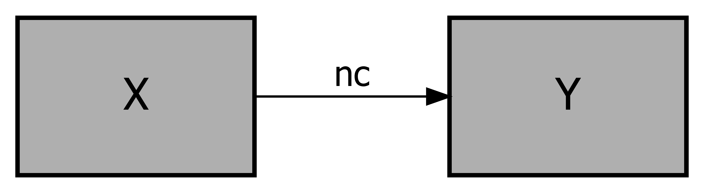
Figure 3.1: Conceptual model of a necessity theory with one condition and one outcome.
It is also possible that multiple concepts (e.g., \(X_1\), \(X_2\), \(X_3\)) are necessary for the same outcome (\(Y\)) as shown in Figure 3.2-left, or that one or more conditions are necessary for several outcomes (e.g., \(Y_1\), \(Y_2\), \(Y_3\)), which is shown in Figure 3.2-right. Note that conditions \(X_1\), \(X_2\), and \(X_3\) are all individual necessary conditions. If any one condition is missing (below its required level) the outcome cannot occur (at its target level), while the presence of all conditions is normally not sufficient for the outcome because other contributing factors must be in place as well.
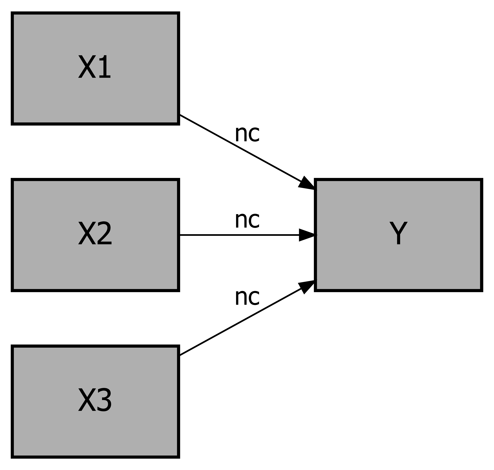
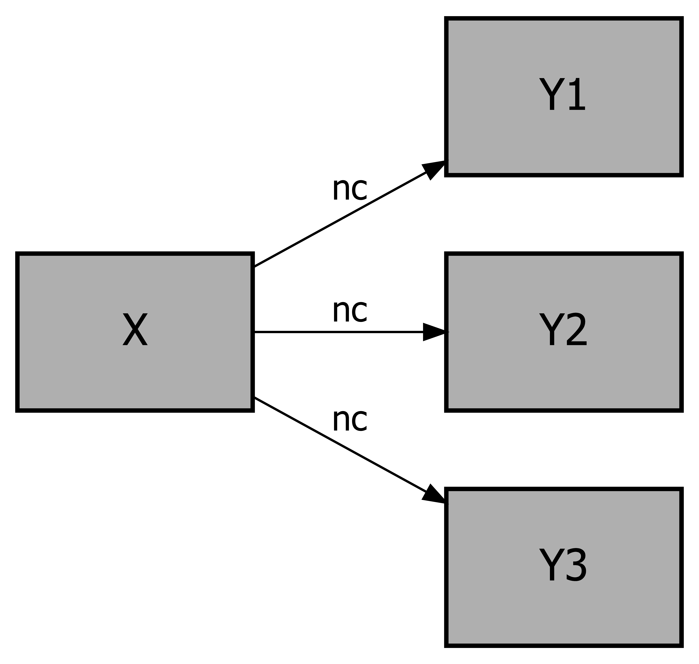
Figure 3.2: Conceptual models of a necessity theory with three conditions and one outcome (Left), and of a theory with one condition and three outcomes (Right).
Furthermore, several necessary conditions can combine into a necessity causal chain where \(X_1\) is necessary for \(X_2\), and \(X_2\) is necessary for \(Y\). This situation is shown in Figure 3.3 and is called ‘chain necessity’ of \(X_1\) for \(Y\). Chain necessity differs from ‘direct necessity’ as shown in Figure 3.1. In the dichotomous necessity-in-kind (NiK) situation, the necessity of \(X_1\) for \(X_2\) and of \(X_2\) for \(Y\) implies the necessity of \(X_1\) for \(Y\). However, in the necessity-in-degree (NiD) situation it is possible that the chain necessity of \(X_1\) for \(Y\) is absent despite the necessity between the elements of the chain (\(X_1\) for \(X_2\) and \(X_2\) for \(Y\)), as discussed in Section 4.6.4.
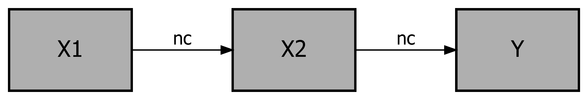
Figure 3.3: Conceptual model of a chain of necessary conditions. \(X_1\) is necessary for \(X_2\) and \(X_2\) is necessary for \(Y\).
Necessity models are inherently parsimonious. A single necessary condition can stop the outcome, independently of other conditions and other contributing factors. However, in sufficiency-based perspectives, a single factor is seldom enough to produce the outcome. For a probabilistic or configurational sufficiency model, a series of factors are included to model causal complexity. This applies to both probabilistic sufficiency (e.g., structural causal models) and configurational sufficiency (e.g., as in QCA). Parts of the relationships of sufficiency models could (also) be necessity relationships. For the necessity analysis these parts can be isolated (as in Figure 3.1) from the rest of the causal structure and independently be analyzed for necessity (Chapter 11).
3.4 Types of necessity theories
In addition to the established/emerging distinction, necessity theories can also be classified according to the extent to which necessity propositions are part of the theory. Bokrantz & Dul (2023) distinguish between pure necessity theories, which are theories that consist only of necessity relationships between the concepts and embedded necessity theories, which are theories that consist of a mix of necessity relationships and other relationships (e.g., probabilistic sufficiency or configurational sufficiency). In embedded necessity theories, some of the relationships may be necessity relationships (e.g., \(X_1 \xrightarrow{nc\ } Y\)), whereas others may be probabilistically sufficient relationships (\(X_2 \xrightarrow{+\ } Y\)). It is also possible that one condition has both causal roles in a model such that the presence of \(X\) is necessary for the presence of \(Y\), but also that \(X\) likely increases \(Y\) (\(X \xrightarrow{nc\ ,\ +} Y\)).25

Figure 3.4: Typology of necessity theories with examples. AMO = Ability-Motivation-Opportunity. TPB = Theory of Planned Behavior. TAM = Technology Acceptance Model. SDT = Self-Determination Theory.
Figure 3.4 shows the four possible types of necessity theories by also considering if the necessity theory is established or new.
Established pure necessity theories, where all relationships in the theory are necessity relationships as in Figures 3.1, 3.2, and 3.3 in Section 3.2 are relatively scarce. One example is the early theory of Guilford (1967) that intelligence is necessary for creativity. Shortly after NCA was introduced (Dul, 2016b), this theory was empirically tested with NCA and supported (Karwowski et al., 2016). Another established pure necessity theory is the original Ability, Motivation, Opportunity model (AMO) or Motivation, Opportunity, Ability (MOA) model of human behavior. Necessity lies at the core of this theory assuming that A, M, and O are single necessary conditions for behavior.26
Established embedded necessity theories are broadly accepted theories consisting of both necessity and probabilistic sufficiency relationships. Often, these theories are originally formulated as probabilistic sufficiency theories for all their relationships, and revisited to suggest a necessity perspective for one or more relationships. An example is Frommeyer et al. (2022)’s interpretation of one relationship of the Theory of Planned Behavior (TPB): Intention of the behavior is necessary for Performance of the behavior, while keeping the other relationships as probabilistic sufficiency.27 Another example is the Technology Acceptance Model (TAM) that is usually interpreted and studied as a probabilistic sufficiency theory and that was recently revisited with a necessity causal perspective for all relationships while maintaining also the probabilistic sufficiency perspective (Erdmann & Toro-Dupouy, 2025; Hassan et al., 2025; Kopplin, 2023; Low & Ramayah, 2023; e.g., Richter et al., 2020; Su et al., 2023).28 Also the Self-Determination Theory (SDT) was recently revisited from the perspective of necessity only (Ding & Kuvaas, 2023, 2025) or in combination with the probabilistic sufficiency perspective (Cassia & Magno, 2024). SDT suggests that humans have three basic psychological needs (motivation, competence, relatedness) that must be satisfied for optimal human development and well-being.
Many established theories exist (not shown in Figure 3.4) that could be revisited from a necessity perspective to develop pure or embedded necessity theories because their founders clearly employed necessity causal reasoning to formulate these theories. Examples include Porter’s theory on competitive advantage of nations (Porter, 1985), Wernerfelt’s resource-based view of the firm (Wernerfelt, 1984), Teece’s theory on dynamic capabilities (Teece et al., 1997; Teece, 2007), Rogers’ theory on person-centered psychotherapy (Rogers, 1957), Turner’s framework for project management success (Turner, 2009), and Meehl’s concept of ‘specific etiology’ in medicine (Meehl, 1962). Until recently, such theories were mostly tested using regression-based methods that implicitly assume probabilistic sufficiency, suggesting theory-method misfit (Table 11.1). With NCA available, testing necessity with a dedicated methodology becomes possible.
Since the introduction of NCA, the number of emerging pure necessity theories has risen. Appendix ?? includes examples of NCA studies in which only necessity relationships are theoretically formulated and tested with NCA. After replication and further theorizing, these emerging necessity theories may become established necessity theories. An example of an empirical study with an emerging pure necessity theory is a study by Yan et al. (2023) that proposes and finds four necessary conditions for a country’s high level of early COVID-19 mortality rate: high levels of a delayed first response, political decentralization, elderly populations, and urbanization. An example of a theoretical study with an emerging pure necessity theory is the study by Andrevski & Miller (2022) about defining the concept ‘strategic forbearance’. When firms are attacked by competitors, forbearance is defined by three necessary conditions: the presence of awareness of the attack, the presence of capabilities to react, and the absence of a motivation to react.
Many studies formulate emerging embedded necessity theories. Such studies often start with a probabilistic sufficiency theory based on earlier empirical regression-based studies and then suggest that one or more of the relationships could (also) be formulated as necessity relationships. In an empirical study Lee & Jeong (2021) propose an emerging embedded necessity theory in which two dimensions of tourist happiness experience (Hedonic enjoyment and Personal expressiveness) are related to Satisfaction (customer’s judgment about their fulfillment with a product or service) and Place attachment (bonding between individuals and places). This is shown in the conceptual model of Figure 3.5. By conducting both NCA and structural equation modeling (SEM), they conclude that Hedonic enjoyment (pleasure, comfort) has both a necessity relationship and a probabilistic sufficiency relationship with Satisfaction, but only a necessity relationship with Place attachment. Furthermore, they conclude that Personal expressiveness (a subjective experience of self-realization that one is acting in such a way that one is truly being oneself) has no probabilistic sufficiency relationship with Satisfaction, and both a necessity relationship and a probabilistic sufficiency relationship with Place attachment. Other examples of emerging embedded necessity theories may be found in empirical studies that apply NCA in combination with regression-based methods (Tables ??, ??, and ?? in Appendix C). Liehr & Hauff (2022) propose in a theoretical study an emerging embedded necessity theory about leadership competencies for employee innovative behavior. They review a large number of competencies that contribute to innovative behavior and conclude that three competencies (according to the literature) have a probabilistic sufficiency relationship with innovative behavior but are not necessary (rewards, sharing expertise, resource management) and four competencies are (also) necessary: providing support, communicating a vision, granting autonomy and discretion, and providing feedback.
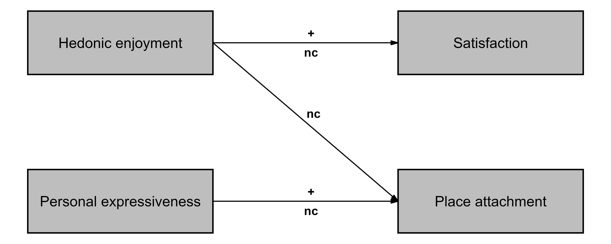
Figure 3.5: Example of an emerging embedded necessity theory for the effect of two dimensions of happiness experiences (Hedonic enjoyment and Personal expressiveness) on two outcomes (Satisfaction and Place attachment). The symbols + represents a positive probabilistic relationship and the symbol nc represents a necessity relationship with high-high direction (After Lee & Jeong, 2021).
3.5 Direction of a necessity relationship
In Figure 3.5 the direction of the probabilistic sufficiency relationship is given by a + symbol above the arrow. This convention indicates a positive effect: \(X\) increases \(Y\) or \(X\) has a positive effect on \(Y\) or more precisely, that a higher value of \(X\) increases the probability of a higher value of \(Y\). Similarly, a – symbol indicates a negative effect: \(X\) decreases or has a negative effect on \(Y\); a higher value of \(X\) decreases the probability of a higher value of \(Y\).
Such single symbols do not convey meaning for a necessity relationship. In a necessity proposition the direction is not described by a verb as in \(X\) increases \(Y\) or \(X\) has a positive effect on \(Y\). For a necessity proposition a noun or adverb (or a combination) is used to describe relationships between levels of \(X\) and \(Y\). For example, in the dichotomous situation absence of \(X\) is necessary for presence of \(Y\) or in the continuous situation low level of \(X\) is necessary for high level of \(Y\). For a necessity relationship four possible directions exist (Figure 3.6).
First, for a necessary condition with a high-high direction, the presence/high value of \(X\) is necessary for presence/high value of \(Y\). This is symbolized as (see Figure 3.6-top-left). For example, high level of Urbanization is necessary for a high level of Early COVID-19 mortality (Yan et al., 2023).
Second, for a necessary condition with a low-high direction, the absence/low value of \(X\) is necessary for the presence/high value of \(Y\) (). For example, low Intensity of production is necessary for high Environmental sustainability in agriculture (Lankoski & Lankoski, 2023).
Third, for a necessary condition with a high-low direction, the presence/high value of \(X\) is necessary for the absence/low value of \(Y\) (). For example, the presence/high value of social support is necessary for the absence/low value of stress.
Fourth, for a necessary condition with a low-low direction, the absence/low value of \(X\) is necessary for the absence/low value of \(Y\) (). For example, the absence of rain is necessary for the absence of a wet surface.
The third and fourth formulations of a necessary condition are less common than the first and second. Often the absence/low value of the outcome is redefined as the presence/high level of the opposite of the outcome. For example, the presence/high value of social support is necessary for the presence/high value of relaxation or the absence of rain is necessary for the presence of a dry surface. Thus, the direction of the necessary condition depends on the definition of the concepts that are part of the proposition.
In the absence of a specified direction, the implied direction is , as shown in Figure 3.5. Throughout this book, the default assumption is the direction, unless stated otherwise.
Figure 3.6 shows the four possible conceptual models depending on the direction of the necessary condition.
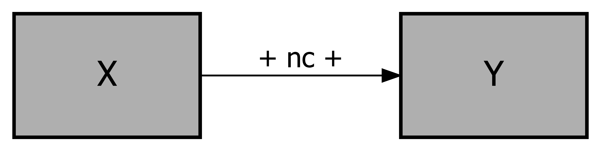
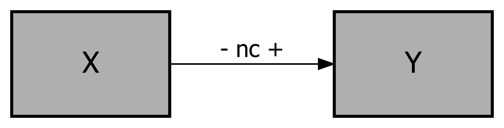
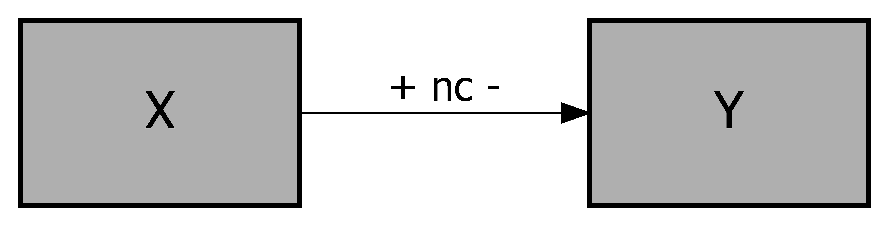
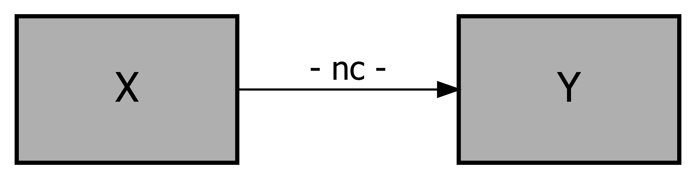
Figure 3.6: Conceptual models for necessary conditions. Top-Left: high-high = presence/high value of \(X\) is necessary for presence/high value of \(Y\). Top-Right: low-high = absence/low value of \(X\) is necessary for presence/high value of \(Y\). Bottom-Left: high-low = presence/high value of \(X\) is necessary for absence/low value of \(Y\). Bottom-Right: low-low = absence/low value of \(X\) is necessary for absence/low value of \(Y\).


Figure 3.7: \(XY\)-tables showing empty corners without observations depending on the direction of the necessity relationship. Top-Left: high-high = presence of \(X\) is necessary for presence of \(Y\). Top-Right: low-high = absence of \(X\) is necessary for presence of \(Y\). Bottom-Left: high-low = presence of \(X\) is necessary for absence of \(Y\). Bottom-Right: low-low = absence of \(X\) is necessary for absence of \(Y\).
3.6 Expected empty corner
Depending on the direction of necessity, different corners in the \(XY\)-table or \(XY\)-plot are expected to be empty. For the dichotomous situation, the \(XY\)-table of Figure 2.1-right illustrates necessity causality when the presence of \(X\) is necessary for the presence of \(Y\). Corner 1 cannot have observations (points, cases) whereas the other corners may have observations. This is also shown in Figure 3.7-top-left. In Figure 3.7 rows represent the two values of the outcome \(Y\) (Absent/Present), and columns the two values of the condition \(X\). The condition \(X\) increases to the right, and the outcome \(Y\) increases upward. Each corner in the table represents a certain combination of \(X\) and \(Y\). For example, the upper-left corner represents absence of \(X\) and presence of \(Y\). A gray corner with a black dot indicates that the corner may contain observations. A white corner without dots indicates that no observations are possible.
When the presence of \(X\) is necessary for the presence of \(Y\), the upper-left corner is empty. This corresponds to the necessity statement ‘if not \(X\), then not \(Y\)’ (see the necessity statement of expression (2.6) in Chapter 2). The outcome is absent when the condition is absent. This means that the upper-left corner does not have observations, and that the lower-left corner has observations. Similarly, when the outcome is present, the condition must also be present: the upper-right corner has observations. The content of the lower-right corner is irrelevant for necessity: this corner may or may not have observations when the necessary condition applies. For necessity, the emptiness of the upper-left corner is essential.
For other directions of the necessary condition, other corners in the \(XY\)-table remain empty when necessity applies. When necessity is valid, the upper-right corner remains empty. Similarly, for necessity, the lower-left corner is empty, and for necessity, the lower-right corner stays unoccupied. Therefore, the empty corner depends on how the necessary condition is formulated in the theory (and how the direction of the axes and the concepts are defined). Each formulation of the necessity proposition results in a specific corner of the \(XY\)-table being empty, referred to as the expected empty corner.
For the continuous situation, Figure 3.8 shows the four directions and corresponding empty corners. Here an \(XY\)-plot instead of a \(XY\)-table is used as a visualization method for representing that a low/high value of the condition is necessary for a low/high value of the outcome. The condition \(X\) increases to the right, and the outcome \(Y\) increases upward. Each corner in the plot represents a certain combination of low/high \(X\)- and \(Y\)-values. For example, the upper-left corner represents low level of \(X\) and high level of \(Y\). A gray area indicates that the area may contain observations.
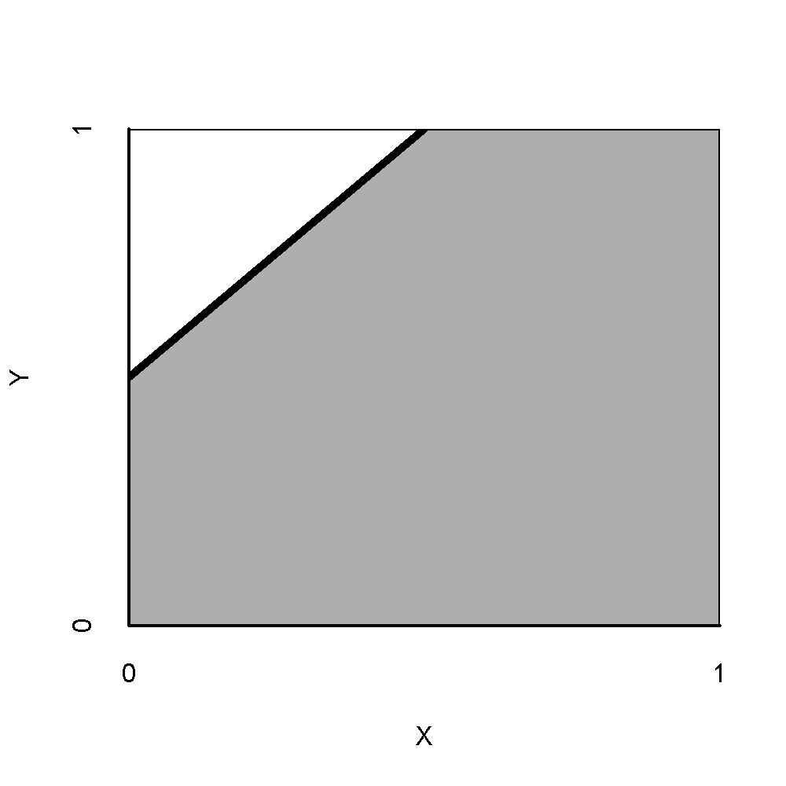
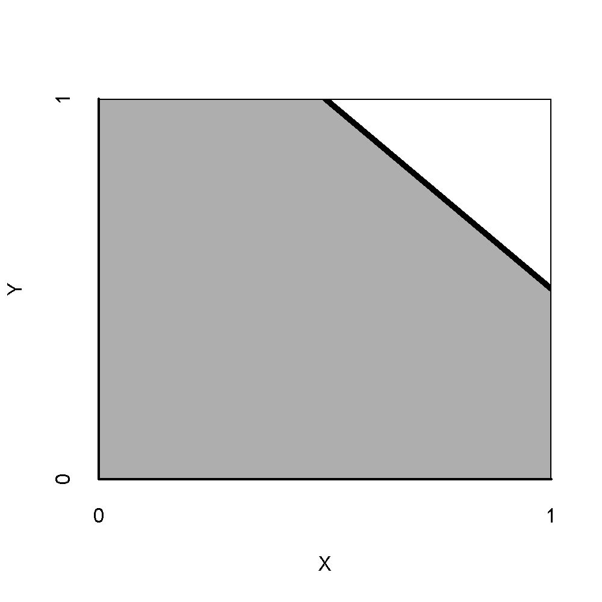
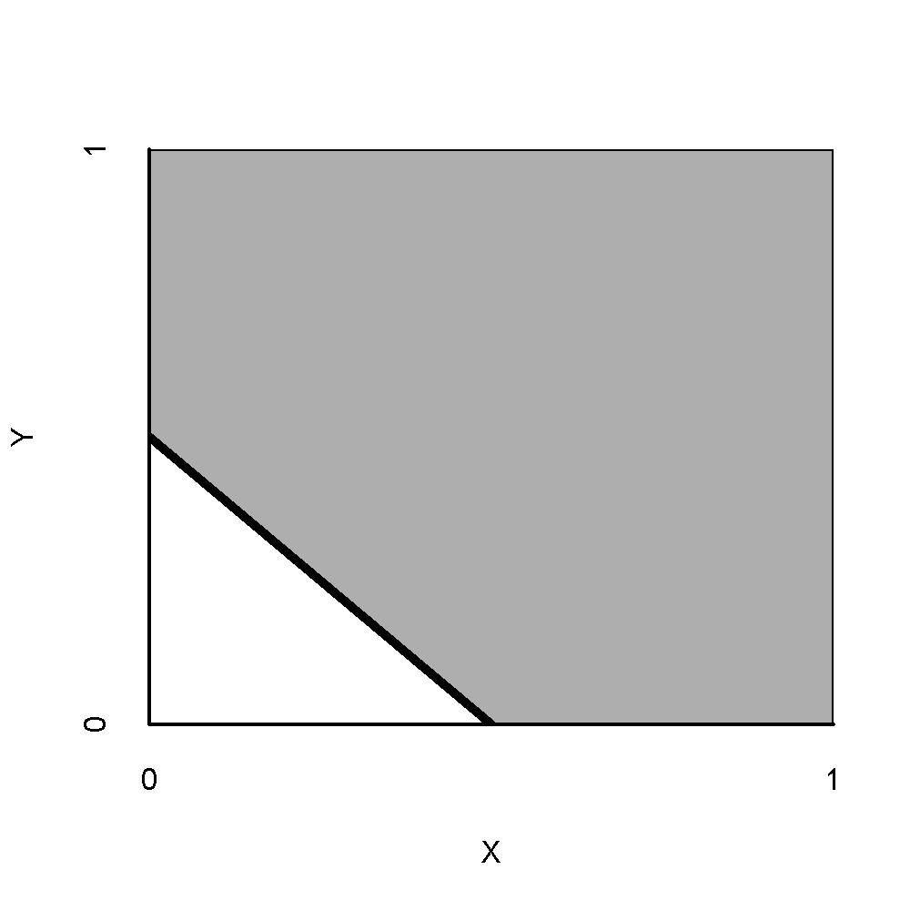
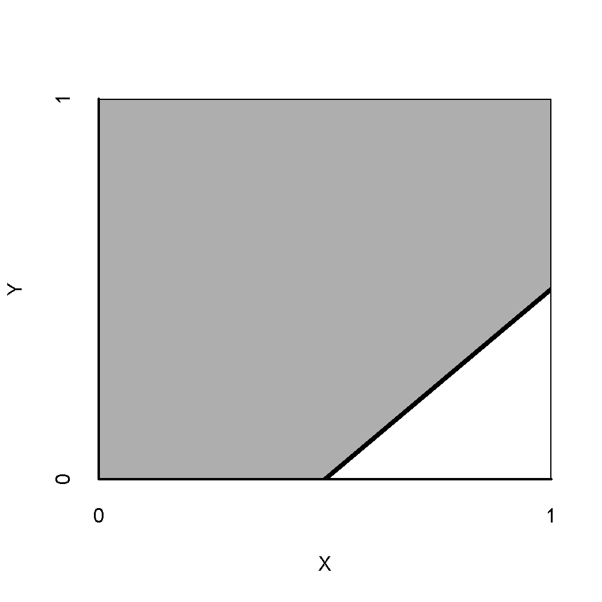
Figure 3.8: \(XY\)-plots showing the direction of a necessity relationship. Top-Left: a high value of \(X\) is necessary for a high value of \(Y\) (+ nc +, high-high). Top-Right: a low value of \(X\) is necessary for a high value of \(Y\) (- nc +, low-high). Bottom-Left: a high value of \(X\) is necessary for a low value of \(Y\) (+ nc -, high-low). Bottom-Right: a low value of \(X\) is necessary for a low value of \(Y\) (- nc -, low-low).
3.7 Double necessity
It is possible that a single factor has two necessity relationships with the outcome at the same time, implying that more than one corner is expected to be empty. When the concepts are continuous, it is possible that two adjacent corners are empty. This allows theorizing that an optimum (not low, not high) level of \(X\) is necessary for a high level of \(Y\), implying that the upper-left and the upper-right corners are expected to be empty (Figure 3.9-left). For example, in team performance, moderate levels of conflict (\(X\)) may be necessary for high team innovation performance (\(Y\)). Low conflict leads to group think, which may limit performance; high conflict leads to dysfunction, which also limits team innovation performance. Therefore, a moderate level of conflict enables teams to challenge each other productively, providing the possibility for high innovation performance.
Similarly, it may be theorized that an optimum (not low, not high) level of \(X\) is necessary for a low level of \(Y\), implying that the lower-left and lower-right corners are expected to be empty (Figure 3.9-right). For example, in stress management, moderate levels of workload (\(X\)) may be necessary for low employee burnout (\(Y\)). Low workload can result in boredom and lack of purpose, which may limit the possibility of low burnout; high workload can cause stress and exhaustion, which also limits the possibility of low burnout. Therefore, a moderate workload is necessary for low burnout because both too low and too high workload create psychological strain that prevents burnout from remaining low.


Figure 3.9: \(XY\)-plot showing an optimum level of the necessary condition. Left: An optimum level of \(x_{c1} <x < x_{c2}\) is necessary for a high level of \(y = y_c\). Right: An optimum level of \(x_{c1} < x < x_{c2}\) is necessary for a low level of \(y = y_c\).
It is also possible to theorize that a high level of \(X\) is necessary for an extreme (low or high) level of \(Y\). Then the upper-left and the lower-left corners are expected to be empty (Figure 3.10-left). Similarly, it may be theorized that a low level of \(X\) is necessary for an extreme (low or high) level of \(Y\). Then the upper-right and the lower-right corners are expected to be empty (Figure 3.10-right).


Figure 3.10: \(XY\)-plot showing necessity for an extreme level of the outcome. Left: A high level of \(x > x_c\) is necessary for an extreme (low or high) level of \(y = y_{c1}\) or \(y = y_{c2}\). Right: A low level of \(x < x_c\) is necessary for an extreme (low or high) level of \(y = y_{c1}\) or \(y = y_{c2}\).
The situations shown in Figures 3.9 and 3.10 do not have dichotomous equivalents, as this would imply that the outcome or the condition is always absent (Figure 3.11-top-left) or always present (Figure 3.11-top-right), or that the condition is always present (Figure 3.11-bottom-left), or always absent (Figure 3.11-bottom-right).


Figure 3.11: \(XY\)-tables showing two adjacent empty corners without observations. Top-Left: presence of \(Y\) is not possible. Top-Right: absence of \(Y\) is not possible. Bottom-Left: absence of \(X\) is not possible. Bottom-Right: presence of \(X\) is not possible.
When two opposite corners are empty, as shown in Figure 3.12-left, two claims apply: the presence/high level of \(X\) is necessary for the presence/high level of \(Y\) (empty upper-left corner) and that the absence/low level of \(X\) is necessary for the absence/low level of \(Y\) (empty lower-right corner). Similarly, it may be theorized that the absence/low level of \(X\) is necessary for the presence/high level of \(Y\) (empty upper-right corner) and that the presence/high level of \(X\) is necessary for the absence/low level of \(Y\) (empty lower-left corner). This is shown in Figure 3.12-right. This situation has dichotomous equivalents, as shown in Figure 3.13.


Figure 3.12: Double necessity. Left: A high level of \(x > x_{c1}\) is necessary for a high level of \(y = y_{c1}\), and a low level of \(x < x_{c2}\) is necessary for a low level of \(y = y_{c2}\). Right: A low level of \(x < x_{c1}\) is necessary for a high level of \(y = y_{c1}\), and a high level of \(x > x_{c2}\) is necessary for a low level of \(y = y_{c2}\).


Figure 3.13: \(XY\)-tables showing two opposite empty corners without observations. Left: the presence of \(X\) is necessary for the presence of \(Y\) and the absence of \(X\) is necessary for the absence of \(Y\). Right: the absence of \(X\) is necessary for the presence of \(Y\) and the presence of \(X\) is necessary for the absence of \(Y\).
3.8 The meaning of ‘necessary but not sufficient’
To understand what is necessary but not sufficient, this section first explains what is meant by necessary and sufficient. In the dichotomous situation, ‘necessary and sufficient’ means that the upper-left corner and the lower-right corner of the \(XY\)-plot are both empty. This is shown in Figure 3.13, which is interpreted as a double necessity relationship of \(X\) for \(Y\): a necessity relationship where the presence of \(X\) is necessary for the presence of \(Y\) (upper-left corner empty) and a necessity relationship where the absence of \(X\) is necessary for the absence of \(Y\) (lower-right corner empty). By logic, in the dichotomous situation the second relationship can be reformulated as a sufficiency relationship where the presence of \(X\) is sufficient for the presence of \(Y\), as shown in Figure 2.1-left. The first relationship (necessity) and the second relationship (sufficiency) now have the same \(X\)-value (presence) and the same \(Y\)-value (presence). This allows a single statement that the presence of \(X\) is necessary and sufficient for the presence of \(Y\). If the sufficiency relationship does not hold, the formulation of the combined relationship would be: the presence of \(X\) is necessary but not sufficient for the presence of \(Y\). This means that the lower-right corner is not empty.
In discrete and continuous situations, necessity and sufficiency are more complex. Like in the dichotomous situation, the upper-left corner and the lower-right corner are both empty. This is shown in Figure 3.12-left, which is interpreted as a double necessity relationship of \(X\) for \(Y\): a necessity relationship where a high level of \(X\) is necessary for a high level of \(Y\) (upper-left corner empty) and a necessity relationship where a low level of \(X\) is necessary for a low level of \(Y\) (lower-right corner empty). By logic, the second relationship can again be reformulated as a sufficiency relationship: a not-low level of \(X\) is sufficient for a not-low level of \(Y\). However, a ‘not-low’ level is usually not the same as a ‘high’ level. For example, in Figure 3.12-left, level \(X = x_{c1}\) is necessary for level \(Y = y_{c1}\), whereas level \(X = x_{c2}\) is sufficient for level \(Y = y_{c2}\). There are no common \(X\)-levels and common \(Y\)-levels that would allow a single statement that level \(X = x_{c}\) is necessary and sufficient for level \(Y = y_{c}\), unless the upper ceiling line and the lower ceiling line (floor line) overlap or intersect at the point (1,1). If the lines overlap there are only observations on the ceiling line and the necessity and sufficiency statement holds for all observations. If the lines intersect at point [1,1], only at that point the necessity and sufficiency statement holds. Both situations are, however, exceptional.
In all other situations the statement that level \(X = x_{c}\) is necessary but not sufficient for level \(Y = y_{c}\) has a broader meaning than that the lower-right corner is not empty. If the lower-right corner can have observations, observations are normally possible in the entire area below the ceiling line, not just in the lower-right corner. This allows a single statement that \(X = x_{c}\) is necessary but not sufficient for \(Y = y_{c}\). When \(X = x_{c}\), no observations are above point \(C\) on the ceiling line, whereas observations below point \(C_1\) are possible. In other words, for a given level \(X = x_{c}\), it is not possible to have values of \(Y > y_{c}\) (necessity applies) but it is possible to have values \(Y \leq y_{c}\) (“non-sufficiency” applies). Consequently, where in the dichotomous situation the statement \(X\) is necessary but not sufficient for \(Y\) means that observations are possible in the lower-right corner, in the discrete and continuous situations it means that there are observations below the ceiling line. NCA focuses on the identification of necessity (rather than on the identification of non-sufficiency) in any corner of the \(XY\)-table or the \(XY\)-plot. If the focus is on the lower-right corner, the emptiness of this corner is interpreted as indicating that the absence or a low level of \(X\) is necessary for the absence or a low level of \(Y\).
4 Mathematics
4.1 Summary of this chapter
This chapter describes the mathematics of a necessity relationship between a pair of variables: \(X\) is necessary for \(Y\). The chapter focuses on necessity-in-degree (NiD) that describes the general situation of two continuous variables with an empty space in the upper-left corner of the \(XY\)-plot. Using a conventional Euclidean coordinate system where the \(X\)-axis runs horizontally with increasing values from left to right, and the \(Y\)-axis runs vertically with increasing values from bottom to top, this indicates that a high level of \(X\) is necessary for a high level of \(Y\). The mathematical approach described here can be extended to situations with dichotomous or discrete variables, or to analyzing other corners, though this is not addressed in this chapter. The chapter first presents the branches of mathematics applied in NCA (Section 4.2). In the subsequent section NCA’s mathematical model specification is presented (Section 4.3). It includes the specification of the bounding box, the ceiling line, and the model’s degrees of freedom. This is followed by a discussion on how to estimate a necessity model by estimating parameters related to the necessity effect size and model fit. Next, the situation of multiple necessary conditions is discussed, explaining why NCA considers multiple \(X_jY\)-planes (multiple projections), rather than one multidimensional space, and explaining how a chain of necessity can be analyzed (Section 4.6).
4.2 Branches of mathematics
Rather than relying on statistics and probability theory, NCA employs two branches of mathematics: geometry and algebra. Geometry describes relationships between objects and spaces including points, lines, angles, and planes. NCA focuses on points in the two-dimensional space (\(XY\)-plane), describes relationships between points (e.g., ceiling line) and considers the size of an area (e.g., effect size). Algebra uses symbols, letters, and numbers and describes their relationships and operations including variables, constants, functions, equations, and inequalities. NCA uses functions to describe the ceiling line with constants and variables, uses equations to calculate effect size, and uses inequalities to specify (in)feasible areas. When describing NCA, geometry and algebra are intertwined. NCA is not a statistical data analysis method per se, although it uses tools from statistics (Chapter 5).
4.3 Model specification
In NCA, variables \(X\) and \(Y\) can be dichotomous (two possible levels), discrete (more than two possible levels) or continuous variables (infinite number of possible levels). With numeric variables (including ratio- and interval-scale variables), effect size and other necessity parameters can be calculated. With categorical variables, these calculations are not possible unless equal distances between ordered categories are assumed (e.g., “low”, “medium”, “high”). NCA can handle both non-random and random variables. When NCA uses random variables for \(X\) and \(Y\), NCA only assumes that the univariate distributions are bounded, but no assumption is needed about the shape of the distribution.29
NCA’s model specification consists of specifying the bounding box and the ceiling line.
4.3.1 Bounding box
NCA assumes that the condition and the outcome are bounded. There are two reasons for this. First, variables represent properties of phenomena. Many properties are finite, represented by minimum and maximum values of the variables, rather than being infinite (e.g., height of people). Second, the assumption that \(X\) and \(Y\) are bounded allows the definition and calculation of the necessity effect size (Section 4.4.1) and other NCA parameters (Sections 4.4.2 and 4.5). Assuming bounds on \((X,Y)\) means that there are four constants that define the ranges of the condition \(X\) and the outcome \(Y\):
\[\begin{equation} \tag{4.1} x_{\min} \leq x \leq x_{\max}\quad \text{ and } \quad y_{\min} \leq y \leq y_{\max} \end{equation}\]
These bounds define the bounding box in an \(XY\)-plot. The bounding box is defined by the minimum and maximum values of \(X\) and \(Y\), that is \([x_{\min}, x_{\max}] \times [y_{\min}, y_{\max}]\). The feasible and empty areas, as well as the ceiling line and its extensions, are defined relative to this bounding box.
The scope (\(S\)) is the area of the bounding box and is mathematically expressed as:
\[\begin{equation} \tag{4.2} S = {(x_{\max} - x_{\min})}\cdot{(y_{\max} - y_{\min})} \end{equation}\]
The bounding box can be constructed in two ways: theoretically and empirically. The theoretical scope is defined by theoretical bounds of \(X\) and \(Y\) when the theoretical bounds are known or presumed.30 The empirical scope is defined by the observed minimum and maximum values of \(X\) and \(Y\). This option is often selected when theoretical bounds are unknown.
Without loss of generality (for the purpose of NCA), the variables can be linearly transformed to the unit square \([0,1]\times[0,1]\) to obtain a scope value of 1 (Section 8.5.2).31 Then a point \((x,y)\) gets transformed by min-max normalization into \((x',y')\) as follows:
\[\begin{equation} \tag{4.3} x' = \frac{x - x_{\min}}{x_{\max} - x_{\min}} \quad \text{ and } \quad y' = \frac{y - y_{\min}}{y_{\max} - y_{\min}} \end{equation}\]
4.3.2 Ceiling line
When necessity exists, the bounding box has an area where points are possible (feasible area) and an area where points are impossible (empty space or ceiling zone). The ceiling line32 is a line within the bounding box that separates these two areas. Specifying the ceiling line involves choosing its location (in which corner) and its form.
The location depends on the direction of the hypothesis (Section 3.5), which defines the expected empty corner. For a high-high hypothesis (presence/high value of \(X\) is necessary for presence/high value of \(Y\)), the expected empty corner is the upper-left corner of the \(XY\)-plot (corner 1).33
To specify the form of the ceiling line, several options exist. Figure 4.1 shows three classes of non-decreasing ceiling lines in a bounding box. The first class is the Ceiling Envelopment Free Disposal Hull (CE-FDH), which is a stepwise linear ceiling line consisting of several horizontal and vertical line segments (Figure 4.1-top-left), the second class is Ceiling Envelopment Variable Returns to Scale (CE-VRS), which is a concave piecewise linear ceiling consisting of several oblique line segments (Figure 4.1-top-right), and the final one is a linear ceiling line consisting of one segment (Figure 4.1-bottom). The ceiling line represents an upper bound on the outcome in the feasible area (the gray area). The ceiling line is considered a part of the feasible area.
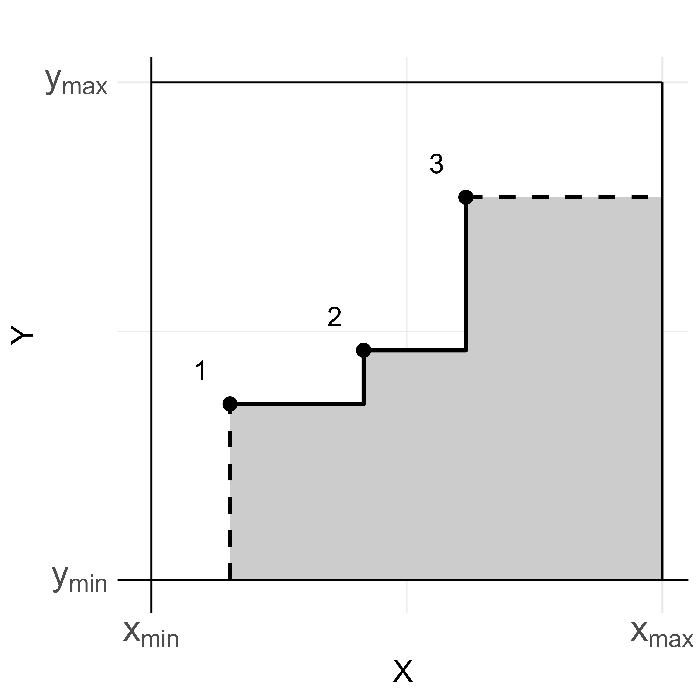
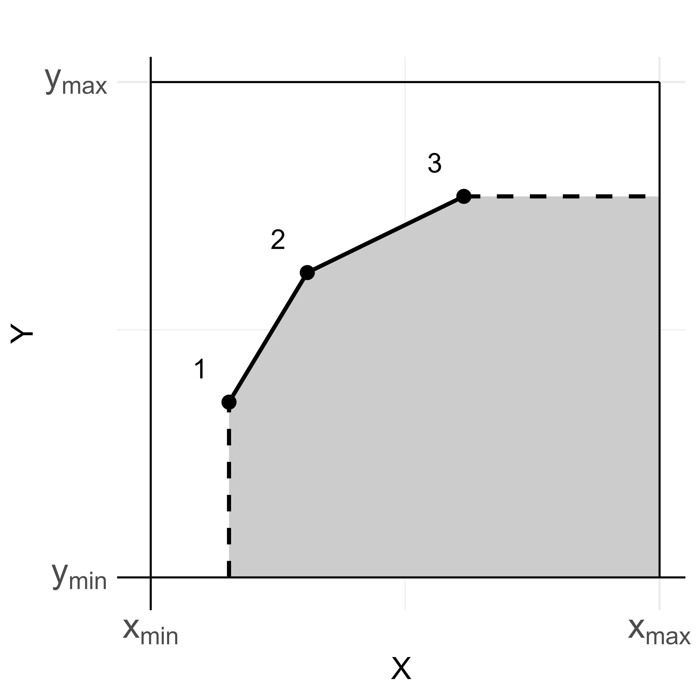
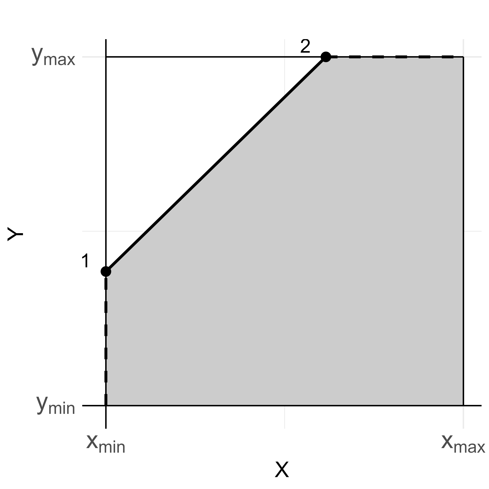
Figure 4.1: Three classes of ceiling lines within a bounding box for high-high necessity. Top-Left: stepwise linear. Top-Right: concave piecewise linear. Bottom: linear. White: ceiling zone. Gray: feasible area. Numbered points are peers (dominant point with no cases above and to the left of it) connected by solid line segments constructing the ceiling line. The dashed lines are extensions such that the ceiling line envelopes the feasible area.
A ceiling line is assumed to be non-decreasing for two reasons.34 First, it allows the expression that at least a certain level of \(X\) is necessary for a certain level of \(Y\). Second, a non-decreasing ceiling line has the ‘no-reversal’ (no change of direction) property. This means that if a point \((x,y)\) is in the ceiling zone, then any point \((x',y')\) to the left or above it (a point with \(x'\leq x\) and \(y'\geq y\)) and within the bounding box is also in the ceiling zone. Similarly, if a point \((x,y)\) is in the feasible area, then any point \((x',y')\) in the bounding box with \(x' \geq x\) and \(y' \leq y\) is also in the feasible area. This property is used for the mathematical expression of the ceiling line (see below) and for two measures of imperfect necessity, namely purity and solidity (Sections 4.5.4 and 4.5.5, respectively).
4.3.2.1 Stepwise linear ceiling line
NCA uses the stepwise linear ceiling line (CE-FDH) as the base ceiling model. It refers to the Free Disposal Hull (FDH) technique (Deprins et al., 1984) that originates in production economics. This application of FDH identifies the efficiency of decision-making units (DMUs) with a certain production input (\(X\)) and output (\(Y\)). The technique assumes the free disposability property meaning that if a DMU can produce a certain output, it can also reduce the amount of output without using additional input, and use more input without increasing output. FDH identifies the most efficient DMUs (points with maximum output for a given input and minimum input for a given output). The outer boundary of the hull (‘envelope’ or ‘frontier’) connects the most efficient points (called ‘peers’). Points below the frontier are considered inefficient.
NCA uses the FDH technique in 2D. In NCA’s context, the hull is called the feasible area, and the disposability property is called the no-reversal property. The feasible area is the smallest area defined by peers: a strictly increasing set of points, \((x_i,y_i)_{i=1,\ldots,P}\) for which
\[\begin{equation} \tag{4.4} x_i<x_{i+1}\quad\text{and}\quad y_i<y_{i+1}\quad\text{for}\quad i=1,\ldots,P-1 \end{equation}\]
Where \(P\) is the number of peers. Peers are points that dominate other points. When the upper-left corner is the expected empty corner (as in Figure 4.1), no points exist to the left and above the peers.
A class of ceiling lines is defined by the way that peers are defined and connected. The CE-FDH-class of ceiling lines consists of all models with a feasible area generated by a set of \(P\) peers connected by horizontal and vertical line segments (Figure 4.1-top-left).
Let the peers be \((x_i,y_i)_{i=1,\ldots,P}\). The feasible space generated by these peers is the hypograph35 of the ceiling function \(f(x)\), defined for \(x\in[x_1,x_{\max}]\) by
\[\begin{equation} \tag{4.5} f_{\mathrm{CE-FDH}}(x)= \begin{cases} y_i & \text{if } x_i\le x<x_{i+1}\quad (i=1,\ldots,P-1),\\ y_P & \text{if } x_P\le x\le x_{\max} \end{cases} \end{equation}\]
and \(f_{\mathrm{CE-FDH}}(x)\) is not defined for \(x<x_1\).
The generalized inverse is:
\[\begin{equation} \tag{4.6} \begin{aligned} f_{\mathrm{CE-FDH}}^{-}(y) &= \inf\{x\mid f_{\mathrm{CE-FDH}}(x)\ge y\}\\ &= \begin{cases} x_1 & \text{if } y\le y_1,\\ x_{i+1} & \text{if } y_i<y\le y_{i+1}\quad (i=1,\ldots,P-1) \end{cases} \end{aligned} \end{equation}\]
and \(f_{\mathrm{CE-FDH}}^{-}(y)\) is undefined (infeasible) if \(y>y_P\).
The associated feasible space is generated by all points on the line segments from \((x_i,y_i)\) to \((x_{i+1},y_{i+1})\) for \(i=1,\ldots,P-1\).
The ceiling line is given by the sequence of line segments from \((x_1,y_{\min})\) to \((x_1,y_1)\), to \((x_2,y_1)\), to \((x_2,y_2)\), and so on, ending at \((x_P,y_P)\) and \((x_{\max},y_P)\). Possibly, the first segment from \((x_1,y_{\min})\) to \((x_1,y_1)\) and/or the last segment from \((x_P,y_P)\) to \((x_{\max},y_P)\) has length equal to zero (starts and ends at the bounding box). When the first peer starts at \(x = x_{min}\) and the last peer ends at \(y = y_{max}\) the bounding box is called a tight bounding box.
4.3.2.2 Concave piecewise linear (CE-VRS) ceiling line
The CE-VRS-class of ceiling line consists of all models with a set of \(P\) peers such that the sequence of peers forms a concave sequence, i.e. the slopes between consecutive peers strictly decrease:
\[\begin{equation} \tag{4.7} \frac{y_{i+1}-y_i}{x_{i+1}-x_i} > \frac{y_{i+2}-y_{i+1}}{x_{i+2}-x_{i+1}} \quad\text{for}\quad i=1,\ldots,P-2 \end{equation}\]
The ceiling function is given by linear interpolation between consecutive peers:
\[\begin{equation} \tag{4.8} f_{\mathrm{CE-VRS}}(x)=y_{i-1}+\frac{y_i-y_{i-1}}{x_i-x_{i-1}}(x-x_{i-1}) \quad\text{if}\quad x_{i-1}\le x\le x_i\quad (i=2,\ldots,P) \end{equation}\]
and \(f_{\mathrm{CE-VRS}}(x)=y_P\) if \(x\ge x_P\), while \(f_{\mathrm{CE-VRS}}(x)\) is not defined for \(x<x_1\).
The generalized inverse is:
\[\begin{equation} \tag{4.9} \begin{aligned} f_{\mathrm{CE-VRS}}^{-}(y) &= \inf\{x\mid f_{\mathrm{CE-VRS}}(x)\ge y\}\\ &= \begin{cases} x_1 & \text{if } y\le y_1,\\[2mm] x_i+\dfrac{x_{i+1}-x_i}{y_{i+1}-y_i}(y-y_i) & \text{if } y_i<y\le y_{i+1}\\ & \quad (i=1,\ldots,P-1) \end{cases} \end{aligned} \end{equation}\]
and \(f_{\mathrm{CE-VRS}}^{-}(y)\) is undefined (infeasible) if \(y>y_P\).
The associated feasible space is generated by all points on the line segments from \((x_i,y_i)\) to \((x_{i+1},y_{i+1})\) for \(i=1,\ldots,P-1\).
The ceiling line follows the linear segments from \((x_1,y_{\min})\) to \((x_1,y_1)\), then to \((x_2,y_2)\), and so on, ending at \((x_P,y_P)\) and \((x_{\max},y_P)\). Possibly, the first and/or last segment has length equal to zero.
4.3.2.3 Linear ceiling line
The class of linear ceiling lines consists of models with a ceiling that is a (positive-length) segment of a line. The ceiling function is
\[\begin{equation} \tag{4.10} f_{\mathrm{LIN}}(x)=\max\{y_{\min},\min\{y_{\max},a+bx\}\} \end{equation}\]
with \(b>0\) to ensure the line is strictly increasing and with \((a+bx_{\min},\,a+bx_{\max}]\cap[y_{\min},y_{\max}]\) to ensure the line intersects the bounding box with a segment of positive length. This is equivalent to
\[\begin{equation} \tag{4.11} a+bx_{\max}>y_{\min}\quad\text{and}\quad a+bx_{\min}<y_{\max} \end{equation}\]
which in turn is equivalent to
\[\begin{equation} \tag{4.12} y_{\min}-bx_{\max}<a<y_{\max}-bx_{\min}. \end{equation}\]
The line \(y=a+bx\) intersects the boundary of the bounding box in two points \((x_1,y_1)\) and \((x_2,y_2)\) with
\[\begin{equation} \tag{4.13} (x_1,y_1)=\big(\max\{x_{\min},(y_{\min}-a)/b\},\ \max\{y_{\min},a+bx_{\min}\}\big) \end{equation}\]
and
\[\begin{equation} \tag{4.14} (x_2,y_2)=\big(\min\{x_{\max},(y_{\max}-a)/b\},\ \min\{y_{\max},a+bx_{\max}\}\big). \end{equation}\]
The set of two points \((x_1,y_1)\) and \((x_2,y_2)\) forms a set of peers. In terms of these peers, the ceiling can be written as
\[\begin{equation} \tag{4.15} f_{\mathrm{LIN}}(x)= \begin{cases} y_1+\dfrac{y_2-y_1}{x_2-x_1}(x-x_1)=a+bx & \text{if } x_1\le x\le x_2,\\ y_2 & \text{if } x\ge x_2 \end{cases} \end{equation}\]
with \(f_{\mathrm{LIN}}(x)\) not defined for \(x<x_1\).
The generalized inverse is:
\[\begin{equation} \tag{4.16} \begin{aligned} f_{\mathrm{LIN}}^{-}(y)=\inf\{x\mid f_{\mathrm{LIN}}(x)\ge y\}\\ &= \begin{cases} x_1 & \text{if } y\le y_1,\\[2mm] x_1+\dfrac{x_2-x_1}{y_2-y_1}(y-y_1)=\dfrac{y-a}{b} & \text{if } y_1<y\le y_2\\ \end{cases} \end{aligned} \end{equation}\]
and \(f_{\mathrm{LIN}}^{-}(y)\) is undefined (infeasible) if \(y>y_2\).
The ceiling line consists of the line segments from \((x_1,y_{\min})\) to \((x_1,y_1)\), then to \((x_2,y_2)\), and finally to \((x_{\max},y_2)\). Possibly, the first and/or last segment has length equal to zero.
4.3.3 Model degrees of freedom
A necessity model specifies the bounding box with the ceiling line that is inside it. The ceiling line is assumed not to be outside the bounding box. Model degrees of freedom refers to the minimum number of parameters that are needed to describe the necessity model. The bounding box has \(4\) degrees of freedom. It can be described by, for example, the coordinates of the lower-left and the upper right corner points: \(x_{\min}, y_{\min}, x_{\max}, y_{\max}\).
Since a sequence of peers in the two classes of segmented ceiling lines (CE-FDH and CE-VRS) is defined in terms of strict inequalities, each peer can change position slightly without violating the conditions. Hence, the degrees of freedom of each of the CE-FDH and CE-VRS classes is \(2P\).
Since the class of linear ceiling lines only imposes restrictions on \(a\) and \(b\) through strict inequalities, the degrees of freedom equals \(2\).
Therefore the general expression for the degrees of freedom of a necessity model is:
\[\begin{equation} \tag{4.17} df_{\text{model}} = \begin{cases} 6, & \text{linear ceiling line}. \\ 2P + 4, & \text{segmented ceiling line}. \end{cases} \end{equation}\]
where \(P\) is the number of peers of the segmented ceiling lines (CE-FDH and CE-VRS).
4.4 Mathematical estimation
![Mathematical estimation techniques using different ceiling lines. CE-FDH: stepwise linear ceiling line. CR-FDH: linear ceiling line (shown as the lower solid line). C-LP: linear ceiling line (shown as dashed line). CE-VRS: concave piecewise linear ceiling line (shown as segments passing through A, B, C, D, and E). CR-VRS: linear ceiling line (shown as the upper solid line). QR (Quantile Regression): linear ceiling line (shown as the dashed-dotted line in the middle). Population ceiling line: Y = 0.3 + X. Population effect size = 0.25. 50 points randomly selected from the population.](estimationceilingNEW.png)
Figure 4.2: Mathematical estimation techniques using different ceiling lines. CE-FDH: stepwise linear ceiling line. CR-FDH: linear ceiling line (shown as the lower solid line). C-LP: linear ceiling line (shown as dashed line). CE-VRS: concave piecewise linear ceiling line (shown as segments passing through A, B, C, D, and E). CR-VRS: linear ceiling line (shown as the upper solid line). QR (Quantile Regression): linear ceiling line (shown as the dashed-dotted line in the middle). Population ceiling line: Y = 0.3 + X. Population effect size = 0.25. 50 points randomly selected from the population.
The mathematical estimation of the necessity model consists of estimating the parameters of the bounding box and the ceiling line from data. This can be done with the NCA software (Appendix B).
The estimation of the bounding box requires that the analyst selects the type of bounding box (defined by the theoretical or empirical scope). For the theoretical scope, the analyst specifies \(x_{min}\), \(y_{min}\), \(x_{max}\) and \(y_{max}\). For the empirical scope the software estimates these values by taking the observed extremes.
The estimation of the ceiling line requires that the analyst selects the form of the ceiling line. If a segmented ceiling line is selected (CE-FDH or CE-VRS), the software provides the estimated \(x\)- and \(y\)-coordinates of the peers. To select a linear ceiling line there are several options for this line. The Ceiling Regression Free Disposal Hull ceiling line (CR-FDH) is a trend line through the CE-FDH peers using least squares optimization. The Ceiling Regression Variable Returns to Scale (CR-VRS) ceiling line is the trend line through the CE-VRS peers using least squares optimization. The Ceiling - Linear Programming (C-LP) ceiling line is the line that is tight to the CE-FDH peers such that the sum of heights of the CE-FDH peers is minimized (“least sum”). The different lines are shown in Figure 4.2.36
After selecting form of the line, the software provides the values of the parameters to describe the ceiling line (e.g., intercept and slope for the linear ceiling line). Criteria for selecting the type of bounding box and form of the ceiling line are discussed in Section 9.3.
NCA’s mathematical estimations with the above ceiling techniques are based on the location of the peers. CE-FDH and CE-VRS use peers directly, while the linear ceiling lines CR-FDH, CR-VRS and C-LP ceiling line use them indirectly. The use of only points near the border is motivated by several fundamental considerations.37 First, NCA’s primary object of interest is the empty space above the ceiling: the region where observations are impossible. This follows necessity logic: if not \(X\), then not \(Y\). The ceiling zone is the complement of the feasible area in the bounding box. NCA quantifies the size of this zone and relates it to the size of the bounding box, which requires knowing the maximum feasible area but does not require modeling how points are distributed within that feasible area. Consequently, only points close to the ceiling are informative for locating the boundary. Points far below it do not contribute to identifying the boundary.
Second, conceptually, in NCA’s deterministic logic, the ceiling is an abrupt transition from a region that can contain points to a region that cannot, more like a cliff edge than a gradual slope. The characteristic feature of a ceiling is thus a sharp boundary between feasibility and infeasibility. Methods that estimate the ceiling indirectly via a gradual (non-abrupt) distributional model of all data risk misrepresenting this discontinuity. A gradual model can blur the boundary and thereby estimate a “soft” transition that is not characteristic of a true ceiling.
Third, ceiling estimates should be insensitive to data far below the ceiling. For example, increasing the density of points in the lower-right corner should not have an effect on how the ceiling is constructed. Such points would pull the estimated ceiling estimates downward. This inflates the estimated empty space and thus overstates the true effect size. For this reason, ceiling estimation techniques that rely on fitting the full distribution under the ceiling are generally risky and should be applied with caution.38 This is illustrated with the distribution-based Quantile Regression (QR) ceiling line. In Figure 4.2, this line lies among the other ceilings (that all only use points near the ceiling) and approximates the true ceiling line well. However, after altering the distribution of points by adding observations in the lower-right corner, the QR-based ceiling becomes biased, whereas ceilings estimated from on upper points remain stable (4.3). Broader evidence from Monte Carlo simulations likewise suggests that a distribution-based method like QR can exhibit bias, even at larger sample sizes, warranting prudence in their use (Section 5.5).

Figure 4.3: Comparison of an estimation techniques based on the distribution of all data below the ceiling: QR = Quantile Regression (shown as the near-horizontal dash-dotted line) and based on upper peers (the other lines). Population ceiling line = \(Y = 0.3 + X\). Population effect size is 0.25. First 50 points randomly selected from the population, next 50 points added in the lower-right corner.
4.4.1 Effect size
When a high value of \(X\) is necessary for a high value of \(Y\), the ceiling line determines the maximum possible \(y\)-value (\(y\) = \(y_{c}\)) for a given \(x\)-value, while the bounding box determines the absolute maximum possible \(y\)-value (\(y=y_{\max}\)). The difference between the two can be considered the constraint that \(X\) puts on \(Y\). The increase of the ceiling line expresses the change in constraint under varying values of \(X\). The maximum constraint occurs for \(x = x_{\min}\). The effect builds up with increasing \(x\) at a rate determined by the increase in the ceiling line. The total effect is then the area between the ceiling line and the maximum possible \(y = y_{\max}\).
Referring to Figure 4.1, the general expression for the necessity effect size is as follows. Let the bounding box be \(B=[x_{\min},x_{\max}]\times[y_{\min},y_{\max}]\) with \(x_{\max}>x_{\min}\) and \(y_{\max}>y_{\min}\) and let \(c(x)\) be the ceiling value of defined on \([x_1,x_{\max}]\) (with \(x_1\) the leftmost \(x\) where the ceiling is defined).
The scope \(S\) is the area of the bounding box:
\[\begin{equation} \tag{4.18} S=(x_{\max}-x_{\min})(y_{\max}-y_{\min}) \end{equation}\]
The feasible area is the area under the ceiling line \(f(x)\) (only for \(x\in[x_1,x_{\max}]\)):
\[\begin{equation} \tag{4.19} F=\int_{x_1}^{x_{\max}}\big(f(x)-y_{\min}\big)\,dx \end{equation}\]
The ceiling zone \(C\) is the complement of the feasible area within the bounding box:
\[\begin{equation} \tag{4.20} C=S-F \end{equation}\]
Equivalently, \(C\) can be written as the sum of the left strip (where the ceiling is undefined) and the area above the ceiling for \(x\in[x_1,x_{\max}]\):
\[\begin{equation} \tag{4.21} C=(x_1-x_{\min})(y_{\max}-y_{\min})+\int_{x_1}^{x_{\max}}\big(y_{\max}-f(x)\big)\,dx \end{equation}\]
Consequently the effect size \(d\) is:
\[\begin{equation} \tag{4.22} \begin{aligned} d &= \frac{C}{S}\\ &= 1-\frac{F}{S} \end{aligned} \end{equation}\]
The effect size for the different ceiling classes can be derived from the ceiling line equations.
4.4.1.1 Class of stepwise linear ceiling lines
For the CE-FDH class of ceiling line Equation (4.5), the feasible area is:
\[\begin{equation} \tag{4.23} F_{\mathrm{CE-FDH}} =\sum_{i=1}^{P-1}(x_{i+1}-x_i)(y_i-y_{\min}) +(x_{\max}-x_P)(y_P-y_{\min}) \end{equation}\]
Therefore, the effect size is:
\[\begin{equation} \tag{4.24} \begin{aligned} d_{\mathrm{CE-FDH}} &= 1-\frac{F_{\mathrm{CE-FDH}}}{S}\\ &= 1-\frac{\sum_{i=1}^{P-1}(x_{i+1}-x_i)(y_i-y_{\min})+(x_{\max}-x_P)(y_P-y_{\min})}{(x_{\max}-x_{\min})(y_{\max}-y_{\min})} \end{aligned} \end{equation}\]
4.4.1.2 Class of concave piecewise linear ceiling lines
For the CE-VRS class of ceiling line Equation (4.8), the feasible area is:
\[\begin{equation} \tag{4.25} F_{\mathrm{CE-VRS}} =\sum_{i=1}^{P-1}(x_{i+1}-x_i)\left(\frac{y_i+y_{i+1}}{2}-y_{\min}\right) +(x_{\max}-x_P)(y_P-y_{\min}) \end{equation}\]
Therefore, the effect size is:
\[\begin{equation} \tag{4.26} \begin{aligned} d_{\mathrm{CE-VRS}} &= 1-\frac{F_{\mathrm{CE-VRS}}}{S}\\ &= 1-\frac{\sum_{i=1}^{P-1}(x_{i+1}-x_i)\left(\frac{y_i+y_{i+1}}{2}-y_{\min}\right)+(x_{\max}-x_P)(y_P-y_{\min})}{(x_{\max}-x_{\min})(y_{\max}-y_{\min})} \end{aligned} \end{equation}\]
4.4.1.3 Class of linear ceiling lines
For the class of linear ceiling line, let the ceiling line intersect the bounding box at two points \((x_1,y_1)\) and \((x_2,y_2)\) with \(x_{\min}\le x_1 < x_2 \le x_{\max}\). The feasible area under the ceiling within the bounding box is:
\[\begin{equation} \tag{4.27} \begin{aligned} F_{\mathrm{LIN}} &= (x_2-x_1)\left(\frac{y_1+y_2}{2}-y_{\min}\right)\\ &\quad +(x_{\max}-x_2)(y_{\max}-y_{\min}) \end{aligned} \end{equation}\]
Therefore, the effect size is: \[\begin{equation} \tag{4.28} \begin{aligned} d_{\mathrm{LIN}} &= 1-\frac{F_{\mathrm{LIN}}}{S}\\ &= 1-\frac{(x_2-x_1)\left(\tfrac{y_1+y_2}{2}-y_{\min}\right)+(x_{\max}-x_2)(y_{\max}-y_{\min})}{(x_{\max}-x_{\min})(y_{\max}-y_{\min})} \end{aligned} \end{equation}\]
4.4.2 Necessity inefficiency
As illustrated in Figure 4.4, for the standard case of a linear ceiling line above the diagonal, \(X\) may not constrain \(Y\) over the entire ranges of \(X\) and \(Y\) within the bounding box. The ceiling line intersects with the bounding box: \([x_{\min}, y_{\operatorname{cmin}}]\) and \([x_{\operatorname{cmax}}, y_{\max}]\). The vertical extension is the distance \(y_{\operatorname{1}} - y_{\min}\), and the horizontal extension \(x_{\max} - x_{\operatorname{2}}\).
![Necessity inefficiency refers to the part of the feasible area where $Y$ is not constrained by $X$ in the area $[x_{min}, x_{max}]\times[y_{min}, y_{1}]$ (outcome inefficiency), and to the part of the feasible area where $X$ does not constrain $Y$ in the area $[x_{2}, x_{max}] \times [y_{min}, y_{max}]$ (condition inefficiency).](Figure%203%20mathematics%20Ra.png)
Figure 4.4: Necessity inefficiency refers to the part of the feasible area where \(Y\) is not constrained by \(X\) in the area \([x_{min}, x_{max}]\times[y_{min}, y_{1}]\) (outcome inefficiency), and to the part of the feasible area where \(X\) does not constrain \(Y\) in the area \([x_{2}, x_{max}] \times [y_{min}, y_{max}]\) (condition inefficiency).
When \((x_c,y_c)\) is a point on the ceiling line and \(x < x_{c}\), then \(x\) is a bottleneck for \(y = y_{c}\). Only an increased value of \(x\) such that \(x\geq x_{c}\) enables a value \(y = y_{c}\). For reaching the value of \(y = y_{\max}\) it is necessary to have a value of \(x\geq x_{\operatorname{2}}\), where \(x_{\operatorname{2}}\) is the value of \(x\) of the point where the ceiling line crosses the \(y = y_{\max}\) line. Thus, for enabling the maximum possible value \(y_{\max}\), \(x\) should be at least \(x = x_{\operatorname{2}}\). Increasing \(x\) beyond \(x = x_{\operatorname{2}}\) for enabling \(y = y_{\max}\) is not needed as \(y\) is no longer constrained. This is called ‘inefficiency’ regarding enabling the maximum outcome.
Condition inefficiency specifies the extent to which \(x\) does not constrain \(y\) for levels of \(x_{\operatorname{2}}\leq x\leq x_{\max}\). Only for \(x_{\min}\leq x\leq\ x_{\operatorname{2}}\), \(x\) constrains \(y\) (ceiling line exists for \(x_{\min} \leq x\leq x_{\operatorname{2}}\)). Condition inefficiency is expressed as a percentage:
\[\begin{equation} \tag{4.31} \text{condition inefficiency} = \frac{x_{\max} - x_{\operatorname{2}}}{x_{\max} - x_{\min}} * 100\% \end{equation}\]
where \(x_{\max}\) and \(x_{\min}\) are the minimum and maximum values of \(x\) (bounds) and \(x_{\operatorname{2}}\) is the value of \(x\) of the point where the ceiling line crosses the \(y = y_{\max}\) line.
Similarly, outcome inefficiency specifies the extent to which \(Y\) is not constrained by \(X\) for lower levels of \(y_{\min}\leq y\leq y_{\operatorname{1}}\), where \(y_{\operatorname{1}}\) is the value of \(y\) of the point where the ceiling line crosses the \(x = x_{\min}\) line. Only for \(y_{\operatorname{1}}\leq y\leq y_{\max}\), \(y\) is constrained by \(X\) (ceiling line exists for \(y_{\operatorname{1}}\leq y\leq y_{\max}\)). Outcome inefficiency is expressed as a percentage:
\[\begin{equation} \tag{4.32} \text{outcome inefficiency} = \frac{y_{\operatorname{1}} - y_{\min}}{y_{\max} - y_{\min}} * 100\% \end{equation}\]
where \(y_{\min}\) and \(y_{\max}\) are the minimum and maximum values of \(Y\) (bounds), and \(y_{\operatorname{1}}\) is the value of \(y\) of the point where the ceiling line crosses the \(x = x_{\min}\) line. Outcome inefficiency is 0% if \(X\) constrains \(Y\) for all values of \(Y\); outcome inefficiency is 100% if \(Y\) is not constrained for any value of \(X\).
4.5 Model fit
NCA’s mathematical model specification differs from a statistical model specification. The latter includes a random term called the error term or disturbance (\(\varepsilon\)) representing the variation in the data. NCA does not specify the distribution of data under the ceiling and therefore the model does not include the random term. Thus, NCA’s model consists of a bounding box with a ceiling line and is deterministic (possibly with noise and exceptions, see Section below, not probabilistic).
Since NCA cannot rely on statistical (distribution-based) approaches for evaluating model fit, NCA-specific metrics of model fit are developed to quantify how well an NCA model captures the underlying necessity pattern in the data, and how closely the model’s predicted values match observed values. In this section eight metrics of model fit are presented: complexity, fit, ceiling accuracy, exceptions, noise, support, spread, and sharpness.
4.5.1 Complexity
The complexity metric (\(cp\)) can be used to balance parsimony against accuracy. A complex model fits data well (accuracy) but needs more parameters, whereas the model with low complexity is attractive for generalization and practical usefulness, but may lack accuracy.
The proposed complexity measure relates to the model degrees of freedom (Section 4.3.3). When the degrees of freedom for the bounding box are fixed at four, the model degrees of freedom depend only on the ceiling line. The ceiling line degrees of freedom equal the model degrees of freedom minus 4. That is:
\[\begin{equation} \tag{4.33} df_{\text{ceiling}} = \begin{cases} 2, & \text{linear ceiling line} \\ 2P, & \text{segmented ceiling line} \end{cases} \end{equation}\]
where \(P\) is the number of peers on the piecewise linear ceiling as defined in Section 4.3.3.
The more degrees of freedom, the more complex the ceiling is. The linear ceiling line has the lowest complexity. This base level is set at 1 (degrees of freedom divided by 2) and represents 1 pair of parameters needed for describing a linear ceiling line (intercept, slope). The complexity of a segmented ceiling line can be described by the number of peers. Each peer can be described by 1 pair of parameters (\(x\)-coordinate and \(y\)-coordinate). Therefore, complexity is defined as:
\[\begin{equation} \tag{4.34} complexity_{\text{}} = \begin{cases} 1, & \text{linear ceiling line} \\ P, & \text{segmented ceiling line} \end{cases} \end{equation}\]
where \(P\) is the number of peers.
4.5.2 Fit
The model fit metric fit (\(ft\)) compares a selected ceiling line with the CE-FDH ceiling line. CE-FDH follows the border closely and gives the maximum possible effect size under strict necessity (no cases above the ceiling). By definition, fit of CE-FDH equals 100%. For other selected ceiling lines, fit is usually lower. The fit metric indicates how closely the selected ceiling line follows the pattern of the boundary like the CE-FDH does.39
Fit can be expressed as follows:
\[\begin{equation} \tag{4.35} fit = \begin{cases} \frac{d_{\text{ceiling}}}{d_{\text{CE-FDH}}} \times 100\% & \text{if } d_{\text{ceiling}} \leq d_{\text{CE-FDH}} \\ \text{undefined} & \text{if } d_{\text{ceiling}} > d_{\text{CE-FDH}} \end{cases} \end{equation}\]
where \(d_{ceiling}\) is the effect size of the selected ceiling line and \(d_{CE-FDH}\) is the effect size of the CE-FDH ceiling line. Fit is undefined when the effect size of the selected ceiling line exceeds that of the CE-FDH ceiling line, to avoid interpretational issues.
4.5.3 Ceiling accuracy
Model fit metric ceiling accuracy (\(ca\)) refers to the emptiness of the ceiling zone. It quantifies the degree to which the expected empty corner is indeed empty. A selected ceiling line defines the ceiling zone. With a strict interpretation of necessity, the ceiling zone should not have points, and all points should be in the feasible area. Figure 4.5-left shows an example of two points being in the ceiling zone. The presence of points in the ceiling zone may have several explanations. First, the point can be an observation (case) from an empirical study with measurement error or sampling error (Section 9.8). Second, the selected ceiling line may be too low, resulting in points above it.40 Third, from the typicality perspective of necessity (Section 2.4.3), the point might represent a rare permissible exception, transforming the expression ‘\(X\) is always necessary for \(Y\)’ into ‘\(X\) is typically necessary for \(Y\)’.


Figure 4.5: Estimation of the ceiling line. Left: points in the ceiling zone. Right: no points in the ceiling zone.
For good model fit nearly all points are in the feasible area. Ceiling accuracy is the percentage of points in the feasible area (on or below the ceiling line):
\[\begin{equation} \tag{4.36} Ceiling\,accuracy = \left( 1 - \frac{n_{\text{ceiling zone}}}{n}\right) \times 100\% \end{equation}\]
where \(n_{ceiling\,zone}\) is the number of points in the ceiling zone, and \(n\) is the total number of points.41
4.5.4 Purity - noise and exceptions
A disadvantage of the model fit metric ceiling accuracy is that it does not account for the distance between the point and the ceiling line. Points in the ceiling zone that are farther from the ceiling line present a greater challenge to necessity than points that are closer. The purity measure of a point captures the proximity of a point to the ceiling line (Figure 4.6).


Figure 4.6: Purity: capturing the proximity of a point in the ceiling zone to the ceiling line. \(P\) = general point in the ceiling zone; \(P_e\) = extreme point in the low-purity part of the ceiling zone. \(P_p\) = point in the medium-purity part of the ceiling zone. See the text for an explanation of A and B.
Purity is a measure of closeness of a point P in the ceiling zone to the ceiling. Referring to Figure 4.6-left, it is defined as:
\[\begin{equation} \tag{4.37} purity\,(P) = \frac{\text{size of area of F} \,{\cap}\, \text{LR(P)}} {\text{size of area of LR(P)}} \end{equation}\]
where F is the feasible area, and LR(P) is the area at the lower-right side of point P within the bounding box. Referring to the linear ceiling line in Figure 4.6-left, the numerator of Equation (4.37) is A and the denominator A + B. Therefore, the purity of a point P for a linear ceiling line is:
\[\begin{equation} \tag{4.38} purity\,(P) = \frac{A}{A+B} \end{equation}\]
where the dark-gray area A is the intersection between the feasible area and the LR(P) area, and the dotted area B is the intersection between the ceiling zone and the LR(P) area.
The highest purity value of 1 refers to a point on or below the ceiling line (B = 0, point is not in the ceiling zone). A point above the ceiling line has a purity value < 1. A point in the upper-left corner of the ceiling zone is furthest from the ceiling line, and has the lowest purity value, which equals \(1 - d\) where \(d\) is the effect size.
Figure 4.6-right shows a dotted line representing points with the same purity value, here 0.9. This line is called the iso-purity line. For a linear ceiling line the iso-purity line is part of an ellipse42 and for a stepwise linear function with horizontal and vertical parts it consists of a combination of elliptic and linear segments. The iso-purity line and the ceiling line divide the bounding box into three zones. The low-purity zone is the area above the iso-purity line and within the box where the points are far from the ceiling line. Here the purity is low (purity < 0.9 in Figure 4.6-right). The medium-purity zone is the area between the iso-purity line and the ceiling line, where the points are close to the ceiling (0.9 \(\leq\) purity < 1 in Figure 4.6-right). The saturated-purity zone consists of the feasible area including the ceiling line where purity = 1.
Two model fit metrics are derived from the purity measure: noise and exceptions.
The metric noise (\(ns\)) quantifies uncertainty around the ceiling line due to minor deviations. For good model fit there should be only a limited percentage of points in the medium-purity zone.43
The model fit metric exceptions (\(ex\)) quantifies violations in the ceiling zone far from the ceiling line, indicating how strict (or tolerant) the necessity claim is. With a deterministic perspective on necessity no cases are allowed in the low-purity zone. If a rare point exists in the low-purity zone, this point may be considered an exception. For a typicality perspective, rare exceptions may be permitted in this zone. The proposed model fit metric exceptions captures the number of cases in the low-purity zone.44
4.5.5 Solidity - support and spread
To ensure high levels of ceiling accuracy and low levels of noise, a high ceiling line well above the points may be selected as illustrated in Figure 4.5-right. However, when the selected ceiling line is far away from points under the ceiling, it may not be informative in the sense that no or only a few points are constrained by the condition, which can make the necessary condition trivial. When more points are close to the ceiling, more points are constrained by the condition and the necessity of the condition becomes more relevant. Solidity is a measure of closeness of a point P in the feasible area to the ceiling as illustrated in Figure 4.7.


Figure 4.7: Solidity: capturing the proximity of a point in the feasible area to the ceiling line. \(P\) = general point in the feasible area. \(P_s\) = point in the medium-solidity part of the ceiling zone. See the text for an explanation of A and B.
Referring to Figure 4.7-left, it is defined as:
\[\begin{equation} \tag{4.39} solidity(P) = \frac{\text{size of area of C} \,{\cap}\, \text{UL(P)}} {\text{size of area of UL(P)}} \end{equation}\]
where C is the ceiling zone, and UL(P) is the area at the upper-left side of point P within the bounding box. Referring to the linear ceiling line in Figure 4.7-left, the numerator of Equation (4.39) is A and the denominator A + B. Therefore, the solidity equation for a linear ceiling line is:
\[\begin{equation} \tag{4.40} solidity\,(P) = \frac{A}{A+B} \end{equation}\]
where the dark-gray area A is the intersection between the ceiling zone and the UL(P) area, and the dotted area B is the intersection between the feasible area and the UL(P) area. The highest solidity value of 1 refers to a point on or above the ceiling line (B = 0, point is not in the feasible area). A point below the ceiling line has a solidity value < 1. A point in the lower-right corner of the feasible area is furthest from the ceiling line, and has the lowest solidity value.
Figure 4.7-right shows a dotted line representing points with the same solidity value, here 0.8. For a linear ceiling line the iso-solidity line is part of an ellipse. The iso-solidity line and the ceiling line divide the bounding box into three zones. The low-solidity zone is the area below the iso-solidity line and within the bounding box where the points are far from the ceiling line. Here the solidity is low (< 0.8 in Figure 4.7-right). The medium-solidity zone is the area between the iso-solidity line and the ceiling line, where the points are close to the ceiling. Here the solidity is high, though not perfect (0.8 \(\leq\) solidity < 1 in Figure 4.7-right). The saturated-solidity zone consists of the ceiling zone and the ceiling line where the solidity = 1.
Details of the rationale for selecting the specific distance measure for purity and solidity can be found in (Kuik & Dul, 2026).45
For good model fit there should be at least a certain percentage of points on the ceiling line or in the medium-solidity zone, which may represent support for necessity. Model fit metric support (\(su\)) quantifies how strongly the data in the feasible area support the ceiling.46
While the model fit metric support evaluates the percentage of points on and just below the ceiling to support the ceiling, those points may be clustered and only support certain parts of the line. Preferably all parts of the ceiling are supported. The model fit metric spread (\(sp\)) indicates how evenly the \(x\)-positions of the supporting points cover the range (\(x_{\min},x_{\max}\)). To compute spread, the number of points on the ceiling line (\(satS\)) and in the medium-solidity zone (\(medS\)) are selected, and their \(X\)-values (\(x_i\) for \(i=1,\ldots,n\)) are obtained. For this set of \(n\) points the coefficient of variation (\(CV\)) is calculated by dividing the standard deviation (\(sd\)) by the mean (\(\bar{x}\)) as follows:
\[\begin{equation} \tag{4.41} \bar{x} = \frac{1}{n}\sum_{i=1}^n x_i \end{equation}\]
\[\begin{equation} \tag{4.42} sd = \sqrt{\frac{1}{n-1}\sum_{i=1}^n (x_i - \bar{x})^2} \end{equation}\]
\[\begin{equation} \tag{4.43} CV = \frac{sd}{\bar{x}} \end{equation}\]
To obtain a metric of evenness, the coefficient of variation is transformed as follows:
\[\begin{equation}
\tag{4.44}
spread = \frac{1}{1 + \frac{sd}{\bar{x}}}
\end{equation}\]
The spread metric ranges from 0 to 1. High spread values (e.g., \(\ge\) 0.5) are favored over low spread values. Spread is undefined if the value of \(X\) equals zero.
4.5.6 Sharpness
The ceiling line serves as a clear boundary that distinguishes the ceiling zone from the feasible area. Sharpness (\(sh\)) refers to the abrupt change in point density when transitioning between the ceiling zone and the feasible area, and vice versa. Sharpness implies that the density of points in the medium-purity zone (medP; the area between the iso-purity line and the ceiling line) excluding the points on the ceiling line, is much lower than the density of points in the medium-solidity zone (medS; the area between the iso-solidity line and the ceiling line) excluding the points on the ceiling line, as illustrated in Figure 4.8.

Figure 4.8: Point \(P_s\) is in the medium-solidity zone of the feasible area between ceiling line and iso-solidity line (dotted). Point \(P_p\) is in the medium-purity zone of the ceiling zone between ceiling line and iso-purity line (dotted). Point \(P_e\) is in the low-purity (empty) zone of the ceiling zone outside and may be considered an exception.
sharpness is defined as:
\[\begin{equation} \tag{4.45} sharpness = \begin{cases} \frac{medS}{medS+medP} & \text{if } medS + medP \neq 0 \\ \text{NA} & \text{otherwise} \\ \end{cases} \end{equation}\]
where medS is the number of points in the medium-solidity zone excluding the points on the ceiling line, medP is the number of points in the medium-purity zone excluding the points on the ceiling line, and NA indicates that a value is not available. Sharpness defines among the cases that lie close to the ceiling (in the ribbon, see below), what fraction are on the “correct” side (below the ceiling) rather than violating it (above the ceiling). Sharpness has a value between 0 and 1. A sharpness value of 0.5 means that there is no distinction in density of points close above and close below the ceiling line. Positive sharpness indicates that there are more points close below the ceiling line than close above the ceiling line (as intended).
Table 4.1 shows sharpness values for different values of medP and medS.47
| 0.1 | 0.2 | 0.3 | 0.4 | 0.5 | 0.6 | 0.7 | 0.8 | 0.9 | 1 | |
|---|---|---|---|---|---|---|---|---|---|---|
| 0.1 | 0.5 | 0.67 | 0.75 | 0.8 | 0.83 | 0.86 | 0.88 | 0.89 | 0.9 | 0.91 |
| 0.2 | 0.5 | 0.6 | 0.67 | 0.71 | 0.75 | 0.78 | 0.8 | 0.82 | 0.83 | |
| 0.3 | 0.5 | 0.57 | 0.62 | 0.67 | 0.7 | 0.73 | 0.75 | 0.77 | ||
| 0.4 | 0.5 | 0.56 | 0.6 | 0.64 | 0.67 | 0.69 | 0.71 | |||
| 0.5 | 0.5 | 0.55 | 0.58 | 0.62 | 0.64 | 0.67 | ||||
| 0.6 | 0.5 | 0.54 | 0.57 | 0.6 | 0.62 | |||||
| 0.7 | 0.5 | 0.53 | 0.56 | 0.59 | ||||||
| 0.8 | 0.5 | 0.53 | 0.56 | |||||||
| 0.9 | 0.5 | 0.53 | ||||||||
| 1.0 | 0.5 |
4.5.7 NCA ribbon
The NCA ribbon is the combination of the medium-purity zone and the medium-solidity zone. It represents a type of uncertainty area around the ceiling line. It differs from a confidence interval in statistics but serves a similar goal to capture precision. The ribbon is the geometric area calculated from the ceiling line with specified medium-purity and medium-solidity zones (e.g., 0.9-iso and 0.8-iso, respectively), where a specified maximum (purity) or minimum (solidity) number of points (cases, observations) are located. Few points in the medium-purity zone and many points in the medium-solidity zone means high precision; more points in the medium-purity zone and fewer points in the medium-solidity zone means lower precision.
4.5.8 Summary model fit metrics
The eight metrics of NCA’s model fit with example guidelines are summarized in Table 4.2. The model fit metrics are part of the broader concept of credibility. NCA’s credibility for identifying necessary conditions is discussed in Chapter 6.
| Metric | Description | Symbol | Guideline |
|---|---|---|---|
| Complexity | Half of ceiling degrees of freedom. | \(cp\) | Balance. |
| Fit | Alignment with boundary pattern (% effect size compared to CE-FDH effect size). | \(ft\) | High (e.g., \(ft\) ≥ 80%). |
| Ceiling accuracy | Percentage of points in the feasible area. | \(ca\) | High (e.g., \(ca\) ≥ 95%). |
| Noise | Percentage of points in the ceiling zone near the ceiling (medP-zone). | \(ns\) | Low (e.g., \(ns\) ≤ 5%; 0.9 iso-purity). |
| Exceptions | Number of points in the ceiling zone far from the ceiling (lowP-zone). | \(ex\) | Very low (e.g., \(ex\) ~0). |
| Support | Percentage of points in the feasible area on or near the ceiling (medS-zone). | \(su\) | High (e.g., \(su\) ≥ 5%; 0.8 iso-solidity). |
| Spread | Evenness of \(x\)-positions of points on or near the ceiling (medS-zone). | \(sp\) | High (e.g., \(sp\) ≥ 0.5). |
| Sharpness | Relative density of points in medium-purity (medP) and medium-solidity (medS) zones. | \(sh\) | High (e.g., \(sh\) > 0.8). |
4.6 Multiple necessary conditions
Until now the mathematics of necessity has been evaluated by analyzing a single pair of variables: one condition (\(X\)) and one outcome (\(Y\)). \(X\) and \(Y\) represent two (related) properties of the phenomenon of interest, and the relationship between these two properties is analyzed using geometry and algebra in the \(XY\)-plane. This is NCA’s basic approach, which analyzes necessary conditions one by one. This section first formalizes NCA’s basic approach of analyzing single necessary conditions. Subsequently, it illustrates this reasoning with an example and gives the arguments for it. Finally, the section shows how several linked necessary conditions can be analyzed as a chain of necessity.
4.6.1 Formalization of single condition approach
NCA intentionally reduces causal complexity by reducing a multidimensional constraint structure to single-condition necessity relations by projection, and assumes that these overall necessity constraints manifest as observable ceilings in the empirical (natural) distribution.
The formalization is as follows.48 Let \(Y \in \mathbb{R}\) denote an outcome variable and let
\(\mathbf{X} = (X_1, \ldots, X_J)\) denote a vector of \(J\) conditions. Assume that the data-generating process implies an upper bound on \(Y\) given by a (possibly unknown and complex) function:
\[\begin{equation} Y \le f(\mathbf{X}) \end{equation}\]
where \(\mathbf{X}\) is a vector of conditions and \(f\) defines a multidimensional ceiling surface.
NCA does not attempt to model or estimate \(f(\mathbf{X})\). Instead, for each condition \(X_j\), NCA considers the projection of the feasible set onto the \((X_jY)\)-plane:
\[\begin{equation} {(x_j, y) : \exists \mathbf{x}_{-j}\ \text{such that}\ y \le f(x_j, \mathbf{x}_{-j})}. \end{equation}\]
This projection induces a bivariate model with a ceiling function:
\[\begin{equation} Y \le f_j(X_j), \end{equation}\]
where \[\begin{equation} f_j(x_j) = sup_{\mathbf{x}_{-j}} f(x_j, \mathbf{x}_{-j}), \end{equation}\]
and \(\mathbf{x}_{-j}\) denotes all conditions except \(X_j\).
The function \(f_j(x_j)\) defines the projected ceiling for condition \(X_j\). The function \(f(x_j, \mathbf{x}_{-j})\) represents the multidimensional ceiling, that is, the maximum attainable value of \(Y\) for a given combination of all conditions. For a fixed value \(x_j\), the supremum operator \(\sup_{\mathbf{x}_{-j}}\) takes the least upper bound of the ceiling \(f(x_j, \mathbf{x}_{-j})\) across all admissible values of the remaining conditions. Thus, \(f_j(x_j)\) is the highest outcome level that can be achieved at condition level \(x_j\) under the most permissive setting of the other conditions. Thus, even if all other conditions take their most lenient possible values, the outcome \(Y\) cannot exceed the ceiling value \(f_j(x_j)\).
In the context of necessity analysis, this construction ensures that the ceiling function \(f_j\) captures the overall necessity constraint imposed by \(X_j\): regardless of how the other conditions are configured, the outcome \(Y\) cannot exceed \(f_j(x_j)\). The empty space above the ceiling is NCA’s key interest, not the feasible area below the ceiling. Assuming a well-covered sample, meaning that for each \(x_j\) the data include sufficiently permissive realizations of the unobserved conditions so that the upper boundary is observed, the estimated ceiling line is not biased by third variables that are omitted from the analysis. Conversely, insufficient boundary coverage (e.g., due to limited sampling or selection that removes near-boundary cases) may lead to underestimation of the ceiling (the true ceiling is higher) and thus overestimation of the effect size (the true effect size is smaller).
In other words, NCA assumes that the projected ceiling \(f_j\) is recoverable from the empirical joint distribution of (\(X_j,Y\)), generated under real-world conditions (the natural distribution) and incorporating all interactions, dependencies, and selection mechanisms among the conditions. Under this coverage assumption, the observed data exhibit an empty region above \(f_j(X_j)\), making the estimated ceiling a candidate for causal interpretation with additional theory.
4.6.2 Illustration
Section 3.3 discusses a necessity theory with multiple necessary conditions (Figure 3.2). For example, Figure 3.2-left shows a theory that includes three properties of the phenomena (three conditions). In mathematical terms, each condition is a dimension of the multi-dimensional space that models the phenomena. Thus, a model with two conditions \(X_1\) and \(X_2\), and one outcome \(Y\) results in a three-dimensional space. The \(XY\)-plot becomes a three-dimensional \(X_1X_2Y\)-space.
NCA’s overall (projected) necessity property is illustrated in Figure 4.9, which shows a volcano mountain where \(X_1\) is the horizontal location in one direction, \(X_2\) the horizontal location in another direction, and \(Y\) the vertical elevation.49
Figure 4.9: A nonlinear three-dimensional ceiling (surface) and its projections on the \(X_1Y\) and \(X_2Y\)-planes (non-linear ceiling lines).
For example, a point within the mountain can be identified by specific values of \(X_1\), \(X_2\) and \(Y\). The height of the mountain is a ceiling surface, which is the set of points representing different mountain heights depending on specific values of \(X_1\), \(X_2\). The ceiling surface is a very complex function. NCA is not interested in modeling or estimating the multidimensional ceiling (maximum value of the outcome for given combinations of values of the conditions). In contrast, NCA takes the projection of a multidimensional ceiling onto each \(X_jY\)-plane, resulting in separate ceiling lines for each condition. This projected overall ceiling line in an \(X_jY\)-plane represents the global necessity of the single condition \(X_j\) for outcome \(Y\) and is interpreted independently of other conditions and the rest of the causal structure. It is assumed that this global necessity (overall ceiling line) manifests in the real world and can be observed in the empirical (natural) distribution.
The projections of the three-dimensional ceiling surface of the volcano mountain on the \(XY\)-planes result in non-linear ceiling lines (Figure 4.9). When the three-dimensional ceiling surface is linear (e.g., \(Y = (X_1 + X_2)/2\)), the projections result in linear ceiling lines, as shown in Figure 4.10.

Figure 4.10: A linear multivariate three-dimensional ceiling \(Y = (X_1 + X_2)/2\) and its projections on the \(X_1Y\)- and \(X_2Y\)-planes (linear ceiling lines).
In a multidimensional space, NCA considers one projection at a time and therefore one condition at a time. With several conditions, NCA conducts successive analyses by considering the ceilings in the separate \(X_jY\)-planes. For example, with two conditions (\(X_1\) and \(X_2\)), two separate analyses are performed: one in the \(X_1Y\)-plane and one in the \(X_2Y\)-plane. In geometric terms, NCA places a ceiling surface over the data and takes its orthogonal projections onto the \(X_1Y\)- and \(X_2Y\)-planes. Each condition thus has its own ceiling line, \(f_1(X_1)\) and \(f_2(X_2)\). Consequently, for a given value \(Y = y_c\) two conditions must be satisfied: \(X_1 \geq x_{1c}\) AND \(X_2 \geq x_{2c}\). Therefore, the maximum possible \(Y = y_c\) for given values \(X_1 = x_{1c}\), and \(X_2= x_{2c}\) is
\[\begin{equation} \tag{4.46} y_c = min \{f_1(x_{1c}), f_2(x_{2c})\} \end{equation}\]
where \(y_c\) is a particular outcome value, \(x_{jc}\) is the necessary value of the \(j\)-th condition, and \(f_j\) is the ceiling line of condition \(X_j\).
With more than two conditions, there is a multidimensional ceiling with projections \(f_j(X_j)\).
The mathematical description of a necessity AND-combination of multiple necessary conditions is as follows: for achieving an outcome level \(Y = y_c\), all conditions must satisfy \(X_j \geq x_{jc}\). The maximum possible value of the outcome \(Y = y_c\) for given values \(X_j = x_{jc}\) is
\[\begin{equation} \tag{4.47} y_c = min_{j=1,\ldots,J} \{ f_j(x_{jc}) \} \end{equation}\]
Here, \(y_c\) is a particular outcome value, \(x_{jc}\) is the necessary value of the \(j\)-th condition, and \(f_j\) is the ceiling line associated with condition \(X_j\).
Although NCA performs separate analyses for each condition, these analyses are combined and considered jointly in NCA’s bottleneck table (Section 9.11). This allows answering questions such as: “What levels \(x_{jc}\) of \(X_j\) are necessary for a particular level \(Y = y_c\)?” and “For given levels \(x_{jc}\) of \(X_j\), what is the maximum possible level \(y_c\) of \(Y\)?”
4.6.3 Arguments for single condition analyses
There are several reasons why NCA analyzes projections of the multidimensional ceiling.
The first reason is the fundamental choice to focus on single factors that are necessary for an outcome. This distinguishes NCA from conventional analyses that study multi-causal phenomena by considering combinations of factors and their joint effects. A multivariate analysis is the realistic option for predicting the presence of an outcome, because often only a combination of factors (and not a single factor) can produce the outcome. In the case of necessity, however, it is realistic and often theoretically sound to propose that a single factor (a necessary condition as a bottleneck) can prevent the outcome from occurring. Therefore, it is possible and useful to study the necessity of single factors for an outcome using projections.
The second reason is that NCA makes statements about single factors that are necessary independently of other factors in the natural distribution. Thus, the global necessity (with overall ceiling line) of a single factor does not depend on the level of other factors.50 This allows for a “pure” and straightforward interpretation of necessity: “the factor is necessary” rather than “the factor is necessary depending on other factors.” Such pure necessity statements hold independently of other factors. However, the context in which a necessity statement holds is usually not unlimited. The domain in which the necessary condition is assumed to apply must be defined as the theoretical domain of the necessity theory (Chapter 3). Such a specification of the theoretical domain must be part of any necessity theory and related formal hypotheses (Chapter 7).
A third reason is that NCA aims to contribute to parsimonious (simple) theories by avoiding complexity that makes theories difficult to understand and less useful. This is a general goal of theory building in applied sciences. NCA provides an elegant way of reducing complexity, particularly in situations where it is hard or impossible to predict the outcome (e.g., when the explained variances of regression models are low or when accurate prediction require very complex models).
The fourth reason is that practical recommendations derived from single necessary conditions are immediately clear and useful: to achieve a target outcome, all necessary conditions must be satisfied; otherwise, failure of this outcome is guaranteed. The absence of a necessary condition cannot be compensated by other factors, including other necessary conditions.
The final reason is that identifying single necessary conditions is more efficient when using multiple analyses of planes (i.e., several ceiling lines) than when conducting a single analysis of a multidimensional space (i.e., one multidimensional ceiling) followed by projection. Modeling and describing a multidimensional ceiling can be complex (e.g., Figure 4.9). Such a modeling corresponds to frontier analysis (Section 4.4), which aims to predict the maximum outcome for a given combination of factors. In contrast, NCA describes the maximum possible outcome for a single condition and can therefore focus directly on the \(XY\)-planes and their ceiling lines.
4.6.4 Chain of necessity
Normally, a necessary condition is hypothesized (Chapter 7) and analyzed (Chapter 9) as a necessity relationship between \(X\) and \(Y\). When multiple necessary conditions are proposed, several overall necessity relationships between \(X_j\) and \(Y\) may be hypothesized. In addition to such parallel necessary conditions, a serial system—a chain of necessity conditions—can also be hypothesized. In that case, an overall relationship \(X_1 \rightarrow Y\) (if present) still holds, but it may be (partly) explained by an indirect chain \(X_1 \rightarrow \cdots \rightarrow Y\).
Section 3.3 discussed, in general terms, a necessity theory consisting of a chain of necessary conditions (Figure 3.3). For example, a certain amount of study time may be necessary for a certain level of knowledge retention (quiz score), which in turn may be necessary for a high exam grade. This section analyzes such a chain algebraically. Numerical examples are provided for a chain with two links.
4.6.4.1 Analysis of chain necessity
A general necessity chain consists of a sequence of necessary conditions: the first condition \(X_1\), intermediate conditions \(X_2, X_3, \ldots, X_J\), and the outcome \(Y\):
\[\begin{equation} \tag{4.48} X_1 \rightarrow X_2 \rightarrow X_3 \rightarrow \cdots \rightarrow X_J \rightarrow Y \end{equation}\]
Here, \(J\) is the number of necessary conditions (and thus the chain has \(J\) links ending in \(Y\)). For example, an additional intermediate necessary condition between study hours and quiz score could be active class participation (engagement, asking questions).
For each link, a ceiling function bounds the subsequent variable:
\[\begin{equation} \tag{4.49} X_{j+1} \le f_j(X_j), \quad j = 1,\ldots,J-1, \qquad Y \le f_J(X_J). \end{equation}\]
The chain ceiling \(f_{\mathrm{chain}}(X_1)\) expresses the implied necessity of \(X_1\) for \(Y\) through the chain. It is defined as the composition of the link-specific ceiling functions:
\[\begin{equation} \tag{4.50} Y \le f_J\!\big(f_{J-1}(\cdots f_1(X_1)\cdots)\big) = f_{\mathrm{chain}}(X_1). \end{equation}\]
Here, \(f_J(X_J)\) is the ceiling function of the last link.
The phrase “a chain is as strong as its weakest link” also applies to a necessity chain. If any link fails to represent a necessity relationship, the chain collapses, and \(X_1\) is not necessary for \(Y\) through the chain. This situation can occur, for example, when a link is sufficient but not necessary, or when a link is described only by an average effect or correlation without necessity.
Throughout, all variables are assumed to be min–max normalized, all ceilings are defined within the same bounding box, and all variables are assumed to be able to reach the extremes of that bounding box.
In the linear case with the unit square bounding box (\([0,1] \times [0,1]\)), each link is described by a truncated linear ceiling:
\[\begin{equation} \tag{4.51} f_j(X_j) = \min(a_j + b_j X_j,\,1), \qquad j=1,\ldots,J. \end{equation}\]
Here, \(a_j\) is the intercept and \(b_j\) is the slope. Assume that each link represents the standard case of necessity (a ceiling line on or above the diagonal in the unit square), i.e., \(0<a_j<1\) and \(1<a_j+b_j\).
The resulting chained ceiling is again linear:
\[\begin{equation} \tag{4.52} Y \le f_{\mathrm{chain}}(X_1) = a_{\mathrm{chain}} + b_{\mathrm{chain}}\,X_1. \end{equation}\]
The chain intercept and slope are:
\[\begin{equation} \tag{4.53} a_{\mathrm{chain}} = \sum_{j=1}^{J} \left( a_j \prod_{k=j+1}^{J} b_k \right), \end{equation}\]
\[\begin{equation} \tag{4.54} b_{\mathrm{chain}} = \prod_{j=1}^{J} b_j, \end{equation}\]
with the convention that an empty product equals \(1\).
For ceilings on or above the diagonal, \(a_{\mathrm{chain}} \ge 1-b_{\mathrm{chain}}\), which implies \(d_{\mathrm{chain}} \le \tfrac{1}{2}b_{\mathrm{chain}}\). In the unit square bounding box \([0,1]\times[0,1]\), the effect size of the (linear) chain ceiling \(Y \le a_{\mathrm{chain}} + b_{\mathrm{chain}}X_1\) is:
\[\begin{equation} \tag{4.55} d_{\mathrm{chain}} = \begin{cases} \dfrac{(1-a_{\mathrm{chain}})^2}{2\,b_{\mathrm{chain}}}, & \text{if } a_{\mathrm{chain}} < 1,\\[6pt] 0, & \text{otherwise.} \end{cases} \end{equation}\]
As shown in Equations (4.53) and (4.54), each intercept \(a_j\) is weighted by the product of downstream slopes \(b_{j+1},\ldots,b_J\), and the total intercept \(a_{\mathrm{chain}}\) accumulates across the chain. As a result, composing multiple necessary conditions can shift the chain ceiling upward relative to a single link with a comparable slope. Consequently, the chain constraint can become less stringent and may even become non-binding. This explains why, even when each link has a positive effect size, the overall chain can yield a null effect of \(X_1\) on \(Y\) through the chain.
In other words, for ceilings on or above the diagonal within the bounding box, the “weakest link” principle extends to effect size: the chain effect size is less than or equal to the smallest link effect size.
Since ‘a chain is as strong as its weakest link’, the effect size \(d_{chain}\) is less than or equal to the effect sizes of all links:
\[\begin{equation} \tag{4.56} d_{\text{chain}} \leq \min(d_1, d_2, \ldots, d_k) \end{equation}\]
where \(d_i\) is the effect size of the \(i\)-th link in the chain.
4.6.4.2 Numeric examples
When the chain consists of two links and assuming ceiling lines above the diagonal, the intercept and slope of the chain necessity function of Equations (4.53) and (4.54), reduce to:
\[\begin{equation} \tag{4.57} a_{\text{chain}} = a_1b_2 + a_2 \end{equation}\]
\[\begin{equation} \tag{4.58} b_{\text{chain}} = b_1b_2 \end{equation}\]
If all variables are min-max normalized to \([0,1]\), the effect size of each link is, according to Equation (4.60):
\[\begin{equation} \tag{4.55} d_j = \frac{(1 - a_j)^2}{2b_j} \end{equation}\]
The equation for effect size \(d_{chain}\) of the chain necessity of \(X_1\) for \(Y\) is:
\[\begin{equation} \tag{4.59} d_{\text{chain}} = \begin{cases} \displaystyle \frac{(1 - a_{\text{chain}})^2}{2b_{\text{chain}}}, & \text{if } a_{\text{chain}} < 1 \\ 0, & \text{otherwise} \end{cases} \end{equation}\]
Two numeric examples of a chain consisting of two links (with ceiling lines above the diagonal) illustrate the behavior that the chain is as strong as its weakest link. In the first example, the two ceiling functions are:
\[\begin{align*} f_1(X_1) = 0.4 + 2.0 \cdot X_1 \\ f_2(X_2) = 0.2 + 1.0 \cdot X_2 \end{align*}\]
According to Equations (4.58) and (4.57) the intercept and slope for the chain ceiling line are:
\[\begin{align*} a_{chain} = 0.6 \\ b_{chain} = 2.0 \end{align*}\]
Following Equation (4.55), the two effect sizes \(d_1\) and \(d_2\) are:
\[\begin{align*} d_1 = \frac{(1 - 0.4)^2}{2 \cdot 2.0} = \frac{0.36}{4.0} = 0.09 \\ d_2 = \frac{(1 - 0.2)^2}{2 \cdot 1.0} = \frac{0.64}{2.0} = 0.32 \end{align*}\]
According to Equation (4.59) the chain effect size is:
\[\begin{equation} \tag{4.60} d_{chain} = \frac{(1 - 0.6)^2}{2 \cdot 2.0} = \frac{0.16}{4} = 0.04 \end{equation}\]
The three \(XY\)-plots are shown in Figure 4.11.
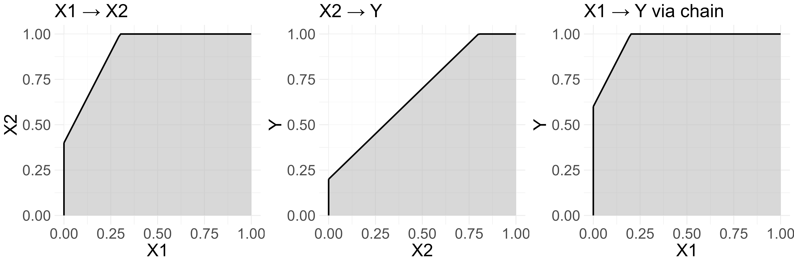
Figure 4.11: Example of a necessity chain. The effect sizes of the links are: \(X_1 \rightarrow X_2\) = 0.09, \(X_2 \rightarrow Y\) = 0.32, \(X_1 \rightarrow Y\) = 0.04.
The second example is an example where chain necessity vanishes. Two ceiling functions are: \[\begin{align*} f_1(X_1) = 0.4 + 0.7 \cdot X_1 \\ f_2(X_2) = 0.7 + 0.8 \cdot X_2 \end{align*}\]
According to Equations (4.58) and (4.57), the intercept and slope for the composite ceiling lines are: \[\begin{align*} a_{chain} = 1.02 \\ b_{chain} = 0.56 \end{align*}\]
According to Equation (4.55), the two effect sizes \(d_1\) and \(d_2\) are: \[\begin{align*} d_1 = \frac{(1 - 0.4)^2}{2 \cdot 0.7} = \frac{0.36}{1.4} \approx 0.26 \\ d_2 = \frac{(1 - 0.7)^2}{2 \cdot 0.8} = \frac{0.09}{1.6} \approx 0.06 \end{align*}\]
Referring to Equation (4.59), the chain effect size is: \[\begin{equation} d_{chain} = 0 \end{equation}\]
The three \(XY\)-plots are shown in Figure 4.12.
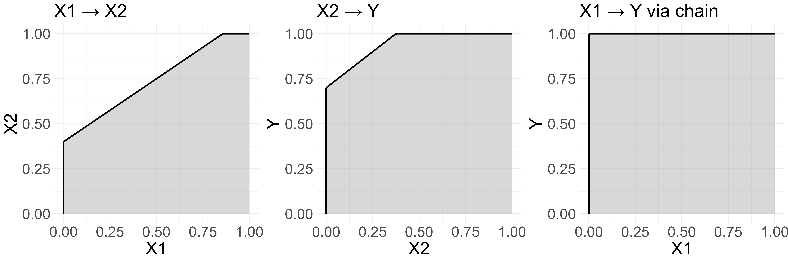
Figure 4.12: Example of a necessity chain. The effect sizes of the links are: \(X_1 \rightarrow X_2\) = 0.26, \(X_2 \rightarrow Y\) = 0.06, \(X_1 \rightarrow Y\) = 0.
The examples illustrate that the chain effect size is smaller than the link effect sizes, and that the chain effect size can be zero while those of the links are not.
5 Statistics
5.1 Summary of this chapter
This chapter discusses several statistical topics relevant to NCA. Although NCA is primarily a (quasi-)deterministic mathematical (geometric) method rather than a statistical method based on probabilities, several statistical approaches and tools are still relevant for NCA. First, the chapter discusses the use of sampling logic in quantitative (large-n) NCA studies (Section 5.2). Second, four specific statistical tools and approaches for NCA are presented. These are a set of permutation tests for testing null hypotheses (Section 5.3), statistical modeling with NCA in particular for Monte Carlo simulation studies (Section 5.4), and the use of these simulations for evaluating the statistical quality of ceiling lines (Section 5.5) and for conducting power analyses (Section 5.6). Finally, the chapter discusses how three common problems in inferential statistics apply to NCA: reverse causality (Section 5.7), measurement error (Section 5.8) and spuriousness (Section 5.9).
5.2 Sampling logic
In large-n quantitative studies, NCA uses a sampling approach that is aligned with common practices in inferential statistics.51
For valid statistical inference, the sample should be representative of the population. Representativeness in NCA is especially important with respect to adequate coverage of cases with high values of \(Y\) and varying levels of \(X\) and combinations of \(X\) with other variables. General information on sampling logic in NCA is provided in Dul (2024b) and sampling for NCA’s statistical testing is discussed in Section 8.3. Usually, random sampling satisfies the requirements.
5.3 Permutation tests
Part of this section is under construction.
5.3.1 General
According to the American Statistical Association (ASA), in statistical null hypothesis testing the \(p\)-value is a measure that helps assess the strength of evidence against a null hypothesis (Wasserstein & Lazar, 2016). In its 2016 statement on \(p\)-values, the ASA discusses what the \(p\)-value is, and what it is not. Essentially, the \(p\)-value indicates the compatibility of the data with the null hypothesis.
NCA tests the compatibility of the observed necessity effect size with the null hypothesis of no relationship. The unique feature of NCA’s null hypothesis tests is that it uses the necessity effect size as the test statistic. Note that no null hypothesis test can test an alternative hypothesis. If the null hypothesis is rejected, this does not imply that a specific alternative hypothesis is correct. A small \(p\)-value only suggests that the observed effect size is unlikely under the null hypothesis.
Scientific conclusions about the hypothesis of interest (the alternative hypothesis) should not be based solely on whether a \(p\)-value is below a threshold level (e.g., 0.05). For this reason, in concluding that a necessity hypothesis is supported,52 NCA not only requires a low \(p\)-value but also the presence of theoretical support and a practically relevant effect size. These are three minimum requirements for concluding about necessity. Together they protect the analyst against making false positive or false negative conclusions (Chapter 6).
NCA does not make an assumption about the type of distribution of the data (e.g., normality). The permutation test is a valid statistical approach for testing the randomness of effect size that does not rely on assumptions about the distribution of the data (like normality in t-tests or ANOVA). The permutation test constructs a null distribution empirically by resampling in a specific way from observed data. First, the test statistic, NCA’s effect size, is computed using the original data. Next, resamples with the same sample size and the same sets of \(X\)- and \(Y\)-values are validly created by a specific type of permutation assuming that the null hypothesis of no relationship (or same distribution) applies. By rearranging the data randomly through permutations, any systematic relationship between \(X\) and \(Y\) is broken. This is done differently for each test (see below). For the resample (permutation), the effect size is recomputed, and this is repeated many times (e.g., 10,000) to obtain a null distribution of values for the effect size. Finally, to compute the \(p\)-value, the observed effect size is compared with the effect sizes obtained under the null distribution. The \(p\)-value is the proportion of permuted effect size under the null that are as extreme or more extreme than the observed effect size.
The validity of NCA’s four permutation tests (Null, Contrast, Independent, Paired) is based on a theorem (Hoeffding, 1952; Kennedy, 1995; Lehmann et al., 2005). The justification of the test rests on the so-called Randomization Hypothesis being true. The Randomization Hypothesis states:
Under the null hypothesis, the distribution of the dataset \(D\) is invariant under the transformation \(p\), that is, for every transformation \(p \in \mathcal{P}\), \(pD\) and \(D\) have the same distribution whenever \(D\) has distribution \(P\) in \(H_0\) (Lehmann et al., 2005, p. 633).
Here, \(D\) denotes the observed dataset (all cases and variables used in the test). The symbol \(p\) denotes one admissible randomization operation from the permutation scheme (e.g., a particular shuffling/relabeling/reassignment as defined by the test), and \(\mathcal{P}\) denotes the set of all admissible operations of that type. The expression \(pD\) denotes the transformed dataset obtained by applying \(p\) to \(D\) (e.g., shuffling \(Y\) across cases while keeping \(X\) fixed, swapping within-case labels such as \(X_1\) and \(X_2\), reassigning cases to groups while preserving group sizes, or swapping time labels within a case). Finally, \(D \sim P \in H_0\) means that the original dataset \(D\) is assumed to be generated from some distribution \(P\) that satisfies the null hypothesis \(H_0\); invariance then states that \(pD\) is distributed the same way as \(D\) under \(H_0\).
5.3.2 Assumptions for NCA’s permutation tests
Beyond representativeness, NCA’s permutation tests additionally rely on the assumption of exchangeability under the null hypothesis. Exchangeability means that, under \(H_0\), the joint distribution of the observed data is invariant under the admissible permutations (i.e., relabelings/reassignments) specified by the test’s permutation scheme. In practical terms, this implies that no case has a special status with respect to the tested relationship once the null hypothesis of no necessity holds. When this condition is met, applying the test-specific permutations (permuting \(X\)-\(Y\) pairings, swapping within-case condition or time labels, or reassigning group labels) generates valid resamples from the same null distribution.
Representativeness and exchangeability are related but distinct requirements. Representativeness concerns the external validity of the sample (whether conclusions can be generalized to the population), whereas exchangeability concerns the internal validity of the permutation test (whether the permutation distribution correctly reflects \(H_0\)). Exchangeability is in general satisfied when the relevant units are independent and identically distributed under \(H_0\), and when the sampling or measurement design does not introduce systematic differences that are not respected by the permutation scheme.
5.3.3 Null test: effect size difference from 0
In the Null test, the observed effect size of a single sample is compared with the null of no relationship. This is the standard NCA null test described in detail elsewhere (Dul, Van der Laan, et al., 2020). The test addresses whether \(X\) affects \(Y\) at all, operationalized as whether effect size \(d\) > 0. The permutation logic is to generate the null distribution by randomly shuffling \(Y\)-values across cases while keeping \(X\)-values fixed. This breaks the pairing of \(X\)- and \(Y\)-values, which is admissible under the null of no relationship.
The transformation set \(\mathcal{P}\) (see the Randomization Hypothesis) contains all possible transformations (permutations) of the data under the null; for \(n\) cases this corresponds to \(n!\) permutations of \(Y\)-values across cases (permutations of case labels applied to \(Y\)). Under \(H_0\), shuffling \(Y\) does not change the joint distribution of the data, so the permuted datasets are valid null replicates. The test statistic is the \(XY\) effect size \(d\). The Null test is one-sided.
5.4 Statistical modeling
As mentioned earlier, NCA is primarily a (quasi-)deterministic mathematical (geometric) method rather than a statistical method based on probabilities. For a given \(XY\)-pair, the maximum value of \(Y\) for a given value of \(X\) can be expressed as the inequality:
\[\begin{equation} \tag{5.1} Y \le f_j(X_j), \qquad X_j \in [x_{j\min}, x_{j\max}], \; Y \in [y_{\min}, y_{\max}] \end{equation}\]
where \(f_j(X_j)\) is the ceiling line in the \(X_jY\)-plane (\(j = 1, \dots, J\)) within the bounding box.
In statistical terms, NCA is a ‘semi-parametric’ approach that only specifies particular features of the distribution (Greene, 2012, p. 482). In NCA, these specified features are the ceiling lines \(f_j(X)\) and the bounding boxes. It is assumed that there are no errors of measurement in variables \(X\) and \(Y\). In NCA the distribution under the ceiling is not specified. This is inherent to NCA’s goal of analyzing necessary but not sufficient conditions: a certain level of \(X\) is required for having a certain level of \(Y\) but it does not automatically produce that level of \(Y\). In other words, the aim of NCA is not to predict the presence of \(Y\) below the ceiling, but to predict the absence of \(Y\) above the ceiling.
For some applications with NCA (e.g., Monte Carlo simulations), it is needed to specify the full data generation process (DGP) and to make assumptions about the distribution of data under the ceiling. In that case the analyst must make such an assumption, and Equation (5.1) must be extended with an error term, representing the distribution below the ceiling line:
\[\begin{equation} \tag{5.2} Y = f_j(X) - \varepsilon_{j} \qquad X_j \in [x_{j\min}, x_{j\max}], \; Y \in [y_{\min}, y_{\max}] \end{equation}\]
where \(f_j(X_j)\) is the ceiling line in the \(X_jY\)-plane (\(j = 1, \dots, J\)) within the bounding box, and \(\varepsilon_j\) is a non-negative random variable representing the distance of an observation below the ceiling.53 When the border line is a ceiling line (i.e., when the upper-left or the upper-right corner of the \(X_jY\)-plot is empty), \(\varepsilon_j\) takes non-negative values only. When the border line is a floor line (i.e., when the lower-left or lower-right corner is empty), \(\varepsilon_j\) takes only non-positive values. Depending on the application, the error term is specified.
Thus, for conducting Monte Carlo simulations with NCA not only the NCA model (Section 4.3) but also the distribution of the data under the ceiling must be specified. This means that the analyst must make choices about:
The bounding box (bounded variables).
The ceiling line.
The distribution of the data.
Examples of bounded variable distributions are the uniform distribution and the truncated normal distribution. The uniform distribution can be considered a distribution with minimum assumptions: only two parameters must be assumed, namely the variable’s upper and lower bound. The truncated normal distribution needs two additional parameters (mean and standard deviation). To obtain a bivariate distribution for \(X\) and \(Y\) while ensuring an empty space above the true ceiling, the selected univariate distributions for \(X\) and \(Y\) (e.g., both uniform, or one uniform and the other truncated normal) within the bounding box \([0,1] \times [0,1]\) are combined by removing points above the true ceiling line. Figure 5.1 shows typical random samples of n = 100 drawn from the two bivariate population distributions using the nca_random function of the NCA software in R. In Figure 5.1-left both \(X\) and \(Y\) have uniform-based distributions and in Figure 5.1-right both distributions are truncated normal-based.54
In most applications of NCA, the ceiling line is estimated from the data, rather than being determined in advance (e.g., theoretically or based on earlier studies). For estimating the ceiling line with empirical data, the techniques mentioned in Section 4.4 could be used.


Figure 5.1: Random sample (n = 100) from a population with a true linear ceiling line with a uniform-based distribution (Left) and a truncated normal-based distribution (Right).
Note that a necessity relationship cannot be simulated with unbounded distributions in both directions, such as the normal distribution. With unbounded variables a necessity effect size cannot exist in the population. The reason is the following. In NCA, a necessity effect is defined by the presence of an empty ceiling zone where no observations occur because they are impossible due to a necessity constraint. This ceiling zone is bounded by the ceiling line and the bounding box. Together, the ceiling line and the bounding box define the feasible area which is the region where observations can occur. If cases are drawn from unbounded distributions, the assumptions needed for a true necessity effect are violated. With an assumption of unbounded distributions, both \(X\) and \(Y\) can take arbitrarily large (or small) values. As sample size increases, the maximum and minimum values increase, and the observed bounding box expands. There is no natural bound to define a fixed box for the ceiling zone. In a population with an unbounded distribution in both directions of \(X\) and \(Y\), there is always a non-zero probability that any combination of \(X,Y\) occurs, even values far above a supposed ceiling line. Therefore, no region of the space is guaranteed to be empty, and no necessity effect can exist in the population. Because in this situation the ceiling zone is never truly empty in the population, the true necessity effect size that is defined as the proportion of the bounding box that is unpopulated is exactly zero. Any non-zero effect size seen in a sample is an artifact. Even when the population has no necessity constraint, a finite sample will always have a maximum observed value of \(X\) and \(Y\), a finite bounding box (scope), and an empirical ceiling line that appears to limit the upper boundary of observations. This may give the illusion of a ceiling zone. NCA may then calculate a non-zero necessity effect size, but this is due to sampling limits not a true structural constraint.
For example, suppose \(X\) and \(Y\) are drawn from a bivariate normal distribution \(X, Y \sim \mathcal{N}(0, 1)\). In a sample of n = 100, the observed range might be approximately [-3, 3] for both \(X\) and \(Y\). A ceiling line (e.g., \(y = 2 + 0.5x\)) may appear to bound the upper edge of the \(XY\)-plot. NCA would calculate a non-zero effect size based on the empty region above this line. However, in the full population, values of \(Y\) above this line still occur with non-zero probability. As \(n \to \infty\), the observed maxima increase and the ceiling zone fills in, causing the effect size to converge to zero.
When NCA calculates an effect size from sample data, it estimates a property of the population. But in the case of unbounded distributions of \(X\) and \(Y\), no necessity property exists to estimate. The observed sample statistic does not reflect a meaningful necessity effect in the population. When unbounded variables are used in Monte Carlo simulations it is inherently assumed that necessity does not exist for the phenomenon that is simulated. An analyst’s choice to use a distribution with unbounded variables therefore implies the analyst’s theoretical expectation that necessity does not exist in the population and that any observed empty space is an artifact. Note that even if a statistically significant empty space would have been detected, NCA does not support necessity if there is no theoretical justification for it (Chapters 6 and 7).
In the remainder of this chapter, two applications of NCA with specification of the full data generation process that include a ceiling line, are presented: the use of Monte Carlo simulation for evaluating the quality of NCA’s ceiling lines, and the use of Monte Carlo simulation for conducting a power analysis for NCA. Another application of Monte Carlo simulations for evaluating the statistical credibility of NCA in terms of True Positive Rate (sensitivity) and True Negative Rate (specificity) is presented in Chapter 6 about the credibility of NCA.
5.5 Quality of ceiling lines
When a necessity relationship is present in the population, an empty area in a sample is a manifestation of the necessity effect in the population. To identify this necessity effect, NCA estimates the ceiling line, the bounding box, and the related effect size.
5.5.1 Statistical quality criteria
When analyzing sample data for statistical inference, the calculated statistic (in NCA the ceiling line’s effect size) is an estimator of the true parameter in the population. An estimator is considered to be a good estimator when for finite (small) samples the estimator is unbiased and efficient, and for infinite (large) samples the estimator is consistent. Unbiasedness indicates that the mean of the estimator for repeated samples approximates the true parameter value; efficiency indicates that the variance of the estimator for repeated samples is small compared to other estimators of the population parameter. Consistency indicates that as sample size increases, the mean of the estimator approaches the true value of the parameter and the variance approaches zero. When the latter applies, the estimator is called asymptotically unbiased, even if the estimator is biased in finite (small) samples. An estimator is asymptotically efficient if the estimate converges relatively fast to the true population value when the sample size increases.
There are two ways to determine the unbiasedness, efficiency and consistency of estimators: analytically and by simulation. In the analytic approach the properties are mathematically derived. This is possible when certain assumptions are made. For example, the OLS regression estimator of a linear relationship in the population is ‘BLUE’ (Best Linear Unbiased Estimator) when the Gauss-Markov assumptions hold (the dependent variable is unbounded, homoskedasticity, error term unrelated to predictors, etc.).
In the simulation approach, a Monte Carlo simulation is conducted by first specifying the true population parameters (variables and distributions). Repeated random samples are drawn from this population, and the estimator is computed for each sample. This yields a sampling distribution of the estimator, which is then compared to the known population parameter.
Both analytic and simulation approaches generally assume an idealized scenario: an infinite population, random sampling, known distributions, and no measurement error. Deviations from these assumptions substantially increase analytic and computational complexity.
Data transformations are not uncommon, for example, to ensure normal distributions or meeting assumptions. However, data transformation may change the nature and content of the theory. In NCA data transformation can change the bounding box, and if not affine, these transformations are likely to change the value of the necessary condition effect size, thereby introducing spurious effect sizes. For example, if \(X\) is necessary for \(Y\), then \(\log(X)\) may not be necessary for \(\log(Y)\) and vice versa (Appendix D). In NCA, the analysis is therefore always conducted with data that represent the theoretical meaning of the concepts in the necessity hypothesis.
5.5.2 Simulation results for NCA’s effect size
For NCA, currently no analytic approach to determine bias, efficiency, and consistency exists. However, NCA can rely on simulations to evaluate the quality of its estimates. In this section, Monte Carlo simulation is used for estimating the true effect size in a population using four types of ceiling line estimation techniques. These ceiling lines are the stepwise linear ceiling line CE-FDH, and three linear ceiling lines CR-FDH, C-LP and QR. The QR-ceiling line is not recommended (Section 4.4), but is added for comparison. The theoretical scope (unit box) is selected to make the results comparable.
In Monte Carlo simulation, the full DGP needs to be specified. It is assumed that a high-high direction of necessity exists in the population (high \(X\) is necessary for high \(Y\)), with a true linear ceiling line \(Y = 0.4 + X\). The bounding box is assumed to be the unit box. The corresponding true effect size is 0.18. Next to the specification of the true ceiling line and bounding box, a Monte Carlo simulation also requires a specification of the true distribution of the data under the ceiling line. Three distributions are considered: uniform distribution, symmetric truncated normal distribution with equal means of \(X\) and \(Y\) (0.5), and left-skewed truncated normal distribution with high mean for \(X\) (0.75) and low mean for \(Y\) (0.25). The standard deviation of all truncated normal distributions is 0.2.
The simulation draws samples from these predefined population characteristics. The seven sample sizes that are selected vary between 20 and 5000. One hundred samples are drawn per sample size. This is repeated for each form of the ceiling line.55 Figure 5.2 shows a typical sample selected from each distribution, also showing the four ceiling lines that were tested.


Figure 5.2: Random samples with uniform, truncated normal and skewed truncated normal joint distribution with four ceiling lines estimation techniques. True ceiling line = \(Y = 0.4 + X\). True effect size is 0.18.


Figure 5.3: Monte Carlo simulation results for the effect size of four ceiling line estimation techniques. True ceiling line = \(Y = 0.4 + X\). True effect size is 0.18. Uniform distribution.


Figure 5.4: Monte Carlo simulation results for the effect size of four ceiling line estimation techniques. True ceiling line = \(Y = 0.4 + X\). True effect size is 0.18. Truncated normal distribution x-mean = 0.5, y-mean = 0.5.


Figure 5.5: Monte Carlo simulation results for the effect size of four ceiling line estimation techniques. True ceiling line = \(Y = 0.4 + X\). True effect size is 0.18. Skewed truncated normal distribution x-mean = 0.75, y-mean = 0.25.
Figures 5.3, 5.4, and 5.5 show the results for the uniform, truncated normal and skewed distributions, respectively. For small samples, the effect sizes the results are upward biased (the true effect size is smaller) for all estimation techniques. The bias of the estimated effect sizes can be large with the truncated normal and skewed distributions, caused by the limited number of points near the ceiling. These are the only points that are informative for the ceiling line in the population.
When sample size increases, the bias and the variance decrease for all estimation techniques. With increasing sample size, the effect size approaches the true effect size for three ceiling techniques: CE-FDH, CR-FDH and C-LP. This means that these techniques are asymptotically unbiased and that the three estimators are consistent. Of these ceiling lines, C-LP seems more efficient, reaching the true ceiling line more quickly and with the least variation. With increasing sample size, the QR estimation technique does not approach the true effect size and remains asymptotically biased. Possible reasons are discussed in Section 4.4.
These results only apply to the investigated situations with a true ceiling line that is linear, and data that have no measurement error. Therefore, in this situation the C-LP line may be a preferred technique. Such ‘ideal’ circumstances may apply in simulation studies, but seldom apply in reality. When the true ceiling line is linear but cases have measurement error, the CR-FDH line may perform better because measurement error usually reduces the effect size (ceiling line moves upwards). When the true ceiling line is not linear, CE-FDH may perform better because this line can better follow the non-linearity of the border (Figure 8.1). Further simulations need to be done to clarify the different statistical properties of the ceiling lines under different circumstances. In these simulations the effects of different population parameters (effect size, ceiling slope, ceiling intercept, non-linearity of the ceiling, distribution under the ceiling), and of measurement error (error-in-variable models) on the quality of the estimations could be studied.
5.6 Power analysis
“The power of a test to detect a correct alternative hypothesis is the pre-study probability that the test will reject the test hypothesis (the probability that \(p\) will not exceed a pre-specified cut-off such as 0.05)” (Greenland et al., 2016, p. 345). The higher the power of the test, the more sensitive the test is to reject the null hypothesis (and to accept the assumed alternative necessity hypothesis) if necessity exists in the population. Knowledge about the power of NCA’s statistical test is useful for planning an NCA study. It can help to establish the minimum required sample size for being able to detect, with a high probability (e.g., 0.8), an existing necessity effect size that is considered relevant (e.g., for the Null test effect size = 0.10). Note that a post-hoc power calculation as part of the data analysis of a specific study does not make sense (Christogiannis et al., 2022; Lenth, 2001; e.g., Zhang et al., 2019). In a specific study, power does not add new information to the \(p\)-value. Because power is a pre-study probability, a study with low power (e.g., with a small sample size) can still produce a small \(p\)-value and conclude that a necessary condition exists, although the probability of identifying this necessity effect is less than with a high-powered study (e.g., with a large sample size).
Statistical power increases when effect size and sample size increase. For a given expected necessity effect size in the population, the probability of not rejecting the null hypothesis when necessity is true can therefore be reduced by increasing the sample size.
Power of NCA’s statistical test can be evaluated by simulation.56 The simulation presented evaluates the power of NCA’s Null test. The simulation includes five population effect sizes ranging from 0.10 (small) to 0.50 (large) (Figure 5.6). The population effect size is the result of a linear population ceiling line with slope = 1 and an intercept that corresponds to the given population effect size.

Figure 5.6: Five ceiling lines (slope = 1) with corresponding effect sizes of 0.10, 0.20, 0.30, 0.40, and 0.50.
For the simulations, bivariate population distributions are obtained with the procedure as described in Section 5.4. A large number of samples (500) of a given sample size are randomly drawn from the bivariate population distribution. This is done for 2 × 5 × 11 = 100 situations: two bivariate distributions (uniform-based or truncated normal-based), five effect sizes (0.10, 0.20, 0.30, 0.40, 0.50), and 11 sample sizes (5, 10, 20, 30, 40, 50, 100, 200, 500, 1000, 5000). In each situation, NCA’s \(p\)-value is estimated for all 500 samples. The power is calculated as the proportion of samples with estimated \(p\)-value less than or equal to the selected threshold level of 0.05. This means that if, for example, 400 out of 500 samples have \(p < 0.05\), the power of the test in that situation is 0.8. A power value of 0.8 is a commonly used benchmark for a high-powered study.57
The relationship between sample size and power for different population necessity effect sizes is shown in Figure 5.7 for the uniform distribution and in Figure 5.8 for the truncated normal distribution. The figures show that when the effect size to be detected is large, the power increases rapidly with increasing sample size. A large necessity effect of about 0.50 can almost always be detected (power ~ 1.0) with a sample size of about 30. However, to obtain a high power of 0.8 for a small effect size of about 0.1, the sample size needs to be doubled (to about 60) with a uniform distribution, and to more than 10 times larger (to about 300) with a truncated normal distribution.
In general, the minimum required sample size to detect a necessary condition is larger for a truncated normal distribution than for a uniform distribution. The reason is that the truncated normal distribution has a lower density of cases in the lower-left and upper-right corners of the \(XY\)-plot, such that the empty space in the upper-left corner is less frequently challenged during the permutation test (Figure 5.1). Additional simulations indicate that sample sizes must be larger when the density of observations near the ceiling is smaller, in particular when there are few cases in the upper-right or lower-right corners under the ceiling. Also, larger samples are usually needed when the ceiling line is more horizontal and to a lesser extent when it is more vertical. On the other hand, when sample sizes are large even very small effect sizes (e.g., 0.05) can be detected. Note that a high-powered study only increases the probability of detecting a necessity effect when it exists. Low-powered studies (e.g., with a small sample size) can still detect necessity (\(p < 0.05\)), but have a higher risk of false negative results: concluding that necessity is not supported, when it actually does exist. Note that in small-n studies a dichotomous necessary condition where \(X\) and \(Y\) can have only two values, can be easily falsified when necessity does not exist in the population using purposive case selection (Section 8.3.2).
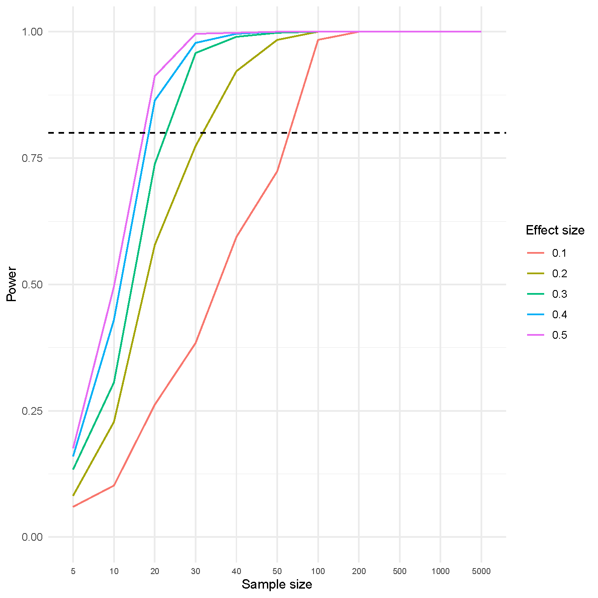
Figure 5.7: Power as a function of sample size and effect size for a uniform-based distribution. Curves for effect size: from right the left = from 0.1 to 0.5 effect size.
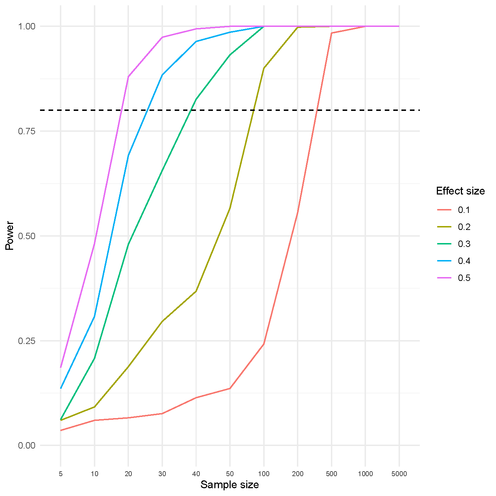
Figure 5.8: Power as a function of sample size and effect size for a truncated normal-based distribution. Curves for effect size: from right the left = from 0.1 to 0.5 effect size.
5.7 Reverse causality
Reverse causality occurs when the direction of cause and effect between two variables is the opposite of what is assumed or hypothesized. It may invalidate causal interpretations in observational studies. Reverse causality may also be a concern in NCA. When a hypothesis is formulated in NCA, it is expected that \(X\) causes \(Y\) and not that \(Y\) causes \(X\): first \(X\), then \(Y\) and not first \(Y\), then \(X\). NCA requires having a theoretical expectation (formal necessity hypothesis, see Chapter 7) that defines the causal direction. For example, if it is hypothesized that the presence or high level of \(X\) is necessary for the presence or high level of \(Y\), with \(X\) on the horizontal axis and \(Y\) on the vertical axis, the upper-left corner of the \(XY\)-plot is the expected empty corner (Section 3.5 and Chapter 7).
If the temporal order is not guaranteed by the study design (Section 8.2.1), and if it cannot be theoretically excluded, an observed empty area in the upper-left corner could not only represent high-high \(X \rightarrow Y\)-necessity (presence of high level of \(X\) is necessary for presence or high level of \(Y\)), but could also represent low-low \(Y \rightarrow X\)-necessity (absence or low level of \(Y\) is necessary for absence or low level of \(X\)), thus implying that \(Y\) is a necessary cause of \(X\) (low-low-necessity). This is illustrated in Figure 5.9 where the hypothesized causal condition is shown on the left and the alternative causal direction on the right. In Figure 5.9-right the \(XY\)-plot is rotated 180 degrees in the vertical and horizontal directions, such that the empty corner appears in the lower-right corner. \(Y\) is now on the horizontal axis and \(X\) on the vertical axis. This visualizes that a high level of condition \(Y\) ensures (is sufficient for) a certain minimum level of outcome \(X\), and the ‘ceiling line’ becomes a ‘floor line’. If such an effect can be theoretically justified (namely that a single cause ensures a certain minimum level of the outcome), the observed empty area in the upper-left corner (Figure 5.9-left) has an alternative causal interpretation: \(Y\) is a low-low necessary cause of \(X\): absence of \(Y\) is necessary for absence of \(X\). Testing ‘forward’ necessity causality (\(X \rightarrow Y\)) in the true presence of reverse causality (\(Y \rightarrow X\)) may lead to false positive conclusions. However, this risk may be absent or low when reverse necessity causality is unrealistic (e.g., human life does not cause oxygen) or when, in multicausal phenomena, a single variable is unlikely to produce the outcome at a certain level. When reverse causality is not excluded by study design or theoretically, potential reverse causality should be considered.58
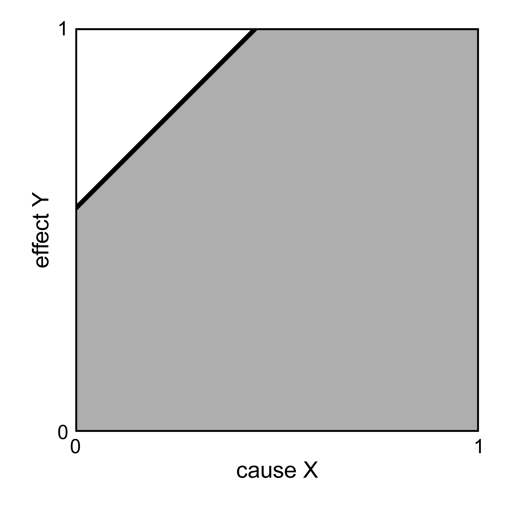
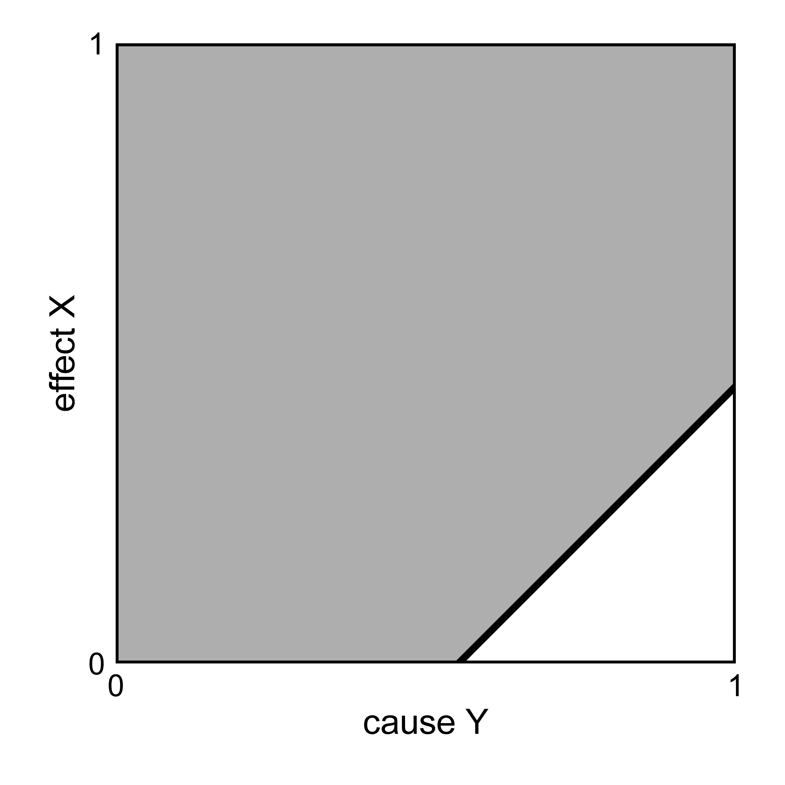
Figure 5.9: Reverse causality in NCA. Left: Expected empty area: X causes Y. Right: Possibility of reverse causality: Y causes X.
5.8 Measurement error
For valid estimations, many methods assume no measurement error in the data; NCA is no different. Measurement error may occur in practice and this affects the findings. In NCA, the effect of measurement error depends on the location of the affected cases. Cases with measurement error that are near the ceiling zone can have a strong influence on the effect size. A case with measurement error may be in the otherwise empty area. This would result in an underestimation of the effect size. Measurement error in cases that are far below the ceiling line generally do not influence the effect size (depending on the size of the measurement error). When the analysis is done with the empirical rather than theoretical scope (Section 4.3), cases with measurement error that are near the borders of the bounding box can affect the size of the box and thus the necessity effect size. Cases with measurement error that can have a large influence on the effect size, are treated in NCA as potential ceiling or scope outliers that can be analyzed separately (Section 9.8).
5.9 Spuriousness
An observed relationship is spurious when an alternative causal explanation is clearly more credible, either because it is theoretically more plausible or it fits the empirical evidence better. In NCA, an apparent effect size may be spurious for several reasons.
5.9.1 Lack of theoretical support
The first important reason is the lack of theoretical support: the absence of a convincing necessity hypothesis. During the development of a formal hypothesis, thought experiments are used to make plausible that without \(X\) it is not possible to obtain \(Y\). (Chapter 7). Empty spaces in an \(XY\)-plot can arise from many reasons other than necessity. The importance of a strong theoretical justification is illustrated by the fact that NCA rejects necessity when such a hypothesis is not available (Section 6.2).
This is also important because NCA lacks a diagnostic signal in the data indicating that a relationship could be spurious. In particular, the observed effect size is insensitive to including or excluding third variables in the analysis.59 This contrasts with regression analysis, where adding a third variable, such as a confounder that causes both \(X\) and \(Y\), as a control variable will often change the regression coefficient of the hypothesized \(XY\) relationship (omitted variable bias when the third variable is excluded). This signals that the original \(XY\)-relationship may be spurious.60
In the context of NCA, a third variable \(Z\) that is considered a sufficiency cause for \(X\) (produces \(X\)) and a necessity cause for \(Y\), may be a better causal explanation for the observed empty space in the \(XY\)-relationship than the necessity of \(X\) for \(Y\). If so, the original hypothesis that the \(XY\)-relationship may be considered spurious. Considering a third variable \(Z\) (provided that theoretical support is available for it) as being sufficient for \(X\) and necessary for \(Y\) allows conducting a multiple NCA in which both \(X\) and \(Z\) are evaluated as potentially necessary conditions. However, including the third variable in the analysis does not change the effect size of the \(XY\) necessity relationship; instead it can add an additional explanation of what enables \(Y\).
For example, for driving a non-automatic electric car, having the handle in the Drive position (\(X\)) is necessary for the car to drive (\(Y\)). Furthermore, a driver (\(Z\)) is sufficient for positioning the handle in the Drive position (but not necessary as the handle may already be in the Drive position or another person may place it there). A driver is also necessary for the car to drive (but not sufficient, because \(X\) and many other conditions must also be satisfied). NCA would identify both \(X\) and \(Z\) as necessary conditions if the necessity pattern is observed and theoretical support is available. The estimated effect size for the \(XY\) relationship is not affected by the presence or absence of \(Z\) in the analysis. Moreover, \(Z\) does not make the \(XY\) relationship spurious.
Only when theoretical support for the \(XY\)-relationship is lacking or weak can it be helpful to consider an alternative necessary condition \(Z\) that is also sufficient for \(X\), to assess theoretically whether the observed \(XY\) effect size may be attributable to that causal structure. For example, based on an example presented by Mahoney (2007), suppose the situation that an analyst proposes a weak hypothesis that having no beard (\(X\)) is necessary for pregnancy (\(Y\)), and observes a statistically significant necessity effect size that meets NCA’s criteria for non-rejection. A more credible alternative explanation is that oestrogen (\(Z\)) is necessary for pregnancy, and sufficient for having no beard. This theoretical reasoning reveals that the original hypothesis is not defensible. Thus, possible spuriousness in NCA lies not in the data pattern but in the theory attached to it. Claiming that a theoretically justified \(XY\) necessity relationship is spurious due to a third variable \(Z\) that is sufficient for \(X\) and necessary for \(Y\), amounts to proposing a competing theoretically justified and empirically supported explanation in which \(Z\) is a sufficient cause for \(X\) and a necessary cause for \(Y\) and that this alternative explanation is more credible.
In general, it is not easy to find theoretically justified sufficiency relationships involving a single sufficiency cause, except when variables are conceptually very similar. Potential sufficiency relationships of \(ZX\) can be analyzed with NCA by analyzing the lower-right corner of the \(ZX\)-plot (or the lower-right corner of the \(XZ\)-plot when \(X\) is considered as a sufficient cause for \(Z\) and a necessary cause for \(Y\)).
5.9.2 Low-quality data
The second important reason is inadequate data. For estimating necessity from sample data, it is essential that the sample represents the population of interest. This target population must be part of the theoretical domain, which is the universe of cases where the theory (formal necessity hypothesis) is expected to hold (also called boundary conditions, scope conditions, range of applicability, contextual constraints, etc.).
When the sample is drawn from a population that is (partly) outside the theoretical domain, the sample is not representative and existing necessity may not be identified; in that case the observed “non-necessity” relationship is spurious (a false negative conclusion). The same holds for samples that are too small to identify an existing necessity relationship in the population (lack of power, see Section 5.6). Similarly, with a sample from outside the theoretical domain, a non-existing necessity relationship may be observed but is spurious (a false positive conclusion).
An additional requirement is that the sample covers all possible combinations of variables, such that cases near the expected empty corner are included. Because population characteristics are normally unknown, adequate coverage can be achieved through random sampling (also needed to meet the requirements for NCA’s statistical test) to obtain a large-n sample, or through replication studies with new samples from the same population. If these requirements are not met, the identified empty space (or non-empty space) may be spurious (Section 5.2).
Unreliable or invalid measurement of \(X\) or \(Y\) (Section 5.8) may also result in spuriousness. The same applies to inappropriate data transformations (e.g., nonlinear transformations) that distort the data pattern (Section 8.5.2).
With a well-specified necessity theory (Chapter 7) and adequate data (Chapter 8), the risk of spurious necessity relationships can be substantially reduced, though never fully eliminated.
6 Credibility
6.1 Summary of this chapter
This chapter evaluates the credibility of NCA to identify necessity from data. In the context of NCA, credibility refers to the trustworthiness of conclusions about necessity from data61. The chapter starts by discussing the core criteria to draw conclusions about necessity: there must be a theoretically justified necessity hypothesis, the effect size must be practically relevant (high \(d\)-value), and the observed empty space must be unlikely to be compatible with no relationship (low \(p\)-value) (Section 6.2). A positive conclusion that necessity is supported requires that all three of these criteria are met. A negative conclusion that necessity does not exist is drawn if any of the three is not satisfied. Next, the chapter evaluates the statistical credibility of NCA using Monte Carlo simulations to analyze how well NCA detects necessity when it is present in the population (True Positive Rate-TPR, sensitivity) and how well NCA avoids detecting necessity when it is absent in the population (True Negative Rate-TNR, specificity) (Section 6.3). Subsequently, the empirical credibility of a specific NCA study is evaluated focusing on robustness checks (the extent to which the findings are not dependent on the analyst’s choices) and model fit metrics (the extent to which the necessity model matches the data) (Section 6.4). Finally, recommendations are given on how to evaluate the credibility of a specific study (Section 6.5).
6.2 Core criteria for necessity
NCA draws a positive conclusion about necessity if three requirements are jointly satisfied: there is theoretical support for necessity (a formal necessity hypothesis), there is a reasonably large effect size (e.g., \(d \geq 0.10\)), and there is a reasonably small \(p\)-value (e.g., \(p < 0.05\)). NCA draws a negative conclusion about necessity if one or more of these requirements are not met.
To meet the requirement of theoretical support, the analyst formulates and theoretically justifies that \(X\) and \(Y\) are causally related by necessity as outlined in Chapter 7. One implication is that the analyst expects emptiness of a specific corner in the \(XY\)-plot. For example, if it is expected that a high level of \(X\) is necessary for a high level of \(Y\), no high values of \(Y\) are expected when \(X\) is low. Therefore, the upper-left corner of the \(XY\)-plot is expected to be empty. If no theoretical support for necessity is provided, NCA draws a negative conclusion about necessity, even if effect size and \(p\)-value satisfy the criteria.
To meet the requirement of a minimum effect size, NCA estimates the size of the empty space in the expected empty corner of the sample’s \(XY\)-plot (\(d\)-value) and judges whether this size is relevant by comparing it with the selected threshold \(d\)-value (e.g., \(d \geq 0.10\)). If this requirement for a relevant \(d\)-value is not met, NCA draws a negative conclusion about necessity even if there is theoretical support and the \(p\)-value is below the threshold \(p\)-value.
To meet the requirement of a maximum \(p\)-value, NCA’s statistical test is conducted to estimate the \(p\)-value of the estimated necessity effect size, and a comparison is made with the selected threshold \(p\)-value (e.g., \(\alpha = 0.05\)). One unique feature of this test is that it uses the size of the expected empty space as the test statistic, thus testing the randomness of this specific emptiness when \(X\) and \(Y\) are unrelated, rather than being a general randomness test (Section 5.3). If the requirement for a small \(p\)-value (e.g., \(p < 0.05\)) is not met, NCA draws a negative conclusion about necessity.62
Only if all requirements are met, NCA draws a positive conclusion about necessity in the population (within the common limitations of a study design, and acknowledging the need for replications). If one of them is not met, NCA draws a negative conclusion about necessity in the population. This set of requirements for drawing a conclusion about necessity in the population shows that NCA is more than just a statistical model and that evaluating necessity with just the \(p\)-values is not enough. NCA’s statistical test and \(p\)-value are only one part of the process of making a conclusion about necessity. This fits the commonly accepted view that conclusions about empirically observed effects should not be solely based on the \(p\)-value, but also on effect size and theoretical argumentation (see for instance, Cohen, 1994; Cumming, 2013; Greenland & Robins, 1986; Rothman & Greenland, 2005; Wasserstein & Lazar, 2016). Although isolated statistical null hypothesis tests are usually evaluated with concepts like type I error, type II error and power, these concepts are not enough for evaluating the credibility of the NCA approach as a whole, where other non-statistical criteria are also relevant (theoretical support, effect size).
6.3 Statistical credibility
To evaluate the credibility of a binary classification like NCA’s positive or negative conclusion about necessity in the population, the True Positive Rate (TPR or sensitivity) and True Negative Rate (TNR or specificity) can be used. Applied to NCA, TPR is the ability of the approach to correctly identify that necessity exists in a population, and TNR is the ability of the approach to correctly identify that necessity is absent in a population. ‘Rate’ refers to the proportion of randomly drawn samples from that population that were correctly evaluated regarding the presence or absence of necessity.
For testing the credibility of NCA with these evaluation criteria, a Monte Carlo simulation is performed. The simulation evaluates TPR and TNR based on the analysis of samples from two populations: one with the necessary condition (for evaluating TPR), and one without it (for evaluating TNR), and using the three criteria to identify necessity or not. The simulation assumes that the requirement of ‘theoretical support’ is satisfied. This implies that it is clear which corner of the sample \(XY\)-plot is the expected empty corner and must be analyzed. Here the theoretical expectation is that a high value of \(X\) is necessary for a high value of \(Y\), resulting in the upper-left corner as the expected empty corner (corner 1; Section 3.6). As a reminder, the numbering of the corners is shown in Figure 6.1.
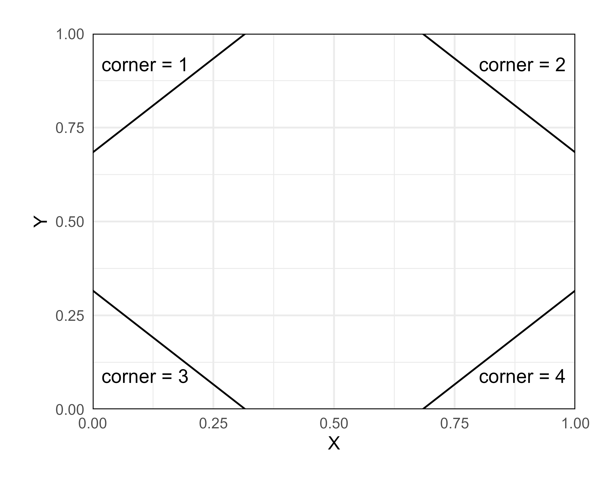
Figure 6.1: Numbering of corners in an \(XY\)-plot.
For testing the TPR, the simulation must ensure that necessity is present in the upper-left corner of the population \(XY\)-plot, so that this corner is empty. Since for testing TPR all samples are drawn from a population where necessity is always present (rather than being present with a certain probability), the False Negative Rate (FNR) equals 1 - TPR. Similarly, for testing TNR, the simulation must ensure that necessity is absent in the upper-left corner in the population \(XY\)-plot, thus that this corner is not empty. Since for testing TNR all samples are drawn from a population where necessity is not present, the False Positive Rate (FPR) equals 1 - TNR. Together with the True Positive Rate (TPR), these two measures reflect the model’s ability to correctly classify both presence and absence of necessity.
For both tests (TPR and TNR) four scenarios are simulated. In scenario A, \(X\) and \(Y\) are only related by necessity in the expected empty corner (for testing TPR), or are not related by necessity in the expected empty corner (for testing TNR). In this scenario no other relationships exist between \(X\) and \(Y\). In the other scenarios (scenarios B, C, and D) it is assumed that other relationships exist as well. Although an infinite number of types of relationships (bivariate distributions) could exist, here the focus is on other necessity relationships than the one in the upper-left corner. The other relationships produce emptiness in other corners than the corner of interest. However, none of the other relationships are hypothesized and are not tested. The only goal of additional empty corners in the simulation is to challenge NCA’s credibility regarding necessity related to the hypothesized empty corner, when other relationships are also present. The four simulation scenarios about necessity and other relationships in the population are therefore:
A. Necessity (TPR) or non-necessity (TNR) in corner 1. No other relationships.
B. Necessity (TPR) or non-necessity (TNR) in corner 1. Other relationship in corner 2.
C. Necessity (TPR) or non-necessity (TNR) in corner 1. Other relationship in corner 3.
D. Necessity (TPR) or non-necessity (TNR) in corner 1. Other relationship in corner 4.
In all scenarios \(X\) and \(Y\) are related (TPR) or unrelated (TNR) by necessity in the upper-left corner. In scenario A there is no other relationship. In the other scenarios \(X\) and \(Y\) are (also) otherwise related because one of the other corners than the expected empty corner of interest is empty63.
The technical details of the Monte Carlo simulation are as follows. Since NCA requires bounded variables, the bounding box (4.3.1) in the population where cases could exist is defined by the unit box in which \(X\) and \(Y\)-values can range from 0 to 1 (scope = 1). The true feasible area of the population (within the bounding box) is the entire unit box when \(X\) and \(Y\) are unrelated and is a part of the unit box when \(X\) and \(Y\) have the necessity relationship. The empty corner is assumed to be a triangle consisting of the area between a linear ceiling line (corners 1 and 2) or a linear floor line (corners 3 and 4) and the borders of the unit box. The slopes of the ceiling and floor lines are 1 for corners 1 and 4 and -1 for corners 2 and 3. The sizes of the empty corner range from 0 to a maximum of 0.50. The combination of slope and empty area determines the intercepts of the lines as follows:
corner 1: \(a_1 = 1 - \sqrt{2e_1 b_1}\).
corner 2: \(a_2 = 1 + |b_2| - \sqrt{2e_2 |b_2|}\).
corner 3: \(a_3 = \sqrt{2e_3 |b_3|}\).
corner 4: \(a_4 = 0 - (b_4 - \sqrt{2e_4 b_4})\).
where \(a\) is the intercept and \(b\) is the slope of the line, and \(e\) is the size of the empty space. The subscripts indicate the corresponding corner. For the expected empty corner, the size of the empty space equals the necessity effect size (\(d\)) since the scope equals 1. When two opposite corners are empty, the two lines are parallel and when two adjacent corners are empty, the two lines intersect. In the latter situation it is possible that for larger necessity effect sizes and empty space sizes the two lines intersect within the bounding box (Figure 6.2). This reduces the intended necessity effect size, empty space size and scope. In the simulation this situation is avoided to keep the results comparable. Consequently, higher sizes of adjacent empty corners are not evaluated.
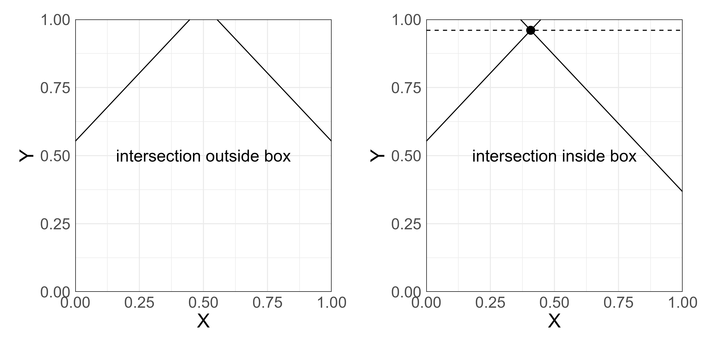
Figure 6.2: Intersection of two adjacent empty corners. Left: The lines intersect outside the bounding box. Necessity effect size of corner 1 is 0.1. Size of empty corner 2 is 0.1. Scope = 1. Right: The lines intersect inside the bounding box. Intended necessity effect size is 0.1. Reduced necessity effect size is < 0.1. Intended size of empty corner 2 is 0.2. Reduced size of empty corner 2 is < 0.2. Reduced scope < 1.
It is assumed that within the non-empty area of the bounding box the cases have a uniform distribution (Section 5.4). The nca_random function of the NCA software in R is used to create such a distribution in the presence of a ceiling line. From this defined population, 1000 random samples are drawn. Subsequently, for each sample the size of the expected empty corner (necessity effect size) is estimated with the CE-FDH ceiling line (with empirical scope). The \(p\)-value for each sample is estimated using 1000 random samples from the permutation distribution. The threshold \(p\)-value is set at 0.05. This means that necessity is considered not supported (negative conclusion) if the \(p\)-value is 0.05 or larger. If the \(p\)-value is below 0.05, necessity is considered supported (positive conclusion) only if the other two criteria (theoretical support and effect size) are also met. The theoretical support is assumed to be met. For the effect size the threshold \(d\)-value is 0.10. If applicable and possible, the tested sizes of the other empty corner are 0.05, 0.10, 0.20, 0.30, and 0.50.
6.3.1 True Positive Rate (TPR, sensitivity)
Figure 6.3 shows the results of the evaluation of TPR for a true necessity effect size of \(d\) = 0.10 in corner 1, the expected empty corner (called necessity corner in the figure), and with different sizes of other empty corner 2 (Figure 6.3-top-right), other empty corner 3 (Figure 6.3-bottom-left) and other empty corner 4 (Figure 6.3-bottom-right).
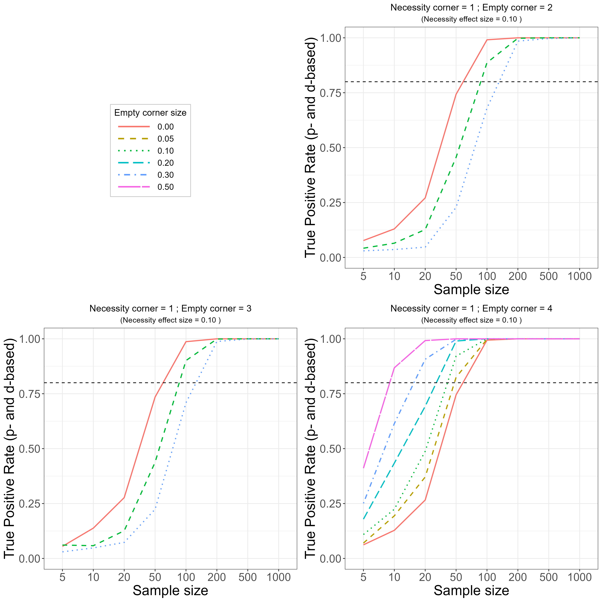
Figure 6.3: True Positive Rate (TPR, sensitivity) of the NCA approach for identifying necessity in the population. True necessity effect size in corner 1 = 0.1. Slopes of ceiling/floor lines are 1 (corners 1 and 4) or -1 (corners 2 and 3). Top-Right: other empty corner = 2. Bottom-Left: other empty corner = 3. Bottom-Right: other empty corner = 4.
In all three graphs, the necessity effect size (the size of the expected empty corner 1) is 0.10, and the size of another empty corner ranges from 0 to 0.50, where possible. A TPR value of 0.80 is added as a benchmark, meaning that for 80 percent of the samples a correct decision is made, namely concluding that necessity is present in the population. This selected value is inspired by the commonly used target of 0.80 for statistical power. NCA draws a positive conclusion about necessity if \(p < 0.05\) and \(d\geq 0.1\) (assuming theoretical support).
Scenario A applies when the other corners are not empty. The corresponding TPR curve is the same in each TPR graph (empty corner size = 0). This curve is the upper curve in the Top-Right and Bottom-Left graphs, and the lower curve in the Bottom-Right graph. In scenario A, TPR increases with sample size and the benchmark value of 0.80 (80% correct decisions when necessity is present in the population) is reached for a sample size of about 60 (note that horizontal axis is piecewise-linear: only linear between two adjacent ticks but not across ticks).
Table 6.1 shows for scenario A the fraction of samples where \(p < 0.05\) (\(p\)-based TPR) and the fraction of samples where \(d \geq 0.1\) (\(d\)-based TPR). Considering both criteria, TPR is the minimum of \(p\)-based TPR and \(d\)-based TPR. It turns out that for scenario A, the \(p\)-value criterion (\(p < 0.05\)) is critical for the TPR conclusion. Consequently, TPR corresponds to the power of NCA’s statistical test in this simulation scenario.
| n | p-based | d-based | TPR |
|---|---|---|---|
| 5 | 0.077 | 0.801 | 0.077 |
| 10 | 0.130 | 0.890 | 0.130 |
| 20 | 0.271 | 0.971 | 0.271 |
| 50 | 0.743 | 0.995 | 0.743 |
| 100 | 0.991 | 0.999 | 0.991 |
| 200 | 1.000 | 1.000 | 1.000 |
| 500 | 1.000 | 1.000 | 1.000 |
| 1000 | 1.000 | 1.000 | 1.000 |
Scenario B applies when corner 2 (upper-right corner) is also empty (empty corner size = 0.05 or 0.10, see Figure 6.3-top-right). It turns out that the TPR curve shifts to the right with increasing emptiness of corner 2, meaning that for a given sample size the TPR credibility decreases when the emptiness of corner 2 increases. Consequently, higher sample sizes are required to be able to identify necessity in corner 1 if this exists in the population. When the emptiness of corner 2 increases, relatively fewer cases are available to statistically test the emptiness of corner 1. NCA’s statistical test uses a permutation procedure (Section 5.3) that creates new cases by allocating \(Y\)-values of observed cases randomly to \(X\)-values of other observed cases, and random samples are drawn from the obtained permutation distribution (= null distribution). High \(Y\)-values of cases allocated to low \(X\)-values of other cases can challenge the emptiness of corner 1. If relatively fewer high \(Y\)-values are available, the sample size must be larger to have enough high \(Y\)-values for the test. For achieving a TPR of 0.80, the required sample size is about 75 if the size of the empty corner 2 is 0.05 and about 140 if this size is 0.10.
Table 6.2 shows that also in scenario B the \(p\)-value criterion (\(p < 0.05\)) and not the \(d\)-value criterion (\(d \geq 0.10\)) is critical for the TPR conclusion (with one exception for n = 500 where the \(d\)-based TPR is smaller than the \(p\)-based TPR).
| n | p-based | d-based | TPR |
|---|---|---|---|
| 5 | 0.030 | 0.715 | 0.030 |
| 10 | 0.036 | 0.815 | 0.036 |
| 20 | 0.047 | 0.895 | 0.047 |
| 50 | 0.228 | 0.954 | 0.228 |
| 100 | 0.680 | 0.980 | 0.680 |
| 200 | 0.985 | 0.993 | 0.985 |
| 500 | 1.000 | 0.997 | 0.997 |
| 1000 | 1.000 | 1.000 | 1.000 |
Scenario C (Figure 6.3-bottom-left) applies when corner 3 (lower-left corner) is also empty (empty corner size = 0.05 or 0.10). The graph is very similar to the one of scenario B, with some minor differences at lower values of sample size. Also in this scenario higher sample sizes are required to be able to identify necessity in corner 1 when corner 3 is more empty. For achieving a TPR of 0.80, the required sample size is also about 75 if the size of the empty corner 3 is 0.05 and about 140 if this size is 0.1.
Table 6.3 shows that also in scenario C the \(p\)-value criterion (\(p < 0.05\)) is dominant.
| n | p-based | d-based | TPR |
|---|---|---|---|
| 5 | 0.030 | 0.725 | 0.030 |
| 10 | 0.048 | 0.815 | 0.048 |
| 20 | 0.073 | 0.889 | 0.073 |
| 50 | 0.224 | 0.946 | 0.224 |
| 100 | 0.709 | 0.978 | 0.709 |
| 200 | 0.988 | 0.994 | 0.988 |
| 500 | 1.000 | 0.999 | 0.999 |
| 1000 | 1.000 | 1.000 | 1.000 |
However, in scenario D the results are very different (Figure 6.3-bottom-right). In this scenario, corner 4 (lower-right corner) is also empty (empty corner size ranges from 0.05 to 0.50). Now the TPR curve shifts to the left with increasing emptiness of corner 4, meaning that for a given sample size the TPR credibility of the NCA approach increases. This means that smaller sample sizes can be used to identify necessity in corner 1. When corner 4 is empty (and corners 2 and 3 are not empty) relatively more cases are available to test the emptiness of corner 1 such that the sample size can be smaller for the permutation test. For achieving a TPR of 0.80 the required sample size can be less than 50 when the corner size is 0.05 and even less than 10 when the corner 4 size is 0.5. However, the possibility of using relatively small sample sizes for identifying necessity has a price in terms of TNR (see below).
Table 6.4 shows that also in scenario D the \(p\)-value criterion (\(p < 0.05\)) is dominant.
| n | p-based | d-based | TPR |
|---|---|---|---|
| 5 | 0.109 | 0.843 | 0.109 |
| 10 | 0.224 | 0.936 | 0.224 |
| 20 | 0.488 | 0.979 | 0.488 |
| 50 | 0.921 | 0.995 | 0.921 |
| 100 | 1.000 | 1.000 | 1.000 |
| 200 | 1.000 | 1.000 | 1.000 |
| 500 | 1.000 | 1.000 | 1.000 |
| 1000 | 1.000 | 1.000 | 1.000 |
Additional TPR simulations with a different necessity effect size (0.20), and different ceiling slopes (0.6, 1.67) in the expected empty corner can be found in Appendix E. These simulations show similar TPR patterns.
6.3.2 True Negative Rate (TNR, specificity)
Figure 6.4 shows the results of the evaluation of TNR.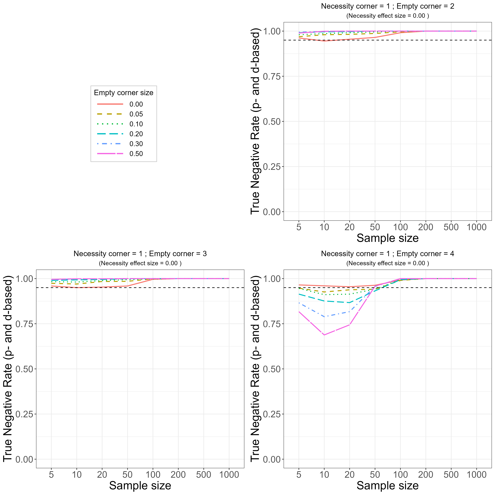
Figure 6.4: True Negative Rate (TNR, specificity) of the NCA approach for identifying non-necessity in the population. True necessity effect size in corner 1 = 0 for different sizes of other empty corners. Top-Right: other empty corner = 2. Bottom-Left: other empty corner = 3. Bottom-Right: other empty corner = 4.
In all three graphs (Top-Right, Bottom-Left, Bottom-Right) the expected empty corner is not empty (necessity effect size = 0), while the other corners are empty with sizes ranging from 0 to 0.50. A TNR value of 0.95 is added as a benchmark, meaning that the rate of correct decisions confirming the absence of necessity in the population is 0.95. This selected value is inspired by the commonly selected threshold \(p\)-value of 0.05 for the false positive rate of a statistical test. NCA draws a negative conclusion about necessity if \(p \ge 0.05\) or \(d < 0.10\).
In the TNR evaluation, scenario A applies when not only the expected corner is not empty (necessity effect size = 0) but also the other corners are not empty (empty corner size = 0), such that no relationship exists in the population. The corresponding TNR curves in Figure 6.4 are the same, which are the lowest curves for the Top-Right and Bottom-Left graphs and the highest curve for the Bottom-Right graph. The curve shows that for all sample sizes the TNR is at least 0.95. Up to a sample size of 50, TNR is constant at 0.95 and when the sample size increases the TNR curve moves upward toward 1. The reason is that as long as the \(p\)-value is critical, 1 - TNR = FNR corresponds to the \(p\)-value of NCA’s statistical test: 5% of the samples drawn from a population where \(X\) and \(Y\) are unrelated (corresponding to scenario A in the TNR test) are false positives, and 95% are true negatives.
Table 6.5 shows the fraction of samples where \(p \ge 0.05\) (\(p\)-based TNR), and Table 6.6 the fraction of samples where \(d < 0.10\) (\(d\)-based TNR).
| n | p-based | d-based | TNR |
|---|---|---|---|
| 5 | 0.962 | 0.413 | 0.962 |
| 10 | 0.945 | 0.430 | 0.945 |
| 20 | 0.954 | 0.598 | 0.954 |
| 50 | 0.954 | 0.877 | 0.954 |
| 100 | 0.953 | 0.988 | 0.988 |
| 200 | 0.942 | 1.000 | 1.000 |
| 500 | 0.952 | 1.000 | 1.000 |
| 1000 | 0.950 | 1.000 | 1.000 |
| n | p-based | d-based | TNR |
|---|---|---|---|
| 5 | 0.980 | 0.515 | 0.980 |
| 10 | 0.986 | 0.577 | 0.986 |
| 20 | 0.991 | 0.705 | 0.991 |
| 50 | 0.994 | 0.944 | 0.994 |
| 100 | 0.997 | 0.998 | 0.998 |
| 200 | 0.997 | 1.000 | 1.000 |
| 500 | 0.999 | 1.000 | 1.000 |
| 1000 | 0.997 | 1.000 | 1.000 |
Since for each sample NCA draws a negative conclusion about necessity if \(p \geq 0.05\) or \(d \leq 0.10\), TNR is the maximum of \(p\)-based TNR and \(d\)-based TNR.
Table 6.5 for scenario A indicates that up to sample size 50 the \(p\)-value TNR dominates and when the sample size increases, the TNR is based on the \(d\)-value. In other words, nearly all samples are correctly evaluated when necessity is absent in the population and other corners are not empty.
Scenario B for TNR (Figure 6.4-top-right) applies when necessity is absent while corner 2 (upper-right corner) is empty (empty corner effect size = 0.05 – 0.50). It turns out that the TNR curves are above the 0.95 benchmark for all sample sizes. Nearly all samples are correctly evaluated when necessity is absent in the population and corner 2 is empty.
Table 6.6-top-right shows that for smaller sample sizes the \(p\)-value TNR is dominant, whereas for larger sample sizes the \(d\)-value TNR dominates, although the differences are small.
The situation for scenario C for TNR (Figure 6.4-bottom-left) when necessity is absent while corner 3 is empty (empty corner effect size = 0.05 to 0.50) is very similar to scenario B. In this scenario, nearly all samples are correctly evaluated when necessity is absent in the population and corner 3 is empty, and the \(p\)-value is the primary limiting factor for TNR (Table 6.7).
| n | p-based | d-based | TNR |
|---|---|---|---|
| 5 | 0.983 | 0.479 | 0.983 |
| 10 | 0.981 | 0.539 | 0.981 |
| 20 | 0.989 | 0.718 | 0.989 |
| 50 | 0.992 | 0.935 | 0.992 |
| 100 | 0.993 | 0.994 | 0.994 |
| 200 | 0.998 | 1.000 | 1.000 |
| 500 | 1.000 | 1.000 | 1.000 |
| 1000 | 0.999 | 1.000 | 1.000 |
In scenario D for TNR (Figure 6.4-bottom-right), necessity is absent while corner 4 is empty (empty corner effect size ranges from 0.05 to 0.50). The results are now very different. The TNR curves start below the 0.95 benchmark and with increasing sample size move first downward and then upward and end up above the 0.95 benchmark while moving toward 1. This means that only for a sample size of more than about 50, nearly all samples are correctly evaluated. The pattern of the TNR curve can be explained by the fact that first the \(p\)-value is the limiting factor, and subsequently the \(d\)-value (Table 6.8).
| n | p-based | d-based | TNR |
|---|---|---|---|
| 5 | 0.946 | 0.371 | 0.946 |
| 10 | 0.910 | 0.408 | 0.910 |
| 20 | 0.913 | 0.596 | 0.913 |
| 50 | 0.917 | 0.890 | 0.917 |
| 100 | 0.905 | 0.992 | 0.992 |
| 200 | 0.910 | 1.000 | 1.000 |
| 500 | 0.896 | 1.000 | 1.000 |
| 1000 | 0.918 | 1.000 | 1.000 |
Similar patterns of the TNR curves can be observed when the distribution in the feasible space is based on a normal rather than uniform distribution of the cases (Appendix E).
If the \(d\)-value were not included as decision criterion for necessity, TNR would have been considerably lower for scenario D. This is shown in Figure 6.5 where the TNR decision is only based on the \(p\)-value. Figure 6.5-bottom-right shows that TNR decreases with increasing sample size and increasing size of empty corner 4.64
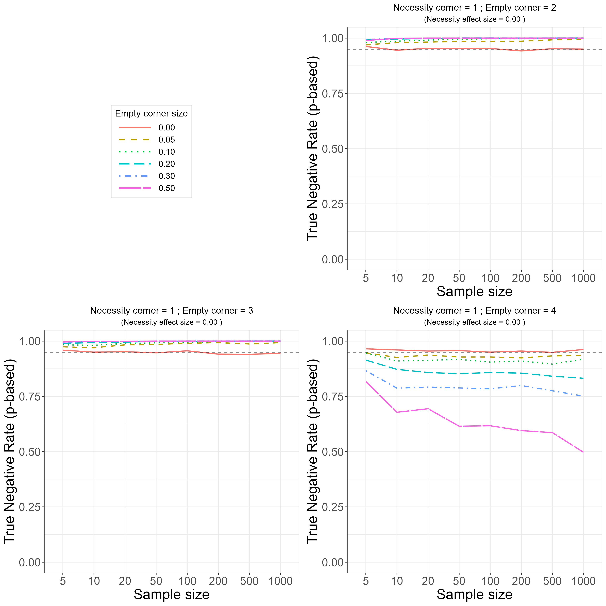
Figure 6.5: True Negative Rate (TNR, specificity) of the NCA approach for identifying necessity in the population with only the \(p\)-value criterion. True necessity effect size in corner 1 = 0 for different other empty corner sizes. Top-Right: empty corner = 2. Bottom-Left: empty corner = 3. Bottom-Right: empty corner = 4.
Because NCA bases its judgement about necessity not only on the \(p\)-value but also on the \(d\)-value (and on the availability of theoretical support), the methodology has credibility regarding both TPR and TNR, and the analyst is reasonably protected against making both false positive and false negative conclusions.
6.4 Empirical credibility
The previous results show that it is possible to identify necessary conditions when they exist, and to correctly determine when they do not exist. Nevertheless, even when the criteria for necessity (theoretical support, large \(d\)-value, low \(p\)-value) are satisfied, the TPR and TNR results also show that there is still a possibility that necessary conditions are not identified when they exist, or that they are identified when they do not exist. This can also happen when limitations exist regarding the quality of model specification (Section 4.3), study design, sampling, and measurement (Chapter 8), or data analysis (Chapter 9). To further evaluate the credibility of an NCA finding, several empirical credibility approaches may be considered.
6.4.1 Robustness
When conducting an empirical study, the analyst must make various theoretical and methodological choices to obtain results. Often, other plausible choices could also have been made. In a robustness check, the sensitivity of the results to other plausible choices is evaluated. The check focuses on the sensitivity of the main estimates and the analyst’s main conclusion.
In NCA, the effect size and the \(p\)-value are two main estimates for concluding whether a necessity relationship is credible. These estimates can be sensitive to several choices. Some choices are outside the realm of NCA, for example choices related to the data that are used as input to NCA (see Chapter 8 about study design, sampling, measurement) or the threshold level of statistical significance. Other choices are NCA-specific, such as the choice of the ceiling line (Section 4.3.2) and the bounding box (Section 4.3), the threshold level of the necessity effect size (Section 4.4.1), and the handling of NCA-relevant outliers (Section 9.8). The credibility of support for necessity increases when the results are robust. Section (9.12) provides further details of NCA’s robustness checks.
6.4.2 Model fit
Section 4.5 introduced eight model fit metrics: complexity, fit, ceiling accuracy, noise, exceptions, support, spread, and sharpness. The credibility of the evidence for necessity increases when the model better fits the data.
6.5 Recommendations for evaluating credibility
The three core criteria for establishing necessity (theoretical support, practical relevance in terms of large effect size, and statistical relevance in terms of small \(p\)-value), the robustness check requirement, and the eight model-fit metrics are summarized in Table 6.9. The table provides examples of numerical guidelines, but these should not be interpreted as strict decision rules. Ultimately, credibility is a matter of informed judgment and optimization by the analyst and other stakeholders after considering all credibility aspects. In an empirical study, it is rare for all credibility aspects to be fully satisfied.
| Credibility aspect | Goal | Description | Symbol | Guideline |
|---|---|---|---|---|
| Theoretical support | Identifies expected empty corner. Allows interpretation of findings. | Necessity hypothesis. | H1 | Specify formal necessity hypothesis. |
| Practical relevance | Ensures relevance of findings. | Effect size. | \(d\) | High (e.g., \(d\) \(\geq\) 0.10). |
| Statistical significance | Tests whether the observed effect could arise by chance (permutation test). | \(p\)-value. | \(p\) | Low (e.g., \(p\) < 0.05). |
| Robustness | Checks sensitivity of findings. | Repeated analysis. | \(\Delta\)\(d\), \(\Delta\)\(p\) | Report. |
| Model fit - complexity | Quantifies model complexity used to balance parsimony against accuracy. | Half of ceiling degrees of freedom. | \(cp\) | Balance. |
| Model fit - fit | Quantifies how far the chosen ceiling line deviates from the standard ceiling line (CE-FDH). | Alignment with boundary pattern (% effect size compared to CE-FDH effect size). | \(ft\) | High (e.g., \(ft\) \(\geq\) 80%). |
| Model fit - ceiling accuracy | Quantifies the degree to which the expected empty corner is indeed empty. | Percentage of points in the feasible area. | \(ca\) | High (e.g., \(ca\) \(\geq\) 95%). |
| Model fit - noise | Quantifies uncertainty around the ceiling line due to minor deviations. | Percentage of points in the ceiling zone near the ceiling (medP-zone). | \(ns\) | Low (e.g., \(ns\) \(\leq\) 5%; 0.9 iso-purity). |
| Model fit - exceptions | Quantifies violations in the ceiling zone far from the ceiling line, indicating how strict (or tolerant) the necessity claim is. | Number of points in the ceiling zone far from the ceiling (lowP-zone). | \(ex\) | Very low (e.g., \(ex\) $$0). |
| Model fit - support | Quantifies how strongly the data in the feasible area support the ceiling line. | Percentage of points in the feasible area on or near the ceiling (medS-zone). | \(su\) | High (e.g., \(su\) \(\geq\) 5%; 0.8 iso-solidity). |
| Model fit - spread | Quantifies the extent to which observations in the feasible area near the ceiling are dispersed, rather than clustered along the ceiling line. | Evenness of \(x\)-positions of points on or near the ceiling (medS-zone). | \(sp\) | High (e.g., \(sp\) \(\geq\) 0.5). |
| Model fit - sharpness | Quantifies how abrupt the transition in the data is across the boundary between ceiling zone and feasible area. | Relative density of points in medium-purity (medP) and medium-solidity (medS) zones. | \(sh\) | High (e.g., \(sh\) > 0.8). |
In the following Part II of the book, the principles of NCA as discussed in Part I are applied to empirical studies.
Part II. Application
Part II of the book about Application demonstrates how to apply the principles of NCA in an empirical study, whether in research or in a practice setting. The primary aim of an NCA study is to identify conditions \(X\) (e.g., actionable factors) that enable or constrain an outcome \(Y\), which may be either desirable (e.g., performance) or undesirable (e.g., disease). Identifying necessary conditions rather than average contributing factors provides novel insights in research and opens new possibilities for effective action in practice. Once the specific goal of the empirical study is defined, the NCA method involves formulating a formal necessity hypothesis (\(X\) is necessary for \(Y\)) and testing this hypothesis using empirical data.
After establishing the goal, the application of NCA consists of four stages:
- Formulate the necessary condition hypothesis.
- Collect the data.
- Analyze the data.
- Report the results.
The first chapter (Chapter 7) discusses the steps that are needed for developing a formal necessity hypothesis. The next chapter (Chapter 8) discusses data collection in terms of the selection of study design (observational study, longitudinal study, case study, experimental study), sampling and selection of cases, measurement (getting scores for \(X\) and \(Y\)), and the dataset. This is followed by Chapter 9, which discusses NCA’s data analysis. Chapter 10 provides guidance on reporting an NCA study. Chapter 11 illustrates the use of NCA in multimethod studies (NCA with regression and NCA with QCA) and Chapter 12 describes the application of NCA in practice. This part ends with a summary and personal reflections.
7 Hypothesis
7.1 Summary of this chapter
This chapter presents the development of a formal necessary condition hypothesis. It is part of a necessity theory and should be testable, non-trivial, plausible, and accompanied by a causal explanation. First, it is explained why NCA adopts a hypothesis formulation-and-testing approach to answer research and practice questions (Section 7.2). The next section (Section 7.3) clarifies why the hypothesis development process differs from usual practice (e.g., lack of past research on necessary conditions). This is followed in Section 7.4 by an overview of knowledge sources that can be used to develop necessity hypotheses (explicit and tacit knowledge from academia and practice). Subsequently, the three steps for developing a formal hypothesis are presented, including decision tools to support this process (Section 7.5). Step 1 establishes a preliminary necessity theory that consists of selecting a “best guess” necessity hypothesis from available sources of information that is embedded in theory. Step 2 uses thought experiments to challenge the hypothesis and, if needed, refine it. Step 3 deepens the causal explanation, and formulates the final formal hypothesis to be tested with empirical data.
7.2 Hypothesis formulation and testing
After the theoretical or practical goal is set, and it is decided to apply NCA, often the question of interest is: “Is \(X\) necessary for \(Y\)”? or “Which factors are necessary for \(Y\)?
NCA advocates starting the study by providing a preliminary answer to the question before collecting empirical data. Such an answer can be based on existing sources of knowledge. NCA is an approach in which the hypothesis is first formulated and subsequently tested with empirical data. In this deductive approach, the hypothesis can have three states: ‘preliminary’, ‘formal’ and ‘tested’. A preliminary necessity hypothesis is a ‘best guess’ answer to the above questions based on existing sources of knowledge and, for example, abductive reasoning. A formal necessity hypothesis is a deepened preliminary hypothesis that is embedded in theory and that was challenged by thought experiments regarding testability, triviality, plausibility, and completeness. A tested necessity hypothesis is a formal hypothesis that was subjected to tests using empirical data, where the outcome of the test is that the hypothesis is rejected or not-rejected (supported) by the observed evidence. In this book, a hypothesis is considered supported or plausible when it is not rejected after being challenged empirically. Rejection may arise from the absence of a plausible causal explanation, a very small necessity effect size, or a large \(p\)-value. However, support for, or plausibility of, a necessary condition does not automatically establish its truth. Greater confidence requires, for example, support from replication studies. Even then, alternative causal explanations for the observed empty corner are possible (Section 2.7). Ultimately, any conclusion about a hypothesis involves human judgment, as discussed in Sections 2.7 and 6.5. Such a judgment may persist only briefly or endure for a long time until rejection.
As discussed below, a formal hypothesis specifies the expected necessity relationship, provides a causal explanation, and specifies the domain where it is expected to hold, among others. This is also helpful in different subsequent stages of an empirical study:
Study design: It helps to focus the study based on existing knowledge (Section 8.2).
Sampling or case selection: It specifies from which theoretical domain cases must be sampled or selected (Section 8.3).
Results: It satisfies NCA’s requirement for theoretical support for a decision about (non-)rejection of the hypothesis (Sections 6.2 and 9.10).
Discussion: It helps to interpret why the hypothesis is rejected or not, and what the theoretical and practical consequences are (Chapters 10 and 12).
In principle, NCA can also be used in a hypothesis-building (inductive) approach. In situations where the phenomenon of interest is novel or poorly understood and existing knowledge is not available, empirical data may be collected to extract a preliminary necessity hypothesis from data (exploratory or theory-building study). Such a situation is further discussed in Section 8.3.2. However, this book focuses on using empirical data only for hypothesis-testing and not for exploration/hypothesis-building for two reasons:
It is normally possible to formulate a preliminary necessity hypothesis from existing knowledge (Section 7.3) without collecting new empirical data.
To obtain an empirically tested hypothesis, it is more efficient to formulate a hypothesis first, even if existing knowledge is scarce, followed by one round of data collection for testing, compared to first having a round of data collection for empirically observing a preliminary hypothesis, followed by a second round of data collection with new data for empirically testing this hypothesis. Without testing the hypothesis with new data, the hypothesis remains untested, even if it is formalized and refined afterwards. According to a basic principle of the scientific methodology, using the same data for building and testing does not qualify for a proper empirical test of the hypothesis. This ‘predesignation’ principle was articulated in the Neyman–Pearson framework of hypothesis testing (Neyman & Pearson, 1933) and has an analogue in modern machine learning, where one dataset is used for training and another for testing. In other words, “It is never OK to snoop at the data before formulating a hypothesis—at least not if the same data are to be used in testing that hypothesis” (Mayo, 1996).
As theories in the social sciences are usually semantic (expressed in words), a necessity hypothesis is formulated qualitatively as \(X\) is necessary for \(Y\) without specifying the exact levels of \(X\) and \(Y\), other than the possibility to specify presence/high level or absence/low level of \(X\) and \(Y\) (Chapter 3). Therefore, in this chapter only the in kind dichotomous version of the necessary condition (necessity-in-kind, NiK) is considered, where the presence/absence of \(X\) is necessary for the presence/absence of \(Y\) (Figure 3.6).
7.3 Why developing necessity hypotheses is different
Developing a necessity hypothesis differs from developing a conventional probabilistic sufficiency hypothesis. Conventional hypothesis development draws on a wealth of existing knowledge about average effects. Reviewing established theories, causal explanations, and prior empirical studies is usually a central part of this process. In such cases, a literature review provides the main justification for the hypothesis, demonstrating that it is plausible, theoretically grounded, and worth (re)testing with empirical data.
In contrast, the current body of knowledge about necessity is still limited. Theoretical frameworks and empirical studies specifically addressing necessity are not yet widespread, and the traditional literature on probabilistic sufficiency offers little direct guidance. That literature hints at important factors that potentially could be necessary conditions, but usually provides no evidence. It may also contain indirect hints or isolated statements about necessity logic and causality. Although this can serve as inspiration or secondary support for developing necessity hypotheses, more is needed for to develop well-grounded necessity hypotheses.
Because a cumulative body of theory and evidence on necessity causality is often lacking, developing necessity hypotheses requires an approach that relies more heavily on the analyst’s creativity, critical reasoning, and substantive expertise. By integrating solid knowledge of necessity logic and necessity causal reasoning with substantive domain knowledge, and by engaging in discussions with peers, analysts can formulate convincing and meaningful necessity hypotheses. It is often surprising how quickly a relevant preliminary necessity hypothesis can emerge once this reasoning process is clear.
Whereas developing an average-effect hypothesis generally involves dedicating most effort to the literature review, developing a necessity hypothesis centers on conceptual reasoning and logical argumentation. The goal is to construct a coherent narrative that justifies why a given condition must be present for the outcome to occur, and why the outcome will not occur if the condition is absent, and no compensation is possible.
Generally, such a narrative starts with identifying an important factor (known or presumed) that contributes to a desired outcome but is not the only factor that helps to produce the outcome. Conventional literature often establishes that such a factor is important on average.65 The next step is crucial for necessity reasoning: it formulates the expectation that the presence of a high level of the outcome will disappear if the condition is absent or is reduced, corresponding to necessity logic: if not \(X\), then not \(Y\). The narrative then explains why this disappearance occurs, for example, through what mechanisms the absence of \(X\) undermines \(Y\). This is followed by an argument that other factors cannot compensate for this absence: no substitute can replace the missing necessary condition; the outcome will not be possible without it. Finally, the narrative specifies the domain of applicability. This is the boundary within which the necessity claim holds. It clarifies whether it applies universally (e.g., oxygen is necessary for human life) or only within a specific group or context (e.g., being pregnant is necessary for having a child).
For example, it may be assumed that class attendance is necessary for school performance. A minimal narrative could be formulated as follows: Class attendance is widely recognized as an important determinant of school performance. Meta-analyses show that students who attend classes more regularly tend to achieve higher grades on average. Attendance is not the only factor: intelligence, motivation, prior preparation, and study habits also matter. However, class attendance is crucial, as it provides the behavioral foundation through which learning processes operate effectively. If class attendance is withdrawn, school performance deteriorates—a pattern consistent with necessity logic. This disappearance occurs for several reasons. Students who skip classes miss essential explanations, examples, and discussions on which exams and assignments depend. Absence removes opportunities for immediate correction and reinforcement, allowing misconceptions to persist. Reduced attendance may also weaken motivation and belonging, leading to further reductions in performance. Other factors cannot replace the absence of class attendance. Digital resources or peer notes can alleviate short-term gaps but do not replicate the real-time cognitive and social engagement that in-class participation provides. This necessity relationship applies primarily to students in traditional, face-to-face courses where class sessions deliver core content and interactive learning is integral to success. It may not apply universally, for example, in fully online, asynchronous courses where students can compensate for absence through other structured forms of engagement. Within the conventional classroom teaching format, however, attendance remains a necessary condition for school performance.66
This narrative defines not only the hypothesis (Class attendance is necessary for high school performance), but gives also a causal explanation (student miss essential learning elements, lack of interactions and motivation, no compensation possible by digital resources) and defines the theoretical domain (conventional classroom teaching).
While creativity is central for formulating the narrative, existing information sources can help generate, sharpen and justifying hypotheses about necessary conditions. This chapter provides a detailed plan and practical tools for this process. While it may appear complex at first, it soon becomes almost automatic once one becomes familiar with the reasoning steps involved.
7.4 Knowledge sources for developing necessity hypotheses
The development of a formal necessity hypothesis begins with the selection of a preliminary hypothesis, based on existing knowledge. Various sources such as academic literature, practical insights, and expert judgment can inform this selection. To ensure the relevance of the necessity hypothesis for both theory and practice, knowledge from scholarly research, real-world experience, and the expertise of the analyst can be combined. Since formulating a necessity hypothesis is primarily a creative process it can rely both on explicit knowledge (documented knowledge from academia and practice) and on tacit knowledge (undocumented expert knowledge from scholars and practitioners). This process may be iterative and involve people with different knowledge backgrounds. The result is a defensible claim made by the analyst (and others), which requires a test with empirical data to be (non-)rejected. Or, according to Popper:
“[Great scientists] are men of bold ideas, but highly critical of their own ideas; they try to find whether their ideas are right by trying first to find whether they are not perhaps wrong” (K. R. Popper, 1985, p. 119)
This section elaborates on the two sources of information for selecting a preliminary necessity hypothesis: explicit knowledge and tacit knowledge.
7.4.1 Explicit knowledge
Explicit knowledge is documented in the academic literature (e.g., books, journal articles) and practice literature (e.g., best practice documents, manuals). Since practice is more focused on ‘doing’ than on ‘documenting’, less explicit knowledge is available from practice than from academia. Practice documents could contain know-how and statements that refer to necessity using terms like ‘requirements’, ‘must have’, ‘critical success factors’, or ‘bottlenecks’, etc. This section focuses on academic literature since it contains much information that can be used to formulate a preliminary necessity hypothesis. Four approaches for identifying them can be distinguished:
Sometimes the academic literature includes explicit necessity theories, whose necessity hypotheses may need to be (re)tested;
The literature may also contain statements referring to necessity.
The literature contains causal models, which are formal models primarily developed for probabilistic sufficiency causality, but elements may be useful for necessity causality as well.
The literature contains causal narratives for describing probabilistic sufficiency relationships or more general causes that contribute to the outcome that can inspire necessity reasoning.
These sources of explicit scholarly knowledge can be used to derive a preliminary necessity hypothesis. Each source is discussed below in more detail.
7.4.1.1 Necessity theories
As discussed in Section 3.4, some theories explicitly state necessity relationships. Such theories can be established or emerging, and may be ‘pure’ necessity theories consisting only of necessity relationships, or ‘embedded’ necessity theories consisting of a combination of necessity relationship and other relationships. As the examples in Section 3.4 show, often, necessity theories have not been (extensively) tested empirically. (Re)testing selected necessity relationships from these theories can provide valuable insights into their empirical support and generalizability.
7.4.1.2 Necessity statements
Phrases using terms like ‘necessary’ or ‘necessary but not sufficient’ are very common in the academic literature (and in practice). Although several statements may use the word necessity loosely as a synonym for important, many refer explicitly to necessity logic and causality, in particular when it is stated ‘for what’ the condition is necessary. For example, in the field of supply chain management, Bokrantz & Dul (2023) systematically reviewed necessity statements in major journals and identified 157 statements that can be considered theoretical necessity claims. Most of these statements have not been tested at all, or not been tested properly for necessity (e.g., using regression analysis). A similar result was found by Richter & Hauff (2022) when analyzing necessity statements in the field of international business. The literature also uses terms that are directly related to necessity, without using the words ‘necessity’ or ‘necessary’. Examples of such words are listed in Table 7.1. Several terms reflect that the necessary condition must be present to have the outcome (enablers); others reflect that the absence of the necessary conditions guarantees the absence of the outcome (constraints). Existing necessity or equivalent statements can be reviewed, and selected statements can be candidates for a preliminary necessity hypothesis.
| Enablers (The presence of X …) | Constraints (The absence of X …) |
|---|---|
| X is necessary for Y | X constrains Y |
| X is needed for Y | X limits Y |
| X is critical for Y | X blocks Y |
| X is crucial for Y | X bounds Y |
| X is essential for Y | X restricts Y |
| X is key for Y | X stops Y |
| X is fundamental for Y | X inhibits Y |
| X is pivotal for Y | X hinders Y |
| X is imperative for Y | X prevents Y |
| X is indispensable for Y | X impedes Y |
| X is a prerequisite for Y | X disables Y |
| X is a requirement for Y | X disallows Y |
| X is a conditio sine qua non for Y | X is a barrier for Y |
| X is a pre-condition for Y | X is a bottleneck for Y |
| X allows Y | X is a hurdle for Y |
| X enables Y | Without X there cannot be Y |
| X permits Y | No X then no Y |
| There must be X to have Y | |
| X is a must-have for Y | |
| Y requires X | |
| Y needs X | |
| Y demands X |
7.4.1.3 Causal models
The academic literature contains numerous causal models based on probabilistic sufficiency relationships between variables. Such models are generally evaluated through regression-based methods. All or some of the relationships in the models could be revisited with a necessity perspective on the relationship. Revisiting the relationship with a new causal perspective is not a replication or robustness test of the existing model. It yields a new necessity model or theory that provides new insights.
An example of a probabilistic sufficiency model is shown in Figure 7.1 about nine factors that contribute to academic achievement. While these factors have only been modeled as having an average effects on the outcome and were tested with regression-based studies, some studies literature refer to these factor as critical (e.g., Ma & Wang, 2001), in the meaning of ‘highly influential’. This model could be revisited from the perspective of necessity causality thereby re-interpreting the word critical as necessary.
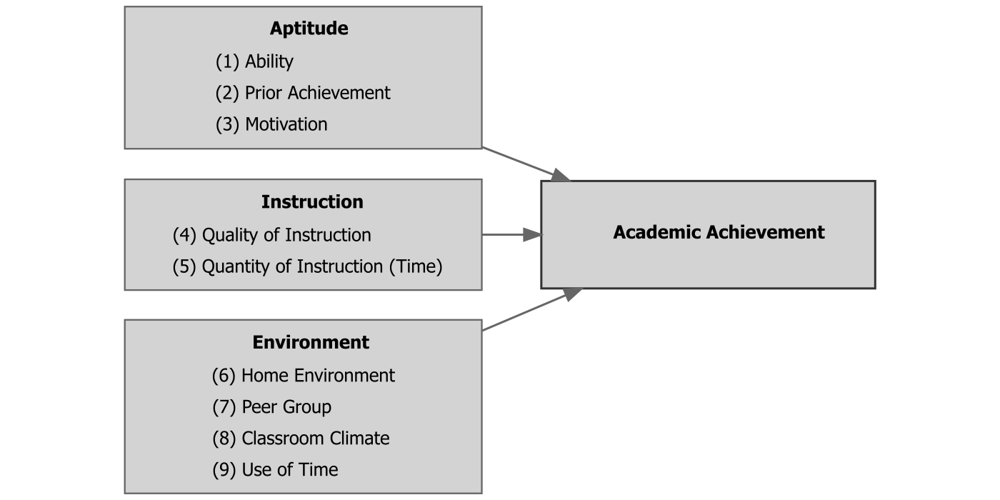
Figure 7.1: Example of a causal model (originally for describing probabilistic sufficiency) for academic achievement with 9 factors that contribute to academic achievement. After: Walberg (1984).
It is also possible that two concepts that were not (directly) related in a probabilistic sufficiency-based model, are related in a necessity model. The original role of a concept (e.g., independent, dependent, mediator, moderator, control) is not relevant for formulating a new role for the concept in a different causal model (condition or outcome in a necessity model).
An additional possibility is to evaluate suggestions for future studies that are made in a study based on average effects. It is not uncommon that a publication about a model suggests to apply NCA in future studies to (also) investigate the phenomena from a necessity perspective. Likewise, literature reviews of studies with regression-based causal models and thus probabilistic sufficiency perspectives often suggest exploring the phenomenon with NCA and thus with a necessity perspective as well to further enrich the state of knowledge. Chapter 1 gives examples of publications that suggest using NCA in future research.
7.4.1.4 Causal narratives
When proposing or justifying hypotheses, academic publications often use causal narratives: stories with explanations that connect causes to effects. For example, in describing probabilistic sufficiency relations, the narrative outlines the mechanism through which a cause contributes to an effect. These causal mechanisms can be critically evaluated by assessing whether the absence of a particular factor disrupts the mechanism. By systematically analyzing causal terminology (Table 7.1), and identifying factors that could break the mechanism (potential necessary conditions) it may be possible to formulate a preliminary necessity hypothesis. For example, Hausknecht et al. (2008) argue that organizational commitment has a negative effect on absenteeism as follows:
“[…] [O]rganizational commitment is defined as a collective sense of affective or emotional attachment to an organization […]. Employees are thought to develop organizational attachments via experiences in the unit where they work […]. For example, employees of high-commitment units may engage in more community maintenance behaviors, including regular attendance at work. Thus, high-commitment work units are likely to be associated with stricter attendance norms […]. At the individual level, meta-analytic evidence has supported the negative relationship between commitment and absenteeism […]. In view of these findings, and the premise that high commitment reflects a strong collective attachment to organizational values and goals, including attendance at work, we expect that at the unit level of analysis, organizational commitment is negatively related to absenteeism” (Hausknecht et al., 2008, p. 1255)
Although in this quote the relationship between organizational commitment and absenteeism is clearly described as a probabilistic sufficiency relationship, such a causal narrative could be approached from the perspective of necessity as well. It could be wondered if the absence of organizational commitment would stop low absenteeism. In this example, the authors themselves explicitly suggest this by stating:
“When the level of analysis is the work unit, organizational commitment may be a necessary but insufficient condition for low absenteeism” (Hausknecht et al., 2008, p. 1225)
and after conducting a regression analysis they conclude (although this cannot be supported by a regression-based analysis):
“Taken together, the findings […] show that high organizational commitment is necessary to avoid high levels of absenteeism” (Hausknecht et al., 2008, p. 1239)
Explicit statements about necessity on causal reasoning in the literature may support the necessity argument, even though necessity was not tested in the original study (Section 7.4.1.2).
7.4.2 Tacit knowledge
Undocumented expert knowledge can be used to formulate a preliminary necessity hypothesis. Experts often possess theoretical or practical insights that can be interpreted in terms of necessity, in particular when these insights are described with words from Table 7.1. This approach is especially useful in fields where explicit knowledge is scarce, while experts believe necessity relationships exist.
Two types of experts can be distinguished: academic experts (scholars) and practitioner experts (practitioners). Scholars are persons with deep theoretical or empirical knowledge developed through research. Drawing upon their expertise, comprehensive understanding of the academic literature, and possibly practical experience, they may identify potential necessary conditions either directly by recognizing explicit hypotheses, or indirectly, by recognizing important factors for an outcome that could also be interpreted as necessary conditions. Practitioners are professionals with hands-on experience in a field outside academia (e.g., consultants, managers, employees, engineers, policy-makers, educators, designers). While they may not articulate their knowledge as hypotheses, they often operate based on an implicit “theory in use” (Dul & Hak, 2008), a solid belief grounded in practice and experience that explains why a certain factor causes a certain effect. These informal theories may include necessity logic. This is not unlikely as practitioners commonly focus on factors that are required for success (‘critical success factors’), or on fail factors that prevent success by identifying and addressing ‘bottlenecks’. Their practical insights can be systematically translated into preliminary necessity hypotheses.
An array of qualitative methods exists to capture experts’ tacit knowledge, ranging from informal conversations, in-depth interviews, and creative group sessions to more structured approaches such as think-aloud protocols, and Delphi studies. However, tacit knowledge has a complex status in academia. It is often valued implicitly (many scholars rely on it), but devalued explicitly when used as evidence or justification, because it does not fit the norms of transparency, replicability, and formal theorizing that define “scientific” knowledge. If a hypothesis is (partly) developed based on tacit practitioner knowledge, the approach used for obtaining this knowledge can be reported and it can be justified that such knowledge is not anecdotal, but accumulated through extensive experience with the practice, system, or process, thus empirically grounded.
7.5 Developing a formal necessity hypothesis
A formal necessity hypothesis has five characteristics:
Theory-grounded: the hypothesis is embedded in a necessity theory. According to Chapter 3, a theory is defined when four elements are defined: focal unit, concepts (condition and outcome), (direction of) the hypothesis67, and theoretical domain.
Testable. A hypothesis is empirically testable if the concepts \(X\) and \(Y\) can be operationalized into measurable variables.
Non-trivial. A hypothesis is non-trivial when both the absence of the condition and presence of the outcome are possible, otherwise it is trivial.
Plausible. A hypothesis is plausible when virtually no cases are reasonably expected in the empty corner.
Complete. A hypothesis is complete when a plausible explanation for why condition \(X\) is necessary for outcome \(Y\) is available.
The development process of a formal necessity hypothesis consists of three steps that are shown in Figures 7.2, 7.4, and 7.6, respectively.
In the first step (Figure 7.2), a preliminary necessity hypothesis is selected based on the available sources of information (Section 7.4), and is embedded in a preliminary necessity theory by defining focal unit, concepts, (direction of) the hypothesis, and theoretical domain. Concepts are defined such that they are measurable and the hypothesis becomes testable. After this step the hypothesis is theory-grounded and testable.
In the second step (Figure 7.4) a thought experiment is conducted in which the preliminary necessity theory is challenged and possibly revised. After this step the hypothesis is also non-trivial and plausible.
In the third step (Figure 7.6) a detailed causal explanation for the hypothesis is given (Chapter 2). This final step makes the hypothesis complete. The formal hypothesis is now ready to be tested with empirical data.
Below, each step is discussed in more detail and illustrated with an example of the preliminary hypothesis that ‘An internet connection is necessary for attending an online meeting’.
7.5.1 Step 1: Define a preliminary necessity theory
The first step transforms the preliminary hypothesis into a preliminary necessity theory. This is a theory that has measurable concepts, a hypothesis describing the expected necessity relationship between the concepts, and a description of the theory’s focal unit and theoretical domain (Chapter 3). However, this theory is not yet challenged in a thought experiment, which is the topic of Step 2. Figure 7.2 shows the hypothesis development tool for Step 1 of the development process.
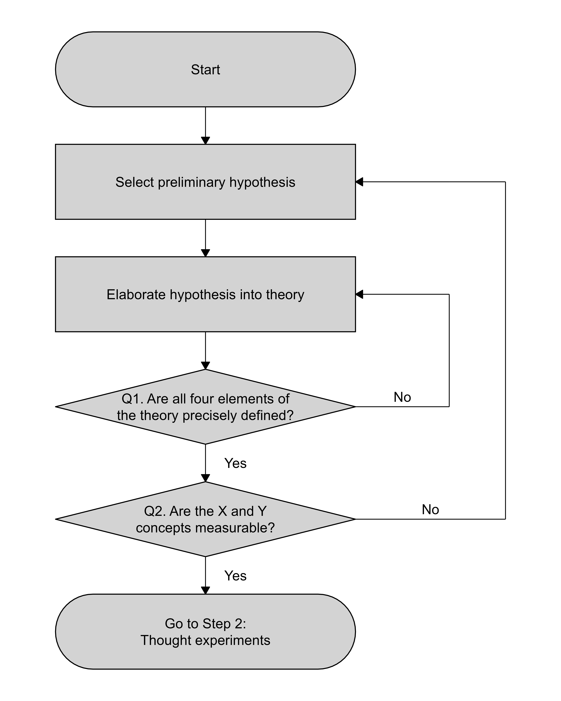
Figure 7.2: Hypothesis development tool for Step 1 of the development process of a formal necessity hypothesis: Defining a preliminary necessity theory.
To begin, a preliminary hypothesis is formulated based on existing knowledge (Section 7.4). This hypothesis is then elaborated into a preliminary necessity theory by precisely defining the four constituent elements of a necessity theory:
- Precise definition of focal unit. The focal unit is the entity of the theory to which the theory applies (e.g., person, team, country, project, etc.).
Sometimes, defining the focal unit is simple. For example, the Theory of Planned Behavior (TPB, Ajzen, 1991) is a theory about individual behavior. The focal unit is evident: ‘individual’ or ‘person’. Other times, the focal unit may not be immediately clear, for example, when theorizing the relationship between parent height and child height (Galton, 1886).68 The focal unit is neither parent nor child but ‘parent-child pair’. The focal unit is expressed as a singular noun, not a plural noun. Specification is important because cases to be sampled or selected for testing the hypothesis must be specific units/examples of the focal unit (e.g., a person, a parent-child pair). Additionally, the concepts of the theory are characteristics of the focal unit.
- Precise definition of the concepts. The concepts are the varying characteristics that are relevant for the theory. For a necessity theory, the concepts are condition \(X\) and outcome \(Y\). The outcome often represents something either desirable or undesirable. Desirable outcomes include, health, well-being, performance, innovation, success, etc. Undesirable outcomes may be sickness, risk, disease, failure, etc. The condition is the concept that must be present to have the outcome.
In the TPB example the condition is Intention for the behavior (of a person), and the outcome is Performance of the behavior (of a person). In the body height example the condition is Parent body height (of a parent-child pair) and the outcome is Child body height (of a parent-child pair).
- Precise specification of the hypothesis. Once the concepts are defined, the hypothesis can be formulated as \(X\) is necessary for \(Y\). If the condition is desirable, the hypothesis could be formulated using one of the enabling terms of Table 7.1 to indicate that the necessary condition supports the outcome. If the condition is undesirable, the hypothesis could be formulated using one of the constraining terms of Table 7.1 to indicate that the absence of the necessary condition prevents the outcome.
Usually, theories in the social sciences are semantic, such that levels of its concepts are only expressed in binary terms and qualitatively (e.g., in terms of absence/presence, or low/high), without giving exact levels. For example, the presence of \(X\) is necessary for the presence of \(Y\), or high \(X\) is necessary for high \(Y\). This is the implicit meaning of \(X\) is necessary for \(Y\). The conceptual model of this hypothesis is shown in Figure 3.6-top-left. This figure shows a specification of the direction of necessity as or high-high (Section 3.5): presence/high \(X\) is necessary for presence/high \(Y\). Other possible directions are absence/low \(X\) is necessary for presence/high \(Y\) (; low-high), presence/high \(X\) is necessary for absence/low \(Y\) (; high-low), and absence/low \(X\) is necessary for absence/low \(Y\) (; low-low) (see the other conceptual models in Figure 3.6). The specified direction of the hypothesis defines the expected empty corner: which corner of an \(XY\)-plot is expected to be empty if the hypothesis holds (Figures 3.7 and 3.8).
For the TPB example, the preliminary hypothesis is the ’presence of intention for the behavior is necessary for the presence of performance of the specific behavior. For the body height example, the preliminary hypothesis is a high parent body height is necessary for a high child body height. In both hypotheses, the direction is high-high.
- Precise definition of the theoretical domain. The theoretical domain specifies the universe of units (cases) of the focal unit to which the hypothesis is expected to apply. This universe can be defined in various ways, such as temporally (e.g., a specific time period), geographically (e.g., a region, country, or global context), demographically (e.g., age group, profession), or conceptually (e.g., type of organization or system). The specified theoretical domain determines which cases must be sampled (from a population in the theoretical domain) or selected (directly from the theoretical domain).
For the TPB example, the theoretical domain is ‘All adults in the world’. For the body height example, the theoretical domain is ‘All adult parent-child pairs in the world, when children have reached adulthood’.
After the preliminary hypothesis is embedded in theory, the first question (Q1) of Figure 7.2 checks if precise definitions are available for four elements of the theory: focal unit, concepts, hypothesis and theoretical domain.
➔ Q1: Are all four elements of the necessity theory precisely defined? When all elements of a necessity theory are specified, the hypothesis is considered to be embedded in theory.
➔ Q2: Are the \(X\) and \(Y\) concepts measurable? This question checks whether the concepts can be transformed into measurable variables. When concepts cannot be measured directly, substitute measurements (proxies) can be considered, such as measuring an informant’s perception or belief about an otherwise unmeasurable behavior or event, although this approach may compromise measurement validity. NCA accepts any meaningful, valid, and reliable scores of \(X\) and \(Y\) as input (Chapter 8). When the \(X\) and \(Y\) concepts of the necessity theory can be operationalized into measurable variables, the hypothesis is considered testable.
7.5.1.1 Example Step 1
The hypothesis development tool for Step 1 (Figure 7.2) can be applied to the example about the necessity of an Internet connection for attending an online meeting. First the preliminary necessity hypothesis that is formulated based on expert knowledge is selected.
Select preliminary hypothesis: Internet connection is necessary for Online meeting attendance.
Next, the hypothesis is embedded in theory.
Elaborate hypothesis into theory:
➔ Q1: Are all four elements of the necessity theory precisely defined? - Focal unit: ‘Person’. A person may or may not have an Internet connection and the person may or may not attend an online meeting.
Condition concept \(X\): Internet connection, defined as ‘the communication pathway between a device such as a computer or smartphone and the global network known as the Internet’. This concept can be absent (no Internet connection) or present (Internet connection).
Outcome concept: \(Y\): Online meeting attendance. This concept is defined as ‘being part of a real-time, multimedia interaction among multiple participants’. This concept can also be absent (no Online meeting attendance) or present (Online meeting attendance).
Direction of the hypothesis: the presence of an Internet connection is necessary for the presence of an Online meeting attendance (high-high).
Theoretical domain: All persons in the world
Answer: \(\rightarrow\) yes.
➔ Q2: Are the concepts Internet connection (\(X\)) and Online meeting attendance (\(Y\)) measurable? The presence or absence of a person’s Internet connection, and the presence or absence of a person’s online meeting attendance can be measured in different ways such as by analyzing the platform and network information, user activity logs, observations, questionnaires, and other data sources. This makes the hypothesis testable. \(\rightarrow\) yes.
Figure 7.3 shows the conceptual model and the expected empty corner for this preliminary theory. The preliminary hypothesis predicts that all persons that do not have an Internet connection also do not attend an online meeting, and that all persons that attend an online meeting have an Internet connection.

Figure 7.3: Conceptual model and \(XY\)-table with expected empty corner when the necessity proposition: having an Internet connection is necessary for Online meeting attendance.
7.5.2 Step 2: Conduct thought experiments
The second step of the development process of a formal necessity hypothesis consists of conducting thought experiments with the preliminary theory including its hypothesis, which is now elaborated into theory and is testable. Figure 7.4 shows Step 2 of the development process.

Figure 7.4: Step 2 of the development process of a formal necessity theory: using thought experiments to challenge the preliminary theory.
A thought experiment in NCA is a mental evaluation to check the validity of the necessity theory and its hypothesis. Since a necessity hypothesis has only one \(X\) and one \(Y\), the prediction of the necessity theory is straightforward: the outcome is absent if the condition is absent, and the condition is present if the outcome is present. Therefore it is usually easy to evaluate the hypothesis mentally. The basic idea is to evaluate if the expected empty corner is indeed empty. Assuming that presence/high \(X\) is necessary for presence/high \(Y\), the expected empty corner is the upper-left corner.
A thought experiment can help to check if the preliminary theory may be trivial or implausible. Testing trivial or implausible hypotheses with empirical data is not interesting and a waste of resources. Furthermore, if the thought experiment shows that many counterexamples exist (the expected empty space is not empty) the hypothesis should be rejected. With a few counterexamples, further evaluation is needed and the theory may be refined by redefining the concepts or the theoretical domain, such that the (revised) hypothesis of the revised theory is plausible. Three thought experiments can be done (references to the questions in Figure 7.4 are given in brackets):
Thought experiment for non-triviality (Q3, Q4).
Thought experiment for plausibility (Q5, Q6).
Thought experiment for counterexamples and exceptions (Q7, Q8, Q9).
7.5.2.1 Non-triviality
A trivial necessity hypothesis is a hypothesis that is expected to hold, but is not informative because the condition or the outcome is nearly (constant) in the situation of interest (i.e., in the theoretical domain where the hypothesis is supposed to hold). Triviality applies when the condition is virtually always present, or the outcome is virtually always absent. The first type of triviality where the condition is constant (always present) and the outcome varies, is depicted in Figure 3.11-bottom-left. An example is the hypothesis that oxygen (\(X\)) is necessary for attending an online meeting (\(Y\)). This hypothesis holds because when an online meeting is held (\(Y\) is present), oxygen (\(X\)) is present and needed for the participants to have the meeting. The hypothesis is trivial because oxygen is virtually never absent. The second type of triviality where the outcome is constant (always absent) and the condition varies, is depicted in Figure 3.11-top-left. An example is the hypothesis that having good food during lifetime (\(X\)) is necessary for a human to reach age 125. The necessity claim of this hypothesis is reasonable, but it is trivial because reaching age 125 is rare.
The situation of a constant condition that is always absent and an outcome that varies (Figure 3.11-bottom-right) and the situation of a constant outcome that is always present and a condition that varies (Figure 3.11-top-right) both result in a clear rejection because the outcome can be present when the condition is absent. In these situations the necessary condition hypothesis is immediately rejected, not because it is trivial but because it is not necessary.
Therefore, there are two questions to be raised and answered in a thought experiment for checking triviality of the theory and its hypothesis (Figure 7.4):
➔ Q3. Do cases exist with the outcome? This question checks if the outcome is virtually always absent. If not, the theory is trivial.
➔ Q4. Do cases exist without the condition? This question checks if the condition is virtually always present. If not, the theory is trivial.
If either of these questions is answered negatively, the theory and its hypothesis can be considered trivial and not worth testing with empirical data.
7.5.2.2 Plausibility
A plausible hypothesis is a non-trivial hypothesis (both the condition and outcome can vary) that cannot be rejected in a thought experiment. The goal of this thought experiment is to consider condition and outcome together to find supportive cases for the hypothesis, and in particular possible counterexamples that challenge the hypothesis. This thought experiment for plausibility resembles an empirical test of a necessity hypothesis using a small number of cases (Section 8.3.2).
To find supportive cases, two questions can be asked:
➔ Q5. Do all imaginable cases with the outcome have the condition? If the answer yes, this is an indication that the hypothesis may hold.
➔ Q6. Do all imaginable cases without the condition lack the outcome? If the answer yes, this is another indication that the hypothesis may hold.
If the answer to both questions is affirmative, all cases from the theoretical domain that can be imagined are supportive cases for the hypothesis. When only supportive cases and no counterexamples can be imagined, the hypothesis is plausible. If the answer to one or both questions is negative, counterexamples are identified. These counterexamples need further evaluation before a decision can be made about the plausibility of the hypothesis.
7.5.2.3 Counterexamples and exceptions
When counterexamples outnumber supportive cases, it is clear that the hypothesis needs to be rejected. However, when there is a limited number of counterexamples compared to supportive cases an additional evaluation is needed. Therefore, when counterexamples exist, the following question is answered first:
➔ Q7: Are counterexamples uncommon If counterexamples are not uncommon, the theory should be rejected. If counterexamples are uncommon, they need further evaluation before the analyst makes a decision to reject or keep the hypothesis, possibly after refinement of the theory or adoption of the typicality perspective (see below).
The further analysis consists of considering the possibility of incorporating or excluding counterexamples in the theory by redefining the condition \(X\), the outcome \(Y\), or the theoretical domain. Broadening the condition \(X\) or narrowing the outcome \(Y\) can make counterexamples become supportive cases within the redefined theory. Narrowing the theoretical domain excludes the counterexamples from the redefined theory.69
Therefore, the analyst has three options to handle counterexamples: (1) broadening the condition, (2) narrowing the outcome, and (3) narrowing the theoretical domain. It is the analyst’s choice which option to adopt. Option 1 broadens the ways in which the condition can allow the outcome. Often, the broader condition is a higher-order concept that integrates the original concept and the counterexample concept. By broadening the condition, counterexamples that previously displayed an absence of the condition now display a presence of the condition, and become supportive cases under the refined theory. However, this risks making the condition too broad and weakening its explanatory power: almost any facilitating mechanism could then be considered part of the condition. Option 2 narrows the outcome to a more specific form, reducing the scope of what is being explained. With the redefined outcome concept, the exception becomes a supportive case that does not violate the hypothesis. However, this risks excluding cases that are theoretically relevant. Option 3 restricts the theoretical domain by focusing only on a subset of cases where necessity holds. With a new definition of the theoretical domain, the exception should not have been selected for testing the hypothesis because the claim of the hypothesis is only valid in a defined theoretical domain. While this approach preserves the original concepts and hypothesis, it reduces the generalizability of the theory. Nevertheless, it seems reasonable to adopt option 3 since a theoretical domain is seldom homogeneous and universal. In option 3, the original hypothesis is maintained, but the theoretical domain is narrowed. This strategy preserves the preliminary hypothesis, with more clearly specifying the scope of its application, while no known counterexamples exist.
If any of the options for handling counterexamples is selected, it is assumed that the redefined theory holds for all imaginable cases selected from the theoretical domain.70
If counterexamples exist the following question needs to be answered:
➔ Q8. Can counterexamples be handled by redefining concepts/domain? If the answer is yes, the theory is adjusted, so that there are no more counterexamples. After the counterexamples are handled by redefining the necessity theory (concepts or domain) it is assumed that the hypothesis holds for all imaginable cases of the theoretical domain, such that the testing of the hypothesis can start with a deterministic view on necessity (Section 2.4.1).
If the answer to Q8 is no, it may be that (some) counterexamples remain. The analyst has now two options to proceed:
Adopting the deterministic perspective of necessity, single counterexamples reject the hypothesis (Section 2.4.1).
Adopting the typicality perspective of necessity. The counterexamples are rare and cannot be explained or handled. They are considered exceptions that are not driven by necessity and do not reject necessity the hypothesis (Section 2.4.3). If counterexamples are not rare, the hypothesis should be rejected. Note the difference between exceptions and noise (Section 4.5.4).
Adopting either perspective is a matter of analyst judgment. The deterministic perspective may be adopted when strict logical necessity is required without exceptions, when the theoretical domain contains few cases, or when logical rigor is prioritized. The typicality perspective may be adopted when it is recognized that rare exceptions can exist that cannot be explained with necessity logic.
Therefore, if counterexamples remain the following question needs to be answered:
➔ Q9. Is the typicality perspective adopted? If the answer is no, the theory’s hypothesis is rejected; if yes, it is plausible and (rare) exceptions are allowed.
7.5.2.4 Example Step 2
The development tool for Step 2 (Figure 7.4) can be applied to the example about the necessity of an Internet connection for attending an online meeting. First, the preliminary necessity theory from Step 1 is selected. The first question for the triviality check is:
➔ Q3. Do people exist who attend an online meeting? In 2021, about 500 million people daily had online meetings. Since then the number of daily users presumably has considerably increased \(\rightarrow\) yes.
The second question of the triviality check is:
➔ Q4. Do people exist without an Internet connection? In 2025, about one-third of the world population had no access to the Internet \(\rightarrow\) yes.
Since both questions are answered affirmatively, the hypothesis is non-trivial for the selected theoretical domain (all people in the world). To check for the plausibility of the hypothesis, another two questions are raised:
➔ Q5. Do all imaginable persons attending an online meeting have an Internet connection?
➔ Q6. Do all imaginable persons without Internet connection not attend an online meeting? The answer to both questions is no. It is possible that persons attending an online meeting at home or in an organization in a Local Area Network (LAN). These persons attend an online meeting without being connected to the Internet. Both questions Q5 and Q6 are therefore answered negatively, indicating that counterexamples exist. Trying to find counterexamples, even if they seem uncommon, is an essential part of conducting a thought experiment to test plausibility of a necessity hypothesis \(\rightarrow\) no.
Since counterexamples exist, the next step is to evaluate if they are uncommon:
➔ Q7: Are people with LAN connections uncommon? For the online meeting example, the number of persons attending an online meeting with a LAN connection compared to the number of persons attending an online meeting with an Internet connection is relatively small. Attending an online meeting with a LAN connection is relatively uncommon, suggesting further analysis of these cases is needed to refine the theory \(\rightarrow\) yes.
➔ Q8: Can counterexamples be handled by redefining concepts/domain? The three options to handling counterexamples are:
Broadening the condition means that the original definition of Internet connection (the communication pathway of devices such as computer or smartphone to the global network known as Internet) is broadened such that it incorporates LAN networks. The concept Internet connection could be broadened to the concept Digital network connection defined as the communication pathway of devices such as computer or smartphone to a digital network. ‘Digital network’ now includes Internet and LAN.
Narrowing the outcome means that the original definition of the outcome \(Y\) (Online meeting attendance: being part of a real-time, multimedia interaction among multiple participants) is narrowed such that it incorporates the exception. For example, Online meeting attendance could be narrowed to Public online meeting attendance defined as being part of a real-time, multimedia interaction among multiple participants from the general public, excluding private online meetings (that use LAN) from the definition. For the cases that were previously counterexamples, the condition ‘Internet connection’ is absent (though LAN is present), and the redefined outcome concept ‘Public online meeting attendance’ is also absent (because the LAN meeting is considered a private meeting).
The third way to handle an exception is to exclude counterexamples from the theory by narrowing the theoretical domain. In the online meeting example, narrowing the theoretical domain means that the original definition, ‘all persons in the world’, would be revised such that it excludes people that use a LAN network in a private meeting. For example, the domain All persons in the world could be narrowed to All persons who are geographically distant from each other, which would exclude in a local gathering (home, organization) from the theoretical domain.
In summary, for the example the three possible ways to handle the exception by redefining concepts/domain are:
Option 1 (broadening condition):
Hypothesis: Digital network connection is necessary for Online meeting attendance. Focal unit: Person. Condition \(X\): Digital network connection: the communication pathway of devices such as computer or smartphone to a digital network. Outcome \(Y\): Online meeting attendance: real-time, multimedia interaction among multiple participants. Theoretical domain: All persons in the world.
Option 2 (narrowing the outcome):
Hypothesis: Internet connection is necessary for Public online meeting attendance. Focal unit: Person. Condition \(X\): Internet connection: the communication pathway of devices such as computer or smartphone to the global network known as Internet. Outcome \(Y\): Public online meeting attendance defined as a real-time, multimedia interaction among multiple participants from the general public. Theoretical domain: All persons in the world.
Option 3 (narrowing the theoretical domain):
Hypothesis: Internet connection is necessary for Online meeting attendance. Focal unit: Person. Condition \(X\): Internet connection: the communication pathway of devices such as computer or smartphone to the global network known as Internet. Outcome \(Y\): Online meeting attendance: real-time, multimedia interaction among multiple participants. Theoretical domain: All persons who are geographically distant from each other.
It is supposed that the second option is selected for further development in Step 3 (Section 7.5.3.1) \(\rightarrow\) yes.
7.5.3 Step 3: Provide causal explanation
In the previous step, the preliminary necessity theory including its hypothesis was either rejected or accepted during a thought experiment, possibly after revision of concepts or theoretical domain, or by adopting the typicality perspective. If accepted, the next step is to explain why \(X\) is necessary for \(Y\). This involves developing a causal explanation. During the formulation of the preliminary necessity theory including its hypothesis and during the process of conducting thought experiments, the analyst implicitly used a causal reasoning about necessity. In the last step before empirical testing of the hypothesis, the causal reasoning is explicitly articulated and further deepened. Since causality is a human interpretation rather than a directly observable phenomenon (Chapter 2), the analyst must construct a plausible and coherent narrative to justify the proposed necessity-based causal link.
Thus, describing the causal explanation is a creative process that can be based on insights obtained during the thought experiments, and can be enriched with causal reasoning from the academic literature, from practice, and from the analyst’s own experience (Sections 7.4.1 and 7.4.2).
The causal narrative can be inspired by answering three questions that are positioned in the \(XY\)-plot shown in Figure 7.5:
Explaining why \(X\) is an enabler for \(Y\) (why the presence of \(X\) allows the presence of \(Y\)).
Explaining why \(X\) is a constraint for \(Y\) (why the absence of \(X\) leads to the absence of \(Y\)).
Explaining why there is no substitute for the absence of \(X\) (why no other paths without \(X\) can lead to the outcome \(Y\)).
The first question builds on conventional causal reasoning—exploring how one factor allows an outcome and in this way helps to produce it. The second and third, however, go beyond standard approaches: they introduce the need to reason counterfactually and to explore the uniqueness of \(X\) in the causal structure. These perspectives encourage creative and rigorous thinking about necessity and irreplaceability.
One core idea of necessity causality is that the absence of \(X\) causes the absence of \(Y\). More precisely, if the necessity cause is reduced or removed, the present or high outcome should disappear. This thought experiment resembles a true ‘loss of function’, see the necessity experiment discussed in Section 8.2.4.
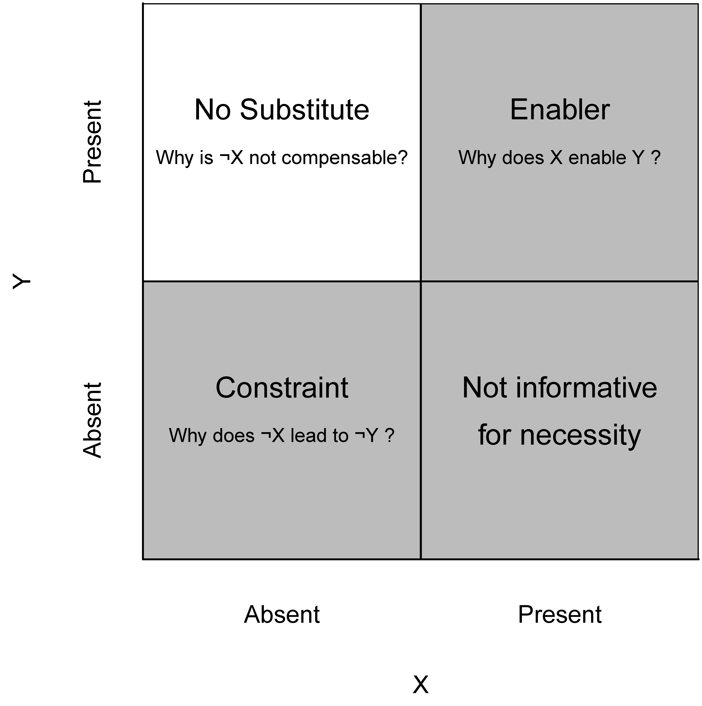
Figure 7.5: Questions for explanation why \(X\) is necessary for \(Y\). \(\neg X\) and \(\neg Y\) mean absence of \(X\) and \(Y\).
The three guiding questions are part of Step 3 of the hypothesis development tool (Figure 7.6).
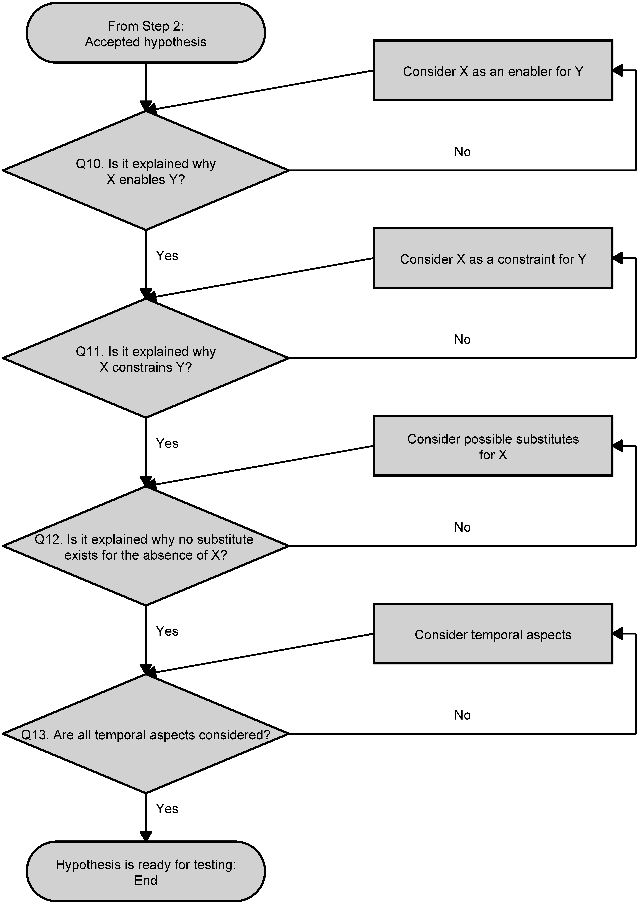
Figure 7.6: Hypothesis development tool for Step 3 of the development process of a formal necessity hypothesis: Adding a causal explanation.
➔ Q10. Is it explained why \(X\) enables \(Y\)? The accepted hypothesis from the thought experiments is first considered from the perspective that \(X\) is an enabler for \(Y\). To explain why a condition enables an outcome, the starting point is the presence of \(X\). The explanation then focuses on how this presence can plausibly contribute to producing the outcome, possibly through a chain of necessity (Sections 3.3 and 4.6.4). Common narratives about the causal mechanisms through which \(X\) contributes to \(Y\) can support this explanation. While such narratives are used to describe probabilistic sufficiency where the presence of \(X\) increases the likelihood of \(Y\), the same reasoning can be used to illustrate \(X\)’s role as a contributor: when \(X\) is present, \(Y\) may occur, but it is not guaranteed; \(Y\) may still be absent. The contributor becomes only an enabler when also the next two questions apply: if \(X\) is absent, \(Y\) will not occur.
➔ Q11 Is it explained why \(X\) constrains \(Y\)? Now \(X\) is considered from the perspective of being a constraint for \(Y\). To explain why a condition constrains an outcome, the starting point is the absence of \(X\). The explanation then focuses on how this absence disrupts the causal mechanism through which \(X\) contributes to the outcome as described in the answer to Q10, thereby preventing the outcome from occurring.
➔ Q12. Is it explained why there is no substitute for the absence of \(X\)? But even if \(X\) is not present, it may be that its absence is compensable by another factor or path. Therefore, the hypothesis is considered from the perspective of the possibility of substitutes. To explain why there is no substitute for the absence of a condition, the starting point is again the absence of \(X\). The explanation then focuses on whether any alternative path (mechanism) could plausibly exist to still produce the outcome. If no viable substitutes exist, the absence of \(X\) guarantees the absence of \(Y\). If an alternative path is discovered that was not identified in Step 2, the analyst may return to Q7 of step 2.
➔ Q13. Are temporal aspects considered? If Q10-Q12 are answered affirmatively, the three components (enabler, constraint, substitute) provide the basis for a narrative for explaining why \(X\) is a necessary cause for \(Y\). In addition to the explanation that \(X\) is essential to produce \(Y\), and that its absence cannot be substituted, also three temporal aspects need to be considered. First, one fundamental requirement for establishing causality is temporal order: \(X\) must precede \(Y\). If this sequence is not self-evident, the expected temporal ordering should be explicitly stated and justified. Doing so helps to address the risk of reverse causality (Section 5.7). Second, it is important to clarify whether \(X\) is necessary for the onset of \(Y\) or for its continuation. For instance, a match is necessary to ignite a fire (onset), but not to keep it burning (continuation). In contrast, oxygen is necessary for both the onset and continuation of the fire. This distinction can be incorporated into the causal explanation or into the definition of the outcome concept itself. Third, the necessity of \(X\) for \(Y\) may be time-dependent. That is, \(X\) may only be necessary during certain time periods. For example, in the past, attention to sustainability may not have been necessary for a company’s success, whereas it may be essential today. This time-sensitive aspect of necessity can be included either in the causal narrative or in the specification of the theoretical domain.
After providing the temporal aspects, the hypothesis is complete. The formal hypothesis is now fully specified and is ready for empirical testing:
Hypothesis: \(X\) is necessary for \(Y\). (add direction if needed)
Focal unit = …
Concept \(X\) = …
Concept \(Y\) = …
Theoretical domain = …
Causal explanation = …
7.5.3.1 Example Step 3
The hypothesis development tool for Step 3 (Figure 7.6) can be applied to the example about the necessity of an Internet connection for attending an online meeting. The accepted hypothesis after the thought experiments is ‘Internet connection is necessary for Public online meeting attendance’.
➔ Q10. Is it explained why Internet connection enables Online meeting attendance? First, it is evaluated if an Internet connection can be considered as an enabler for Public online meeting attendance. This enabling role can be explained as follows: the presence of a communication pathway makes it possible for a participant to connect to a platform and to communicate remotely. The platform provides the necessary technical infrastructure for video, audio, and chat functionalities that allow a public online meeting to occur.71 \(\rightarrow\) yes.
➔ Q11 Is it explained why Internet connection constrains Public online meeting attendance? Next, it is considered if an Internet connection is a constraint for a public online meeting. The constraining role of an Internet connection can be explained as follows. Without a communication pathway it is also not possible to connect to a digital platform, such that participants are unable to connect remotely. The essential infrastructure for real-time communication is missing. As a result, the conditions required for a public online meeting are not met, and the person cannot attend the meeting. The absence of the communication pathway thus blocks the occurrence of the outcome \(\rightarrow\) yes.
➔ Q12. Is it explained why there is no substitute for the absence of \(X\)? Next, it is considered if, when a digital platform is absent, other technologies for example, email or satellite communication could serve as substitutes. Email is an asynchronous communication tool that may support collaboration in a broader sense, but does not enable the real-time interaction required for a public online meeting. Satellite communication may offer connectivity for specific groups or in remote areas, but does not facilitate general public online meetings. If no substitute exists in the theoretical domain, with the absence of an Internet connection the outcome cannot be achieved, confirming that \(X\) is irreplaceable in this context \(\rightarrow\) yes.
➔ Q13. Are temporal aspects considered? An online meeting cannot begin without a working Internet connection already in place. Thus, the Internet connection must exist before or at least at the onset of the meeting. The Internet connection is necessary both for the onset of the online meeting (to initiate the call or session), and the continuation of the meeting (to maintain the live connection throughout). The necessity of an Internet connection for an online meeting is time-dependent in a technological sense: Before Internet-based communication tools existed (e.g., before the 1990s), an Internet connection was not necessary; online meetings did not exist as a concept, so only after 1990 the hypothesis is non-trivial. In the future, alternative technologies might make traditional Internet connections obsolete and become substitutes \(\rightarrow\) yes.
If so, the hypothesis is now a formal necessity hypothesis, and is ready to be tested with empirical data.
8 Data
8.1 Summary of this chapter
This chapter describes the steps between the hypothesis and data analysis that are needed to obtain empirical data for testing a formal necessity hypothesis. The hypothesis discussed in the previous chapter (Chapter 7) guides which data should be collected. The hypothesis has precise definitions of (1) the focal unit, (2) the concepts \(X\) and \(Y\), (3) the direction of necessity and a causal explanation, and (4) the theoretical domain where the hypothesis is supposed to hold. Empirical data refer to observed \(x\)- and \(y\)-scores (values or levels) of variables that represent the concepts \(X\) and \(Y\). These scores are measured on cases selected from the theoretical domain. To collect high-quality empirical data for testing the necessity hypothesis, three key decisions must be made: (1) selection of study design, which is the type of study (observational study, longitudinal study, case study, or experimental study discussed in Section 8.2), (2) sampling or selection of cases from the theoretical domain: random sampling and purposive case selection (Section 8.3), and (3) conducting the measurement to obtain valid and reliable \(x\) and \(y\) scores (e.g., qualitative or quantitative data; archival or new data) for each case (Section 8.4). Section 8.5 discusses the format of a useful dataset.
While NCA does not impose new requirements on data collection and treats empirical data as input to NCA rather than as part of NCA, some choices must be tailored to fit the logic of necessity. This applies, for example, to the study design when a necessity experiment is done (Section 8.2.4.1), or to the use of purposive case selection in a small-n qualitative study (Section 8.3.2).
8.2 Study design
Study design refers to the type of study that is done to test the hypothesis. This book distinguishes between the observational study, which is a study that analyzes a large number of cases in the natural environment (e.g., large-n quantitative study), the longitudinal study, which is an observational study where cases are studied at different time points, the case study, which is an observational study with a small number of cases in the natural environment (e.g., small-n qualitative study), and the experimental study, which is a study in which the condition \(X\) is manipulated and the outcome \(Y\) is observed. This section discusses each of these four study designs in the context of NCA.
8.2.1 Observational study
The most common design of an NCA study is the observational study. The analyst observes the phenomena of interest in the natural setting without manipulating \(X\) and \(Y\). Such studies are often cross-sectional, meaning that \(X\) and \(Y\) are observed at a single point in time. The observational study is usually associated with a large-n quantitative study where many cases are sampled (Section 8.3.1), and scores of \(X\) and \(Y\) are numeric (Section 8.4.1).
The popularity of this design in NCA can be explained not only by the popularity of quantitative studies in general, but also because the method is not vulnerable to omitted variable bias. This is one reason in regression-based studies for conducting randomized experiments (see Section 11.3.1). The absence of omitted variable bias allows findings from an observational NCA study to be readily interpreted causally without taking special measures to control for other variables, assuming that an adequate sample (Section 5.2) and a solid necessity theory (Chapter 7) are available. Thus, the observational study is particularly useful when the hypothesis is well-developed with a plausible causal explanation that also specifies the temporal aspect (first \(X\) then \(Y\)) with a proper sample that adequately covers the population of interest. NCA does not impose new requirements for designing a good observational study.
8.2.2 Longitudinal study
In this book, a longitudinal study (common name in statistics) and a panel study (common name in econometrics) are treated as synonyms, and the term longitudinal study is used. A longitudinal study is an observational study in which the same cases are followed over time and \(X\) and \(Y\) are measured at different time points.
When a necessity hypothesis includes an expectation about differences of necessity over time, or when the analyst is unsure about the possibility of reverse causality (see Section 5.7), a longitudinal study may be appropriate. It may be that the analyst expects that necessity exists at one time point but not at another or that the necessity between time points differs in strength (effect size).
Three types of longitudinal study are discussed here. First, it may be that data at different time points are available, but that the analyst is not interested in time per se. Then these data can be pooled together, resulting in a design that corresponds to the single cross-sectional observational study (e.g., Jaiswal & Zane, 2022). Second, if the analyst is interested in time trends, NCA can be applied for each time point separately. This corresponds to a multiple cross-sectional observational study. Third, if the analyst wants to avoid a reverse causality interpretation of the findings, \(X\)-scores are selected from a point in time before the \(Y\)-score is selected. Such a time-lagged study ensures that the condition \(X\) existed before the occurrence of the outcome \(Y\). NCA does not impose new requirements for designing a good longitudinal study.
Below, the longitudinal study is illustrated with an example of the hypothesis that a country’s economic prosperity is necessary for a country’s average life expectancy:
Focal unit: Country.
Condition concept \(X\): Economic prosperity.
Outcome concept: \(Y\): Live Expectancy.
Hypothesis: A high level of Economic prosperity is necessary for a high level of Live expectancy (high-high).
Theoretical domain: All countries in the world.
Economic prosperity captured by log GDP per capita and Life expectancy by Life expectancy at birth, expressed in years. The data are archival data from the World Bank. The data span a period of 64 years between 1960 and 2023, for 211 countries. Data are available for 11,020 country-years.
8.2.2.1 Pooled data
-Life_expectancy_(years)1.png)
Figure 8.1: \(XY\)-plot of Economic prosperity and Life expectancy with two ceiling lines (Pooled World Bank data from 1960 to 2023 for all countries/years).
In the first illustration, the data are pooled to test the hypothesis. Figure 8.1 shows the \(XY\)-plot. Each data point is a country-year combination. The plot shows a clear empty space in the upper-left corner as expected. This suggests that a necessity relationship exists between Economic prosperity and Life expectancy72. This indicates that a certain level of life expectancy is not possible without a certain level of economic prosperity. For example, for a country’s life expectancy of 75 years, an economic prosperity of about 3 (\(10^3\) = 1,000 equivalent US dollars) is necessary. Such a level of economic prosperity is not sufficient as many cases with an Economic prosperity level of 3 have a lower level of Life expectancy73.
8.2.2.2 Time trends
In the second illustration, the data for the different time points are used to test expected time trends regarding the necessity of high Economic prosperity for high Life expectancy74. Table 8.1 shows the NCA parameters for each separate year.75
| Year | Ceiling intercept | Ceiling slope | Effect size | -value |
|---|---|---|---|---|
| 1960 | 2.2 | 19.8 | 0.19 | 0.001 |
| 1961 | 18.8 | 15.0 | 0.18 | 0.001 |
| 1962 | 28.8 | 11.6 | 0.19 | 0.001 |
| 1963 | 27.5 | 12.2 | 0.19 | 0.001 |
| 1964 | 27.7 | 12.3 | 0.18 | 0.001 |
| 1965 | 38.2 | 8.7 | 0.21 | 0.001 |
| 1966 | 37.6 | 9.0 | 0.20 | 0.001 |
| 1967 | 41.4 | 7.7 | 0.22 | 0.001 |
| 1968 | 42.3 | 7.5 | 0.22 | 0.001 |
| 1969 | 43.3 | 7.2 | 0.22 | 0.001 |
| 1970 | 35.4 | 10.0 | 0.19 | 0.001 |
| 1971 | 36.5 | 9.6 | 0.19 | 0.001 |
| 1972 | 53.5 | 4.8 | 0.20 | 0.001 |
| 1973 | 56.3 | 4.2 | 0.19 | 0.001 |
| 1974 | 58.3 | 3.8 | 0.19 | 0.001 |
| 1975 | 38.9 | 9.0 | 0.19 | 0.001 |
| 1976 | 40.3 | 8.7 | 0.18 | 0.001 |
| 1977 | 51.1 | 5.7 | 0.19 | 0.001 |
| 1978 | 52.2 | 5.5 | 0.18 | 0.001 |
| 1979 | 52.6 | 5.5 | 0.18 | 0.001 |
| 1980 | 56.1 | 4.6 | 0.17 | 0.001 |
| 1981 | 45.5 | 7.6 | 0.17 | 0.001 |
| 1982 | 45.7 | 7.6 | 0.17 | 0.001 |
| 1983 | 45.0 | 7.8 | 0.16 | 0.001 |
| 1984 | 46.9 | 7.4 | 0.16 | 0.001 |
| 1985 | 47.6 | 7.3 | 0.16 | 0.001 |
| 1986 | 49.1 | 6.9 | 0.16 | 0.001 |
| 1987 | 50.7 | 6.5 | 0.15 | 0.001 |
| 1988 | 51.2 | 6.5 | 0.15 | 0.001 |
| 1989 | 50.2 | 6.8 | 0.15 | 0.001 |
| 1990 | 56.5 | 5.2 | 0.14 | 0.001 |
| 1991 | 58.6 | 4.7 | 0.14 | 0.001 |
| 1992 | 59.1 | 4.7 | 0.13 | 0.001 |
| 1993 | 58.3 | 4.9 | 0.13 | 0.001 |
| 1994 | 57.4 | 5.2 | 0.13 | 0.001 |
| 1995 | 56.7 | 5.4 | 0.13 | 0.001 |
| 1996 | 56.1 | 5.6 | 0.13 | 0.001 |
| 1997 | 54.7 | 5.9 | 0.13 | 0.001 |
| 1998 | 57.1 | 5.4 | 0.12 | 0.001 |
| 1999 | 56.4 | 5.6 | 0.12 | 0.001 |
| 2000 | 56.0 | 5.7 | 0.12 | 0.001 |
| 2001 | 55.8 | 5.8 | 0.12 | 0.001 |
| 2002 | 56.6 | 5.6 | 0.12 | 0.001 |
| 2003 | 57.5 | 5.5 | 0.11 | 0.001 |
| 2004 | 56.7 | 5.7 | 0.11 | 0.001 |
| 2005 | 57.0 | 5.7 | 0.11 | 0.001 |
| 2006 | 57.9 | 5.5 | 0.11 | 0.001 |
| 2007 | 59.1 | 5.3 | 0.10 | 0.001 |
| 2008 | 31.9 | 13.1 | 0.11 | 0.001 |
| 2009 | 59.0 | 5.5 | 0.09 | 0.001 |
| 2010 | 58.0 | 5.7 | 0.10 | 0.001 |
| 2011 | 57.1 | 5.9 | 0.10 | 0.001 |
| 2012 | 55.5 | 6.3 | 0.10 | 0.001 |
| 2013 | 54.4 | 6.6 | 0.10 | 0.001 |
| 2014 | 54.4 | 6.6 | 0.10 | 0.001 |
| 2015 | 55.8 | 6.3 | 0.10 | 0.001 |
| 2016 | 57.0 | 6.0 | 0.10 | 0.001 |
| 2017 | 57.0 | 6.0 | 0.10 | 0.001 |
| 2018 | 57.5 | 6.0 | 0.09 | 0.001 |
| 2019 | 57.8 | 5.9 | 0.09 | 0.001 |
| 2020 | 49.7 | 7.8 | 0.11 | 0.001 |
| 2021 | 51.3 | 7.4 | 0.11 | 0.001 |
| 2022 | 51.3 | 7.5 | 0.10 | 0.001 |
| 2023 | 48.9 | 8.2 | 0.10 | 0.001 |
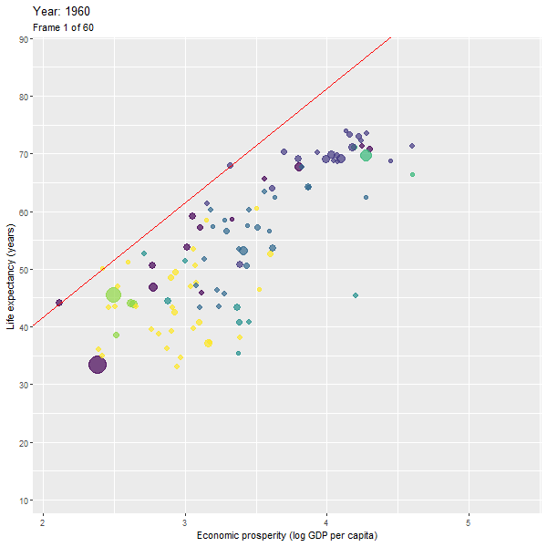
Figure 8.2: Animation with countries per year with the ceiling line in red.
Figure 8.2 is an animated figure showing the time trends. In the figure, each data point is a country. The size of a data point refers to the country’s population size, and the color to the geographic region to which it belongs, e.g., yellow for the Sub-Saharan region, and violet for East Asian and Pacific region.
The interpretation of time trends focuses on the change of necessity effect size, ceiling line intercept and ceiling line slope over time. Table 8.1 and Figure 8.3-top-left show the clear trend that necessity effect size reduces over time. This indicates that, over the years, Economic prosperity has become less of a bottleneck for high Life expectancy. Figures 8.3-top-right and 8.3-bottom show that this decrease of effect size is due to the increase of the intercept (upward moving ceiling line) and decrease of the slope (ceiling line flattens).


Figure 8.3: Time trends of NCA parameters for the necessity of Economic prosperity for Life expectancy. Top-Left: necessity effect size. Top-Right: ceiling intercept. Bottom: ceiling slope.
-Life_expectancy_(years)19601.png)
-Life_expectancy_(years)20231.png)
Figure 8.4: \(XY\)-plot of Economic prosperity and Life expectancy for 1960 (Left) and 2023 (Right).
NCA’s statistical difference test for paired observations (Section ??) shows that the 0.08 difference between the effect sizes of 1960 and 2023 (0.19 and 0.11, respectively) is statistically significant (\(p\) < 0.001).
In 1960 the maximum life expectancy for an Economic prosperity of 3 (\(10^3\) = 1000 equivalent US dollars) was about 60 years, and in 2023 it was about 75 years. In 2023 compared to 1960, the countries are more clustered near the ceiling, indicating that the difference in Life expectancy between countries diminished, but that a hard border of maximum possible Life expectancy for a given Economic prosperity level remains.
Socio-economic policy practitioners could make new interpretations from these necessity time-trends. For example, in the past, economic prosperity was a major bottleneck for high life expectancy. Currently, most countries are economically prosperous enough for having the possibility of a decent life expectancy of 75 years; if these countries do not reach that level of life expectancy, other factors than economic prosperity are the reason for it. If the trend continues, in the future Economic prosperity may not be a limiting factor for high Life expectancy, because the empty space in the upper-left corner disappears.
8.2.2.3 Time-lagged study
The observed empty space in the upper-left corner could also be the results of reverse causality. In reverse causality \(Y\) existed before \(X\). An empty space in the upper-left corner could then also indicate that a low level of \(Y\) is necessary for a low level of \(X\). This would mean that a low level of Life expectancy is necessary (\(Y\)) for a low level of Economic prosperity \(X\). When forward necessity makes sense, the argument for reverse causality is often weaker but cannot be excluded. With a time-lagged study, reverse causality is less likely when an empty space in the upper-left corner is observed while the \(X\)-score is obtained at time point (\(T_1\)) before the time point (\(T_2\)) of the \(Y\)-score. The lag should be long enough for \(Y\) to develop in the presence of \(X\) and other causal factors. For example, by using a 5-year time-lag the analysis with Economic prosperity in 2018 and Life expectancy in 2023 has a similar empty space in the upper-left corner (Figure 8.5).
-Life_expectancy_(years)2023.png)
Figure 8.5: \(XY\)-plot of Economic prosperity in 2018 and Life expectancy in 2023.
The differences between Figures 8.5 and 8.4-right are minor.
8.2.3 Case study
The case study investigates the phenomena in a small number of cases in their natural environment. Such a design is associated with a small-n qualitative study that allows a rich description of the phenomena. In such a study, relationships are often described in words rather than numerically.
NCA can be applied to a case study design in two ways. First, NCA’s methodology provides the causal logic to describe phenomena. Case studies are often used to explore complex causal relationships within specific contexts, and NCA complements this by introducing the idea that some factors may be necessary (but not sufficient) for an outcome to occur. In this way, NCA helps case investigators to move beyond traditional probabilistic sufficiency cause-effect explanations toward identifying the minimal requirements that must be present for a phenomenon to manifest.
Second, NCA’s data analytic method provides the tools to analyze qualitative data within or across cases. In multiple-case designs, coded evidence from interviews, documents, or observations can be transformed into ordinal or categorical indicators of conditions and outcomes. These can then be used as input scores for NCA to identify which conditions consistently act as enablers or bottlenecks across cases. The results can be interpreted to explain how and why these conditions function as necessary conditions.
If a necessity hypothesis already exists, the case study design can be used to test this hypothesis with the small number of cases. Case studies explicitly designed for testing necessity hypotheses are rare, but implicitly many studies do test such a hypothesis given the way the cases are selected (e.g., Fujita & Kusano, 2020; Harding et al., 2002, see Section 8.3.2 for more details). However, testing necessity hypothesis as part of an existing case study design, possibly originally aimed at exploration and theory building, offers a new opportunity for many qualitative studies (e.g., Novales et al., 2025).
When testing a necessity hypothesis with a small number of cases selected from the theoretical domain (deductive case study), a rich description of the context is not required, although it is not objectionable either. The only requirement is that the qualitative data can be scored into levels of the condition and the outcome (e.g., in terms of low, medium, high). Because necessity is independent of other variables, scoring the concepts \(X\) and \(Y\) is enough for testing the hypothesis. Given the small number of cases and their non-random selection, an estimation of \(p\)-values is not feasible. However, the reduced data requirements often allow the analyst to a dive deeper into the cases for better understanding the necessity mechanisms, or selecting more than a few cases, bringing the design closer to an observational study (Section 8.2.1). Case selection for testing necessity hypotheses is discussed in Section 8.3.
8.2.4 Experimental study
In an experimental study design, \(X\) is first manipulated and afterwards the effect on \(Y\) is observed, such that the required causal direction is ensured: first \(X\) then \(Y\). This excludes the possibility of reverse causality that \(Y\) occurs before \(X\) (Section 5.7). Whereas uncertainty about the causal direction could be handled with a time-lagged longitudinal study, where the condition is measured at \(T_1\) and the outcome at \(T_2\), such a study can only detect necessity if the outcome has developed during this time period. To have more control, the necessity experiment is an alternative approach for establishing the causal direction when the analyst is uncertain about reverse causality. With this goal in mind, the experiment is useful for testing a necessity hypothesis in the situation that reverse necessity is theoretically plausible.
The experimental setup for a necessity experiment differs from the traditional probabilistic sufficiency experiment is several ways. Whereas in a common experiment \(X\) is manipulated (increased) to produce the presence of \(Y\) on average, in a necessity experiment \(X\) is manipulated (decreased) to produce absence of \(Y\) (assuming a high-high hypothesis or more precisely: assuming that for a desired level of \(y = y_c\), \(x\) must be equal to or larger than \(x_c\)).
The necessity experiment starts with cases with high outcome (\(y ≥ y_c\)) and with high condition (\(y ≥ x_c\)), then the condition is removed or reduced (\(x < x_c\)), and it is observed if the outcome has disappeared or reduced (\(y < y_c\)). This contrasts the traditional “average treatment effect” experiment in which the research starts with cases with low outcome (\(y < y_c\)) and with low condition (\(x < x_c\)), then the condition is added or increased (\(x ≥ x_c\)), and it is observed if the outcome has appeared or increased (\(y ≥ y_c\)).
The necessity experiment is conducted as follows:
Obtain a representative sample from the population.
Check the expected empty corner.
Select the entire sample or part of it.
Divide this sample randomly into two groups (treatment and control group).
Remove (\(x \rightarrow 0\)) or reduce (\(x \rightarrow low\)) the condition in the treatment group.
Observe: (1) whether the effect size does not disappear; and (2) whether the outcome reduction in the treatment group is larger than the outcome reduction in the control group. If both are true, necessity is supported.
This necessity experiment ensures the causal direction (first \(X\), then \(Y\)). The randomization between groups ensures that the group constitutions are similar, and that possible time effects (effect of other disappearing necessary conditions) are controlled for. The possible disappearance/reduction of the outcome due to other necessary conditions happens in both groups; the treatment group must have more outcome disappearance/reduction than the control group.
Below several types of necessity experiments depending on whether \(X\) and \(Y\) are dichotomous or continuous are discussed.
8.2.4.1 Necessity experiment: dichotomous \(X\) and dichotomous \(Y\)

Figure 8.6: \(XY\)-table of the necessity experiment before (Left) and after (Right) manipulation. \(X\) = Condition (0 = no; 1 = yes). \(Y\) = Outcome (0 = no; 1 = yes). = control group. × = treatment group.
For dichotomous variables the experiment to evaluate a high-high necessity hypothesis the steps are conducted as follows:76
Obtain a representative sample from the population.
Observe that expected corner is empty (corner 1).
Select the cases of corner 2. The experiment is done with these cases. In Figure 8.6-left it is assumed that 100 cases are available for the experiment.
Randomly assign these cases into two groups:
- Treatment group (symbol ×).
- Control group (symbol ).
Apply the treatment:
- Treatment group: Remove the condition: \(x\rightarrow\) 0.
- Control group: Keep the condition: \(x = 1\).
Observe the outcome \(Y\) in both groups (Figure 8.6-right):
- Treatment group: number of cases that move to corner 1.
- Treatment group: number of cases that move to corner 3.
- Control group: number of cases that move to corner 4.
- Control group: number of cases that remain in corner 2.
If all treatment cases have moved from corner 2 to corner 3, but not to corner 1, and if not all control cases have moved from corner 2 to corner 4 (because another necessary condition disappeared during the manipulation) there is evidence that \(X\) is necessary for \(Y\). If treatment cases have moved from corner 2 to corner 1, this indicates that \(Y\) can occur without \(X\) and that \(X\) is not necessary for \(Y\). If control cases have moved from corner 2 to corner 4, this suggests that there is a time effect. This is not a problem for concluding that \(X\) is necessary for \(Y\) as long as not all control cases have moved to corner 4.77
8.2.4.2 Necessity experiment: dichotomous \(X\) and continuous \(Y\)
Figure 8.7 illustrates the situation when the condition is dichotomous and the outcome is continuous. Before the manipulation the condition is present (\(x\) = 1). The \(y\)-values include the maximum value of the outcome (\(y\) = 1). Necessity is supported when after the manipulation (\(x \rightarrow 0\)) the maximum value in the treatment group is reduced to a value of \(y = y_c\), resulting in an empty upper-left corner of the \(XY\)-plot. The necessary condition can be formulated as \(x = 1\) is necessary for \(y \geq y_c\). The necessity effect size is the empty area divided by the scope. In this example the effect size = 0.18.

Figure 8.7: \(XY\)-plot of the necessity experiment with a continuous outcome and a dichotomous condition before (Left) and after (Right) manipulation. \(X\) = Condition (0 = no, 1 = yes). Y = Outcome between 0 and 1. = control group. × = treatment group. \(y_c\) is the ceiling value of \(Y\) for \(x\) = 0.
8.2.4.3 Necessity experiment: continuous \(X\) and dichotomous \(Y\)
Figure 8.8 illustrates the situation when the condition is continuous and the outcome is dichotomous. Before the manipulation, the condition is present: \(x \geq x_{high}\), where \(x_{high}\) is a value above the presumed necessity level \(x = x_c\). The treatment reduces the value of \(X\) of all treatment cases. Some cases may end below \(x = x_{high}\) but above \(X = x_{c}\). Since the bottleneck value \(x_c\) is not reached, these cases have \(y\) = 1. Other treatment cases have new \(x\)-values below the necessity value \(x\) = \(x_c\). The latter group of cases will then end up in the lower-left corner with \(y = 0\). Necessity is supported when after manipulation no cases with \(Y = 1\) exist with \(x < x_c\). In other words, all cases with \(x < x_c\) should be located in the lower-left corner. The necessary condition can be formulated as \(x \geq x_c\) is necessary for \(y = 1\).

Figure 8.8: \(XY\)-plot of the necessity experiment with a continuous condition and a dichotomous outcome before (Left) and after (Right) manipulation. \(X\) = Condition (0 = no, 1 = yes). \(Y\) = Outcome between 0 and 1. = control group. × = treatment group. \(x_c\) is ceiling value of \(x\)-value for \(y\) = 1. \(x_{high}\) is the minimum \(x\)-value for selecting cases with \(y\) = 1.
8.2.4.4 Necessity experiment: continuous \(X\) and continuous \(Y\)
In a necessity experiment with a continuous condition and a continuous outcome, the starting point is the existence of an empty area in the upper-left corner of the \(XY\)-plot (Figure 8.9-left). The manipulation consists of reducing the level of the condition in the treatment group but not in the control group. Necessity is supported when after the manipulation no cases enter the empty zone. This is shown in Figure 8.9-right, where the necessity effect size before manipulation (0.25) stays intact after manipulation.

Figure 8.9: \(XY\)-plot of a necessity experiment with a continuous condition and outcome before (Left) and after (Right) manipulation (reducing \(X\)). Effect size remains after manipulation. = control group. × = treatment group.
However, when cases enter the empty zone, the necessity is reduced (smaller effect size) or rejected (no empty space). Figure 8.10-right shows an example of a reduction of the necessity effect size from 0.25 to 0.15.

Figure 8.10: \(XY\)-plot of a necessity experiment with continuous conditions and outcome before (Left) and after (Right) manipulation (reducing \(X\)). Effect size reduces after manipulation. = control group. × = treatment group.
Figure 8.11 displays an example of an experiment in which a necessity effect disappears after experimental manipulation. In such cases, the necessary condition should be rejected.

Figure 8.11: \(XY\)-plot of an experiment to challenge necessity with continuous condition and outcome before (Left) and after (Right) manipulation of reducing \(X\). Effect size disappears after manipulation. = control group. × = treatment group.
In situations with a poorly covered sample, before manipulation the necessary condition may not be visible as an empty space in the upper-left corner because only cases are selected where the conditions are satisfied. After manipulation, the new scope (empirical or theoretical) is extended and a hidden empty space becomes visible. (Figure 8.12).

Figure 8.12: \(XY\)-plot of a necessity experiment with a continuous condition and outcome before (Left) and after (Right) manipulation (reducing \(X\)). Effect size appears after manipulation. = control group. × = treatment group.
8.3 Sampling and selection of cases
After the choice of the type of study design, cases must be obtained from the theoretical domain where the necessity hypothesis is supposed to hold. The cases are used to test the hypothesis. In general it is a good strategy to select as many cases as possible. However, necessity theory may be broadly applicable in the theoretical domain consisting of many cases. If not all cases can be selected, a thoughtful selection must be done. NCA offers two types of case selection: large-n sampling for a quantitative study and small-n case selection for a qualitative study.
8.3.1 Large-n sampling
The goal of large-n sampling for a quantitative NCA study is to have a sample that is representative of a defined population from the theoretical domain. Usually, different populations where the cases have some relevant common characteristic (e.g., from the same country) could be selected. Since the theoretical domain may not be homogeneous, different populations could have different effect sizes, although the hypothesis claims that overall necessity exists for all cases. The selection of the population itself is not guided by statistical principles and can often be done for convenience. However, after the population is selected from the theoretical domain, random sampling of a large sample helps to ensure that the population is well-covered in the sample and that findings based on the sample can be statistically generalized to the population (inferential statistics). A possible approach to achieve this is to have a sampling frame (list of cases) of the population and to select cases randomly from this list. This ideal sampling approach contrasts with the more common approach of convenience sampling where cases are selected from the population for the analyst’s convenience, for example because the analyst has easy access to the cases. With such a sampling procedure, the sample may not be representative of the population, which can lead to biased effect size estimates and invalid \(p\)-values. The decision on the size of the sample depends on available resources and other practical factors. The minimum required sample size can be guided by the expected power of the study. Power refers to the minimum required sample size such that an existing relevant necessity effect size can be detected with high probability (Section 5.6).
8.3.2 Small-n case selection
It is possible to test a necessity hypothesis with a small number of cases, even with one case (e.g., Dul & Hak, 2008). In qualitative studies, usually a small number of cases is selected with a certain purpose in mind.78 For testing a necessity hypothesis, the purpose of sampling is to have cases where the outcome is present (\(Y = 1\)) or the condition is absent (\(X = 0\)). After selecting such cases, it is observed if the condition is present (\(X = 1\)) or the outcome is absent (\(Y = 0\)), respectively. If the condition is absent in cases where the outcome is present, or the outcome is present in cases where the condition is absent, the necessary condition hypothesis is rejected for these cases. This type of purposive sampling in small-n studies is possible with a deterministic view on necessity (no exceptions) and when the conditions and the outcome have dichotomous scores (e.g., absent/present, low/high). Since according to the hypothesis necessity applies to each single case in the theoretical domain, a single case can be selected for the test. If necessity is rejected in that single case, the deterministic version of the necessity hypothesis is rejected. However, support for necessity based on only one or a few cases is often not convincing for a conclusion about the entire theoretical domain. Other cases that falsify the necessary condition hypothesis may not have been selected. Following replication logic, the confidence in a hypothesis increases when more cases do not falsify the hypothesis.
Purposive selection of cases for testing a necessity hypothesis was used implicitly in a study by Fujita & Kusano (2020) of highly controversial visits by Japanese Prime Ministers (PM’s) to the Yasukuni Shrine. Three necessary conditions were expected: a conservative ruling party, a government enjoying high popularity, and Japan’s perception of a Chinese threat. They tested these hypotheses by selecting all five cases where the outcome was present (\(Y = 1\), PM’s who visited the shrine) from all 22 cabinets between 1986 and 2014. They found that the three conditions were present in all cases (\(X = 1\)) suggesting support for necessity, at least no rejection. Additionally, they selected the 17 cases where at least one potential necessary condition was absent (\(X = 0\)) and found that in these cases no visit occurred (\(Y = 0\)), giving further support for necessity.
In another small-n qualitative study, Harding et al. (2002) studied rampage school shootings in the USA. They first identified five potential necessary conditions: gun availability, cultural script (a model why the shooting solves a problem), perceived marginal social position, personal trauma, and failure of a social support system.79 Subsequently, they tested the necessary conditions with two cases of school shooting (\(Y = 1\)) and found support for necessity (non-rejection) because the five conditions were present in these cases (\(X = 1\)).
Note that this approach of selecting a small number of cases for testing a necessity hypothesis is used in Chapter 7 as part of thought experiments to evaluate a preliminary necessity hypothesis based on existing knowledge (Section 7.5.2).
8.3.3 Replication
Since the necessity hypothesis is assumed to hold for all cases in the entire theoretical domain and the samples or selected cases that are used for testing the hypothesis are only a subset of the theoretical domain, replication studies with other cases are needed. Replication is re-testing the hypothesis with new data (Köhler & Cortina, 2023). A single shot study is not conclusive about a hypothesis in the entire theoretical domain. A next study should select cases from other parts of the theoretical domain, i.e. other samples from the sample population and samples from other populations for large-n sampling, or other cases for small-n case selection. Although a hypothesis can never be proven correct, the confidence in its correctness increases if repeated tests with different samples/cases fail to falsify the hypothesis.
8.4 Measurement
After the cases are sampled/selected, the \(X\) and \(Y\) characteristics of each case must be measured. In NCA the scores are often numeric (numbers, quantitative data) but also words or letters (qualitative data) can be used to represent levels of concepts (e.g., high or low). The goal of measurement is to obtain valid and reliable scores of the concepts \(X\) (the conditions) and \(Y\) (the outcome) that are defined in the necessity hypothesis. Scores are valid when they represent the value of a concept (measuring what you want to measure) and reliable when they are consistent under identical circumstances.
8.4.1 Quantitative data
Quantitative data are data expressed by numbers where the numbers are scores (values or levels) with a meaningful order and meaningful distance. Scores can have two levels (dichotomous, e.g., 0 and 1 ), a finite number of levels (discrete, e.g., 1,2,3,4,5) or an infinite number of levels (continuous, e.g., 1.8, 9.546, 306.22).
NCA can be used with any type of quantitative data. It is possible that a single indicator represents an \(X\) or \(Y\) concept. Then this indicator score is used to score the concept. For example, in a questionnaire study where a subject or informant is asked to score conditions and outcomes with seven-point Likert scales, the scores are one of seven possible (discrete) scores.
It is also possible that a construct that is built from several indicators is used to represent the concept of interest. Separate indicator scores are then summed, averaged or otherwise combined (aggregated), for example for scoring a formative index. It is also possible to combine several indicator scores statistically, for example by using the factor scores resulting from factor analysis, or construct scores of latent variables resulting from a measurement model.
8.4.2 Qualitative data
Qualitative data are data expressed by names, letters or numbers without a quantitative meaning. For example, gender can be expressed with names (male, female, other), letters (m, f, o) or numbers (1, 2, 3). Qualitative data are discrete and usually have no order between the scores (e.g., names of people) or if there is an order, the distances between the scores are unspecified (e.g., low, medium, high). Although with qualitative data a quantitative NCA (with the NCA software for R) is not possible, it is still possible to apply NCA in a qualitative way using visual inspection of the \(XY\)-table or plot.
When \(X\) and \(Y\) of cases are scored qualitatively, for example \(X\) = A,B, or C, and \(Y\) = no or yes, the corresponding \(XY\)-table has 6 cells where a case has a position in one of the cells. The hypothesis may be that B is necessary for yes. The analyst can inspect which \(X\)-score can reach that \(Y\)-score. When the logical order of the condition is absent, the position of the empty space can be in any upper cell (left corner, middle or right; assuming the hypotheses that high \(X\) is necessary for high \(Y\)). When a logical order exists between the qualitative \(X\)-scores, the empty space is in the upper-left corner. In both cases the size of the empty space is arbitrary and no meaningful effect size can be calculated. However, when \(Y\) is quantitative, the distance between the highest observed \(Y\)-score and the next-highest observed \(Y\) score could be an indication of the constraint of \(X\) on \(Y\).
8.4.3 Set membership data
NCA can be used with set membership scores. This is often done when NCA is combined with QCA (Section 11.5). In QCA ‘raw’ variable scores are ‘calibrated’ into set membership scores with values between 0 and 1. A set membership score indicates to what extent a case belongs to the set of cases that have a given characteristic. In crisp set QCA the scores are dichotomous (0 or 1), and in fuzzy set QCA the scores are discrete or continuous between 0 and 1.
8.5 Dataset
After the measurements are done, the \(X\)- and \(Y\)-scores are integrated into a dataset. An appropriate format is having cases as rows and conditions and outcome as columns, where the first row (header) consists of the names of the conditions and outcome, and the first column the names of the cases.
Table 8.2 shows the dataset of the example used in Chapter 9 that is part of the NCA software.
| Individualism | Risk taking | Innovation performance | |
|---|---|---|---|
| Australia | 90 | 84 | 50.9 |
| Austria | 55 | 65 | 52.4 |
| Belgium | 75 | 41 | 75.1 |
| Canada | 80 | 87 | 81.4 |
| Czech Rep | 58 | 61 | 14.5 |
| Denmark | 74 | 112 | 116.3 |
| Finland | 63 | 76 | 173.1 |
| France | 71 | 49 | 77.6 |
| Germany | 67 | 70 | 109.5 |
| Greece | 35 | 23 | 12.0 |
| Hungary | 80 | 53 | 5.4 |
| Ireland | 70 | 100 | 62.3 |
| Italy | 76 | 60 | 19.7 |
| Japan | 46 | 43 | 171.6 |
| Mexico | 30 | 53 | 1.2 |
| Netherlands | 80 | 82 | 68.7 |
| New Zealand | 79 | 86 | 14.9 |
| Norway | 69 | 85 | 75.1 |
| Poland | 60 | 42 | 3.5 |
| Portugal | 27 | 31 | 11.1 |
| Slovak Rep | 52 | 84 | 3.5 |
| South Korea | 18 | 50 | 42.3 |
| Spain | 51 | 49 | 17.3 |
| Sweden | 71 | 106 | 184.9 |
| Switzerland | 68 | 77 | 149.7 |
| Turkey | 37 | 50 | 1.4 |
| UK | 89 | 100 | 79.4 |
| USA | 91 | 89 | 214.4 |
8.5.1 Archival data
NCA needs a dataset with \(X\)- and \(Y\)-values as input to empirically test the hypothesis that \(X\) is necessary for \(Y\). Often, new data on \(X\) and \(Y\) are gathered for conducting such a test. This requires a decision about the study design, the sampling/selection of cases, and the measurement of \(X\) and \(Y\). The quality of NCA depends on the quality of conducting these steps. However, it is also possible that an existing dataset is used. It may be that data on \(X\) and \(Y\) have already been tested for other purposes in previous studies. For example, a large number of datasets have been used with the goal of testing probabilistic sufficiency relationships (e.g., average effect of \(X\) on \(Y\) using regression analysis). If existing datasets contain \(X\)- and \(Y\)-scores of cases that are part of the theoretical domain, and if study design, sampling/case selection and measurement meet the quality criteria, the datasets from earlier studies may be useful for testing the necessity hypothesis. Given the trends toward open science, relevant datasets for testing necessity hypotheses are available, for example the World Bank dataset used in Section 8.2.2.When using archival data, the origins of the data should be evaluated and acknowledged, possible adaptations of \(X\)- and \(Y\)-scores should be justified and reported, and relevant earlier studies that use the same data should be evaluated and referenced to ensure accumulation of knowledge (Dul et al., 2024). In a multimethod study that combines NCA with other methods (Chapter 11), data that were collected for the other method may be re-used for NCA.
8.5.2 Data transformation
In quantitative (statistical) studies, data are often transformed before the actual analysis is done. For example, in machine learning, cluster analysis and multiple regression analysis, data are often standardized. The sample mean is subtracted from the original score and divided by the sample standard deviation to obtain the z-score: \(X_{new} = (X — X_{mean}) / SD\). This allows, for example, a comparison of the regression coefficients of the variables, independently of the variable scale. Min-max normalization is another type of data transformation: \(X_{new} = (X — X_{min}) / (X_{max} — X_{min})\). Such normalized variables have scores between 0 and 1. Transforming original scores into z-scores or min-max normalized scores are both examples of a linear transformation.
In principle, NCA does not need data transformation. The effect size is already normalized between 0 and 1 and allows comparison of effect sizes of different variables. Also, NCA does not make assumptions about the distribution of the data. Furthermore, interpretation of the results with original data is often easier than the interpretation of the results with transformed data as the original data may have a more direct meaning than the transformed data. If, nevertheless, the analyst wishes to transform data, a linear transformation (or in general an affine transformation) does not affect NCA’s estimation of the effect size or the \(p\)-value (Appendix D).
However a non-linear data transformation as is often done in quantitative (statistical) studies affects NCA’s estimation of effect size and \(p\)-value and is normally not acceptable for NCA. The transformation may change the cases that are used to establish the ceiling line, and this will affect the effect size. This can happen, for example, when data with a skewed distributed are log-transformed to obtain more normally distributed data. This is relevant when a statistical approach assumes normally distributed data, but this is not a requirement in NCA. Calibration in QCA is another example of a non-linear transformation. Original variable scores (‘raw scores’) are transformed into set membership scores, often using a logistic function (‘s-curve’). Calibration is needed in QCA as a set-theoretic method, but not in NCA, that can also handle raw scores.
Non-linear transformations should be avoided in NCA, unless there is a good reason for it. Such a good reason can be that a non-linear transformed original score is the valid representation of the concept of interest (\(X\) or \(Y\) in the necessity hypothesis). For example, the concept of a country’s economic prosperity may be expressed as the log-transformed GDP (Section 8.2.2.1). In QCA, the calibration process can justify the non-linear transformation of the original data. However, the general advice is to refrain from non-linear data transformation when the original data represent the concepts of interest, and only to transform data non-linearly when this is needed to validly capture the concept of interest.
9 Data analysis
9.1 Summary of this chapter
In the previous chapters, the formal hypothesis was developed (Chapter 7) and the dataset with scores of condition(s) \(X\) and outcome \(Y\) became available (Chapter 8). This chapter focuses on testing the hypothesis quantitatively by analyzing the data using the NCA software in R. First, the example that is used to illustrate the analysis is presented (Section 9.2). After the hypotheses are formulated, the steps for testing them with the data are: (1) Model specification (Section 9.3); (2) Selection of model evaluation criteria (Section 9.4); (3) Visual inspection of the \(XY\)-plot (Section 9.5); (4) Ceiling line estimation (Section 9.6); (5) Effect size and \(p\)-value estimation (Section 9.7); (6) Outlier analysis (Section 9.8); (7) Model fit metrics calculation (Section 9.9); (8) Necessity-in-kind decision (Section 9.10); (9) Bottleneck analysis for necessity-in-degree (Section 9.11); (10) Robustness checks to evaluate the sensitivity of the findings for choices made in steps (1), (2), and (6) (Section 9.12).
9.2 Illustrative example
In this chapter, the elements of NCA’s data analysis are illustrated with the example called nca.example that is part of the NCA software (Appendix B). Before any data analysis with NCA can start, a formal necessity hypothesis (Chapter 7) and an adequate dataset (Chapter 8) must be available.
The formal necessity hypothesis for the illustrative example is as follows:
Hypothesis: Individualism is necessary for Innovation performance (high-high).
Focal unit = Country.
Concept \(X\) = Individualism: the extent to which a country’s people feel independent, as opposed to being interdependent as members of larger wholes.
Concept \(Y\) = Innovation: the country’s transformation of knowledge into new products, processes, and services.
Theoretical domain = All countries in the world.
Causal explanation = (Summary) Enabler: In highly individualistic societies, individuals have greater freedom to experiment and propose disruptive ideas, which contributes to producing innovative products and services. Constraint: Without enough individualism, potential innovators lack the autonomy and psychological safety to transform ideas into innovations, such that high levels of a country’s innovation are not achievable. No substitute: R&D infrastructure, financial resources, or government policies or other known contributing factors to innovation cannot compensate for the absence of an individualistic mindset. Temporal aspects: Individualism must be present before innovation is possible, must stay present to maintain innovation and is needed in all time periods.
The example’s data consists of archival data (Section 8.5.1), collected from two different sources. Data on cultural dimensions were obtained from Hofstede (1980)’s country cultures study. The value for a country’s Risk taking was obtained by subtracting the country’s Uncertainty avoidance from 135. Data on Innovation performance are from a study by Gans & Stern (2003) on innovation differences between countries. Both studies are large-n observational studies. By combining the datasets, a convenience sample of 28 countries with information on the three variables was obtained. Scores for the cultural variables are aggregated questionnaire item scores (for details see Hofstede, 1980). Scores for Innovation performance equal the country’s innovation index (Gans & Stern, 2003). The data and how they were obtained have the following characteristics:
Study design = observational study.
Sampling = convenience sampling (two different sources); n = 28 countries.
Measurement = Individualism by questionnaires; Innovation performance by document analysis.
Dataset =
nca.example(part of theNCAsoftware forR).
9.3 Model specification
NCA’s model specification consists of specifying the bounding box and the ceiling line (Section 4.3).
9.3.1 Bounding box specification
NCA assumes that \(X\) and \(Y\) are bounded variables \((x_{min}, x_{max}, y_{min}, y_{max})\) (Section 4.3). The bounds define the bounding box where observations could be possible given the extreme values of \(X\) and \(Y\). Two types of bounding boxes can be distinguished.
The bounding box with a theoretical scope is defined by theoretical bounds of \(X\) and \(Y\).80 It may be that theoretical limits exist, such as for human body temperature \((27^\circ{C} \le T \le 44^\circ{C}\)). The theoretical bounds may be known or approximated (e.g., from previous empirical studies). It is also possible that \(X\) and \(Y\) are measured on scales with known minimum and maximum values, such as Likert scales or percentage scales.
The bounding box with an empirical scope is defined by the minimum and maximum values of \(X\) and \(Y\) that are observed (in the dataset). This option is often selected when theoretical bounds are unknown. It can also be selected to avoid overestimation of the effect size. In a situation where groups of similar cases are compared (e.g., measured at different time points in a longitudinal study), the observed minimum and maximum values of the pooled dataset may be selected as the theoretical scope of each single group for comparability (Section 8.2.2.2).
In the illustrative example, the empirical scope is selected. The scales used for collecting the data do not have minimum and maximum values and no strong theoretical rationale exists for selecting other extreme values for \(X\) and \(Y\) than those observed in the dataset.
9.3.2 Ceiling line specification
Specifying the ceiling line involves choosing the location (relative to an empty corner) and the form.
The location depends on the direction of the hypothesis (Section 3.5), which defines the expected empty corner. The proposed hypothesis of the illustrative example is a high-high hypothesis where presence/high value of \(X\) is necessary for presence/high value of \(Y\). Therefore, the expected empty corner is the upper-left corner of the \(XY\)-plot (corner 1).
Next to the location, also the form of the ceiling line needs to be specified (Sections 4.3.2 and 4.4). NCA assumes that the ceiling line is non-decreasing. A linear ceiling line (e.g., CR-FDH or C-LP) may be specified when the border between the area with and without cases is theoretically assumed to be linear, which is the most common assumption. The CR-FDH ceiling allows some noise above the ceiling such that the ceiling zone is not perfectly empty near the ceiling line (see model fit metric noise, Section 4.5.4). This line may be selected when noise exists in the data such as measurement error. The C-LP line may be selected when the data are obtained from high-quality measurement approaches, or are perfect as for example in simulated data. This line may also be selected to ensure that the linear ceiling line has no cases in the ceiling zone. The default CR-FDH ceiling is often selected when the condition and outcome have many levels (e.g., are continuous).
For modeling purposes, a linear ceiling line may be attractive (Sections 4.3.2.3 and 4.4.1.3). For a given bounding box, it requires only two parameters such as ceiling intercept and ceiling slope. These parameters may be theoretically decided (e.g., based on earlier data or other knowledge) or empirically estimated with the data. The latter is most commonly used.81 Although estimation of a ceiling line and effect size are not needed when the ceiling line and scope are predefined, the other steps of the data analysis are still relevant.
A segmented linear (non-decreasing) ceiling line (e.g., CE-FDH or CE-VRS) may be specified when the border is non-linear (but non-decreasing). The CE-FDH ceiling is a piecewise linear function where peers (dominant points) are connected by line segments (Sections 4.3.2.1 and 4.4.1.1). CE-FDH is a stepwise linear ceiling line that connects peers with horizontal and vertical line segments. The CE-VRS is a concave piecewise linear ceiling with linear segments that connect a selection of the CE-FDH peers such that the ceiling is concave (Sections 4.3.2.2 and 4.4.1.2). When estimated from data, both lines do not have points in the ceiling zone. CE-FDH may also be selected when the condition or outcome have few levels (e.g., are discrete) or when the ceiling line is irregular or non-linear. When the non-linearity is concave, the CE-VRS line may be an option. The default segmented ceiling line is CE-FDH.
For modeling purposes, a piecewise linear ceiling line may be attractive for an irregular border between feasible area and ceiling zone because it can better follow the non-linearity (though non-decreasing) of the border than a linear ceiling line. It is less attractive when the number of line segments is large. This requires a large number of parameters to specify the model, which makes the model complex (see the model fit metric complexity Section 4.5.1) and has the risk of overfitting (Section 9.9.1).
Analysts should critically reflect on the choice of ceiling line prior to conducting the analysis, and aim to select a ceiling line that is expected to best suit the study (Section 5.5). The most commonly used ceiling lines are the default lines CE-FDH for non-linear ceilings and discrete variables, and CR-FDH for linear ceilings and continuous variables.
In the illustrative example, the ceiling line is specified in two steps. Since the \(X\)- and \(Y\)-data are continuous and it is not expected a priori that the border is non-linear, the linear default ceiling line (CR-FDH) is provisionally selected. After exploration of outliers (Section 9.8 and model fit (Section 9.9), a better ceiling line may be selected (if available) to test the hypothesis.
9.4 Selection of evaluation criteria
NCA applies three main criteria for a binary decision to reject or non-reject (support) a necessary condition hypothesis: adequate theoretical support, a sufficiently large effect size, and a low \(p\)-value.82 For non-rejection all three criteria must be satisfied: theoretical support, a large effect size (\(d\)) and a small \(p\)-value (Section 6.2). If any of these criteria is not satisfied, the hypothesis is rejected. The first requirement can be satisfied if a formal necessity hypothesis is available that gives the required theoretical support. The process of developing a formal necessity hypothesis is discussed in Chapter 7.83 The other two criteria are discussed below.
9.4.1 Effect size threshold
Generally, the larger the effect size, the more practically relevant the necessary condition. For the binary decision about the hypothesis, a threshold level must be selected. Ideally, the selection is based on practical considerations: the minimum level of \(d\) that is considered relevant for practice. Since such a consideration may be difficult, analysts often select the arbitrary benchmark suggested in Dul (2016b): \(d\) = 0.10. However, in situations where a weak constraint can have significant consequences, a lower threshold level may be selected; when consequences are costly or critical, a higher threshold may be needed.
In the illustrative example, the selected effect size threshold is \(d\) = 0.10.
9.4.2 \(p\)-value threshold
The \(p\)-value is meant to reduce the risk of false positive conclusions: concluding that a non-existing necessary condition exists. A high \(p\)-value suggests that the observed data are compatible with the null of no relationship (Section 5.3). For this purpose, a threshold \(p\)-value (\(\alpha\)) is selected to evaluate if the observed effect size is statistically significant, meaning that the data are not compatible with the null hypothesis (the data may be compatible with an alternative hypothesis). The threshold \(p\)-value must be small enough to make it plausible that the observed effect size is not compatible with the situation of no effect between \(X\) and \(Y\). Often, \(\alpha\) = 0.05 is selected. For exploration, a higher threshold level (\(\alpha\) = 0.10) is sometimes applied. For claims of new discoveries, Benjamin et al. (2018) suggest using \(\alpha\) = 0.005.
In the illustrative example, the selected \(p\)-value threshold is \(\alpha\) = 0.05, which is commonly used.
9.4.3 Selection of target outcome
For the practical application of NCA results, it is (optionally) possible to specify the target outcome \(y_c\), which is a specific level of \(Y\) that is considered relevant for practical action. The model estimates the corresponding target condition level \(x_c\) that is necessary for achieving the target outcome. If necessity-in-kind (NiK) is supported and a bottleneck analysis of necessity-in-degree (NiD) is warranted (see below Sections 9.10 and 9.11), NCA identifies the condition target level required to make the desired target outcome possible. A bottleneck case is a case that does not satisfy the necessary level \(x_c\) for achieving the target level \(y_c\). Bottleneck cases may be the focus for practical action based on NCA results (Chapter 12).
If the outcome is desirable (e.g., performance), the target outcome is the minimum performance level that must be achieved. If the outcome is undesirable (e.g., disease), the target outcome is the maximum level of the condition below which the undesired target outcome will not occur. These “rules” apply to all cases.
In the illustrative example, the outcome is desired (innovation performance). The selected target outcome is “very good innovation performance”, defined as the level corresponding to the 90th percentile in the dataset, that is, being part of the top 10% performers.
9.5 Visual inspection of the \(XY\)-plot
After hypothesis formulation, data collection, model specification and selection of evaluation criteria, the starting point for NCA’s data analysis is a visual inspection of the \(XY\)-plot. This is a qualitative examination of the data pattern. By visual inspection the following questions can be answered:
- Is the expected corner of the \(XY\)-plot empty?
- Is the selected ceiling line appropriate (or if the ceiling line is not specified: what is an appropriate ceiling line)?
- Which cases are possibly outliers?
- What is the data pattern in the rest of plot?
An \(XY\)-plot for the illustrative example can be produced using the NCA software for R as follows:84
# Load the NCA package and the example
library(NCA)
data(nca.example)
# Run the NCA analysis
model <- nca_analysis(nca.example, 1, 3, ceilings = "cr_fdh")
nca_output(model, summaries = FALSE)With this code the \(XY\)-plot is displayed where \(X\) = Individualism and \(Y\) = Innovation performance. All 28 cases are shown as dots (Figure 9.1-left). The plot also shows the selected ceiling line (CR-FDH).85 Figure 9.1-right shows the same plot and now with annotations for the visual inspection.86
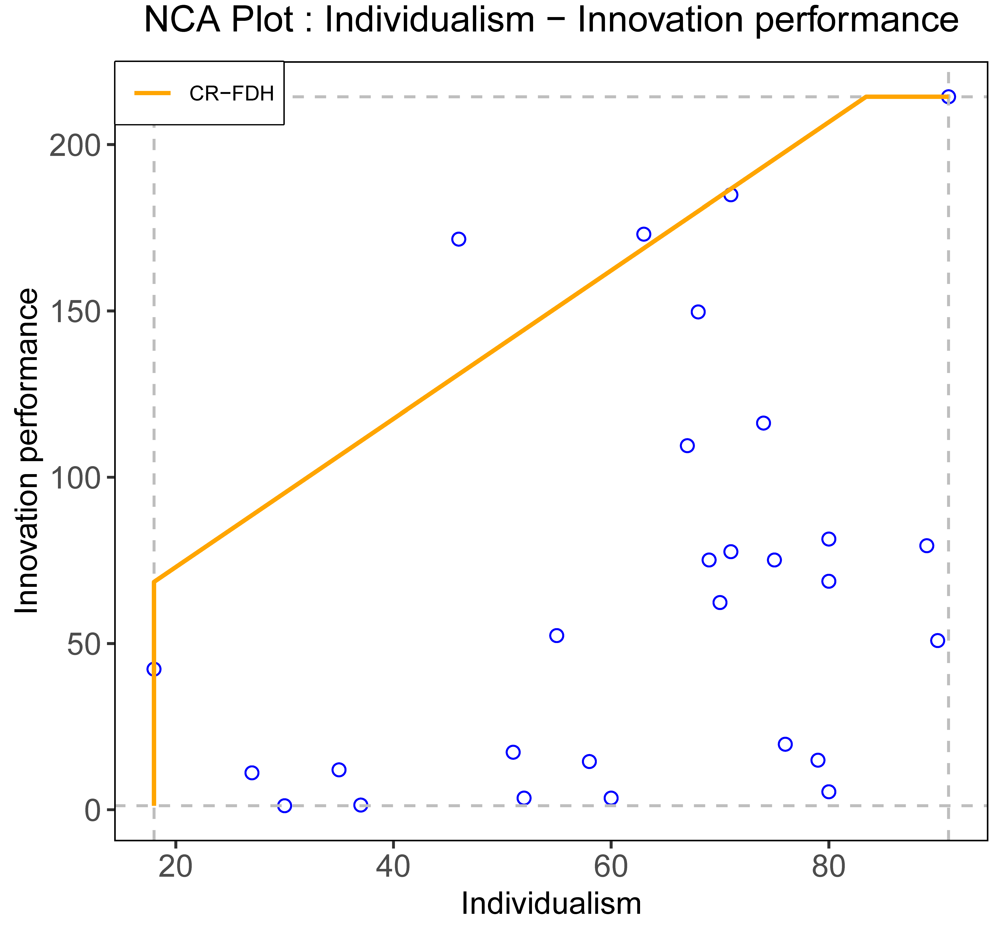
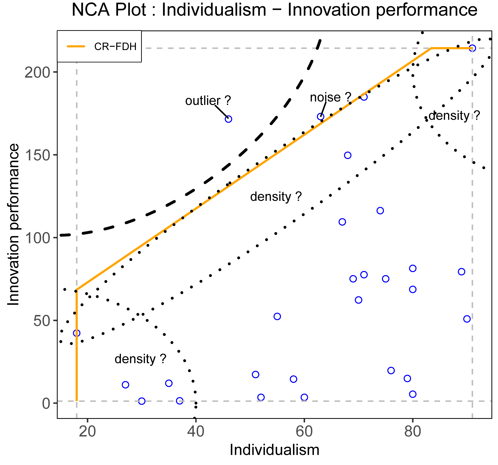
Figure 9.1: Visual inspection of the \(XY\)-plot of the illustrative example. Left: output from the NCA in R package. Right: same output with annotations.
9.5.1 Is the expected corner empty?
According to the hypothesis, a high level of \(X\) is necessary for a high level of \(Y\) such that the upper-left corner is expected to be empty. Figure 9.1 shows, generally, that cases with a low value of \(X\) have a low value of \(Y\), and that cases with a high value of \(Y\) have a high value of \(X\). The upper-left corner is indeed empty. A non-empty expected empty corner with cases near the geometrical corner would have indicated that the hypothesis should be rejected, unless only a few cases are located there without cases in the surrounding empty area; such cases could be outliers and would need further inspection. One case could be a candidate outlier, see below Section 9.5.3.
9.5.2 Is the selected ceiling line appropriate?
In the illustrative example the border is assumed to be linear, and the CR-FDH ceiling line is (provisionally) selected during the model specification. However, the \(XY\)-plot shows that the border is somewhat irregular. This suggests that representing the border by a linear ceiling may not be optimal, causing model fit issues. This will be evaluated in more detail using model fit metrics (Section 9.9).
9.5.3 Which cases are possible outliers?
Outliers are cases that are relatively ‘far away’ from other cases. NCA defines an outlier as a case that has a large influence on the effect size when removed (Section 9.8). This means that cases that help to produce the ceiling line (peers) and cases that define the empirical bounding box (observed minimum and maximum values of \(X\) and \(Y\)) are potential outliers. Isolated potential outliers may be identified by visual inspection of the \(XY\)-plot and may give rise to conducting a formal outlier analysis (Section 9.8).
In the illustrative example, one point is located in the apparent ceiling zone relatively far away from other points and from the ceiling line (Figure 9.1). This point is a candidate for being an outlier case, and an outlier analysis is therefore warranted. The other points in the ceiling zone (above the ceiling) also contradict strict necessity, but may not be considered an outlier but rather noise because the point is closer to other points and to the apparent ceiling line. Noise may, for example be due to measurement error, and can be captured with the model fit metric noise (Section 4.5.4).
9.5.4 What is the data pattern in the rest of plot?
Although NCA focuses on the analysis of the expected empty corner and the ceiling line, the distribution of cases in the rest of the \(XY\)-plot can also be informative for the credibility of necessity (Chapter 6). In particular, the density of cases near the ceiling line and density of cases in adjacent corners to the empty corner (upper-right and lower-left) may contain information that is relevant for necessity.
9.5.4.1 Density of cases near the ceiling line
Cases just below the ceiling line ‘support’ the ceiling line. With no or very few cases just below the ceiling line, the line may not be informative. The informativeness of the ceiling line is captured with NCA’s model fit metric called support (Section 4.5.5).87
The cases near the ceiling should not be clustered but preferably spread along the ceiling line. The spread of the ceiling line is captured with NCA’s model fit metric spread (Section 4.5.5). In the illustrative example, the cases near the ceiling line do not seem to be clustered and are reasonably spread.
Theoretically, the ceiling line represents a sharp border between the area with and the area without cases. This means that the densities just below and just above the ceiling should be different with considerably more cases just below the ceiling compared to just above the ceiling. This feature of the ceiling line is captured in NCA’s sharpness metric (Section 4.5.6).
In the illustrative example, few cases are present just below the ceiling and the densities just below and just above the ceiling are not very different, such that the ceiling is not a sharp border.
9.5.4.2 Density of cases in adjacent corners
The presence of many cases in the lower-left corner, and/or in the upper-right corner, may be supportive for the non-randomness of the necessary condition. If only a few cases are present in these corners, the emptiness of the upper-left corner could be a random effect. To mimic the null-distribution where \(X\) and \(Y\) are unrelated, NCA’s permutation test re-samples from the observed sample while shuffling labels of observations (see NCA’s null hypothesis test, Section 5.3.3). To challenge randomness, it is important that enough cases are in the upper-right or lower-left corners. If these cases do not exist, the \(p\)-value will be high, resulting in a rejection of the necessity hypothesis, despite the presence of an expected empty corner and possibly despite presence of a necessary condition in the population (false negative conclusion).
In the illustrative example, it appears that a reasonable fraction of cases is present in the lower-left corner, suggesting that the \(p\)-value may be small such that the necessity explanation of the observed empty corner is not rejected. Section 9.7 presents the formal evaluation of the effect size regarding statistical significance.
9.6 Ceiling line estimation
During model specification (or after visual inspection of the \(XY\)-plot) the location and form of the ceiling line are specified. When the specific ceiling parameters (Section 4.3.3) are not yet available (the most common situation) NCA estimates these parameters. For a linear ceiling line these are the intercept and the slope, for a segmented linear ceiling line these are the coordinates of the peers. For most types of ceiling lines (CE-FDH, CR-FDH, CE-VRS, CR-VRS, C-LP) this is done by first estimating the Free Disposal Hull (Section 4.4). The CE-FDH ceiling line corresponds to this line, whereas the other ceiling lines are derived from this line by using all or a selection of peers or otherwise based on the peers (C-LP) as explained in Section 4.3.2.
In the illustrative example, the CR-FDH ceiling line is selected (Figure 9.1-left), but without specifying its parameters (ceiling line intercept and ceiling line slope). The ceiling line parameters can be estimated with the NCA software for R as follows:
library(NCA)
data(nca.example)
# Run the NCA analysis with the specified ceiling line
model <- nca_analysis(nca.example, 1, 3, ceilings = "cr_fdh")
# Extract intercept & slope
Intercept <- nca_extract(model = model,
x = "Individualism",
ceiling = "cr_fdh",
param = "Intercept")
Slope <- nca_extract(model = model,
x = "Individualism",
ceiling = "cr_fdh",
param = "Slope")
# Print the ceiling line equation
cat(
"Ceiling line equation (CR-FDH): Y =",
round(Intercept, 3), "+",
round(Slope, 3), "* X", "\n"
)## Ceiling line equation (CR-FDH): Y = 28.353 + 2.23 * XThe estimated ceiling intercept is 28.353 and the estimated ceiling slope is 2.23.
9.7 Effect size and \(p\)-value estimation
The effect size (Section 4.4.1) can be calculated from the ceiling zone (Section 4.3.2) and the scope (Section 4.3). The ceiling zone is calculated from the (estimated) parameters of the ceiling line. The scope is calculated from the observed or theoretically determined minimum and maximum values of \(X\) and \(Y\). The effect size is the test statistic for NCA’s permutation test to estimate the \(p\)-value (Section 5.3).
For the illustrative example, the calculations and estimations can be done with the NCA software for R. The number of repetitions for obtaining the permutation distribution for estimating the \(p\)-value is set at 10,000. This number generally balances accuracy and computation time.
library(NCA)
data(nca.example)
# Run the NCA analysis with the specified ceiling line
# 10,000 repetitions for estimating the p-value
set.seed(123) # for reproducibility of the estimated p-value
model <- nca_analysis(nca.example, 1, 3,
ceilings = "cr_fdh",
test.rep = 10000)## Setting up parallelization, this might take a few seconds... Do test for : cr_fdh - IndividualismDone test for: cr_fdh - Individualism# Show the results
print(model) ##
## ---------------------------------------------------------------------------## Effect size(s):## cr_fdh p
## Individualism 0.31 0.168
## ---------------------------------------------------------------------------During the computation a message “Do test for: …” appears when the analysis is running, which changes into “Done” when the analysis is finished. The results show that the effect size \(d\) = 0.31, which is greater than the selected threshold level of \(d\) = 0.10. However, this result is not statistically significant given the estimated \(p\)-value of 0.165 for the selected threshold level of \(\alpha\) = 0.05. Therefore, the initial conclusion is that the hypothesis is rejected.88
9.8 Outlier analysis
Including or excluding outliers from a data analysis can change the results. This applies to any data analysis method, and also to NCA. In NCA, an outlier is an ‘influential’ case that has a large influence on the necessity effect size when removed.
9.8.1 Outlier types
Because the effect size is calculated by dividing a numerator (ceiling zone) by a denominator (scope), and an outlier is defined by its influence on this division (effect size), two types of outliers can exist in NCA: ceiling outliers and scope outliers.
A ceiling outlier is a case that helps to determine the position of the ceiling line and that largely changes the effect size if it is removed from the dataset. Since the peers determine the ceiling line, they are potential ceiling outliers. When a ceiling outlier is removed, it usually increases the ceiling zone and thus increases the necessity effect size. A scope outlier is a case that determines the empirical scope and that largely changes the effect size if it is removed. When a scope outlier is removed, it usually decreases the scope and thus increases the effect size. When a case is both a ceiling outlier and a scope outlier, it determines not only the position of the ceiling but also the size of the scope. When such a case is removed it simultaneously decreases the ceiling zone and the scope. The net effect is often a decrease of the necessity effect size.
Duplicate cases are cases with exactly the same \(X\)- and \(Y\)-values. They are possible when the variable scores are discrete, for example when measured with a Likert scale. When duplicate cases determine the ceiling line or scope, the effect size will not change when only one of the duplicates is removed. Therefore, single cases that have a duplicate have no influence on the effect size when removed, and cannot be outliers. A set of duplicate cases can be outliers and can be removed as a set. Cases that are below the ceiling line and have no extreme values of \(X\) or \(Y\) cannot be outliers.
9.8.2 Outlier identification
There are no scientific rules for deciding if a case is an outlier. The decision depends primarily on a judgment by the analyst. For a first impression of possible outliers, the analyst may visually inspect the \(XY\)-plot as discussed in Section 9.5.3. In the literature, rules of thumb are used for identifying outliers. For example, a variable score is an outlier score ‘if it deviates more than three standard deviations from the mean’, or ‘if 1.5 interquartile ranges is above the third quartile or below the first quartile’. These pragmatic rules address only one variable (\(X\) or \(Y\)) at a time. Such single variable rules of thumb may be used for identifying potential scope outliers (unusual minimum and maximum values of condition or outcome), but they are not suitable for the identification of potential ceiling outliers. The reason is that ceiling outliers depend on the combination of \(X\)- and \(Y\)-values. For example, a case with a non-extreme \(Y\)-value may be a regular case when it has a large \(X\)-value, because it does not define the ceiling. Then removing the case does not change the effect size. However, when \(X\) is small, the case may define the ceiling; removing the case may change the effect size considerably. This means that both \(X\) and \(Y\) must be considered when identifying ceiling outliers in NCA.
All potential ceiling outliers and potential scope outliers can be evaluated one by one by calculating the absolute and relative effect size changes when the case is removed (with replacement).
Such an outlier analysis can be done with the NCA software for R using the nca_outliers function. The output is a list of potential outliers, ranked by how much the effect size decreases when the outlier is removed.89 For the illustrative example, the outlier analysis can be done as follows:
library(NCA)
data(nca.example)
# Run the NCA outlier analysis
outliers <- nca_outliers (nca.example, 1, 3, ceiling = 'cr_fdh')
# Show the results
print(outliers) ## outliers eff.or eff.nw dif.abs dif.rel ceiling scope
## 1 Japan 0.31 0.44 0.13 44.0 X
## 2 USA 0.31 0.22 -0.08 -26.8 X X
## 3 South Korea 0.31 0.36 0.06 18.2 X X
## 4 Finland 0.31 0.31 0.00 1.4 X
## 5 Sweden 0.31 0.30 0.00 -0.6 X
## 6 Mexico 0.31 0.31 0.00 0.1 XThe table shows in the first column the case names of the potential outliers. The second column displays the original effect size when no cases are removed (eff.or) and the third column displays the new effect size when the outlier is removed (eff.nw). The fourth column shows the absolute difference (dif.abs) between the new and the original effect sizes, and the fifth column the relative difference (dif.rel) between the new and the original effect sizes expressed as a percentage. A negative sign means that the new effect size is smaller than the original effect size.
The output shows six potential outliers. The new effect sizes range from 0.22 to 0.44, absolute differences range from -0.08 to +0.13, and relative differences range from -26.8% to +44%. Three outliers are just ceiling outliers (Japan, Finland, Sweden), one is just a scope outlier (Mexico), and two cases are both ceiling and scope outlier (USA and South Korea). South Korea defines the ceiling line and the minimum \(X\) of the scope. USA defines the ceiling line and maximum \(X\) and maximum \(Y\) of the scope. Mexico does not define the ceiling line but defines the minimum \(Y\).
For an inspection of the cases in the \(XY\)-plot, the plotly = TRUE argument in the nca_outliers function can be used to display an interactive plot with highlighted potential outliers (the static version is shown in Figure 9.2).
library(NCA)
data(nca.example)
nca_outliers (nca.example, 1, 3, ceiling = 'cr_fdh' , plotly = TRUE) 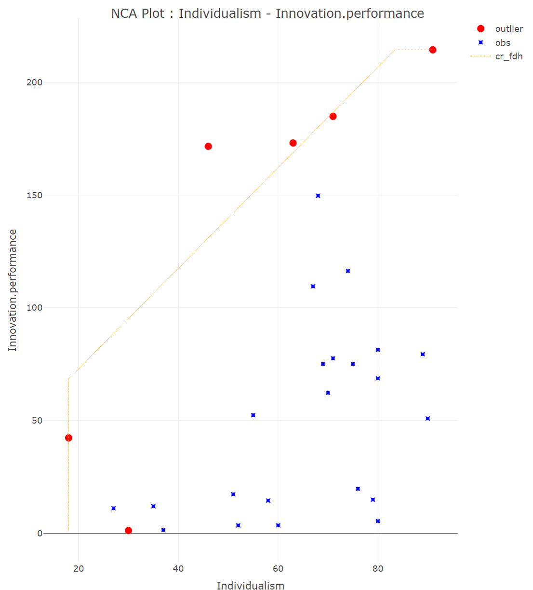
Figure 9.2: Plotly plot with potential ceiling and scope outliers distinguished from other observations.
From the three potential ceiling outliers that are not also a scope outlier (Japan, Finland, Sweden) are in the center of the plot (Figure 9.2), two cases increase the effect size when removed, and one decreases it. The relative effect size differences when cases are removed range from -0.6% to 44.0%. [In the software, small changes in effect size can be ignored. By default, combinations that change the effect size by less than 0.01 are left out.] The potential scope outlier that is not also a ceiling outlier (Mexico) increases the effect size when removed, but its influence is marginal. The two potential ceiling outliers that are also potential scope outliers, USA and South Korea, change the effect size when removed with relative effect size differences of -26.8% and 18.2%, respectively.
All other cases are no potential outliers because they have no influence on the effect size when removed. Note that after a potential outlier is removed and the effect size difference is calculated, the case is added again to the dataset before another potential outlier is evaluated (removing with replacement).
In the nca_outlier function it is also possible to evaluate two or more potential outliers at once by specifying \(k\) = number of potential outliers. This evaluates the change of effect size when \(k\) potential outliers are removed as a group (and replaced as a group). Evaluating multiple outliers is useful in the following situations:90
Existence of duplicate cases that are far from the other cases.
Existence of a cluster of cases that is far from the other cases.
Existence of multiple single cases that are not near each other, but far from the other cases.
Sometimes, removing more outliers does not lead to a larger change in effect size compared to removing just one or two of them. When the argument condensed = TRUE is used, these larger combinations are normally hidden from the results. However, a combination is still shown if it produces a larger effect size change than any other combination that does not include one of the cases in that combination. In other words, even with condensed = TRUE, a combination remains visible when it adds meaningful new information that cannot be explained by smaller or unrelated combinations.
The remaining combinations are sorted by how much they change the effect size (from largest to smallest). This is the absolute value of the difference between the original effect size and the new effect size. If several combinations cause the same change, smaller combinations are listed first. Only the top combinations are shown, up to the user-specified limit (default = 25).
For \(k\) > 2 the procedure repeats with a next round of identifying new outliers. In general, all possible \(\binom{n}{k} = \frac{n!}{k!(n-k)!}\) outlier combinations are evaluated, where \(k\) is the combination size and \(n\) is the total number of outliers found so far.
In the illustrative example, the results for \(k\) = 2 potential outliers is:
library(NCA)
data(nca.example)
outliers <- nca_outliers (nca.example, 1, 3, ceiling = 'cr_fdh', k = 2,
condensed = TRUE)
print(outliers)## outliers eff.or eff.nw dif.abs dif.rel ceiling scope
## 1 Japan - South Korea 0.31 0.51 0.20 65.6 X X
## 2 Japan - Finland 0.31 0.50 0.19 63.1 X
## 3 Japan - Sweden 0.31 0.47 0.16 52.0 X
## 4 Japan - Mexico 0.31 0.44 0.14 44.1 X X
## 5 Japan 0.31 0.44 0.13 44.0 X
## 6 USA - Sweden 0.31 0.19 -0.12 -39.4 X X
## 7 USA - Finland 0.31 0.22 -0.09 -28.7 X X
## 8 USA 0.31 0.22 -0.08 -26.8 X X
## 9 USA - Mexico 0.31 0.22 -0.08 -26.7 X X
## 10 South Korea - Finland 0.31 0.38 0.07 23.6 X X
## 11 Japan - USA 0.31 0.37 0.06 20.5 X X
## 12 South Korea - Sweden 0.31 0.37 0.06 19.7 X X
## 13 South Korea - Mexico 0.31 0.36 0.06 18.3 X X
## 14 South Korea 0.31 0.36 0.06 18.2 X X
## 15 Japan - Austria 0.31 0.36 0.05 17.0 X
## 16 South Korea - Portugal 0.31 0.35 0.05 15.0 X X
## 17 USA - South Korea 0.31 0.28 -0.03 -9.3 X X
## 18 South Korea - Greece 0.31 0.31 0.01 2.3 X X
## 19 Finland - Mexico 0.31 0.31 0.00 1.5 X X
## 20 Finland 0.31 0.31 0.00 1.4 X
## 21 Finland - Sweden 0.31 0.31 0.00 1.1 X
## 22 Sweden 0.31 0.30 0.00 -0.6 X
## 23 Sweden - Mexico 0.31 0.31 0.00 -0.5 X X
## 24 Mexico 0.31 0.31 0.00 0.1 X## # Not showing 33 possible outliersThe output shows 25 combinations of potential outliers with the largest influence on the effect size when a combination of two outliers or a single outlier is removed (see dif.abs and dif.rel for the absolute and relative differences, respectively). A potential outlier combination consists always of at least one single outlier. Removing Japan in combination with South Korea, Finland, Sweden or Mexico, increases the effect size change. When Japan is removed in combination with other countries, the change of the effect is less than when only Japan is removed.91
From the example it appears that Japan is the most serious potential single outlier.
9.8.3 Outlier decision approach
After potential outliers are identified, the next question is what to do with them. NCA suggests a two-step approach for making a decision about an outlier. In the first step, it is evaluated whether the outlier is caused by a sampling or case-selection error, or a measurement error. In the second step, it is decided if an ‘outlier for unknown reasons’ should be part of the phenomenon (using the deterministic perspective on necessity) or if it should be considered an exception.

Figure 9.3: Outlier decision tree for Step 1 of the outlier decision approach.
In the first step of NCA’s outlier decision approach, the potential outlier case is selected. Next, it is evaluated is the case is sampling or case selection error. This refers to a case not being part of the theoretical domain of the formal necessity hypothesis. For example, the case may be a large company, whereas the necessity theory applies to small companies only. An outlier case due to sampling or case selection error should be removed from further analysis. If the case is not an outlier because of sampling or selection error, it should be evaluated if the case may have measurement error. The condition or the outcome may have been incorrectly scored, which could happen for a variety of reasons. If the case has measurement error and this error can be corrected, the outlier case becomes a regular case and is kept for the analyses.
If the measurement error cannot be corrected, two situations may apply. If the measurement error occurs in the outcome score, the case should be removed from further analysis of all necessary conditions (if there are multiple necessary conditions). If the measurement error occurs in the condition score, the case should be removed from further analysis of that condition, but the analyst must decide to keep it or the remove it for the analysis of other conditions. This depends on the analyst’s judgement if the case is generally problematic, or only regarding the specific condition where it was identified as an outlier case (the case may not be an outlier case for other conditions).
If the outlier is not caused by sampling/selection error or measurement error or no information about sampling error or measurement error is available, the outlier may be considered an ‘outlier for unknown reasons’. The analyst may then decide to apply an outlier rule that is justifiable and convincing. A mechanistic outlier rule (e.g., based on percentages) to decide whether the case should be kept or removed is usually not desirable. Such rules are arbitrary but their consequences on the results are usually large. Therefore, applying a mechanistic outlier rule is generally not advised. If it is used anyway and outliers are removed mechanistically, it should be reported and justified, and a robustness check should be done comparing the results with and without applying the outlier rule (Section 9.12).
Note that concluding that necessity is rejected because of presence of outliers may be an important result. The condition may on average influence the outcome, but apparently it is not essential as cases exist that can compensate the absence or a low value of the condition. The outliers that reject necessity may be best or innovative cases that are able to achieve a desired outcome without or with a low level of the condition. If the outcome is undesirable, outlier cases may need different action to reduce the outcome than standard actions focused on the condition. In other words, outliers may be informative rather than being errors. Rejecting necessity due to outliers and discussing outliers may be a more valuable result than accepting necessity after removal of outliers. If no outlier rule is applied (the preferred approach), the potential outlier case is kept, and the next step of NCA’s outlier decision approach begins.

Figure 9.4: Outlier decision tree for Step 2 of the outlier decision approach.
The decision tree for the second step is illustrated in Figure 9.4. This picks up from the decision to keep the outlier case because the case has no known error, and no outlier rule is applied. To continue the analysis two perspectives are distinguished for necessity causality: the deterministic perspective, and the typicality perspective (Section 2.4.3 and Dul, 2024a). The deterministic perspective, in principle, does not allow points above the ceiling. However, some noise may be tolerated, namely when the case is close to the ceiling in the medium purity ceiling zone (Section 4.5.4). If this perspective is adopted the analysis continues with the outlier.
The typicality perspective, in principle, allows outlier cases that are further away from the ceiling, but only if they are rare. These outliers are called exceptions. Accepting the typicality perspective means accepting that the outlier is not an error but behaves differently than other cases with another (unknown) explanation than necessity. Thus, the typicality perspective can only be adopted if the case:
is a rare exception.
is (presumably) not an error.
is isolated and far from the ceiling (not noise).
behaves different than other cases for unknown reasons.
If the typicality perspective is adopted, the analysis continues without the outlier. because it does not represent the necessity phenomenon that is studied. It can however be studied separately because of the unusual characteristic. Since a case without an error is removed from the analysis, a robustness check should be done with and without the exception to change how it affects the results.
If the typicality perspective is not adopted, the analysis continues with the outlier.92
In general, the handling of outliers (keep or remove) relies on a series of decisions made by the analyst. It is advised to perform robustness checks to evaluate the sensitivity of the results to specific outlier decisions and to report the results (Section 9.12).
In the illustrative example, the outlier approach is applied as follows. The case Japan is the only potential outlier to be considered. The first step of the outlier decision approach (Figure 9.3) is the evaluation of whether Japan could be an outlier case because of sampling/selection error. The theoretical domain of the hypothesis was defined as “all countries in the world” (Section 9.2). Japan is one of these countries, so sampling/selection error does not apply.
Next, the question is whether Japan’s scores for \(X\) and/or \(Y\) could have measurement error. This seems unlikely as these scores are obtained from a reputable archival dataset that has been widely used elsewhere, and discussions of measurement error specifically for Japan have not emerged before. The next consideration is to apply an outlier rule for Japan.
Since a mechanistic outlier rule is not preferred, and Japan is a ceiling outlier for which no generally accepted outlier rules are available, the result of the first step of the outlier decision approach is to keep Japan as outlier case for further consideration.
In the second step of the outlier approach (Figure 9.4) it is decided to consider Japan as an exception for unknown reasons. One speculation may be that Japan’s high level of innovation is focused more on incremental innovation of systems than on disruptive start-up style of innovation based on high-risk and high failure entrepreneurship of individuals. Despite the relatively small number of cases in the dataset (28) the illustrative example considers Japan a rare exception. This means that the full analysis must be re-done to obtain an estimate of the main necessity effect without Japan, and that Japan is considered an exception, to be discussed separately in the report. Additionally, a robustness check in which the results with and without the exception should be conducted and reported.
In the following analysis, Japan is removed from the nca.example dataset, followed by re-doing the data analysis:
library(NCA)
data(nca.example)
nca.exampleN <- nca.example[-14,] #exclude Japan
set.seed(123) # for replicability of estimated p-value
modelN <- nca_analysis(nca.exampleN, 1,3,
ceilings = 'cr_fdh',
test.rep = 10000)## Setting up parallelization, this might take a few seconds... Do test for : cr_fdh - IndividualismDone test for: cr_fdh - IndividualismmodelN##
## ---------------------------------------------------------------------------## Effect size(s):## cr_fdh p
## Individualism 0.44 0.025
## ---------------------------------------------------------------------------The result show that the effect size \(d\) = 0.44 and the \(p\)-value = 0.023. Both values meet the selected threshold levels of \(d\) = 0.10 and \(\alpha\) = 0.05 such that the necessity hypothesis is not rejected (see however Section 9.9 about model fit and Section 9.12 about robustness checks).
To compare the results with and without the exceptions, it is possible to extract the \(XY\)-plot of this analysis that is done without the exception, and then to add the exception back to show its original position, and to include the original ceiling line as well using the following script.
library(NCA)
library(ggplot2)
data(nca.example)
# Coordinates of the exception
x <- nca.example["Japan", "Individualism"]
y <- nca.example["Japan", "Innovation performance"]
# Intercept and slope of original ceiling line
model <- nca_analysis(nca.example, 1, 3, ceilings = "cr_fdh")
model
a <- nca_extract(model, x = "Individualism",
ceiling = "cr_fdh",
param = "Intercept")
b <- nca_extract(model, x = "Individualism",
ceiling = "cr_fdh",
param = "Slope")
#2 NCA without exception
modelN <- nca_analysis(
nca.example[row.names(nca.example) != "Japan", ], 1, 3,
ceilings = "cr_fdh", custom = c(a,b) )
modelN
# XY plot for comparison
out <- nca_output(modelN, plots = TRUE, summaries = FALSE)
p <- out$plots[["Individualism"]] +
geom_point(aes(x = x, y = y), shape = 1, colour = "blue") +
geom_point(aes(x = x, y = y), shape = 4, colour = "red",
size = 2, stroke = 1.2)
print(p)
Figure 9.5: \(XY\)-plot of illustrative example with one exception (crossed out). Solid line: ceiling line after removal of the exception. Dashed line: ceiling line before removal of the exception.
Figure 9.5 shows the \(XY\)-plot with the outlier case, the original ceiling line and the new ceiling line. The above procedures are for one outlier at a time. The judgment becomes more complex when the analyst considers removing more than one outlier one by one or at the same time. For example, after removing the first outlier, a case that was originally not part of the first set of single potential outliers, may be identified as a new potential outlier, etc. Generally, removing outliers is not advised unless the analyst has very good reasons for it.
9.9 Model fit
In Chapter 4, specific model fit metrics for NCA were introduced to evaluate how well the chosen necessity model (bounding box and ceiling line) represents the necessity relationship suggested by the data. Since NCA’s model is mathematical and not statistical (no error term), common statistical model fit metrics such as R\(^2\) or likelihood-based fit metrics are not applicable. To illustrate the use of NCA’s model fit metrics, they are applied to the illustrative example. In the NCA software for R, the values of the model fit metrics can be obtained using summaries = TRUE in the nca_output function as follows:
library(NCA)
data(nca.example)
nca.exampleN <- nca.example[-14,] #exclude Japan
set.seed(123) # for replicability of estimated p-value
modelN <- nca_analysis(nca.exampleN, 1,3,
ceilings = 'cr_fdh',
test.rep = 10000)## Setting up parallelization, this might take a few seconds... Do test for : cr_fdh - IndividualismDone test for: cr_fdh - Individualismnca_output(modelN, plots = FALSE, summaries = TRUE)##
## ---------------------------------------------------------------------------## ---------------------------------------------------------------------------
##
## Number of observations 27
## Scope 15563.6
## Xmin 18.0
## Xmax 91.0
## Ymin 1.2
## Ymax 214.4
##
## cr_fdh
## Ceiling zone 6872.010
## Effect size 0.442
## # above 3
## Slope 2.580
## Intercept -20.338
## p-value 0.025
## p-accuracy 0.003
##
## Complexity 1
## Fit 80.1%
## Ceiling accuracy 88.9% (24)
## Noise 0 % (0)
## Exceptions 0 % (0)
## Support 25.9% (7)
## Spread 0.37
## Sharpness 1.00
##
## Abs. ineff. 1819.580
## Rel. ineff. 11.691
## Condition ineff. 0.014
## Outcome ineff. 11.6799.9.1 Complexity
Complexity refers to the ceiling degrees of freedom. Linear ceiling lines (C-LP, CR-FDH, CR-VRS) have fixed, low complexity (\(cp = 1\)), whereas segmented lines, such as CE-FDH (stepwise linear) and CE-VRS (concave linear) have higher complexity which depends on the number of peers that define the ceiling. Complexity is a model fit metric that needs to be balanced between a low score for good generalizability but possibly poor boundary fit, and a high score for good boundary fit but poor generalizability and greater susceptibility to small measurement errors (i.e., risk of overfitting).
For the illustrative example, the complexity is 1 because the selected ceiling line is a linear ceiling line (CR-FDH).
9.9.2 Fit
As discussed in Section 4.5.2, fit is the percent closeness of a chosen ceiling line’s effect size to the CE-FDH benchmark (100%), expressed as a percentage. This metric indicates how well a ceiling line follows the data border. Low values (e.g., < 80%) suggest poor fit with the irregularity of the boundary.
For the illustrative example, the fit is 80.1%.
9.9.3 Ceiling accuracy
Ceiling accuracy refers to the number of points on or below the ceiling line (Section 4.5.3). High ceiling accuracy means the ceiling line correctly separates the ceiling zone from the feasible area. If there are no points above the ceiling, the ceiling accuracy is 100%. A ceiling accuracy below for example 95% suggests that too many cases exist above the ceiling, and that the ceiling line may be too low.
In the illustrative example, the ceiling accuracy is 88.9%.
9.9.4 Noise
As discussed in Section 4.5.4, noise refers to points just above the ceiling that violate strict necessity. The medium-purity zone is the area of tolerable noise if the percentage of points is low, for example < 5%.
Figure 9.6 shows the NCA ribbon in the \(XY\)-plot of the illustrative example. The upper part of the ribbon represents iso-purity = 0.9. It shows that three points are in the medium-purity zone. With N = 27 this implies that noise is 11.1%.

Figure 9.6: The NCA ribbon in the \(XY\)-plot of the illustrative example (without outlier) with the preliminary CR-FDH ceiling line. Upper dotted line: iso-purity = 0.9. Lower dotted line: iso-solidity = 0.8.
9.9.5 Exceptions
Section 4.5.4 discusses the role of exceptions in NCA. An exception is a rare case that seriously violates necessity. Exceptions are located in the low-purity zone that is far from the ceiling. No points are allowed in the low-purity zone for deterministic necessity. If a rare point is in the low-purity zone it could be an exception that behaves differently than the entire group and needs to be discussed separately. Figure 9.6 shows that in the illustrative example there are no points in the low-purity zone, suggesting that there are no exceptions. The case (Japan) that was classified as exception in the outlier analysis is removed from the dataset. This choice is evaluated in the robustness check below (Section 9.12).
9.9.6 Support
Support Quantifies how strongly the data in the feasible area support the ceiling line (Section 4.5.5). The points on the ceiling line and in the medium-solidity zone serve this purpose. For good support, at least for example 5% of cases in the feasible area should be located on or near the ceiling line in the medium-solidity zone.
In the illustrative example, one point is on the ceiling line and three points are below it in de medium-solidity zone. This implies that (14.8%) is in on the ceiling line or in the medium-solidity zone (Support = 14.8%).
9.9.7 Spread
As discussed in Section 4.5.5, spread Quantifies the extent to which observations in the feasible area near the ceiling are dispersed, rather than clustered along the ceiling line. Spread is 1 if all points are spaced uniformly, and is close to 0 if the points are clustered. A spread value of for example > 0.5 may be adequate.
In the illustrative example, the spread is 0.42.
9.9.9 Evaluation of model fit
In summary, the model fit parameters with the CR-FDH ceiling line are:
\[ \begin{aligned} \textit{Complexity} & = 1 \\ \textit{Fit} & = 80.1\% \\ \textit{Ceiling accuracy} & = 88.9\% \\ \textit{Noise} & = 11.1\% \\ \textit{Exceptions} & = 0 \\ \textit{Support} & = 14.8\% \\ \textit{Spread} & = 0.42 \\ \textit{Sharpness} & = 0.50 \end{aligned} \]
In all, the model fit of the illustrative example suggests that, although necessity is not rejected based on the effect size and the \(p\)-value (and the availability of theoretical support), its support from the perspective of model fit is not strong. Although after removing Japan, no further outliers exist in the low-purity zone of the ceiling zone, relatively many points are just above the ceiling in the medium-purity zone, as indicated by the metrics ceiling accuracy (too low) and noise (too high). Also, the ceiling line does not provide a clear separation between feasible area and ceiling zone, as indicated by the sharpness metric (too low). This suggests that an alternative linear ceiling line that is placed somewhat higher would give a better model fit. The C-LP ceiling line could be a candidate (Section 4.4). Therefore, the provisional model specification using the default CR-FDH ceiling line may be replaced by a model with a C-LP ceiling line to improve model fit.
## Setting up parallelization, this might take a few seconds... Do test for : c_lp - IndividualismDone test for: c_lp - Individualismlibrary(NCA)
data(nca.example)
nca.exampleN <- nca.example[-14,]
set.seed(123)
modelFINAL <- nca_analysis(nca.exampleN, 1,3,
ceilings = 'c_lp',
test.rep =10000)## Setting up parallelization, this might take a few seconds... Do test for : c_lp - IndividualismDone test for: c_lp - Individualismnca_output(modelFINAL, summaries = TRUE)##
## ---------------------------------------------------------------------------## ---------------------------------------------------------------------------
##
## Number of observations 27
## Scope 15563.6
## Xmin 18.0
## Xmax 91.0
## Ymin 1.2
## Ymax 214.4
##
## c_lp
## Ceiling zone 5094.910
## Effect size 0.327
## # above 0
## Slope 2.907
## Intercept -10.020
## p-value 0.034
## p-accuracy 0.004
##
## Complexity 1
## Fit 59.4%
## Ceiling accuracy 100 %
## Noise 0 % (0)
## Exceptions 0 % (0)
## Support 18.5% (5)
## Spread 0.41
## Sharpness 1.00
##
## Abs. ineff. 5373.780
## Rel. ineff. 34.528
## Condition ineff. 18.892
## Outcome ineff. 19.278Figure 9.7 shows the \(XY\)-plot with the C-LP ceiling line.

Figure 9.7: \(XY\)-plot of final results of illustrative example without exception and with the C-LP ceiling line.
The results show that the effect size \(d\) = 0.33 is greater than the selected threshold level of \(d\) = 0.10 and is statistically significant given the estimated \(p\)-value of 0.033 and selected threshold level of \(p\) = 0.05. Therefore, the initial conclusion that the hypothesis is supported remains.
Figure 9.8 shows the C-LP ceiling line with the NCA ribbon.

Figure 9.8: The NCA ribbon in the \(XY\)-plot of the illustrative example (without outlier) with the final C-LP ceiling line. Upper dotted line: iso-purity = 0.9. Lower dotted line: iso-solidity = 0.8.
The new model fit parameters are for the C-LP ceiling line are (old values between parentheses):
\[ \begin{aligned} \textit{Complexity} & = 1 (1) \\ \textit{Fit} & = 59.4\% (80.1\%) \\ \textit{Ceiling accuracy} & = 100\% (88.9\%) \\ \textit{Noise} & = 0\% (11.1\%) \\ \textit{Exceptions} & = 0 (0) \\ \textit{Support} & = 18.5\% (14.8\%) \\ \textit{Spread} & = 0.41 (0.42) \\ \textit{Sharpness} & = 1.00 (0.50) \end{aligned} \]
All but one model fit metrics are the same or have improved. The fit metric has decreased to 59.4%. This indicates that the C-LP line poorly fits the irregular form of the border between the feasible area and the empty space.
The example shows that assessing and achieving model fit is an act of balancing between several indicators of fit, and that it is unlikely that all indicators will reach an optimal level. The analyst must make certain choices that should be justified and reported for transparency.
In the illustrative example the analysis with the C-LP model is selected to evaluate the hypothesis.
9.10 Conclusion about necessity-in-kind
After the analysis, a binary conclusion can be made about the hypothesis. The hypothesis is supported (not rejected) if the observed effect size is equal to or above the effect size threshold, and the \(p\)-value is below the \(p\)-value threshold, and there is theoretical support (the formal hypothesis). The hypothesis is rejected if the observed effect size is below the effect size threshold, or the \(p\)-value is equal to or above the \(p\)-value threshold, or there is no theoretical support (no formal hypothesis).
Given these choices made for the illustrative example, the hypothesis is supported because there is:
- theoretical support (Section 9.2);
- practical significance: the effect size \(d\) = 0.33 is at least \(d\) = 0.10;
- statistical significance: the \(p\)-value \(p\) = 0.032 is less than \(p\) = 0.05.
9.11 Bottleneck analysis: necessity-in-degree
For additional insights, a supported necessary condition in kind can also be formulated quantitatively as a necessary condition in degree: level \(x\) of \(X\) is necessary for level \(y\) of \(Y\).
In the illustrative example a target outcome corresponding to 90th percentile was selected: a performance level that is so high that it can only be achieved by 10 percent of the cases.
The target condition that is required for the target outcome can be directly observed from the \(XY\)-plot in which the ceiling line and the target outcome are drawn. Figure 9.9 shows the target outcome level for the illustrative example as a horizontal line \(y\) = 159.0, which corresponds to the selected 90th percentile level. This line intersects with the ceiling line at point \(x\) = 58.17.93

Figure 9.9: The final \(XY\)-plot of the illustrative example showing the target outcome for the 90th percentile and the corresponding required target level of the condition.
The bottleneck table is a helpful tool for evaluating necessary conditions in degree for any target level of the outcome. The bottleneck table is the tabular representation of the ceiling line, in which the first column represents the outcome and the next columns represent the necessary conditions. The values in the first column are the levels of \(Y\), and the values in the next columns are the levels of \(X\), corresponding to the ceiling line. By reading the bottleneck table row by row from left to right, the required threshold level(s) of the condition(s) \(X\) for a particular level of \(Y\) can be evaluated.
The bottleneck table can be produced with the NCA software using the argument bottlenecks = 'TRUE' in the nca_output function. For the illustrative example the bottleneck table can be produced as follows:
library(NCA)
data(nca.example)
nca.exampleN <- nca.example[-14,]
modelFINAL <- nca_analysis(nca.exampleN, 1,3, ceilings = 'c_lp')
nca_output (modelFINAL, summaries = FALSE, plots = FALSE,
bottlenecks = TRUE)##
## ---------------------------------------------------------------------------## Bottleneck C-LP (cutoff = 0)## Y Innovation performance (percentage.range)## 1 Individualism (percentage.range)## ---------------------------------------------------------------------------
## Y 1
## 0 NN
## 10 NN
## 20 0.7
## 30 10.8
## 40 20.8
## 50 30.9
## 60 40.9
## 70 51.0
## 80 61.0
## 90 71.1
## 100 81.1## In the default bottleneck table, the values of the outcome and the condition are expressed as ‘percentage range’ with 11 levels between 0% and 100%, corresponding to steps of 10%. The ‘percentage range’ format of the bottleneck table means that the values of \(X\) and \(Y\) are linearly transformed by min-max normalization (with 0% and 100% bounds) to obtain values between 0 and 100 percent. 0% corresponds to the minimum value, 100% to the maximum value, and 50% to the mid-value between these two extremes. This transformation facilitates the comparison of \(X\)- and \(Y\)-values within and between studies. However, as illustrated below, other formats to represent \(X\) and \(Y\) may be more informative for a specific study.
The bottleneck table of the illustrative example shows that up to target outcome of 20%, \(X\) is not necessary for \(Y\) (‘NN’). For higher levels of the target outcome, \(X\) is necessary. For a target outcome of 50%, at least \(x\) = 30.9% is needed, and for 90%, at least \(x\) = 71.1% is needed.
To obtain a more detailed picture, the size of the steps can be adjusted, for example to 5 using the step.size argument in the nca_analysis function:
library(NCA)
data(nca.example)
nca.exampleN <- nca.example[-14,]
modelFINAL <- nca_analysis(nca.exampleN, 1,3, ceilings = 'c_lp',
step.size = 5)
nca_output (modelFINAL, summaries = FALSE, plots = FALSE,
bottlenecks = TRUE)##
## ---------------------------------------------------------------------------## Bottleneck C-LP (cutoff = 0)## Y Innovation performance (percentage.range)## 1 Individualism (percentage.range)## ---------------------------------------------------------------------------
## Y 1
## 0 NN
## 5 NN
## 10 NN
## 15 NN
## 20 0.7
## 25 5.7
## 30 10.8
## 35 15.8
## 40 20.8
## 45 25.8
## 50 30.9
## 55 35.9
## 60 40.9
## 65 45.9
## 70 51.0
## 75 56.0
## 80 61.0
## 85 66.0
## 90 71.1
## 95 76.1
## 100 81.1## 9.11.1 Levels expressed as actual values
The levels of \(X\) and \(Y\) in the bottleneck table can also be expressed as actual values. Actual values are the values of \(X\) and \(Y\) as they are in the original dataset (and in the \(XY\)-plot). This way of expressing the levels can help to compare the bottleneck table results with the original data and with the \(XY\)-plot results. Expressing the levels of \(X\) with actual values can be done with the argument bottleneck.x = 'actual' in the nca_analysis function, and the actual values of \(Y\) can be shown in the bottleneck table with the argument bottleneck.y = 'actual' as follows:
library(NCA)
data(nca.example)
nca.exampleN <- nca.example[-14,]
modelFINAL <- nca_analysis(nca.exampleN, 1,3, ceilings = 'c_lp',
bottleneck.y = "actual",
bottleneck.x = "actual")
nca_output (modelFINAL, plots = FALSE, summaries = FALSE,
bottlenecks = TRUE)##
## ---------------------------------------------------------------------------## Bottleneck C-LP (cutoff = 0)## Y Innovation performance (actual)## 1 Individualism (actual)## ---------------------------------------------------------------------------
## Y 1
## 1.20 NN
## 22.52 NN
## 43.84 18.530
## 65.16 25.865
## 86.48 33.200
## 107.80 40.534
## 129.12 47.869
## 150.44 55.204
## 171.76 62.539
## 193.08 69.874
## 214.40 77.209## While the default number of steps remains the same, the scores in which \(X\) and \(Y\) are expressed has been changed to actual values.
For practical purposes, specific values for \(Y\) can be selected, for example, values that correspond to the scale for scoring \(Y\), or specific target values of interest. The steps argument in the nca_analysis function can be used for this purpose. For the illustrative example, the step values may correspond to for example the minimum and maximum \(Y\)-values and multiples of 10, as follows:
library(NCA)
data(nca.example)
nca.exampleN <- nca.example[-14,]
min_y <- min(nca.exampleN$`Innovation performance`)
max_y <- max(nca.exampleN$`Innovation performance`)
modelFINAL <- nca_analysis(nca.exampleN, 1,3, ceilings = 'c_lp',
bottleneck.y = "actual",
bottleneck.x = "actual",
steps = c(min_y, seq(10, 210, by = 10),max_y))
nca_output (modelFINAL, plots = FALSE, summaries = FALSE,
bottlenecks = TRUE)##
## ---------------------------------------------------------------------------## Bottleneck C-LP (cutoff = 0)## Y Innovation performance (actual)## 1 Individualism (actual)## ---------------------------------------------------------------------------
## Y 1
## 1.2 NN
## 10.0 NN
## 20.0 NN
## 30.0 NN
## 40.0 NN
## 50.0 20.649
## 60.0 24.089
## 70.0 27.530
## 80.0 30.970
## 90.0 34.411
## 100.0 37.851
## 110.0 41.291
## 120.0 44.732
## 130.0 48.172
## 140.0 51.612
## 150.0 55.053
## 160.0 58.493
## 170.0 61.933
## 180.0 65.374
## 190.0 68.814
## 200.0 72.255
## 210.0 75.695
## 214.4 77.209## 9.11.2 Levels expressed as percentiles
The levels of \(X\) and \(Y\) can also be expressed as percentiles. The percentile is a score where a certain percentage of scores fall below that score. For example, the 90th percentile of \(X\) is a score of \(X\) that is so high that 90% of the observed \(X\)-scores fall below that \(X\)-score, and thus only 10% above it. Similarly, the 5th percentile of \(X\) is a score of \(X\) that is so low that 5% of the observed \(X\)-scores fall below that \(X\)-score, and 95% above it.
The \(X\)- and \(Y\)-values in the bottleneck table can be expressed by percentiles by using the argument bottleneck.x = 'percentile' and/or bottleneck.y = 'percentile' in the nca_analysis function.
For a given target level of \(Y\) that is expressed in percentiles (e.g. the 90th percentile target outcome as pre-defined in the illustrative example), the actual bottleneck value of \(X\) can be obtained as follows, which corresponds to the above approach to find the target condition:94
library(NCA)
data(nca.example)
nca.exampleN <- nca.example[-14,]
modelFINAL <- nca_analysis(nca.exampleN, 1,3, ceilings = 'c_lp',
bottleneck.y = "percentile",
bottleneck.x = "actual",
steps = c(0, 90))
nca_output (modelFINAL, plots = FALSE, summaries = FALSE,
bottlenecks = TRUE)##
## ---------------------------------------------------------------------------## Bottleneck C-LP (cutoff = 0)## Y Innovation performance (percentile)## 1 Individualism (actual)## ---------------------------------------------------------------------------
## Y 1
## 0 NN
## 90 58.170## A useful approach is to express \(Y\)-values as actual values, \(X\)-values as percentiles, as follows:
library(NCA)
data(nca.example)
nca.exampleN <- nca.example[-14,]
min_y <- min(nca.exampleN$`Innovation performance`)
max_y <- max(nca.exampleN$`Innovation performance`)
modelFINAL <- nca_analysis(nca.exampleN, 1,3, ceilings = 'c_lp',
bottleneck.y = "actual",
bottleneck.x = "percentile")
nca_output (modelFINAL, plots = FALSE, summaries = FALSE,
bottlenecks = TRUE)##
## ---------------------------------------------------------------------------## Bottleneck C-LP (cutoff = 0)## Y Innovation performance (actual)## 1 Individualism (percentile)## ---------------------------------------------------------------------------
## Y 1
## 1.20 NN (0)
## 22.52 NN (0)
## 43.84 3.7 (1)
## 65.16 3.7 (1)
## 86.48 11.1 (3)
## 107.80 18.5 (5)
## 129.12 18.5 (5)
## 150.44 29.6 (8)
## 171.76 37.0 (10)
## 193.08 51.9 (14)
## 214.40 74.1 (20)## In this format, the bottleneck table can be interpreted as follows. The percentile level of \(X\) corresponds to the percentage of cases that are unable to reach the threshold level of \(X\) that is required for the target level of \(Y\) (in the same row). The number between brackets corresponds to the number of cases that were not able to achieve the target outcome. For example, in the row with target level \(Y\) = 150.44, the percentile score of \(X\) is 29.6. This means that 29.6% of the cases (= 8 cases) were not able to achieve the required level of \(X\) for the target level of \(Y\).
Thus, percentile scores of \(X\) provide an indication of the importance of the bottleneck by revealing how many cases in the sample were unable to reach the required level of the necessary condition for a particular level of the outcome.
9.11.2.1 Levels expressed as percentage of maximum
The final way of expressing the levels of \(X\) and \(Y\) is less commonly used: the percentage of their maximum levels. It indicates how far the score is from the maximum score. The bottleneck table can be expressed with percentage of maximum by using the arguments bottleneck.x = 'percentage.max' or bottleneck.y = 'percentage.max' in the nca_analysis function.
9.11.3 Multiple necessary conditions
The bottleneck table can include multiple necessary conditions for which necessity-in-kind has been established (Section 4.6). Conditions that are not necessary (e.g., because theoretical support is missing, the effect size is too small, or the \(p\)-value is too large), should not be included in the table. For the illustrative example, the bottleneck table can be extended with the condition Risk taking. Theoretical arguments suggest that Risk taking is necessary for Innovation performance, and the criteria for effect size and \(p\)-value are also satisfied according to the analysis below. For consistency, the same form of the ceiling line (C-LP), type of scope (empirical), and evaluation criteria (\(d \geq\) 0.10 and \(p\) < 0.05) are used. Again, the outlier that was detected earlier is excluded from the analysis:
library(NCA)
data(nca.example)
nca.exampleN <- nca.example[-14,]
set.seed(123)
modelFINAL <- nca_analysis(nca.exampleN,
c(1,2),3,
ceilings = 'c_lp', test.rep = 10000,
bottleneck.y = "actual",
bottleneck.x = "percentile",
steps = c(min_y, seq(10, 210, by = 10),max_y))
print(modelFINAL)
nca_output (modelFINAL, summaries = FALSE,
bottlenecks = TRUE)##
## ---------------------------------------------------------------------------## Effect size(s):## c_lp
## Individualism 0.33
## Risk taking 0.33
## ---------------------------------------------------------------------------
Figure 9.10: \(XY\)-plots of final results of illustrative example including a second necessary condition.
The results show that the ceiling lines and the effect sizes are similar for the two conditions. Risk taking is necessary with an effect size of \(d\) = 0.33 and a \(p\)-value of \(p\) = 0.003. The bottleneck table for the two conditions shows that different values of Individualism and Risk taking are needed to make the outcome possible. For example, for \(Y\) = 30, Individualism is not necessary, but Risk taking is necessary. However this is not a very important bottleneck because only 3.7% (1 case) cannot achieve the required level of \(X\) for this target level of \(Y\). To be able to achieve a target level of for example \(Y\) = 170, both Individualism and Risk taking are necessary. This target outcome cannot be achieved by 37.0% of cases (10 cases) for Individualism, and 51.9% of cases (14 cases) for Risk taking. If for a given case the required level of one of the two conditions is not achieved, the corresponding level of the outcome will not be reachable.
9.11.4 Interpretation of the bottleneck table for other corners
The above sections refer to analyzing the upper-left corner in the \(XY\)-plot, corresponding to the situation that the presence or a high value of \(X\) is necessary for the presence or a high value of \(Y\). As indicated above, in the situation that \(X\) is expressed as ‘percentage range’, ‘actual value’ or ‘percentage maximum’ the bottleneck table shows the minimum required level of \(X\) for a given value of \(Y\). When \(X\) is expressed as ‘percentiles’, the bottleneck table shows the percentage of cases that are unable to reach the required level of \(X\) for a given value of \(Y\).
However, the interpretation of the bottleneck table is different when other corners than the upper-left corner are analyzed (Figure 3.8).
9.11.4.1 Bottleneck table for corner = 2
For corner = 2, the upper-right corner is empty suggesting that the absence or low value of \(X\) is necessary for the presence or high value of \(Y\). This means that for a given value of \(Y\), the value of \(X\) must be equal to or lower than the threshold value according to the ceiling line. When \(X\) is expressed as ‘percentage range’, ‘actual value’ or ‘percentage maximum’, the bottleneck table shows the maximum required level of \(X\) for a given value of \(Y\). In other words, for each row in the bottleneck table (representing the target level of \(Y\)), the corresponding level of \(X\) must be at most the level mentioned in the bottleneck table. When \(X\) is expressed as ‘percentiles’, the bottleneck table still shows the percentage and number of cases that are unable to reach the required level of \(X\) for a given value of \(Y\).
9.11.4.2 Bottleneck table for corner = 3
For corner = 3, the lower-left corner is empty suggesting that the presence or high value of \(X\) is necessary for the absence or low value of \(Y\). This means that for a given value of \(Y\), the value of \(X\) must be equal to or higher than the threshold value according to the ‘ceiling line’, which is now a floor line. When \(X\) is expressed as ‘percentage range’, ‘actual value’ or ‘percentage maximum’ the bottleneck table shows the minimum required level of \(X\) for a given value of \(Y\). In other words, for each row in the bottleneck table (representing the desired level of \(Y\)), the corresponding level of \(X\) must be at least the level mentioned in the bottleneck table. However, the first column in the bottleneck table (representing \(Y\)) is now reversed. The first row has a high \(Y\)-value and the last row has the low value. When percentage-based scores of Y are used (i.e., percentiles, percentages of the range, and percentages of the maximum), a low percentage now corresponds to a high level of \(Y\) and a high percentage to a low level. When \(X\) is expressed as ‘percentiles’, the bottleneck table still shows the percentage and number of cases that are unable to reach the required level of \(X\) for a given value of \(Y\).
9.11.4.3 Bottleneck table with corner = 4
For corner = 4, the lower-right corner is empty suggesting that the absence or low value of \(X\) is necessary for the absence or low value of \(Y\). This means that for a given value of \(Y\), the value of \(X\) must be equal to or lower than the threshold value according to the ‘ceiling line’, which is now a floor line. When \(X\) is expressed as ‘percentage range’, ‘actual value’ or ‘percentage maximum’ the bottleneck table shows the maximum required level of \(X\) for a given value of \(Y\). For each row in the bottleneck table (representing the desired level of \(Y\)), the corresponding level of \(X\) must be at most the level mentioned in the bottleneck table. The first column in the bottleneck table (representing \(Y\)) is again reversed. The first row has a high \(Y\)-value and the last row has the low values as the desired outcome is low. Again, when percentages are used for \(Y\) (percentile or percentage of maximum) a low percentage corresponds to a high level of \(Y\) and a high percentage to a low level of \(Y\), and when \(X\) is expressed as ‘percentiles’, the bottleneck table still shows the percentage and number of cases that are unable to reach the required level of \(X\) for a given value of \(Y\).
9.11.5 NN and NA in the bottleneck table
An NN (Not Necessary) in the bottleneck table means that \(X\) is not necessary for \(Y\) for the particular level of \(Y\). With any value of \(X\) it is possible to achieve the particular level of \(Y\).
An NA (Not Applicable) in the bottleneck table is meant to warn that it is impossible to compute a value for \(X\). There are two possible reasons: the first of which occurs more often than the second:
The maximum possible value of the condition for the particular level of \(Y\) according to the ceiling line is lower than the actually observed maximum value. This can happen for example when a CR ceiling (which is a trend line) intersects the right bound (\(X\) = \(x_{max}\)) of the bounding box. If this happens, the analyst can either explain why NA appears in the bottleneck table, or can change NA into the highest observed level of \(X\). The latter can be done with the argument
cutoff = 1in thenca_analysisfunction.In a bottleneck table with multiple conditions, one case determines the \(y_{max}\)-value and that case has a missing value for the condition with the NA (but not for another condition). When all cases are complete (have no missing values) or when at least one case with a complete observation (\(x\),\(y_{max}\)) for the given condition exists, NA will not appear. The analyst can choose to explain why NA appears, or to exclude the incomplete case from the bottleneck table analysis (and accept that the \(y_{max}\) in the bottleneck table does not correspond to the actually observed \(y_{max}\)).
9.12 Robustness checks
When conducting an empirical study, the analyst must make a variety of theoretical and methodological choices to obtain results. For example, as shown above the choice of the form of the ceiling line was not obvious. Often, plausible alternative choices can be made for several aspects of the analysis. To evaluate the sensitivity of the results to the analyst’s choices, robustness checks can be conducted. Typically, the checks focus on the sensitivity of the main estimates and the study’s main conclusion (e.g., rejection or non-rejection of the hypothesis based on effect size and \(p\)-value).95
In NCA, the effect size and the \(p\)-value are two main estimates for concluding whether a necessity relationship is credible. These estimates can be sensitive to several choices. Some choices may not be specific for NCA, for example choices related to the data that are used as input to NCA (study design, sampling, measurement, Section 8.2) or the statistical significance level (\(\alpha\), Section 9.4.2). Other choices are NCA-specific, such as the choice of the ceiling line (e.g., CE-FDH or CR-FDH in the model specification, Section 9.3), the choice of the scope (empirical or theoretical, Section 9.3.1), the threshold level of the necessity effect size (e.g., 0.10 or different, Section 9.4.1), the target outcome (Section 9.4.3) and the handling of NCA-relevant outliers (inclusion/ exclusion, Section 9.8).
This section discusses several choices that are candidates for a robustness check in NCA. These choices refer to model specification (ceiling line and scope, Section 9.3), the selection of evaluation criteria for the hypothesis (threshold levels for \(d\), and \(p\)-value, level of the target outcome, Section 9.4), and the handling of outliers (Section 9.8). The analyst selects only relevant robustness checks. It makes no sense to do a robustness check for outliers if the visual inspections of the \(XY\)-plots clearly indicate that there are no outliers, or that a certain ceiling line is clearly the preferred choice for theoretical or empirical reasons.
For the illustrative example, the effect of the analyst’s choices on the conclusion is evaluated. The choices made in the illustrative example for the final analysis were:
Ceiling line = C-LP
Scope = empirical
Effect size threshold = 0.10
\(p\)-value threshold = 0.05
Target outcome: 90th percentile
Outliers: one outlier removed (considered an exception; application of the typicality necessity).
9.12.1 Different ceiling line choice
In the illustrative example, the final choice was made to conduct the primary analysis with the C-LP ceiling line based on the evaluation of model fit (Section 9.9.9). One of the weaknesses of this selection is the low fit metric, that suggests that the line does not follow the irregular borderline well. The CE-FDH ceiling line is a reasonable alternative ceiling line that performs better regarding this aspect, although this line is more complex and may risk overfitting (Section 9.9.1). The analysis with this ceiling line is as follows:
library (NCA)
data(nca.example)
nca.exampleN <- nca.example[-14,]
#ceiling line change
set.seed(123)
modelN2 <- nca_analysis(nca.exampleN, 1,3, ceilings = 'ce_fdh', test.rep = 10000)
modelN2
nca_output(modelN2, summaries = FALSE)
Figure 9.11: Ceiling robustness check for the illustrative example: Results with CE-FDH ceiling line.
The results with the alternative ceiling line show that the effect size \(d\) = 0.55 is larger than the original effect size \(d\) = 0.44 and that the \(p\)-value is smaller (0.006 compared to 0.024). Both ceiling lines produce the same conclusion that necessity is supported, which suggests a robust result. However, given the low fit metric, the bottleneck table analysis would yield different results.
9.12.2 Different choice of the scope
In the illustrative example the choice was made to use the empirical scope. The reason was that this scope usually avoids overestimation of the effect size, and that the variables have no natural upper or lower bound (unlike, for example, Likert scales or percentage scales). However, it may be possible to assume lower and upper limits for the variables. For example, the minimum and maximum observed values for Individualism in all countries are 6 and 91, respectively (Hofstede, 1980), whereas the minimum and maximum values in the analyzed dataset of 28 countries are 18 and 91, respectively. Based on this the theoretical bounds for Individualism could be set at [6, 91]. According to Gans and Stern (2003), Innovation performance ranged between 1.2 and 214.4 in the year 2000. They predicted that, by 2005, the maximum innovation performance would be 258. Assuming that Innovation performance cannot be negative the minimum theoretical value could be set at 0. This means that the theoretical bounds for Innovation performance could be set at [0, 258], resulting in a relevant theoretical scope of [6,91] \(\times\) [0,258].
This can be analyzed with the following R-code:
library (NCA)
data(nca.example)
nca.exampleN <- nca.example[-14,]
set.seed(123)
modelN3 <- nca_analysis(nca.exampleN, 1,3,
ceilings = 'c_lp',
test.rep = 10000,
scope = c(6,91,0,258))## Setting up parallelization, this might take a few seconds... Do test for : c_lp - IndividualismDone test for: c_lp - IndividualismmodelN3##
## ---------------------------------------------------------------------------## c_lp p
## Individualism 0.49 0.031
## ---------------------------------------------------------------------------nca_output(modelN3, summaries = FALSE)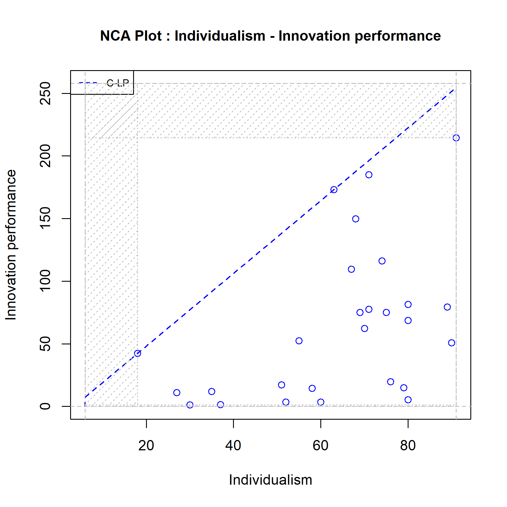
Figure 9.12: Scope robustness check for the illustrative example: Comparing the results with the empirical and with the theoretical scope (difference is shaded).
The check reveals that an analysis with the larger theoretical scope yields a larger effect size. In the current example, this does not change the main conclusion.
9.12.3 Different choice of the threshold level of the effect size
The analyst could also have made another choice for the effect size threshold level. If the threshold level is changed from the common 0.10 value (“small effect”) to a larger value of 0.20 (“medium effect”), the conclusion for the illustrative example about the hypothesis would not change, as the original effect size \(d\) = 0.33. The robustness check of effect size threshold suggests a robust result.
9.12.4 Different choice of the threshold level of the \(p\)-value
The analyst could also have made another choice for the \(p\)-value threshold level (\(\alpha\)). If the threshold level is changed from the common 0.05 value to a stricter level of \(p\) = 0.01, the conclusion in the above example about the hypothesis would change. This robustness check indicates that the statistical significance of the result is fragile.
9.12.5 Different outlier choice
The fourth robustness check is the outlier robustness check. NCA results can be sensitive to the handling of outliers as they, by definition, influence the effect size estimate (Section 9.8). An earlier decision to include potential outliers could be challenged by excluding one or more potential outliers with the largest influence on the effect size if removed. Similarly, an earlier decision to exclude on or more outlier with relatively large influence on the effect size, could be challenged by including them, or by excluding additional outliers.
In the illustrative example, one single outlier was removed from the analysis. This decision is challenged in two ways: (1) the removed outlier (Japan) is included again in the analysis, (2) an additional outlier that makes a pair with Japan is also excluded (Finland).
The R-code for this robustness check is as follows:
library (NCA)
data(nca.example)
nca.exampleN <- nca.example[-14,]
#outlier change 1 (include the earlier removed outlier)
set.seed(123)
modelN4 <- nca_analysis(nca.example, 1,3, ceilings = 'c_lp', test.rep = 10000)## Setting up parallelization, this might take a few seconds... Do test for : c_lp - IndividualismDone test for: c_lp - IndividualismmodelN4##
## ---------------------------------------------------------------------------## c_lp p
## Individualism 0.16 0.319
## ---------------------------------------------------------------------------nca_output(modelN4, summaries = FALSE)
modelN4b <- nca_analysis(nca.example, 1,3, ceilings = "c_lp",
bottleneck.y = 'percentile',
bottleneck.x = 'percentile',
steps = c(85,90,95))
nca_output(modelN4b, summaries = FALSE, bottlenecks = T)##
## ---------------------------------------------------------------------------## ---------------------------------------------------------------------------
## Y 1
## 85 3.6 (1)
## 90 21.4 (6)
## 95 32.1 (9)#outlier change 2 (remove an additional outlier)
nca_outliers(nca.example, 1,3,
ceiling = 'c_lp',
k = 2,
condensed = TRUE) #Japan and Finland## Setting up parallelization, this might take a few seconds... ## outliers eff.or eff.nw dif.abs dif.rel ceiling scope
## 1 Japan - Finland 0.16 0.35 0.19 117.2 X
## 2 Japan - South Korea 0.16 0.34 0.17 106.7 X X
## 3 Japan - Mexico 0.16 0.33 0.16 101.2 X X
## 4 Japan 0.16 0.33 0.16 101.0 X
## 5 USA - South Korea 0.16 0.04 -0.12 -72.7 X X
## 6 USA 0.16 0.06 -0.11 -65.3 X X
## 7 USA - Mexico 0.16 0.06 -0.11 -65.3 X X
## 8 USA - Australia 0.16 0.06 -0.11 -64.8 X X
## 9 Japan - USA 0.16 0.26 0.10 62.4 X X
## 10 South Korea - Portugal 0.16 0.14 -0.03 -16.4 X X
## 11 South Korea 0.16 0.14 -0.02 -12.3 X X
## 12 South Korea - Mexico 0.16 0.14 -0.02 -12.2 X X
## 13 USA - Sweden 0.16 0.15 -0.01 -8.1 X X
## 14 USA - Finland 0.16 0.17 0.00 2.2 X X
## 15 Mexico - Turkey 0.16 0.16 0.00 1.1 X X
## 16 Mexico 0.16 0.16 0.00 0.1 X Xnca.exampleN2 <- nca.example[-c(7,14),]
set.seed(123)
modelN5 <- nca_analysis(nca.exampleN2, 1,3,
ceilings = 'c_lp',
test.rep = 10000)## Setting up parallelization, this might take a few seconds... Do test for : c_lp - IndividualismDone test for: c_lp - IndividualismmodelN5##
## ---------------------------------------------------------------------------## c_lp p
## Individualism 0.35 0.026
## ---------------------------------------------------------------------------nca_output(modelN5, summaries = FALSE)
modelN5b <- nca_analysis(nca.exampleN2, 1,3, ceilings = "c_lp",
bottleneck.y = 'percentile',
bottleneck.x = 'percentile',
steps = c(85,90,95))
nca_output(modelN5b, summaries = FALSE, bottlenecks = T)##
## ---------------------------------------------------------------------------## ---------------------------------------------------------------------------
## Y 1
## 85 19.2 (5)
## 90 23.1 (6)
## 95 42.3 (11)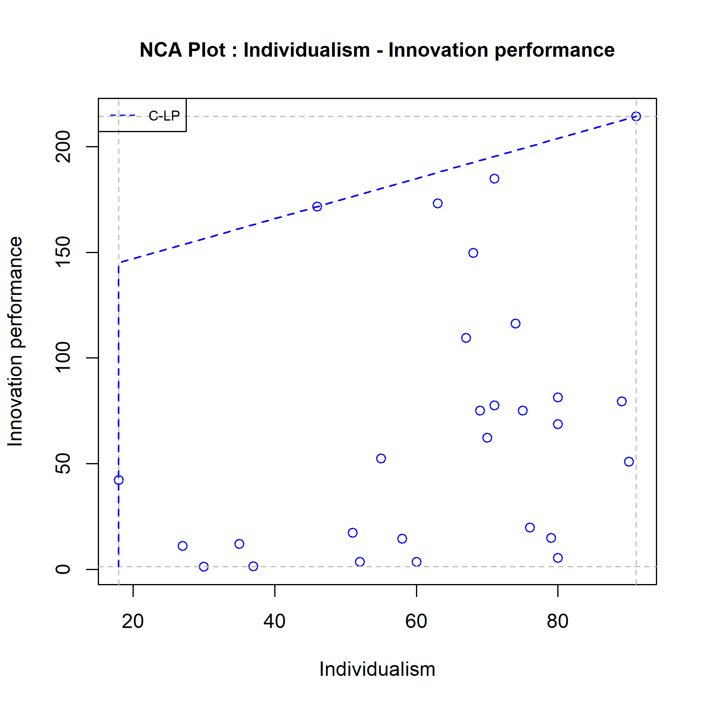
Figure 9.13: Outlier robustness check for the illustrative example: Results with re-including the outlier (Left), and with excluding an additional outlier (Right).
The results of these outlier changes are shown in Figure 9.13. The first outlier change (re-introducing the outlier, Figure 9.13-left) reduces the effect size from 0.33 to 0.16 and produces a statistically non-significant result (\(p\) = 0.315). The second outlier change (removing a second outlier, Figure 9.13-right) increases the effect size slightly to 0.35 while keeping the results significant (\(p\) = 0.028).
The outlier robustness check indicates that the results are sensitive to outliers.
9.12.6 Different choice of the target outcome
The last robustness check explores the stability of the bottleneck analysis in terms of the percentage of cases that cannot achieve the target outcome because the condition is not satisfied. With the 90th percentile specified as the target outcome, one could for example check how the results change if the target outcome is set somewhat lower (85th percentile) or higher (95th percentile).
library(NCA)
data(nca.example)
nca.exampleN <- nca.example[-14,]
modelN <- nca_analysis(nca.exampleN, 1,3, ceilings = "c_lp",
bottleneck.y = 'percentile',
bottleneck.x = 'percentile',
steps = c(85,90,95))
nca_output (modelN, plots = FALSE, summaries = FALSE, bottlenecks = TRUE)##
## ---------------------------------------------------------------------------## ---------------------------------------------------------------------------
## Y 1
## 85 18.5 (5)
## 90 33.3 (9)
## 95 40.7 (11)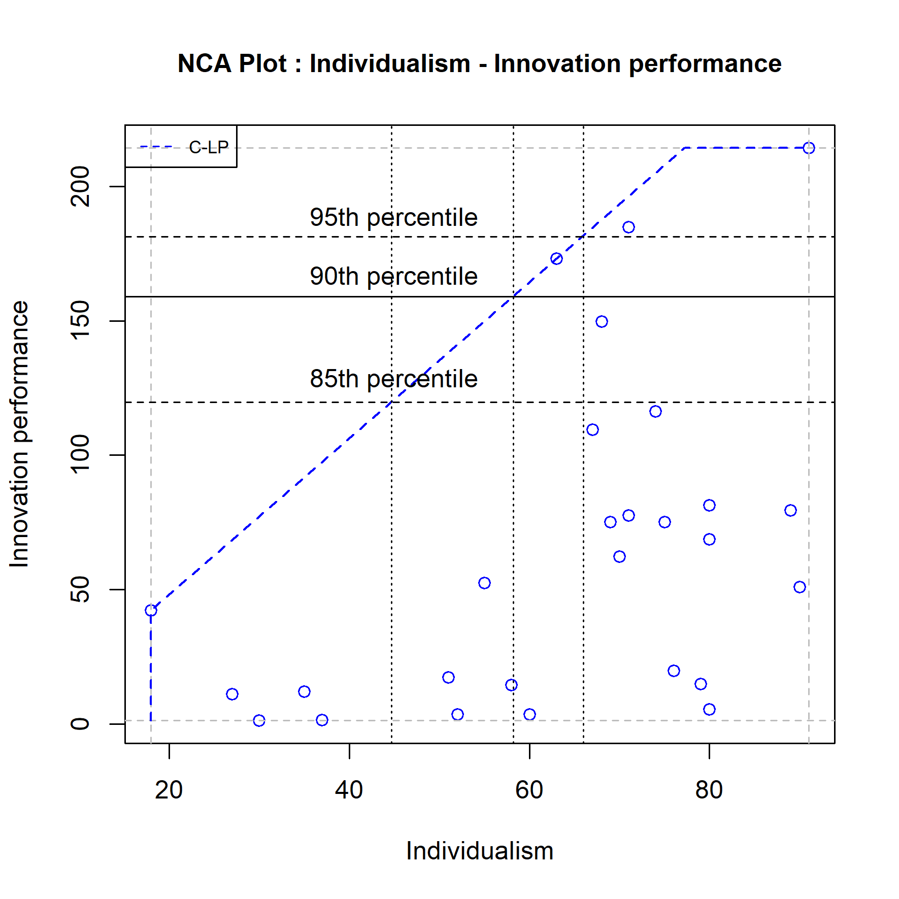
Figure 9.14: Target outcome robustness check. The effect of changing the target outcome from 90th percentile to 85th and 95th percentile.
Figure 9.14 shows that for the original target outcome (90th percentile) 33.3% of the cases (9 cases) did not achieve the required minimum level of the condition. For a target outcome of 85th percentile this percentage reduces to 18.5% (5 cases) and for 95th percentile this percentage increases to 40.7% (11 cases). The percentage of bottleneck cases changes considerably with minor changes of the target outcome.
9.12.7 Robustness table
The results of the robustness checks can be summarized in an NCA robustness table (Table ??) where the original NCA results are compared with the results when alternative feasible choices are made. The first row shows the original results, and the next rows display the results under alternative choices. To check robustness of necessity-in-kind, the effect size, the \(p\)-value, and the conclusion about necessity (assuming theoretical support) are presented. To check the robustness of necessity-in-degree, the percentage (%) and number (n) of bottleneck cases that are unable to achieve the required level of the condition for a selected target level of the outcome are presented.
The robustness checks indicate that the original necessity-in-kind result is sensitive to the exclusion/inclusion of the identified single outlier (Japan). When this outlier is added again to the analysis, the effect size reduces and the statistical significance disappears. Considering a rare single outlier as an exception according to the typicality necessity approach is possible, as the other robustness checks generally show more stable results, with effect sizes well above the threshold level of 0.10. The statistical significance is somewhat fragile as changing the significance threshold level from 0.05 to 0.01 makes the results statistically insignificant. This may be related to the relatively small sample size.
The robustness checks regarding the necessity-in-degree results show that the number of bottleneck cases reduces when outliers are handled differently, or when the selected level of the target outcome is somewhat reduced. This suggests that necessity-in-degree results are fragile, which can be explained by the irregular border between the feasible area and the ceiling zone.
Before the original results can be generalized, replications with other samples are needed. Generalization should only be made when a consistent trend emerges across multiple studies. This is a general principle that applies to any single empirical study, including an NCA study.
9.13 Meta-analysis
Given the growth of NCA publications (see Figure ??, it can become a realistic option to conduct a meta-analysis of NCA studies for a specific topic. The general aim of a meta-analysis is to systematically combine results from multiple independent studies that address the same research question. A common goal is to estimate an overall effect size across studies by combining results from different samples. This gives a better estimate of the ‘true’ effect size in an underlying population from which the samples are assumed to be drawn. In regression analysis, this is done by estimating an overall mean effect size using weighting of the effect sizes of the different samples (e.g., based on sample size). In other words, a weighted average is used as an estimate of the overall effect size. The assumption is made that the effect sizes can be compared (e.g., in each study the \(XY\) variables are measured on the same scale), and that there is no measurement error.
However, this approach does not apply to NCA because the sample necessity effect size is usually larger than the true effect size, such that the weighted average of the sample effect sizes is not a proper representation of the true effect size. Instead, with the same assumptions as in a regular regression-based meta-analysis (no measurement error, comparable effect sizes), and an additional assumption that the scopes of the separate studies are the same (empirically or by setting the same theoretical scope for each study), the minimum of the sample effect sizes may be the best representation of the true effect size. Alternatively, for extimating the overall ceiling, all samples could be combined into one master sample (as they are assumed coming from the same population) and then the effect size of the combined sample could be the estimation of the true effect size. Such meta-analysis is called an “individual participant meta-analysis” (IPD meta-analysis) and assumes that raw data are available. If it cannot be assumed that the samples are from the same (underlying) population, then differences in sample effect sizes could be explained by the different characteristics of the population. If absence of measurement error cannot be assumed, then an NCA outlier-analysis may possibly find cases with measurement error that could have partly caused sample effect size differences (and could be deleted).
10 Reporting
10.1 Summary of this chapter
Previous chapters explained how to develop a formal necessity hypothesis (Chapter 7), and how to subsequently test it using empirical data (Chapter 8) and NCA’s data analysis approach (Chapter 9). This chapter describes how to report an NCA study. The goal is to report insights from the study, how these were obtained, and how they contribute to theoretical understanding and practical application. The chapter focuses on a written report for an academic audience (e.g., a journal article), but it can also be the basis for other reporting formats (e.g., presentations) and other audiences (e.g., practitioners, the general public). First, Section 10.2 distinguishes between several types of NCA publications (empirical, theoretical, methodological introductions, and practical) and provides examples of publications and recommendations. Second, Section 10.3 follows the common format of an academic publication (introduction - theory/hypotheses - methods - results - discussion) to present recommendations for conducting and reporting a high-quality NCA study. This section includes the SCoRe checklist for authors, editors, reviewers, and others to evaluate the quality of an NCA study and its reporting.
10.2 Types of NCA publications
NCA publications can be categorized into empirical, theoretical, methodological introductions, and practical publications. In the remainder of this chapter, it is assumed that the reader of the publication is a scholar or an engaged practitioner who is interested in NCA or in the substantive topic to which NCA is applied. While readers may not be experts on NCA, it is likely that they are familiar with the substantive topic.
10.2.1 Empirical publication
An empirical NCA study applies NCA’s methodology (e.g., necessity logic) and NCA’s method (e.g., for data analysis) to data that represent reality. The goal is to obtain a better understanding of a specific phenomenon of interest. In an academic setting, the intention is to contribute to the theoretical understanding of the phenomenon. In a practical setting, the intention is to contribute to solving a practical problem related to the phenomenon. A high-quality empirical NCA publication often has two main parts. The first part uses a necessity causal perspective for reframing current understanding of the phenomenon by distinguishing between essential (necessary) and contributing (substitutable) factors. The formulation of one or more formal necessity hypotheses is a central part of it. This implies that a formal hypothesis is formulated before the data analysis is conducted. While it is possible to conduct NCA in an inductive/exploratory manner (i.e., without a predefined hypothesis), this book focuses on the deductive approach for reasons mentioned in Chapter 7. The second part is the empirical testing of the hypotheses by providing evidence that supports or refutes the expected necessity relationship.
In an academic setting, the empirical publication is intended to provide a contribution to the academic knowledge and literature. The report of the study could contribute to a ‘conversation’ about a certain topic in the academic literature (e.g., Campbell & Aguilera, 2022; Lange & Pfarrer, 2017).96 The conversation starts with a common ground. This refers to an ongoing conversation about the problem/topic in the primary literature (i.e., what do we know?), and to which NCA contributes new insights. After that, an interesting complication is highlighted. This could, for example, be a missing element or an inconsistency in the academic conversation (i.e., what we don’t know?). Afterwards, it is explained why this complication is a concern (i.e., so what?), and it is reported how the course of action (i.e., NCA) addresses this complication. Finally, the contribution is described by showing how and why the new insights are now part of the ongoing conversation. For an empirical publication, the narrative to report the insights could focus on developing and testing a necessity hypothesis from scratch, or developing and testing an existing suggestion for a necessity relationship. Tables 10.1 and 10.2 provide examples of how such contributions could be formulated, respectively.
| Topic |
|---|
| Common ground (What do we know?) |
| Several contributing factors to the outcome of interest are identified in the primary literature that describes a complex multicausal phenomenon. |
| Complication (What don’t we know?) |
| We do not know which factors are essential. |
| Concern (So what?) |
| If the essential factor is not known, we do not know if it is present or not. If it is not present the outcome will not occur no matter the other factors. Acting on other factors than the bottleneck factor is a waste of resources. |
| Course of action |
| We analyze the phenomenon from the causal perspective of necessity by developing a formal necessity hypothesis using the NCA methodology and testing it with the NCA method. |
| Contribution |
| The phenomenon is now described in more detail by distinguishing between factors that contribute to the outcome and can be substituted (as commonly done), and essential factors that must be in place. |
| Topic |
|---|
| Common ground (What do we know?) |
| A necessity relationship is suggested in the primary literature to describe a phenomenon. |
| Complication (What don’t we know?) |
| But necessity logic was not used when empirically testing that relationship, so we do not know if it is a true necessity relationship. |
| Concern (So what?) |
| Whether or not the relationship is a necessity relationship makes a difference for theoretical understanding and practical action. If necessary, the factor is essential in theory and practice; if not, the factor ‘only’ contributes and can be substituted. |
| Course of action |
| We develop the proposed necessity relationship toward a formal necessity hypothesis using the NCA methodology and test it with the NCA method to ensure theory-method fit. |
| Contribution |
| There is now empirical evidence to support or reject the claim of a necessity relationship. |
In an empirical NCA publication, the following sections (or similar) are often present:
Introduction: introduction of necessity logic/theory and description of the contribution.
Theory/hypotheses: development of (one or more) formal necessity hypotheses using NCA’s methodology for necessity causal logic.
Methods: description of the data analysis approach using the NCA method.
Results: presentation of NCA’s results including the conclusion about (non-)support of the hypotheses.
Discussion: description of the potential importance of the (non-)support of the hypotheses for theory and practice.
Appendix C provides an overview of empirical journal articles until the end of 2025 that apply NCA. These publications are presented here to illustrate in which fields NCA has been applied. They do not serve as good examples of high-level applications of NCA. Detailed recommendations for conducting and reporting an empirical NCA study at a high level are presented in Section 10.3.
10.2.2 Theoretical publication
In some cases, the theoretical implications of using necessity theory according to the NCA methodology to describe a phenomenon may be complicated enough to warrant a separate publication. In a theoretical NCA publication, the focus can be on formulating necessity theory or defining concepts. The main contribution is the use of necessity logic. In such a publication, attention may be paid to NCA’s specific characteristics of this logic, such as conditional logic with a causal assumption, necessity-in-degree, or the typicality necessity perspective. Unlike in an empirical publication, a theoretical publication does not include an analysis of empirical data.
Few examples exist of theoretical publications with NCA (Table 10.3).
| Year | Author(s) | Journal/Book | Main contribution |
|---|---|---|---|
| 2020 | Swab, Sherlock, Markin and Dibrell | Family Business Review | Clarify and advance understanding of the Socio-emotional Wealth (SEW) construct in family business research. |
| 2022 | Andrevski and Miller | Academy of Management Review | Show that forbearance is conceptually different from counteraction, word response, and involuntary nonresponse and is a deliberate, strategic choice. |
10.2.3 Methodological introduction publication
The goal of a methodological introduction publication about NCA is to introduce NCA in a specific field by explaining its methodology and method.
Since the introduction of NCA in 2016, publications have introduced the approach, or part of it, in specific fields, often illustrated with examples from that field. Examples of these publications are shown in Table 10.4.
| Year | Author(s) | Journal/Book | Main contribution |
|---|---|---|---|
| 2019 | Tóth, Dul and Li | Annals of Tourism Research | Introduction of NCA in tourism |
| 2020 | Tynan, Credé and Harms | Learning and Individual Differences | Introduction of NCA in education |
| 2020 | Dul, Karwowski and Kaufman | book chapter (Edward Elgar) | Introduction of NCA in creativity |
| 2021 | Dul, Hauff and Tóth | book chapter (Edward Elgar) | Introduction of NCA in marketing |
| 2021 | Hauff, Guerci, Dul and van Rhee | Human Resource Management Journal | Introduction of NCA in HRM |
| 2022 | Richter and Hauff | Journal of World Business | Introduction of NCA in international business |
| 2022 | Greco, Guilera, Maldonado-Murciano, Gómez-Benito and Barrios | International Journal of Environmental Research and Public Health | Introduction of NCA in public health |
| 2023 | Linder, Moulick and Lechner | Entrepreneurship Theory and Practice | Introduction of NCA in entrepreneurship |
| 2023 | Bokrantz and Dul | Journal of Supply Chain Management | Introduction of NCA in supply chain management |
| 2023 | Lee, Dul and Tóth | book chapter (Emerald) | Introduction of NCA in tourism and hospitality |
| 2023 | Lee and Lu | Journal of Hospitality & Tourism Research | Introducing necessity theorizing in hospitality and tourism research |
| 2026 | Conde | Journal of Marketing Analytics | Introduction of NCA in sales |
| 2026 | Marchetti, Koster, Dul | Clinical Psychology Review | Introduction NCA in clinical psychology |
As yet, only a small selection of fields has been covered by such publications, while NCA has been applied in many fields and could be applied in even more. This means there is room for more publications introducing NCA to a specific field. Introducing NCA in a new specific field has particular added value if it can be explained that:
Necessity logic is particularly useful for the field in general or for specific topics and challenges (e.g., a list of potential topics/challenges that can benefit from NCA).
Necessity thinking already (often implicitly) exists in the literature of the field (e.g., a list of necessity statements from the field).
NCA is different from conventional methodologies and methods (e.g., by explaining the logic and the steps of NCA using an example from the field).
NCA brings new insights to the field (e.g., an example of applying NCA to a topic from the field).
10.2.4 Practical publication
A final category of publications is relatively scarce. In the first 10 years of NCA, the focus was on the development of the methodology and the introduction in the academic world. Although academic publications often stress the practical relevance and potential of NCA, its uptake in practice has only just started. Early adopters, innovators and pioneers may have used NCA in their practical settings, but such activities usually do not lead to public publications. Yet, experiences from the use of NCA in practice may help to further develop the method and yield valuable insights for both theory and practice. Some possibilities of using NCA in practice are discussed in Chapter 12.
10.3 SCoRe checklist and recommendations
The publications listed in Appendix C are examples of adoptions of NCA during the first decade of NCA’s existence. Applying an innovative methodological approach is courageous, but it can also be risky. “When an emerging method’s standards of good practice are not yet broadly known, an early and fast adoption of the method without deep understanding of its details may result in incorrect interpretations that depart from the original ones and may result in invalid conclusions” (Dul, 2022, p. 1). The advancement of NCA and the availability of tools for applying the method appropriately can help move NCA into the next phase. In light of this, the SCoRe checklist and its recommendations are presented to support application of the method at the highest possible level.
The checklist and recommendations are meant to stimulate high-quality empirical NCA studies and their reporting. The SCoRe checklist is a tool for authors, peers, reviewers, editors, and readers in general to evaluate the quality of the execution and reporting of an NCA study. The acronym refers to the three themes covered in the checklist: Strengthening (theoretical rigor), Conducting (data and analysis quality), and Reporting (transparency). The checklist can help to identify study parts that are well developed, and those that need improvement.
The checklist is accompanied by best-practice guidelines. For each checklist item, recommendations are provided that can be used by analysts and authors for conducting their NCA study and for their publication about it. SCoRe can also help reviewers and others to provide constructive feedback.
The checklist and recommendations can be used for any empirical publication that uses NCA, whether NCA is the only method or is combined with other methods. In Sections 11.4.2 and 11.6.5, additional recommendations are given for applying NCA in combination with SEM and QCA, respectively.
SCoRe builds on several earlier works with basic guidelines for conducting and reporting NCA studies (Dul et al., 2023), recent developments in NCA reasoning (Dul, 2024a), necessity theorizing (Bokrantz & Dul, 2023), sampling for NCA (Dul, 2024b), the use of archival data in NCA (Dul et al., 2024), and the combined application of NCA and QCA (Dul, 2022) or PLS-SEM (Hauff et al., 2024; Richter, Hauff, Ringle, et al., 2023). Additionally, it incorporates topics newly introduced in this book, such as the formulation of a formal necessity hypothesis (Chapter 7), the use of robustness checks (Section 9.12) and updated recommendations for the combined application of NCA with SEM (Section 11.4) and NCA with QCA (Section 11.5). SCoRe is based on current knowledge, but as NCA and its application are continuously developing, the checklist may be updated in the future.
Following the common structure of an empirical publication, the checklist and its recommendations have six parts: Introduction/General, Theory/Hypotheses, Methods – data, Methods – data analysis, Results, Discussion. Each part discusses 5-10 items to be addressed for a high-level empirical NCA publication. The items have different priority levels. Some are essential (‘must-haves’) that must be addressed in any NCA publication. If any of the must-haves is missing, the quality of the publication should be seriously questioned. Others are important (‘should-haves’) to increase the quality of the publication, and yet other items are the ‘nice-to-haves’. When addressing all items, the publication meets the highest quality standard from the perspective of applying NCA, necessary for publishing in a high-ranking journal. Some items can be easily addressed, others need more reflection. For each item, requirements, recommendations, and sources for further reading are provided.
Below the checklist items are presented, followed by the recommendations.97
10.3.1 Introduction/General
Table 10.5 is the checklist for the Introduction/General part of applying and presenting NCA. The introduction should clearly define why NCA is used, describe it correctly, distinguish it from other causal methods, and highlight its role in the study.
| Item | Priority | Question | Check |
|---|---|---|---|
| 1 | Must-have | Are the goals and contributions of applying NCA explicitly stated? | ☐ |
| 2 | Must-have | When referring to necessity, are only words that correctly describe a necessity relationship used? | ☐ |
| 3 | Must-have | Is it explained that NCA is an approach that combines a specific causal logic (methodology) and the related data analysis technique (method)? | ☐ |
| 4 | Must-have | Is a proper comparison made between NCA’s causal perspective and conventional causal perspectives (e.g., probabilistic sufficiency, configurational sufficiency)? | ☐ |
| 5 | Must-have | In multimethod studies, is NCA described and used as an approach with a specific perspective on causality and data analysis, and not merely as a robustness check or an add-on to other methods (and vice versa). | ☐ |
| 6 | Nice-to-have | If the necessity analysis is a prominent part of the publication, do the title and abstract reflect this necessity perspective/NCA? | ☐ |
The following recommendations help to achieve the goals of the checklist items:
State the primary and (possibly) secondary goals and contributions of the empirical NCA study. The study may primarily contribute to theory development by, for example, developing and testing new necessity hypotheses, developing an existing necessity claim further toward a formal necessity hypothesis and testing it with NCA, or replicating results of previously tested necessity hypotheses. Secondary goals could be methodological (e.g., introducing NCA to a new field/phenomenon), or practical (e.g., using results of NCA for practically meaningful recommendations/insights).
See this book: Chapter 7, Section 10.2.
Suggested articles: Bokrantz & Dul (2023); Dul (2024a); Hollenbeck & Wright (2017); Köhler & Cortina (2023); Bergh et al. (2022).When referring to necessity relationships, use appropriate terminology. In practice, this means using equivalents/derivatives of the statement that \(X\) is necessary for \(Y\). Avoid ambiguous statements (\(X\) causes \(Y\), \(X\) correlates with \(Y\), \(X\) is associated with \(Y\), \(X\) affects \(Y\)), or incorrect (sufficiency-based) statements such as \(X\) produces \(Y\), \(X\) drives \(Y\), \(X\) increases/decreases \(Y\), etc.
See this book: Table 7.1.Refer to NCA as a methodological approach that combines the theoretical perspective of necessity causality (rather than common probabilistic or configurational causality) with a corresponding data analysis method, ensuring theory-method fit. Emphasize that NCA entails more than just a data analysis or statistical method.
See this book: Chapters 1, 2, 5.
Suggested article: Dul (2024a).When, in the context of an NCA study, a comparison is made between NCA’s causal perspective and the causal perspective inferred from conventional regression-based/statistical approaches, use the term probabilistic sufficiency for the latter, and not just sufficiency. The term sufficiency suggests determinism (as applied in QCA’s configurational sufficiency logic). This recommendation is often violated in studies that combine NCA with SEM. When NCA is compared with QCA’s necessity analysis, use the term necessity analysis of QCA for the latter (and not NCA) and explain the differences between the necessity analysis of QCA (only necessity-in-kind) and that of NCA (also necessity-in-degree).
See this book: Sections 2.3, 2.4.
Suggested articles: Dul (2024a); Dul (2016a); Vis & Dul (2018); Dul (2022).In multimethod studies, use and refer to NCA as an approach with a specific perspective on causality and data analysis, and do not incorrectly refer to it as a robustness check or add-on to other methods (and vice versa). This recommendation is often violated in studies that combine NCA with SEM.
See this book: Sections 2.7, 11.4, 11.5.
Suggested article: Dul (2024a).If important parts of the publication and/or its conclusions are based on necessity logic and NCA, ensure that this is reflected in the title and abstract by using words that reflect necessity logic or NCA.
See this book: Table 7.1.
10.3.2 Theory/Hypotheses
Table 10.6 is the Theory/Hypothesis part of the checklist. This part is essential as it uses the NCA methodology to develop a formal hypothesis. A causal explanation of the necessity relationship is a central part of it. If it is missing, there is no theoretical justification for the hypothesis and the hypothesis should be rejected, regardless of whether the other criteria (effect size, \(p\)-value) are satisfied (Chapter 7).
| Item | Priority | Question | Check |
|---|---|---|---|
| 7 | Must-have | Is the hypothesized necessity relationship explicitly formulated as: X is necessary for Y, or similar? | ☐ |
| 8 | Must-have | Are the four elements of a necessity theory precisely defined: concepts X and Y, direction of the hypothesis, focal unit, theoretical domain? | ☐ |
| 9 | Must-have | Is a causal explanation provided WHY X is necessary for Y using necessity causal logic to justify the necessity hypothesis by addressing three questions? Why does X enable Y? Why does the absence of X lead to the absence of Y? Why is the absence of X not compensable? | ☐ |
| 10 | Must-have | Are temporal aspects considered including specification of the temporal order of X and Y if this is not obvious? | ☐ |
| 11 | Should-have | Is the existing literature about the relationship between X and Y re-considered from a necessity causal perspective? | ☐ |
| 12 | Nice-to-have | If applicable, is an nc-symbol added near the arrow in a diagram that represents a necessity relationship? | ☐ |
| 13 | Nice-to-have | Is it specified if rare exceptions are allowed (typicality perspective)? | ☐ |
Formulate the necessity relationship explicitly as a necessary condition hypothesis: \(X\) is necessary for \(Y\). For a deductive study, this is done before data analysis; for an explorative study this is done after data analysis when indications for a necessity relationship are found.
See this book: Section 7.5.To obtain a formal necessity hypothesis that is ready for testing, precisely define the four elements of the necessity theory. (1) Define the concepts \(X\) and \(Y\) according to their meaning in the hypothesis. (2) Specify the hypothesis and its direction, which indicates which corner of the \(XY\)-plot is expected to be empty, particularly if the expected corner is not the default upper-left corner. (3) Specify the focal unit of which \(X\) and \(Y\) of the hypothesis are characteristics. (4) Define the theoretical domain where it is claimed/expected that the hypothesis will hold, given its boundary conditions. Note that the theoretical domain is usually larger than a population from which cases are selected.
See this book: Section 3.2, Chapter 7 in particular , Section 7.5.Explain why \(X\) is necessary for \(Y\) using a causal explanation (narrative) by answering three questions: (1) Why does \(X\) enable \(Y\) (\(X\) is an enabler). The existing literature may be a source of information; (2) Why does the absence of \(X\) lead to the absence of \(Y\) (\(X\) is a constraint); (3) Why is the absence of \(X\) not compensable (no substitution for \(X\)). Making the narrative complete is a creative process, supported by literature and experiences of scholars and practitioners. See this book: Chapter 7 in particular Section 7.5.3.
If this is not self-evident, include a plausible explanation of the temporal order (first \(X\) then \(Y\)) in the description of why the necessity causal relationship exists. If the data support \(X\) is necessary for \(Y\), explain why the alternative reverse explanation, namely that \(Y\) is sufficient for \(X\) (or in terms of necessity: absence of \(Y\) is necessary for absence of \(X\)) that would also be consistent with the expected empty space, is not plausible. Also consider other temporal aspects of the hypothesis such as whether \(X\) is necessary for the onset or continuation of \(Y\), or whether the hypothesis holds in all time periods.
See this book: Section 2.5, Chapter 7 in particular Section 7.5.3.Review existing literature (that commonly describes probabilistic relationships between your variables X and Y), to find hints for necessity causality. Avoid just describing, summarizing, or referring to probabilistic findings/ideas. Where possible, include quotes in the literature that hint to necessity logic. Avoid using sufficiency/probabilistic causal logic for making a justification for necessity causal logic. Note that only describing, summarizing, or quoting prior work (often based on probabilistic sufficiency logic) does not constitute a valid theoretical justification of a necessity hypothesis.
See this book: Section 7.4.1, Table 7.1.
- In a diagram representing an (expected) necessity relationship between two variables using an arrow, add a relevant symbol (+nc+, -nc+, -nc-, or +nc-) near the arrow to show the direction of necessity.
See this book: Section 3.5.
- Explain whether the necessity theory allows for rare exceptions (i.e., a typicality perspective on necessity), or whether any exception leads to a rejection of the theory (i.e., a deterministic perspective on necessity). The typicality perspective is not a solution for poor measurement and should not be used in a probabilistic manner (e.g., ignoring a certain percentage of cases above the ceiling).
See this book: Sections 2.4.3, 9.8, 4.5.4.
Suggested article: Dul (2024a).
10.3.3 Methods – data
Table 10.7 is the Methods – data part of the checklist. Data is input to NCA, and good input is needed for good output. NCA accepts any type for scores of \(X\) and \(Y\) that are valid (representing the condition and outcome formulated in the hypothesis) reliable and meaningful. The latter refers to the possibility that values are interpretable for theory and practice.
| Item | Priority | Question | Check |
|---|---|---|---|
| 14 | Must-have | Is the study design (observational study, longitudinal study, case study, experimental study) adequate? | ☐ |
| 15 | Should-have | For large-n quantitative studies: are adequate sampling approaches used and is a pre-study power analysis reported? | ☐ |
| 16 | Should-have | For small-n qualitative studies: are adequate NCA-specific approaches used for purposive case selection? | ☐ |
| 17 | Must-have | Are adequate measurement approaches used for getting scores of X and Y, and are these measures practically interpretable? | ☐ |
| 18 | Must-have | For simulation studies: are simulated data sampled from bounded distributions of X and Y? | ☐ |
| 19 | Must-have | Are only data transformations that align with NCA employed? | ☐ |
Possible study designs for NCA include the large-n observational study (both \(X\) and \(Y\) are observed), the longitudinal study (\(X\) and \(Y\) data from different time points), the small-n case study (\(X\) and \(Y\) are observed), and the experiment (\(X\) is manipulated and \(Y\) is observed). The general principles for good study design apply. For case selection and experiments, there is an NCA-specific approach.
See this book: Section 8.2.For large-n quantitative studies the preferred sampling approach from the theoretical domain is random sampling with good coverage of the population of interest. The general principles for good sampling apply. Report if an NCA-specific pre-study power analysis was done to estimate the required sample size for finding necessity if it exists. Note that doing a post-hoc power analysis makes no sense for the present study, but could inform future studies.
See this book: Sections 5.6, 8.3.1.
Suggested article: Dul (2024b).For small-n qualitative NCA studies, aim to use purposive selection of cases from the theoretical domain, with cases being selected based on the presence of \(Y\) or absence of \(X\). Always clearly state how cases were selected. Reflect on, and report the potential limitations when cases were not selected purposively based on the absence of \(X\) or presence of \(Y\).
See this book: Sections 8.2.3, 8.3.2.
Suggested article: Dul (2024b).Ensure a proper measurement approach with valid, reliable, and meaningful data (scores of \(X\) and \(Y\)). Data are input to NCA, not part of NCA. General principles for good data (collection) apply to an NCA study. For interpretation of results, it is important that the scores have a practical meaning in terms of the levels of \(X\) and \(Y\). Data are stored in a dataset. The dataset may consist of archival data.
See this book: Section 8.4.
Suggested article: Dul et al. (2024).For data generated by simulation, ensure that the variables \(X\) and \(Y\) are bounded (have minimum and maximum values). Simulated data drawn from, for example, a normal distribution would not be eligible whereas data from a uniform or truncated normal distribution would be appropriate.
See this book: Sections 4.3, 5.4.Explain whether and how the data were transformed, and whether the transformation aligns with NCA. Affine transformations (including linear transformation) produces valid results. NCA’s data analysis does not require data transformation and non-transformed data are often more meaningful and better interpretable (e.g., levels of a Likert scale) than transformed data. This particularly applies to necessity-in-degree and interpretations of specific levels of \(X\) being necessary for specific levels of \(Y\). Refrain from conducting non-linear data transformations (e.g., log-transformation, logistic transformation) unless the transformed data represent \(X\) and \(Y\) as defined in the necessity hypothesis (e.g., log-transformed GDP). This recommendation may be violated in studies that combine NCA with QCA when the logistic transformation (S-curve) is applied mechanistically for calibration purposes.
See this book: Section 8.5.2.
Appendix D.
10.3.4 Methods – data analysis
The main part of the NCA method is the data analysis which differs from common data analysis approaches. Table 10.8 is the Methods – data analysis part of the checklist. In multimethod studies where the NCA method is combined with other methods, the analyses are independent. The results are considered in combination only during interpretation and discussion. Therefore, the checklist applies to all types of empirical applications of the NCA method.
| Item | Priority | Question | Check |
|---|---|---|---|
| 20 | Must-have | Is the selected ceiling line specified and justified? | ☐ |
| 21 | Should-have | Is the bounding box (with empirical or theoretical scope) deliberately selected and specified? | ☐ |
| 22 | Should-have | Are the hypothesis evaluation criteria (thresholds for effect size, p-value, and possibly target outcome) deliberately specified and justified? | ☐ |
| 23 | Should-have | Are the results of a visual inspection of the XY-plot reported? | ☐ |
| 24 | Must-have | Is it explained how potential outliers are analyzed and handled, and are removed cases reported? | ☐ |
| 25 | Should-have | Are all model fit parameters evaluated? | ☐ |
| 26 | Should-have | Are all NCA-related parameters, terms and concepts properly used and described? | ☐ |
| 27 | Nice-to-have | Is the utilized software, including its version number specified? | ☐ |
| 28 | Nice-to-have | Is a short general description of NCA’s data analysis approach provided to serve readers who are less familiar with NCA? | ☐ |
Specify and justify the selected ceiling line by considering theoretical expectations (border is linear or non-linear), type of data (discrete or continuous), observed border pattern (regular or irregular), balance between accuracy and generalizability (avoiding overfitting), and quality of the data (data with/without measurement error, simulation data).
See this book: Sections 4.3.2, 9.3.2.Specify and justify the selected bounding box (with empirical or theoretical scope). Commonly, the empirical scope is selected to avoid over-estimation of the effect size. The theoretical scope can be considered when \(X\) and \(Y\) are measured on bounded scales (e.g. Likert scales, percentages).
See this book: Sections 4.3, 9.3.1.Specify and justify the selected threshold values for necessity effect size \(d\) and \(p\)-value for identifying necessity-in-kind. This threshold depends on the specific context of the study. If no argument is available for a specific value, common benchmark values may be used (\(d\) = 0.10; \(p\) = 0.05 with 10,000 permutations). Optionally, select a target outcome \(Y\) to evaluate a specific outcome of necessity-in-degree.
See this book: Sections 4.4.1, 5.3, 9.4.1, 9.4.2, 9.4.3.
Suggested article: Dul (2016b).Conduct the analysis with the selected ceiling line and scope to obtain an \(XY\)-plot for visual inspection. Evaluate whether the expected corner is empty, if the selected ceiling line is appropriate, if potential outliers are present, and what the data pattern in the rest of the plot is.
See this book: Section 9.5.Conduct an outlier analysis with the selected ceiling line and scope to identify potential ceiling and scope outliers. If outliers are removed, report in detail which cases are removed and why, and compare the results with and without removing the outliers (see robustness checks).
See this book: Section 9.8.
Suggested article: Dul (2016b).Conduct the analysis with the selected ceiling line and scope and evaluate the model fit parameters (complexity, fit, ceiling accuracy, noise, exceptions, support, spread, sharpness), and compare it with benchmark values.
See this book: Sections 4.5, 6.5, 9.9.Describe the NCA-related parameters, terms, and concepts properly, including using the term ‘permutation test’ (not terms like bootstrapping, (Monte Carlo) simulation, robustness check, or \(t\)-test) for NCA’s statistical test, and using ‘multiple NCA’ (not multivariate NCA) for analyses with several necessity hypotheses.
See this book: Appendix A.
Specify which software and which version of the software was used to conduct NCA. The version number for the NCA package in
Rcan be obtained with the commandpackageVersion("NCA").
See this book: Appendix B.Include a brief description of NCA’s main logic and data analysis elements (ceiling line, ceiling zone, scope, effect size) so that the study is easier to understand for readers unfamiliar with NCA. Consider adding references for further reading.
Suggested articles with examples of short descriptions: Dul (2024b); Dul (2025).
10.3.5 Results
Table 10.9 is the Results part of the checklist where the results of the data analysis are presented, and the (non-)support of the hypothesis is evaluated.
| Item | Priority | Question | Check |
|---|---|---|---|
| 29 | Must-have | Are XY-tables or XY-plots of all tested/explored relationships shown? | ☐ |
| 30 | Should-have | Is only the ceiling line that is used to draw conclusions about the necessity relationship shown in the XY-plot? | ☐ |
| 31 | Must-have | For large-n quantitative study: are the effect size and its p-value properly reported? | ☐ |
| 32 | Must-have | Is the conclusion about necessity-in-kind based on three criteria: theoretical justification, effect size, and p-value? | ☐ |
| 33 | Should-have | Is the bottleneck table reported and necessity-in-degree evaluated? | ☐ |
| 34 | Nice-to-have | If applicable: is the meaning of NN and NA in the bottleneck table explained? | ☐ |
| 35 | Should-have | Are the type of values used in the bottleneck analysis justified? | ☐ |
| 36 | Must-have | Are the results of the robustness checks summarized? | ☐ |
Include the \(XY\)-tables or \(XY\)-plots of all tested/explored relationships, preferably in the main text. It is essential that readers are able to inspect them visually.
See this book: Section 9.5.In the \(XY\)-plot(s), include only the ceiling line that is used to draw conclusions about the necessity relationship. Note that the default output of the NCA software in
Rincludes two ceiling lines, but that only one is usually selected for drawing conclusions about the hypothesis (\(XY\)-plots with other ceiling lines that were explored before the final selection was made, or that were evaluated during the robustness checks could be provided separately).Report the estimated effect size and its \(p\)-value. Preferably, report the effect size in two decimal places. This ensures that the result contains meaningful information about the precision, and that there is no unwarranted level of accuracy. Report the estimated \(p\)-value, preferably with three decimal places for the same reasons. Give exact \(p\)-values (or if applicable \(p\) < 0.001) and do not use inequalities or stars (i.e., not p < 0.05 or *).
Conclude about necessity-in-kind using three criteria: (1) Theoretical justification (the formal hypothesis), (2) Effect size not below the selected threshold value, (3) \(p\)-value below the selected threshold value. Note that for support all criteria apply and that missing just one of them is enough for a rejection. This implies, for example, that without theoretical justification the claim for a necessity relationship is rejected.
See this book: Section 9.10.Report the bottleneck table only for necessary conditions that were not rejected. This facilitates the evaluation of necessity-in-degree: which level of \(X\) is necessary for which level of \(Y\).
See this book: Section 9.11.Explain the meaning of NN or NA in the bottleneck table if it appears.
See this book: Section 9.11.5.Justify the type of values for \(X\) and \(Y\) that are displayed in the bottleneck table (e.g., percentage of range, actual values, percentiles). In particular, the actual values of \(Y\) and percentile values of \(X\) might be informative about the percentage or number of cases unable to achieve a target outcome.
See this book: Section 9.11.Conduct robustness checks and summarize the results: is the main conclusion about necessity (support or rejection of the hypothesis) sensitive to choices by the analyst regarding ceiling line, scope, effect size threshold, \(p\)-value threshold, removing/keeping outliers, different choices for the target outcome? Conclude if the results are robust or fragile.
See this book: Section 9.12.
10.3.6 Discussion
Table 10.10 is the Discussion part of the checklist where the results are interpreted and their consequences for theory and practice and for desired future studies are discussed.
| Item | Priority | Question | Check |
|---|---|---|---|
| 37 | Must-have | Is it explained why all tested necessary conditions were (not) rejected? | ☐ |
| 38 | Must-have | For a multimethod study: is it explained how the results of NCA and of other methods complement each other? | ☐ |
| 39 | Must-have | Referring to the goals of the study (see introduction): is it discussed if the intended contribution is realized and what the key insights are? | ☐ |
| 40 | Should-have | Are the results of the bottleneck analysis explained in terms of necessity-in-degree? | ☐ |
| 41 | Should-have | Are limitations of applying NCA mentioned? | ☐ |
| 42 | Should-have | Are potential future studies with NCA discussed? | ☐ |
Summarize the results of using NCA in terms of which necessary conditions were tested/explored, and which were rejected or not rejected. Assuming that (methodological) errors are unlikely, provide theoretical explanations for the results, referring to the necessity theory and hypotheses formulated earlier.
See this book: Chapter 7.5.3.When NCA is used in a causal-pluralism study by combining it with another method (e.g., regression-based methods or QCA), report how the results of NCA and the other method complement each other using NERT, NEST and BIPMA when applicable.
See this book: Chapter 11.For the primary and possibly secondary goals (see introduction), discuss if the intended contribution is realized and what key insights are gained.
See this book: Section 10.2.1.If necessity-in-kind is accepted, provide an interpretation of necessity-in-degree using the results of the bottleneck analysis. For example, explain what level of \(X\) is necessary for a given target level of \(Y\).
See this book: Section 9.11.Mention the study’s limitations. Discuss general limitations of NCA (e.g., exclusive focus on necessity; potential sensitivity to outliers), and specific limitations of applying NCA in the current study, and how this may affect the findings.
Discuss potential future studies with NCA, for example conducting studies in other parts of the theoretical domain to assess the generalizability of the current findings, or applying NCA in related substantive areas that could benefit from the necessity causal perspective.
Suggested article: Köhler & Cortina (2023).
11 Multimethod studies
11.1 Summary of this chapter
The previous chapters focus on NCA as a standalone methodology and method. This chapter explores how NCA can be applied in combination with other methods. First, a distinction is made between method-triangulation studies that use multiple methods with the same causal perspective, and causal-pluralism studies using multiple methods with distinct causal perspectives (Section 11.2). Next, causal-pluralism multimethod studies that combine NCA with regression-based methods are discussed, showing that NCA can provide insights beyond average effects. With the NCA-Extended Regression Table (NERT) tool, the results can be compared (Section 11.3). This is followed by discussing how NCA can be combined with a specific regression-based method, structural equation modeling (SEM). To compare the results, the Bottleneck Importance Performance Map Analysis (BIPMA) tool is provided (Section 11.4). Both tools acknowledge the different causal perspectives, while facilitating the combined interpretation of results. Subsequently, multimethod studies that combine NCA with Qualitative Comparative Analysis (QCA) are discussed (Section 11.5). This section shows how NCA insights on necessity-in-degree can provide additional insights for QCA’s necessity and sufficiency analyses (Section 11.6). For the combined interpretation of NCA’s necessity results and QCA’s sufficiency results, the NCA-Extended Solution Table (NEST) tool is provided.
11.2 Method-triangulation versus causal-pluralism
Studies that apply multiple methods are commonly praised for their ability to produce deeper or more robust insights than studies that rely on a single method. For example, a qualitative analysis of interview data can enrich a quantitative analysis of questionnaire data, and vice versa, or regression approaches with different model specifications or parameter estimation techniques may make conclusions more robust.
In hypothesis-testing studies with multiple methods, the methods that are used should be consistent with the causal perspective that is expressed or implied in the hypothesis. For example, if the hypothesis is that \(X\) likely has a positive effect on \(Y\), the methods to test this hypothesis should be based on probabilistic sufficiency (i.e., regression-based methods). Similarly, if the hypothesis is expressed as configurations of \(X\)s produce \(Y\), the methods should be based on configurational sufficiency perspective (i.e., QCA).
Theory-method fit ensures a proper link between the hypothesis and the methods that are applied to test it. Table 11.1 shows theory-method (mis)fit depending on causal perspective and type of method. The selected method for a study should be consistent with the causal perspective that is used in that study. Selecting NCA or QCA for a hypothesis that represents probabilistic sufficiency leads to misfit. The same holds for selecting regression-based methods to test necessity or configurational sufficiency hypotheses.
| Probabilistic sufficiency | Configurational sufficiency | Necessity (in degree) | |
|---|---|---|---|
| Regression | Fit | Misfit | Misfit |
| QCA | Misfit | Fit | Misfit |
| NCA | Misfit | Misfit | Fit |
Terms commonly used for studies with different methods are multimethod studies, multiple method studies or mixed method studies; these terms often refer to studies that use both qualitative and quantitative methods. In this book, however, a multimethod study refers to a hypothesis-testing study that uses different methods with the same or a different causal perspective, and with the same or different data.
Table 11.2 distinguishes three types of multimethod studies. A method-triangulation multimethod study uses a single underlying causal perspective, but different methods that fit this perspective. The data can be the same or different. A causal-pluralism multimethod study analyses the same data with different causal perspectives and uses different methods that fit these perspectives. If in a multimethod study, both the causal perspectives and the data are different, the study effectively consists of separate studies analyzing the same phenomenon, while each study has its own data, method and causal perspective.
| Method-triangulation | Causal-pluralism | Separate studies | |
|---|---|---|---|
| Different causal perspectives | No | Yes | Yes |
| Different data | Yes or no | No | Yes |
A multimethod study with NCA as one of the methodologies can be conducted as follows:
Develop the hypotheses
- for method-triangulation studies: same hypothesis for NCA and other method(s) for testing necessity.
- for causal-pluralism studies: different hypotheses for NCA and for the other method(s) that are based on another causal perspective.
Collect data
- for method-triangulation studies: same or different data for NCA and other method(s).
- for causal-pluralism studies: same data for NCA and other method(s).
Analyze and report the results separately, following the guidelines of each method.
Combine the findings during interpretation: What are the theoretical and practical implications of the combined results?
11.3 NCA with regression-based methods
Causal analysis from a probabilistic sufficiency perspective has a long tradition, with regression serving as its natural method. The influential works of Fisher, Neyman, Rubin, and Pearl, have emphasized the close link between causality and probability. Journals and reviewers frequently expect regression-based evidence as a marker of methodological rigor and support for causal claims.
Such an alignment makes regression appear to be the only “proper” way of testing causal hypotheses. However, as discussed in Section 2.7, different views on causality can exist, and a necessity causal analysis of the phenomenon of interest is valuable in itself, or can add unique value to the regression analysis.
Regression analysis was invented more than 100 years ago when Francis Galton (Galton, 1886) quantified the pattern in the scores of parental height and child height. Figure 11.1-left shows an original graph.
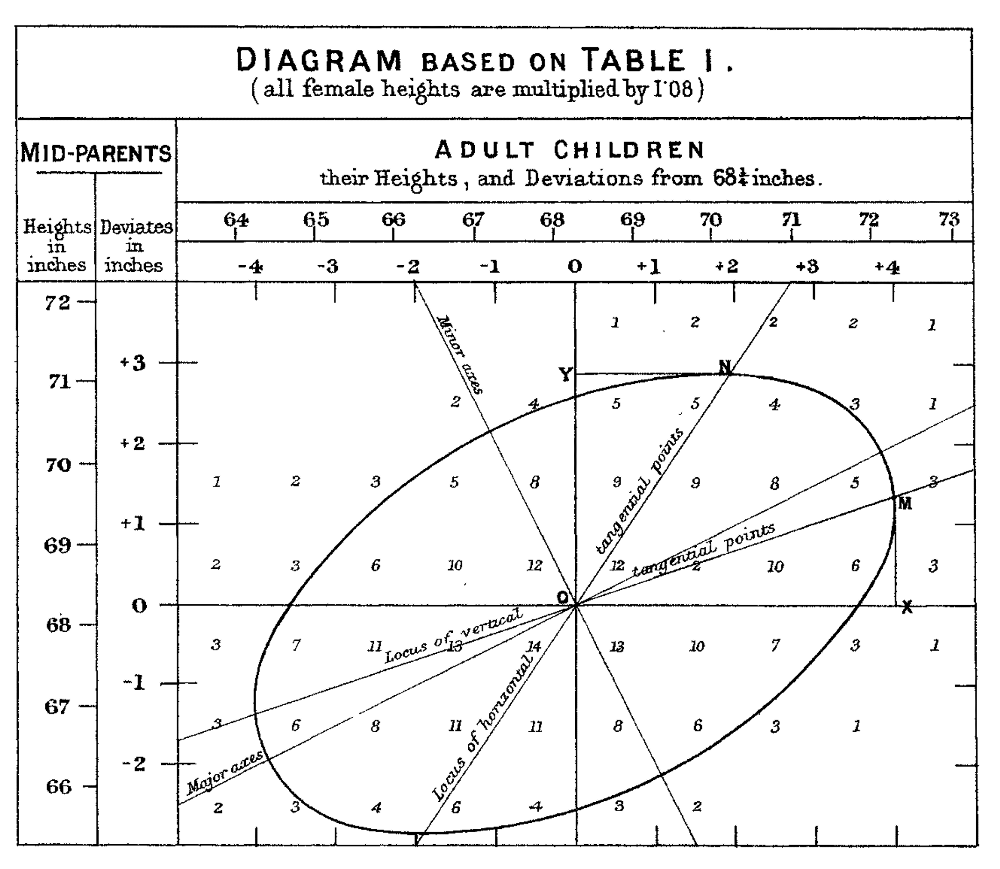
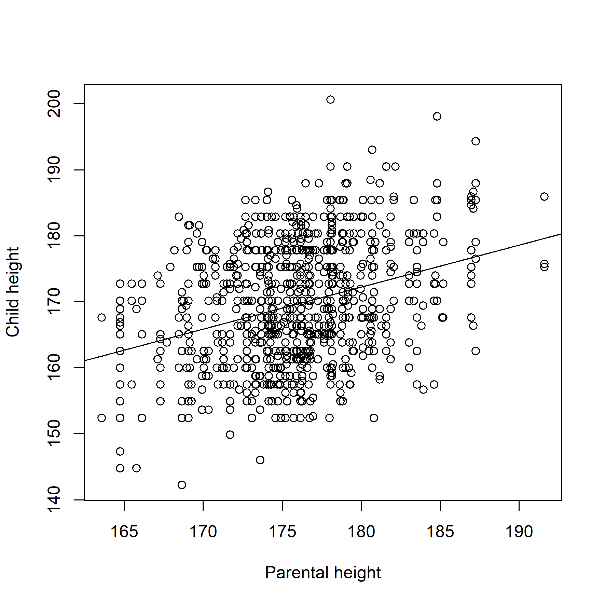
Figure 11.1: Francis Galton’s (1886-1911) graph with data on Parent height (mid-parents height) and Child height (adult child height). Left: original graph. Right: \(XY\)-plot with regression line. The plots use different versions of the original dataset (After Galton, 1886). Data for the right plot were obtained from HistData package in R.
To describe the observed data pattern, Galton drew lines through the center of the data by eye, describing an average trend between Parental height and Child height and called it the regression line (Figure 11.1-left). He did not explicitly use the method of least squares that had already existed earlier (Gauss, 1809; Legendre, 1805). Karl Pearson formalized Galton’s idea mathematically by regression line equations using the method of least squares. Ordinary Least Squares (OLS) is still one of the most common estimation methods in regression analysis.
11.3.1 Principles of regression analysis
Regression analysis is often used to test probabilistic sufficiency hypotheses such as more \(X\) likely increases (or decreases) \(Y\) or \(X\) has a positive (or negative) effect on \(Y\), or similar. The hypothesis is considered to be supported if the regression coefficient is positive (or negative) and statistically significant.
The standard regression equation represents an additive, average-effect model. The simple linear regression model is expressed as:
\[\begin{equation} \tag{11.1} Y = f(X) + \varepsilon \end{equation}\]
where the function \(f(X)\) represents an additive combination of predictor variables (including, if specified, products if \(X\)’s or other transformations), with associated coefficients \(\beta_i\) for \(i = 1, \dots, k\), where \(k\) is the number of terms. The error term \(\varepsilon\) represents all remaining influences on \(Y\) that are not captured by the model. In OLS, the coefficients are chosen so that \(f(X)\) is the linear function that best predicts \(Y\) in the least-squares sense (minimizing the average squared residual), under the assumption that the predictors are exogenous, meaning that they are uncorrelated with the error term. Measurement error in \(X\) is one way this assumption can fail.
Several assumptions are made about the error term. Specifically, it is assumed that \(\varepsilon\) has an expected value of zero, that it is uncorrelated with (or independent of) the predictors \(X\), and that its variance is constant across all values of \(X\) (homoskedasticity). In many applications, it is further assumed that the errors are normally distributed, mainly to justify standard hypothesis tests and confidence intervals. Under this assumption, the conditional distribution of \(Y\) given \(X\) is normal. Consequently, the model implies an unbounded distribution of \(Y\), which can, in principle, take any value between minus and plus infinity.
For the parent–child sample, the regression equation is \(y = 57.5 + 0.64x + \varepsilon_x\) (Figure 11.1-right). Since OLS regression assumes that on average \(\varepsilon_x = 0\), this equation expresses the average effect. Thus, when \(x\) (Parent height) is 175 cm, the estimated average Child height is about 170 cm, but heights between about 140 cm and 200 cm appear to be possible. Given the normality assumption of the error term, very large child heights (e.g., 300 cm) are not observed but are theoretically possible in the population, though unlikely. Because all heights are theoretically possible in such a regression context, an empty space in the upper-left corner (and thus necessity) is theoretically excluded. If an empty space is observed in a sample, the normality assumption implies that this is due to finite sampling, not an indication of necessity.
Most regression models include more than one \(X\). The black box of the error term is opened and additional predictors are added to the regression equation (multiple linear regression, MLR). By including more factors that contribute to \(Y\) in the regression equation, \(Y\) may be better predicted for given combinations of \(X\)’s. Adding factors to the equation is not limited to simply adding new predictors. Some variables may be transformed, such as squaring a factor (\(X_j^2\)) to represent a non-linear effect of \(X_j\) on \(Y\), or taking the product of two factors (\(X_1 \cdot X_2\)) to represent their interaction. Such transformed or combined factors are added as separate terms in the regression equation. Other regression-based approaches, such as structural equation modeling, also incorporate multiple factors.
The goal of adding more terms to the regression equation is to explain a larger part of the variance (scatter). \(R^2\) represents the proportion of variance explained by the regression model and ranges between 0 and 1. By adding more terms, usually more variance is explained, resulting in higher \(R^2\)-values (but also in risks of overfitting).
Another reason to add more factors is to avoid omitted variable bias, for example, due to confounding. A confounder is a relevant variable that correlates with both \(X\) and \(Y\), and if excluded from the model may bias the regression coefficient. In regression, it is standard practice to include control variables to reduce omitted variable bias.98 By adding more relevant factors, the prediction of \(Y\) becomes more accurate, and the risk of omitted variable bias is reduced.99
One characteristic of regression logic is that variables are compensable. It is assumed that the outcome \(y\) is obtained by addition or multiplication of the variables of the regression equation (multiple regression), including the error term. 100 As a result, the terms can compensate for each other. For example, when one \(x_j\) is low, a high \(y\) can still be achieved when other \(x\)’s is high. Fundamentally, this characteristic therefore implies that any single \(x_j\) is not necessary for achieving a certain level of \(y\), as it can be compensated for by other factors.
11.3.2 Comparison NCA and regression-based methods
NCA and regression share several characteristics. Both NCA and regression are variable-based approaches and use linear algebra. Both methods need good (reliable and valid) data without measurement error. For statistical generalization from sample to population, large-n NCA and regression both need to have a sample that is representative for the population; having larger samples usually give more reliable estimations of the population parameters. large-n NCA and regression analysis both use a \(p\)-value to evaluate statistical significance. For generalization of findings, both methods need replications with different samples. Both methods need theoretical reasoning for making causal interpretations.
When data are available that fit both regression analysis and NCA, without knowledge about the underlying causality, it is possible to look at the data from different perspectives (see Section 2.7). One perspective is not inherently superior to another. This also applies when a correlation is observed between two variables. An observed non-zero correlation can be produced by various relationships between \(X\) and \(Y\) including an average effect relationship and a necessity relationship (see Appendix G). Both perspectives and methods are possible to study the phenomenon. It is the choice of the analyst to use only regression, only NCA, or both, when both underlying causal perspectives are possible.
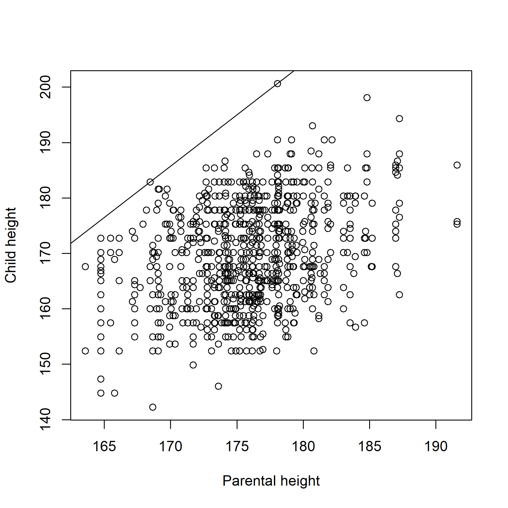
Figure 11.2: \(XY\)-plots of the relationship between Parent height (\(X\)) and Child height (\(Y\)) (after Galton, 1886). Left: with a regression line. Right: with a ceiling line.
This means that Galton could have used his eyes also in a different way, namely drawing a line on top of the data, rather than through the center of the data. Then, he would have drawn the border between an area with data, and an area without data describing a possible necessity relationship between Parent height and Child height: the ceiling line (Figure 11.2-right). Instead of estimating the average \(y\) for a given \(x\) he would have estimated the maximum \(y\) for a given \(x\). For example, with a Parent height of 175 cm, the estimated maximum possible Child height is about 195 cm. But Galton did not draw a ceiling line, and the social sciences have adopted the average trend line as the basis for many data analysis approaches. Regression analysis has developed over the years and many variants exist.
11.3.3 Regression-based statistical concepts do not (always) apply to NCA
In the development of regression analysis, over the years many regression-based statistical concepts relevant for estimating average effects, have been developed and taught to generations of students. These concepts include mediation, moderation, confounding, omitted variable bias, control variables and endogeneity and spuriousness. However, often these concepts do not apply (directly), or require re-interpretation in the context of NCA.
All differences stem from a fundamental distinction: regression models estimate expected values (average effects), whereas NCA characterizes constraints by estimating an upper boundary (ceiling) in the \(XY\)-plane and the associated empty space above it. The theoretical ceiling according to Equation (4.15) is a sharp border between the area where observations are possible (feasible area) and the area where cases are not possible (ceiling zone) within a bounding box (bounded variables). Regression is primarily concerned with how observations are distributed (the full space), while NCA is concerned with combinations of \(X\) and \(Y\) above a ceiling that do not occur (the empty space).101 Under the assumptions of proper model specification, sound theory, and adequate data, a regression line may be given a causal interpretation in terms of probabilistic sufficiency, and a ceiling line may be given a causal interpretation in terms of necessity.
Table 11.3 shows several regression-based statistical concepts that are defined for average-effect estimation; in NCA they often have no direct analogue or must be reinterpreted in terms of boundary patterns and constraints. The first column lists concepts that are meaningful in regression analysis. The second column refers to correspondence in NCA.
| Regression concept | NCA corresponding concept(s) |
|---|---|
| Mediation | Necessity chain |
| Moderation | Subgroup ceiling (conditional ceiling); may indicate additional necessary condition |
| Confounding | Empty space insensitive for third variables; multiple necessary conditions; necessity spuriousness; formal necessity hypothesis |
| Omitted variable bias |
|
| Control variable |
|
| Endogeneity | Reverse causality; measurement error |
| Spuriousness | Necessity spuriousness; formal necessity hypothesis |
A necessity effect in NCA is the maximum attainable \(Y\) given \(X\) (boundary), represented by the equations in Section 4.3.2. NCA estimates the overall population ceiling line in the \(XY\)-plane. When a sample is properly drawn from the population, the observed overall ceiling line can be viewed as an unconditional upper envelope across heterogeneous cases, including any third variables that operate in the population insofar as they constrain feasible \(XY\)-combinations. Consequently, the overall \(XY\)-ceiling line already reflects information from all possible third variables (both measured and unmeasured). The ceiling pattern is not sensitive to third variables changes within the feasible area. However, the estimated ceiling can still be affected by data limitations such as limited population support, measurement error, and finite-sample sparsity. In other words, the ceiling pattern is robust to distributional changes within the feasible area.
The average effect, on the other hand, represented the equality Equation (11.1) and estimated by a regression line, is sensitive to third variable changes and must be corrected for their influence in order to make the line causally interpretable in terms of an average value of \(Y\) for a given \(X\). All common statistical terms in the left column of Table 11.3 are defined in a regression context for estimation of the average effect. Note also that a necessity model represented by the ceiling line is deterministic in the sense that is not parameterized with a stochastic error term with information about other variables.
In regression, a mediator is a third variable \(Z\) that helps to explain how \(X\) influences \(Y\). Specifically, \(X\) has an average effect on \(Z\), and \(Z\) has an average effect on \(Y\).
In NCA, a related concept is the necessity chain as discussed in Section 4.6.4. This represents a sequence of necessity relations: \(X\) is necessary for \(Z\), and \(Z\) is necessary for \(Y\). Together, these form a necessity chain (\(X \rightarrow Z \rightarrow Y\) necessity), meaning that \(X\) is necessary for \(Y\) via \(Z\). However, the necessity of the chain is covered in the overall necessity ceiling. This overall ceiling line is NCA’s main interest as it describes the absolute maximum possible \(Y\) for a given \(X\), independently of other variables.
In regression, a moderator is a third variable \(Z\) that changes the strength or direction of the \(XY\)-relationship. Specifically, the average effect of \(X\) on \(Y\) may become larger or smaller depending on the value of the third variable.
In NCA, the corresponding concept is subgroup ceiling (conditional ceiling) which may indicate an additional necessary condition. In an \(XY\)-plot, all cases of the sample lie below the \(XY\)-ceiling line. Cases with a specific value of a third variable \(Z\) also remain below this same ceiling line. Therefore, a third variable cannot raise the ceiling line and cannot reduce the effect size of the overall \(XY\)-necessity relationship. However, a subset of cases with a specific value of \(Z\) may display a lower ceiling line. This occurs if all these cases lie below the overall \(XY\)-ceiling. Such a pattern indicates that \(Z\) itself may also be a necessary condition for \(Y\). The lower ceiling, however, does not represent the overall \(XY\)-ceiling of the population, but only the ceiling of that particular subgroup (thus a different theoretical domain, see Chapters 3 and 7). The population ceiling remains unchanged. “Moderation” in NCA indicates the presence of a subset constraint (multiple necessity).
In regression, a confounder is a third variable \(Z\) that influences both \(X\) and \(Y\). This dual influence can create or distort the apparent relationship between \(X\) and \(Y\): \(Z \rightarrow X\) and \(Z \rightarrow Y\). When a causal model that includes the confounder is more credible than a causal model without the confounder, the \(XY\)-relationship is considered a spurious association. Unmeasured confounders can bias the regression coefficients.102
In NCA, the logic of necessity is fundamentally different, and confounding in the regression sense is not a threat in NCA. Confounding redistributes probability within the feasible area (the area below the overall ceiling line) and cannot make the ceiling zone (the area above the overall ceiling line) populated. This means that a causal necessity interpretation of the empty space does not change with or without a confounding variable. Here, the empty space remains empty under the assumption of a good covered sample that is representative of the population: all combinations of variable values that exist in the population can, in principle, appear in the sample. If this assumption is violated, cases might appear in the empty area when new samples are drawn, because the original sample missed certain combinations. Likewise, if the underlying population changes due to structural changes, cases may emerge in what was previously an empty area. These issues reflect sampling or system changes. In other words, confounding can change densities within the feasible region but cannot create overall ceiling violations if the necessity relationship is true.103
In regression, omitted variable bias can occur when a relevant variable \(Z\) that affects both \(X\) and \(Y\) is left out of the regression model. When this happens, the estimated effect of \(X\) on \(Y\) becomes biased because part of the variation attributed to \(X\) is actually due to \(Z\): \(Z\) causes the estimated average effect. Omitted variable bias is therefore a statistical problem that arises from the covariance structure of the data.
In NCA, however, the idea of ‘leaving out a variable’ does not apply. The \(XY\)-ceiling line already reflects information from other variables. Including or excluding other variables does not affect the overall \(XY\)-ceiling line. In NCA, a necessity model by definition is a model of a pair of variables (\(XY\)), and the necessity of this pair is not biased by analyzing or not analyzing other pairs of variables (e.g., \(ZY\)) for necessity, also not if this ‘omitted’ third variable would be a mediator, moderator or confounder in the regression analysis (see mediation, moderation, and confounding as discussed above).
In regression, a control variable is a third variable \(Z\) that is included in the model to remove the influence of alternative explanations for the \(XY\)-relationship. This helps to avoid omitted variable bias and to isolate the net average effect of \(X\) on \(Y\) to find the unique contribution of \(X\) to \(Y\).
In NCA, however, the \(XY\) necessity effect is the overall effect, which is the necessity effect of interest, and it is independent of other variables. The logic of “controlling for” another variable therefore does not apply. There is nothing to control for (see omitted variable bias as discussed above).
In regression, endogeneity occurs when \(X\) is correlated with the error term of the regression model. This correlation violates a key assumption of ordinary least squares (OLS) regression, namely that \(X\) is exogenous (independent of the error term). When \(X\) is endogenous, the estimated average effect of \(X\) on \(Y\) becomes biased. Endogeneity can arise from several sources such as omitted variable bias, reverse causality, and measurement error.
In NCA, endogeneity in the regression sense does not exist. NCA does not estimate residual errors, and thus cannot suffer from bias caused by correlations between predictors and error terms. An error term represents the scatter of observations below the ceiling line, but NCA does not model this: the NCA model does not have an error term as shown in Equation (4.15). Whereas omitted variable bias does not apply to NCA (see above), the two other underlying sources of endogeneity in regression also affect NCA: reverse causality as discussed in Section 5.7 and measurement error as discussed in Section 5.8.
In regression, spuriousness refers to a situation in which an alternative causal explanation is clearly more credible. It often involves confounding, where an apparent average effect between \(X\) and \(Y\) disappears once a confounder \(Z\) is included in the regression model.
In NCA, spuriousness can arise when the underlying necessity theory incorrectly specifies the causal structure (inadequate necessity theory, see Section 5.9) and an alternative theory exists where a causal structure with a third variable \(Z\) that is sufficient for \(X\) and necessary for \(Z\) is more convincing, than the original single \(XY\) necessity relationship, making the latter theoretically spurious. In the development of a formal necessity theory (Chapter 7) the original and alternative explanations should be evaluated in a thought experiment (Section 7.5.2) to decide which model is theoretically justified. Thus, as a theoretical idea, spuriousness exists in NCA when an observed empty space in the \(XY\)-plot is causally interpreted as necessity, whereas an alternative explanation claims that the empty space is the result of a third variable \(Z\) that is sufficient for \(X\) and necessary for \(Y\) is stronger. For example, empirical support is available (empty upper-left corner in the \(XY\)-plot) that supports the (weak) “theory of the stork” (Höfer et al., 2004) claiming that a high number of stork nesting pairs (\(X\)) is necessary for a high human birth rate (\(Y\)). The alternative explanation that a third variable \(Z\) (Availability of high human-made structures, because people settle in a rural region with storks) is sufficient for a high number of stork nesting pairs (\(X\)) and necessary for a high number of human births (\(Y\)) is more plausible, making the original hypothesis spurious (Dul, 2016b). With a formal necessity hypothesis, spurious, unrealistic \(XY\) necessity relationships can be avoided (Chapter 7).
11.3.4 Combining NCA and regression-based methods
Given their many shared characteristics but distinct causal perspectives, NCA and regression can be combined in a causal-pluralist multimethod study. In such a study the same data are analyzed with both perspectives, although different assumptions are made about the data. For example, whereas NCA assumes bounded data, regression-based methods do not impose bounds such that fitted values may fall outside NCA’s bounding box. While regression-based inference often relies on distributional assumptions (e.g., Central Limit Theorem), NCA does not make an assumption about the distribution of the data. When analyzing data with different causal perspectives, the analyst must be aware of the different assumptions that are inherent to the corresponding methods. Rather than integrating the methods, the methods can be applied separately with their own perspectives and assumptions. Only during the interpretation of the results, additional causal lessons can be learned.
Adding NCA to an existing regression study can be relatively easy from the perspective of availability of data. If the data for the regression study is already available, no additional data are needed for conducting NCA. The scores of \(X\) and \(Y\) from the regression analysis can be used as input for NCA. However, from the perspective of theorizing for the validity of the results, conducting NCA usually requires considerable additional effort. NCA requires a formal necessity hypothesis (see Section 7.5), which is often not available and must be developed before conducting the analysis. While a probabilistic sufficiency hypothesis may already be available, this does not qualify as a necessity hypothesis. Just changing the phrasing of the hypothesis from “likely”, “probably”, “on average”, or similar, into necessity-based phrasing is certainly not enough.
Adding regression analysis to an existing NCA study may be cumbersome from the perspective of data availability. For testing the necessity hypothesis that \(X\) is necessary for \(Y\), data only on \(X\) and \(Y\) are enough. Such data are often not enough for also conducting a regression analysis for testing the hypothesis that \(X\) likely has an effect on \(Y\). Due to the risk of omitted variable bias, regression usually requires additional variables to be measured and included in the regression equation.
Figure 11.3 shows a flowchart for conducting a necessity analysis with NCA in combination with a regression-based analysis in a causal-pluralism multimethod study. The study starts with theorizing the necessity and probabilistic sufficiency hypotheses independently. Note that the theoretical justification of a necessity hypothesis differs from the theoretical justification of a probabilistic sufficiency relationship (Chapter 7).
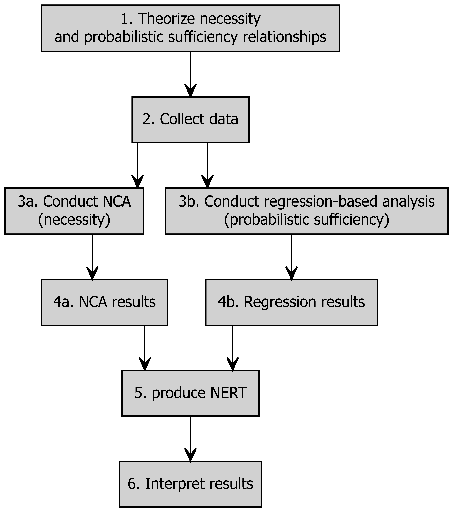
Figure 11.3: Flowchart for conducting a method-pluralism multimethod study with NCA and a regression-based method. NERT = NCA-Extended Regression Table.
The next step is collecting data to obtain valid and reliable scores that represent the \(X\)’s and \(Y\) of the hypotheses (see Chapter 8). Subsequently, two separate data analyses are done: the necessity analysis is conducted with NCA, while the probabilistic sufficiency analysis is done with the selected regression-based analysis (e.g., MLR, SEM). The regression results are often summarized in a regression table that reports the regression coefficients or path coefficients together with their \(p\)-values. Additional information is usually included as well, such as standard errors, confidence intervals, and model fit statistics, and a note may add additional information such as sample size. The left side of Table 11.4 shows a minimum example of such a table with artificial data. In this table the NCA results are added to obtain the NCA-Extended Regression Table (NERT). It expands the conventional regression table by adding two columns: the necessity effect size (\(d\)) and its \(p\)-value, for those predictors that are hypothesized to operate as necessary conditions (Table 11.4). A blank line in this table indicates that no theoretical rationale is available, such that the NCA analysis is not conducted for this condition. Additional NCA method information that applies to all tested necessity hypotheses may be added in the note to the table. This applies, for example, to the selected ceiling line for estimating the effect size.
| Regression coefficient | p-value |
Necessity effect size |
p-value | |
|---|---|---|---|---|
| Variables/Conditions | ||||
| \(X_1\) | 0.23 | 0.035 | 0.20 | < 0.001 |
| \(X_2\) | 0.12 | < 0.001 | 0.00 | 1.000 |
| \(X_3\) | 0.43 | 0.022 | ||
| \(X_4\) | 0.09 | 0.087 | 0.03 | 0.035 |
| \(X_5\) | 0.18 | 0.361 | 0.12 | 0.028 |
| Model fit (regression) | ||||
| \(R^2\) = 0.28 | ||||
| Note: | ||||
| n = 132. NCA ceiling line: CR-FDH. | ||||
A causal-pluralism multimethod study with NCA and a regression-based method can provide complementary information with the following possible results (Table 11.5).
|
Probabilistic sufficiency If X, then probably Y |
Necessity If not X, then not Y |
|
|---|---|---|
| Option 1 | Yes | Yes |
| Option 2 | Yes | No |
| Option 3 | No | Yes |
| Option 4 | No | No |
Option 1: \(X\) has an average effect on \(Y\) and is also necessary for \(Y\). \(X\) is not only important but also required for having the outcome (See \(X_1\) in Table 11.4).
Option 2: \(X\) has an average effect on \(Y\) but is not necessary for \(Y\). \(X\) is important but not essential. Its absence can be compensated by other factors (See \(X_2\) in Table 11.4).
Option 3: \(X\) has no average effect on \(Y\), but is necessary for \(Y\). It may be that \(X\) is overlooked in regression analysis as an important factor (possibly due to the existence of many cases with high level of \(X\) and low level of \(Y\)), but is still an essential factor (See \(X_5\) in Table 11.4).
Option 4: \(X\) has no average effect on \(Y\) and is also not necessary for \(Y\) (See \(X_4\) in Table 11.4).
Note that due to the different causal perspectives, one methodological approach cannot logically be a robustness check of the other approach. The results can only be different, not contradictory.
11.4 Combining NCA and SEM in a multimethod study
One of the most common causal-pluralism multimethod applications of combining NCA with a regression-based method is the use of NCA in the context of structural equation modeling (see Appendices ?? and ??). Since in many such published applications NCA is not applied according to the standards proposed in this book and elsewhere, this section (as well as Appendix H) provides more details and recommendations on how to conduct such a combined analysis. A SEM-model consists of two parts. The measurement model defines how specified indicators relate to the underlying constructs (“latent variables”). It determines how the constructs are operationalized by their indicators and how measurement error is represented. The structural model specifies the relationships among the constructs (latent variables). This is the regression-based part of the model.
Different estimation approaches exist for estimating the relationship between the latent variables (“path coefficients”). Conventional covariance-based SEM (CB-SEM, Jöreskog, 1970) estimates model parameters based on the covariance matrix, using techniques such as maximum likelihood. Component-based SEM, for example Partial Least Squares SEM (PLS-SEM, Wold, 1985) estimates latent variable scores as weighted composites of indicators to maximize the explained variance in the dependent variables. A more recent version of PLS is Consistent Partial Least Squares structural equation modeling (PLSc, Dijkstra & Henseler, 2015) that corrects the attenuation bias of traditional PLS estimates when reflective (common-factor) measurement models are used.
If the SEM104 model is estimated, latent variable scores can be obtained for further analysis, including for use of \(X\)- and \(Y\)-values as input to NCA. In PLS, these scores are directly estimated as part of the model fitting process as component-based SEM-methods are designed to estimate composites, whereas in CB-SEM the analyst must select (based on the analyst’s goals, e.g., unbiasedness, orthogonality, correlation preservation) a factor score estimation method to compute estimated scores for latent factors from observed variables after fitting the model. Thus, depending on the SEM modeling approach that is selected by the analyst, the input scores for NCA and thus the NCA results may differ.
NCA has been applied both in combination with CB-SEM (see Table ?? in Appendix ??) and in combination with PLS-SEM (see Table ?? in Appendix ??). Using PLS-SEM with NCA is popular, possibly for the following reasons:
It is often easier to extract latent variables scores from the estimated PLS models than from estimated CB-SEM models.
Leading PLS-SEM proponents introduced NCA as a methodological enrichment of PLS-SEM, and provided specific recommendations (Richter et al., 2020; Richter et al., 2022; Richter, Hauff, Ringle, et al., 2023) and extensions (Hauff et al., 2024; Sarstedt et al., 2024) for combining the methods.
A basic version of the NCA software became part of a popular software package originally developed for conducting PLS-SEM (SmartPLS, Section ?? in the Appendix).
Combining NCA with SEM involves using estimated scores of the latent variables as input for NCA. This allows the analyst to examine whether a relationship between two latent variables is not only related in terms of probabilistic sufficiency (as modeled in SEM) but also in terms of necessity, assuming a theoretical rationale exists. If a formal necessity hypothesis is available or can be derived (see Chapter 7), any pair of latent variables from the structural model can take the role of condition and outcome to study their necessity relationship, as long as a formal necessity hypothesis is available. When conducting NCA in combination with SEM, all general guidelines for conducting NCA apply (Section 10.3).
The availability of a user-friendly software package for applying NCA within the context of PLS-SEM is an advantage, but it also carries a risk. While the SEM part of the study is often a deductive study for testing a probabilistic sufficiency hypothesis, many published multimethod studies combining NCA and PLS-SEM conduct the NCA part as an exploratory investigation without having a necessity hypothesis. In the absence of a theoretical justification for necessity, such a study cannot claim that necessity has been identified (Section 6.2). This also applies if the theoretical justification is provided after the results are known. An exploratory study does not qualify for a hypothesis testing study (Chapter 7). Having a theoretical rationale before data collection is a prerequisite for making a claim of empirical evidence of necessity (see Section 9.10). After an exploration, a further study is needed to test the hypothesis that was derived from the exploration (Section 7.2).
It is also not uncommon, in particular in studies that combine CB-SEM with NCA, that the latent variable scores of the SEM-part of the study are not used as input to NCA. This happens, for example, when instead of using latent variable scores derived from the SEM study, scores independent from SEM (e.g., means of indicator scores) are used as the latent scores input for NCA. Such a combined NCA-SEM study would qualify as two separate studies according to Table 11.2.
11.4.1 Steps for conducting NCA with SEM
To outline the steps for an NCA-SEM multimethod study, first some SEM terminology is explained. Since SEM terminology about ‘indicators’, ‘weights’, ‘latent variables’ and ‘rescaling’ varies across the SEM literature, the terminology described in Table 11.6 is used in this book.
| Terms | Description |
|---|---|
| General | |
| Rescaling | Normalization or standardization of original scores. |
| Normalization (or min-max normalization) | Rescaling of scales with new minimum and maximum values (e.g., 0-1 or 0-100). |
| Standardization | Rescaling of observed scale values based on the their probability distribution. (z-score: mean = 0 and standard deviation = 1) |
| Indicator | |
| Indicator (variable) | A manifest/measured variable linked to a latent variable. |
| Indicator score | The value of an indicator. |
| Raw indicator score | The value of the indicator measured on its original scale. The scale usually has minimum and maximum values, e.g., Likert scale ranging from 1-5 or 1-7. |
| Normalized indicator score | The value of an indicator after min-max normalization of the raw indicator score (e.g., 0-1 scale or percentage scale 0-100). |
| Standardized indicator score | The value of an indicator after standardization of the raw indicator (z-score). |
| Original indicator score | The indicator that is used as input for the SEM model, which can be raw or standardized depending on the estimation settings. |
| Weight and loading | |
| (Indicator) weight | In PLS, the extent to which an indicator contributes to the latent variable score (as part of a weighted composite). |
| Standardized indicator weight | Indicator weight using standardized indicators. |
| Estimated indicator weight | In PLS, the estimated coefficient that multiplies an indicator to construct the latent variable score. |
| Factor loading | The strength of an indicator–latent variable relationship. |
| Latent variable | |
| Latent variable | An unobserved construct linked to multiple indicators. |
| Latent variable score | The value of a latent variable, calculated as a linear combination (weighted sum) of indicator scores. |
| Standardized latent variable score | A weighted linear combination of standardized indicator scores (z-scores). In PLS, these scores are computed directly during model estimation, whereas in CB-SEM they can be derived afterward as estimated factor scores using the model’s factor loadings. |
| Unstandardized latent variable score | Score obtained as a weighted linear combination of the original (unstandardized) indicator values. In PLS such scores are computed directly; in CB-SEM these scores can be derived post-estimation as factor scores. |
| Normalized unstandardized latent variable score | Normalized unstandardized latent variable score. Unstandardized latent variable score after normalization. |
Figure 11.4 shows a flowchart for conducting NCA in combination with SEM.
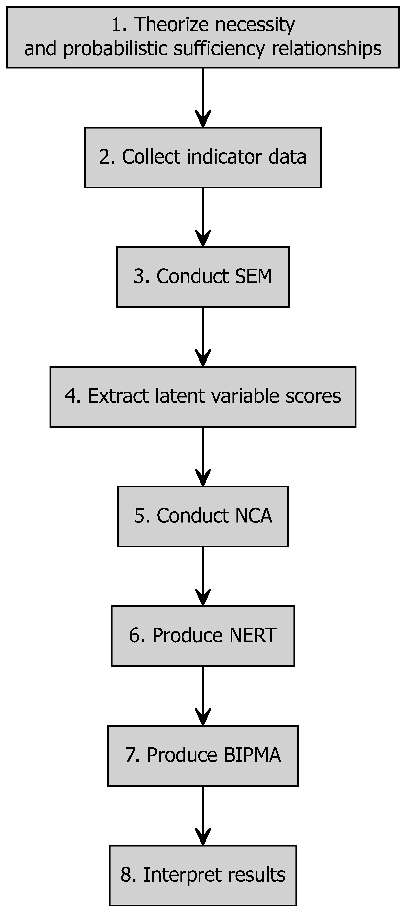
Figure 11.4: Flowchart for conducting NCA in combination with structural equation modeling (SEM). NERT = NCA-Extended Regression Table tool. BIPMA = Bottleneck Importance Performance Map Analysis tool.
Eight steps are distinguished, and each step is discussed in detail. An example is provided in Appendix H.
11.4.1.1 Step 1: Theorize necessity and probabilistic sufficiency
The first step is a fundamental step for any combined NCA and SEM study. An NCA-SEM study implies that the relationships between the variables are considered from two different causal perspectives: necessity (NCA) and probabilistic sufficiency (SEM), see Section 2.7. For inferring causality, both NCA and SEM require that the study starts with formulating theoretical expectations about the causal relationship (e.g., hypotheses). According to SEM, all relationships between latent variables in the structural model are considered probabilistic sufficiency relationships that are theoretically justified. According to NCA, all, a few, or none of these relationships may be hypothesized as necessity relationships as well, depending on the availability of a theoretical justification in the format of a formal necessity hypothesis (Section 7.5). A theory that includes one or more necessity relationships in addition to probabilistic sufficiency relationships is called an ‘embedded necessity theory’ (Bokrantz & Dul, 2023).
Latent variables of a structural model can have different roles. It can be a predictor variable (independent variable; condition in NCA) that has an effect on a predicted variable (dependent variable; outcome in NCA). For example, when in a structural model a latent variable \(M\) mediates the relationship between \(X\) and \(Y\), then \(M\) has two different roles. For the \(X\)-\(M\) relationship \(X\) is the predictor and \(M\) is the predicted variable, and for the \(M\)-\(Y\) relationship \(M\) is the predictor and \(Y\) the predicted variable. When a relationship is (also) considered a necessity relationship, NCA calls the predictor variable the ‘condition’ and the predicted variable the ‘outcome’.
11.4.1.2 Step 2: Collect indicator data
Conducting SEM assumes that data are available on observed indicators. SEM involves specifying a measurement model, which defines the relationships between indicators and latent variables. In step 2 the indicator data are collected. These data are the input for the measurement model.105
11.4.1.3 Step 3: Conduct SEM
The structural model specifies the relationships between latent variables. The complete model is then estimated using a chosen algorithm (e.g., PLS or CB-SEM). NCA is not part of the SEM estimation process itself, but it uses latent variable scores obtained from SEM as input for its own analysis. Therefore, it is important that the analyst ensures that the latent variable scores extracted from the SEM model are valid, reliable, and interpretable. Recommendations for good SEM practices are available in the literature and are not discussed here. Both commercial and open-source software tools are available to conduct SEM.
11.4.1.4 Step 4: Extract latent variable scores
The latent variable scores obtained from the SEM model serve as input for NCA. During SEM estimation, latent variable scores are often standardized (\(z\)-scores), resulting in scores with a mean of 0 and standard deviation of 1. Although NCA results are invariant to affine transformations (such as standardization or linear rescaling; Section 8.5.2), it is recommended for purposes of interpretation of a necessary condition to first unstandardize standardized latent variable scores. Unstandardized latent variable scores are expressed on a scale that is directly related to the original indicator scale, provided that the same measurement scale was used for all indicators of the latent construct. This allows for more meaningful interpretation of the NCA results, especially when discussing real-world implications and when results are discussed in terms of necessity-in-degree with specified levels of \(X\) and \(Y\). Note that not all SEM software packages offer the option to extract unstandardized latent variable scores. Appendix H gives an example showing how to convert standardized scores back to unstandardized scores when needed.
When all unstandardized latent variable scores are derived from indicators measured on the same scale (i.e., with identical minimum and maximum values), min-max-normalization is not required. However, if latent variables have different scales, min-max normalization is recommended. This ensures that the latent variable scores are comparable, which is particularly important in later steps (e.g., Step 7: producing a BIPMA).
A common approach to min-max normalization is to rescale scores to a 0–100 range, allowing latent variable scores to be interpreted as percentages of their original scale range. Alternatively, rescaling to a 0–1 range can be used, which is often more convenient for NCA, as it yields a scope of 1. However, this is optional and not required for the validity of NCA results.
11.4.1.5 Step 5: Conduct NCA
The unstandardized and possibly min-max normalized latent variable scores are input to NCA. In the first part of the analysis, the hypothesized relationships are tested for necessity-in-kind, which is the qualitative statement that \(X\) is necessary for \(Y\) without specifying levels of \(X\) and \(Y\) other than absence/presence or low/high. The observed effect size \(d\) and the \(p\)-value are compared with their threshold values (e.g., \(d\) = 0.10; \(p\) = 0.05) that are set by the analyst to decide if a predictor variable is necessary for a predicted variable, as suggested by the hypothesis.
In the second part, identified necessary in conditions in kind are selected for a bottleneck analysis for necessity-in-degree, which results in a quantitative statement that level \(x\) of \(X\) is necessary for level \(y\) of \(Y\). A specific format of this table, with the outcome values expressed as actual values or percentiles, and the conditions expressed as percentiles, provides information for each latent variable about the percentage of cases that are bottlenecks. A bottleneck case is a case that does not have the required level of the condition for a target level of the outcome.106
11.4.1.6 Step 6: Produce NERT
The NCA-Extended Regression Table (NERT) summarizes the main SEM results in terms of direct effects (path coefficients), total effects, and their \(p\)-values and the main NCA results in terms of necessity effect sizes and their \(p\)-values. Note again, that NCA is not a robustness check of SEM and vice versa. The two approaches provide different insights due to different causal perspectives.
11.4.1.7 Step 7: Produce BIPMA
Whereas NERT presents the results of both NCA and SEM, the Bottleneck Importance Performance Map Analysis (BIPMA) builds on that by providing a tool to assist practitioners to prioritize their actions and resources based on these results. Evidence-based action means that the action is informed by the results of an empirical study, in particular based on hypotheses that were tested and supported (see the NERT). A SEM-hypothesis is a causal claim about average effects: if \(X\) then probably \(Y\). The hypothesis is usually considered supported if the criteria for statistical significance are satisfied. An NCA-hypothesis is a causal claim about any case: if not \(X\) then not \(Y\). The hypothesis is considered supported if the criteria for statistical significance and for practical significance are satisfied (assuming that a formal necessity hypothesis is available). The NERT reports the effect sizes (total effect for SEM; necessity effect size for NCA) and their significance (\(p\)-values). Only supported hypotheses are considered in BIPMA for evidence-based action.
Taking evidence-based action based only on SEM-results (assuming a supported probabilistic sufficiency hypothesis) means that a predictor variable that has a significant average effect on the predicted variable is a candidate for being changed. The action changes the predictor in order to change the average value of the predicted variable. According to a basic regression assumption, during the change of this predictor all other predictors remain constant (ceteris paribus). This (“all else equal”) assumption is the idea in regression analysis that a coefficient represents the effect of one predictor while holding the other included predictors constant. This implies that only one predictor can be selected for prioritizing an action based on SEM. Selection of multiple predictors and taking action on them simultaneously violates the ceteris paribus requirement. The only evidence-based way to select multiple predictors is through a sequential prioritization, in which a new SEM analysis is conducted after each (hypothetical) change has been made.
A SEM-based action addresses an entire group of cases since SEM results apply to an entire group by definition (average effect). The action is considered most effective if a predictor is “important” and has low “performance”. Importance refers to the strength of the probabilistic sufficiency (average effect) relationship of the predictor variable on the predicted variable. Its metric is the total average effect on the outcome including direct and indirect effects. Performance refers to the mean normalized score of the predictor compared to other predictors. A low performance score means that the predictor has room for improvement. In PLS-SEM, the Importance Performance Map Analysis (IPMA) (Ringle & Sarstedt, 2016) is often used for prioritization. In this map Importance is displayed on the horizontal axis and Performance on the vertical axis. The practical meaning of IPMA is that action priority should be given to a predictor variable with high level of Importance, and low level of Performance (points in the bottom-right corner assuming positive total effects and average scores).
Taking evidence-based action based only on NCA results (assuming supported necessity hypotheses) implies that a predictor variable is changed such that a selected target outcome of the predicted variable is possible (though not guaranteed). No assumption is needed about other predictors, including no requirement that these must remain constant. This implies that selection of multiple predictors and taking evidence-based action on them simultaneously is possible. Furthermore, an NCA-based action can address a single case, a small group of cases or an entire group of cases since NCA results apply to all cases. The goal of the action is to ensure that bottleneck cases are resolved: a bottleneck case is a case that does not meet the target condition level that is necessary for the selected target outcome level. An NCA-based action is most effective if only cases are selected that are below the required target condition level (for a detailed discussion see Chapter 12).
In an extension of IPMA, Hauff et al. (2024) introduced the combined Importance Performance Map Analysis (cIPMA) which combines results of NCA and SEM. They add the third dimension that is called here the ‘bottleneck’ dimension. This dimension takes into account how effective the action is from the perspective of the presence of bottleneck cases according to NCA. This means that for cIPMA a target outcome must be selected and that an additional action goal is that the target outcome set by the analyst must become achievable by as many as possible cases. If the target outcome is set at a low level, the goal is to enable a base level of the outcome (e.g., mean or even lower outcome, for example corresponding to a minimum level that is achieved by 50 or 75 percent of the cases). If the target outcome is set at a high level, the goal is to enable high level of the outcome (e.g., corresponding to a minimum level that is achieved by only about 25 or 10 percent of the cases).
NCA’s bottleneck table provides the required information for an NCA-based action in the context of cIPMA. This table is produced in Step 5 of a combined NCA-SEM study (see Figure 11.4). After establishing the target outcome, the bottleneck table provides the corresponding target condition for each necessary condition. The version of the table where conditions are expressed as percentiles provides information about the percentage and the number of cases that are bottleneck cases for the conditions. These cases have not achieved the target condition that is necessary for the target outcome.
The cIPMA plot integrates three dimensions: Importance on the horizontal axis, Performance on the vertical axis, and Bottlenecks represented by the size of the points in the Importance-Performance plot. Each point represents a predictor variable with a given combination of Importance and Performance scores. cIPMA suggests that the best choice is the predictor with the largest Importance score and lowest Performance score (according to SEM), and the largest number of bottleneck cases (according to NCA’s bottleneck table).
When prioritization is based on the combined results from NCA and SEM, only one predictor variable can be selected for change if this change is (also) based on SEM results (because the ceteris paribus assumption of SEM applies). However, it is possible that a bottleneck case is not only a bottleneck for the selected predictor, but also for another predictor. Solving a bottleneck for one predictor (by changing the level of that predictor such that it meets the target condition level) is only effective if the case is not also a bottleneck case for another predictor. A case with multiple bottlenecks (bottlenecks for multiple conditions) remains a bottleneck case after resolving the bottleneck for the selected predictor, because the bottlenecks for the other predictors remain unresolved.
Figure 11.5 shows an example of a Bottleneck Importance Performance Map Analysis (BIPMA).
![Example of a Bottleneck Importance Performance Map Analysis (BIPMA) for evidence-based practical advice (prioritizing predictors) based on NCA and SEM results. The size of the dot is an indication of the number of *single* bottleneck cases that cannot achieve the target outcome (here 90% of the maximum of the outcome). White points: predictor has a significant necessity effect according to NCA and a significant total average effect according to SEM. Black points: predictor has a non-significant necessity effect and a significant total average effect. Gray points: predictor has a significant necessity effect and a non-significant total average effect. The horizontal and vertical thin dashed lines corresponds to mean Performance and the mean Importance of the predictors with a significant total average effect, respectively.](examplebipma3tool.png)
Figure 11.5: Example of a Bottleneck Importance Performance Map Analysis (BIPMA) for evidence-based practical advice (prioritizing predictors) based on NCA and SEM results. The size of the dot is an indication of the number of single bottleneck cases that cannot achieve the target outcome (here 90% of the maximum of the outcome). White points: predictor has a significant necessity effect according to NCA and a significant total average effect according to SEM. Black points: predictor has a non-significant necessity effect and a significant total average effect. Gray points: predictor has a significant necessity effect and a non-significant total average effect. The horizontal and vertical thin dashed lines corresponds to mean Performance and the mean Importance of the predictors with a significant total average effect, respectively.
BIPMA differs from cIPMA regarding the bottleneck cases to be considered during prioritization. BIPMA only considers single bottleneck cases. Single bottleneck cases are a bottleneck in only one predictor. These cases are relevant for taking action based on combined results of NCA and SEM. While cIPMA defines the bottleneck dimension for a predictor as the percentage or number of single and multiple bottleneck cases. BIPMA defines it as the percentage or number of single bottleneck cases, only to avoid ineffective actions.
Three additional adaptations compared to cIPMA are implemented in BIPMA. To avoid the risk of false positive conclusions, as a general rule BIPMA only includes predictors to be considered for prioritization when the hypothesis is supported. Although this is a judgment of the analyst, usually an analyst rejects the hypothesis when the \(p\)-value is large (e.g., \(p\ge\) 0.05), suggesting that the observed effect may be compatible with “no effect”.107 However, cIPMA is asymmetric regarding this statistical significance criterion as it adopts it only for NCA results. cIPMA (and IPMA) allow analysts to consider non-significant SEM results for practical action.108 BIPMA harmonizes this principle by not only excluding non-significant NCA results for evidence-based practical action, but also non-significant SEM results. 109 Since BIPMA is a tool for practical action and not a tool for reporting results of the two analyses, the BIPMA should always be accompanied with the NERT tool (or similar) to report all observed effect sizes and their significance levels.
The second additional adaptation is that BIPMA deals with different relationship directions between predictor variable and predicted variable. The common situation in SEM is that the predictor variable has a positive (average) effect on the predicted variable. BIPMA also handles predictor variables with hypothesized and observed negative total average effect on the predicted variable. For example, Mwesiumo (in press) added a negative total effect for one of the predictor variables on the negative side of cIPMA’s Importance-axis. Since this is inconsistent with the advice (Hauff et al., 2024) that priority should be to points in the bottom-right corner of cIPMA, BIPMA explicitly uses the absolute total effect as Importance score, such that importance scores of positive total effects and negative total effects are comparable and priority should be given to points in the bottom-right corner independent of the sign of the total effect. The BIPMA plot identifies an Importance score that is based on a negative total effect by adding ‘-inv’ to the name of the predictor, indicating that this predictor has an inverse effect on the predicted variable. This is shown in Figure 11.5 for predictor D. While an increase of the predictor variable with a positive total effect will increase the predicted variable, a decrease of the predictor variable with a negative total effect will increase the predicted variable.
A third additional adaptation is that BIPMA also handles different necessity directions. For NCA the default necessity direction is high-high, meaning that a high level of \(X\) is necessary for a high level of \(Y\). The other directions are low-high, high-low, or low-low, suggesting that low \(X\) is necessary for high \(Y\), high \(X\) is necessary for low \(Y\), or low \(X\) is necessary for low \(Y\), respectively. This implies that the expected empty corner of the \(XY\)-plot is not upper-left, but that another corner of the \(XY\)-plot is expected to be empty and should be analyzed. For example, an expected and observed empty corner is the upper-right corner of the \(XY\)-plot (low \(X\) is necessary for high \(Y\)), which implies that for resolving bottleneck cases the predicted variable must decrease, rather than increase. If the corner deviates from corner = 1, the corner is specified in the BIPMA plot in the predictor label. This is shown in Figure 11.5 for predictor D. Predictor D has a negative average effect and an empty upper-right corner in the \(XY\)-plot.
BIPMA aims to inform practice as closely as possible in line with the evidence of empirical results both in terms of effect size and in terms of statistical significance. Using points with different shades of gray, BIPMA displays the four possible combinations of statistical (non-)significance of NCA and SEM results (Figure 11.5):
In BIPMA conditions are displayed as points with different sizes and shades of gray:
The size of the point reflects the number of single bottleneck cases for the specific condition. The percentage and number of single bottleneck cases is mentioned near the point.
White point: the total average effect (Importance) and the necessity effect are both significant. The size of the point reflects the number of single bottleneck cases.
Black point: the total average effect is significant and the necessity effect is non-significant. The black point has a standard size.
Gray point: the total average effect is non-significant and the necessity effect is significant. The size of the point reflects the number of single bottleneck cases. When according to SEM the average effect of the conditions is statistically non-significant only the vertical position (Performance) contains relevant information for action. No evidence-based information is available about the total average effect (Importance). For this reason the point is moved to the left outside the horizontal axis, indicating absence of information.110
If the total effect is non-significant (statistically) and the necessity effect is non-significant (statistically or practically) the point is not shown. There is no evidence for practical action. The name of such a non-significant predictor is mentioned at the bottom of the plot.
The goal of BIPMA is to identify predictor variables for action using results from NCA and SEM. Several prioritization approaches and corresponding ways to evaluate the BIPMA plot can be used to combine these criteria. Assuming a positive direction for the average effect and a high-high direction for the necessity effect, these strategies can be formulated as follows:
Enable a target outcome. This approach only considers NCA results. It is feasible when SEM results do not give a clear preference for predictors to be changed (e.g., no points in the bottom-right corner of BIPMA). Multiple predictor variables can be selected for an action based on the NCA results. This approach implies that the goal of the intervention is to enable a high target score by ensuring that none of the conditions have bottleneck cases. For example, if the target outcome is desirable and \(X\) is necessary for high \(Y\), the target can be set at a high level that is achieved by not more than 25% or 10% of the cases (the level corresponding to the best performing cases). The intervention then consists of ensuring that the bottleneck cases are resolved by increasing the values of the conditions with bottleneck cases. The approach is also feasible when the goal is to enable a certain minimum level of the outcome for all cases. The target outcome can for example be set at a minimum level that is achieved by more than 50% or 75% of the cases.
Improve the average outcome. This approach only considers the SEM results. It is feasible when NCA results show that none of the conditions are necessary or have only a small number of bottleneck cases. Only one predictor variable can be selected for action at once given the ceteris paribus requirement of regression analysis. For selecting a second predictor, evidence-based action requires a new SEM and BIPMA with a new dataset representing the situation after the intervention on the first predictor.
Improve the average outcome and enable a target outcome. This approach considers both the NCA and SEM results. Since SEM is part of the consideration, this approach requires that only one predictor is selected for evidence-based action. The combined approach is most effective for a predictor with a large number of bottleneck cases in the bottom-right corner of the BIMPA plot.
Since these stylized situations may not exist in practice, hybrid approaches, for example different approaches for different predictors may be considered.
SEM results are average effect results for the entire group of cases and the goal is to increase the average performance. NCA results allow also custom-made approaches for individual cases or a selection of cases. The case or group of cases get a specific intervention depending on the case’s bottleneck situation. An individualized NCA-based intervention can considerably improve the intervention effectiveness and efficiency. This is discussed in Chapter 12.
11.4.1.8 Step 8: Interpret results
In the final step the results of the two approaches are interpreted using NERT and BIPMA. It is possible to conduct robustness checks to explore the sensitivity of choices made by the analyst on key results of NCA and SEM. Commonly recommended robustness checks for SEM do not apply to NCA. The NCA-related robustness checks in the context of an NCA-SEM deal with the following two NCA key results that may be affected:
Identification of a predictor from the SEM structural model as a potential necessary condition.
Prioritization of predictors for intervention.
As discussed in Section 9.12, these key results may be affected by the analyst’s choices of:
Ceiling line.
Threshold level of the effect size.
Threshold level of the \(p\)-value.
Scope.
Outlier handling.
Target outcome.
A robustness check consists of making an alternative (reasonable) choice rather than the original choice, and studying its influence on the key results. The output of the robustness check is the NCA robustness table. If the influence of changes of the analyst’s choices is small, the original results may be considered robust; if not, the original results may be fragile.
11.4.2 Recommendations for combining NCA and SEM
In publications where NCA is applied in combination with SEM, usually SEM is the main analysis and NCA is used as an additional analysis. However, several guidelines for applying NCA are often violated. This applies, for example, to the following recommendations with ‘must-have’ priority level (see the checklist in Section 10.3):
Checklist item 4: When, in the context of an NCA study, a comparison is made between NCA’s causal perspective and the causal perspective inferred from conventional regression-based/statistical approaches, use the term probabilistic sufficiency for the latter, and not just sufficiency. The term sufficiency suggests determinism (as applied in QCA’s configurational sufficiency logic). This recommendation is often violated in studies that combine NCA with SEM […].
See this book: Sections 2.3, 2.4.
Suggested articles: Dul (2024a) […]
The results of SEM’s regression analyses (path coefficients of the structural model) are often interpreted as ‘sufficiency’, whereas sufficiency (like necessity) refers to deterministic causal logic and not to the probabilistic causal logic. A better description of the presumed causal relationships of the structural model (like any relationship that is analyzed with regression analysis) would be ‘probabilistic sufficiency’.Checklist item 5. In multimethod studies, use and refer to NCA as an approach with a specific perspective on causality and data analysis, and do not incorrectly refer to it as a robustness check or add-on to other methods (and vice versa). This recommendation is often violated in studies that combine NCA with SEM.
See this book: Sections 2.7, 11.4, 11.5.
Suggested article: Dul (2024a)
In studies that combine NCA with SEM, NCA is often suggested as a robustness check of SEM. However, this is incorrect. A good practice is to use NCA as a methodological approach on its own with a different causal perspective, such that the two approaches can give complementary insights.Checklist item 7: Formulate the necessity relationship explicitly as a necessary condition hypothesis: \(X\) is necessary for \(Y\). For a deductive study this is done before data analysis; for an explorative study this is done after data analysis when a necessity relationship is found.
See this book: Sections 7.5.
In studies that combine NCA with SEM, well-founded probabilistic sufficiency hypotheses are often formulated (to be tested with the SEM model). However, necessity hypotheses are often not provided. Formulating necessity hypotheses is a requirement since the necessity causal perspective differs from the probabilistic sufficiency causal perspective. This applies also to studies that use NCA for exploration or as an additional analysis. A good practice is to formulate necessity hypotheses prior to conducting the analysis, just as is done with the probabilistic sufficiency hypotheses. However, it is estimated that fewer than 25% of NCA–SEM publications include a necessity hypothesis, and a probabilistic sufficiency hypothesis cannot compensate for this absence.Checklist item 9: Explain why \(X\) is necessary for \(Y\) using a causal explanation (narrative) by answering three questions: (1) Why does \(X\) enable \(Y\) (\(X\) is an enabler). The existing literature may be a source of information; (2) Why does the absence of \(X\) lead to the absence of \(Y\) (\(X\) is a constraint); (3) Why is the absence of \(X\) not compensable (no substitution for \(X\)). Making the narrative complete is a creative process, supported by literature and experiences of scholars and practitioners.
See this book: Section 7.5.3.
This often violated recommendation is related to the previous one. Even if a necessity hypothesis is formulated, it should also be explained why it is expected that \(X\) is necessary for \(Y\) (the causal explanation). Less than half of the few NCA - SEM publications with a necessity hypothesis provide a causal explanation why \(X\) would be necessary for \(Y\). In a theory testing study, a necessity hypothesis for NCA should get the same attention and depth regarding the causal explanation as a probabilistic sufficiency hypothesis for SEM, as for example is done in a study by Battistoni et al. (2023).Checklist item 19: Explain whether and how the data were transformed, and whether the transformation aligns with NCA. Affine transformation (including linear transformation) produces valid results. NCA’s data analysis does not require data transformation and non-transformed data are often more meaningful and better interpretable (e.g., levels of a Likert scale) than transformed data. This particularly applies to necessity-in-degree and interpretations of specific levels of \(X\) being necessary for specific levels of \(Y\). Refrain from conducting non-linear data transformation (e.g., log-transformation, logistic transformation) unless the transformed data represent \(X\) and \(Y\) as defined in the necessity hypothesis (e.g., log-transformed GDP). […].
See this book: Sections 8.5.2, Appendix D.
In most applications of SEM, latent variable scores are standardized (centering the data around zero and scaling the data to have a standard deviation of one). For proper interpretation of necessity-in-degree (bottleneck table) the use of unstandardized scores may be more meaningful. When the indicators are measured on similar scales like Likert scales, unstandardized scores are more closely related to the original measurement scale than standardized scores, which makes interpretations of levels more meaningful.Checklist item 20: Specify and justify the selected ceiling line by considering theoretical expectations (border is linear or non-linear), type of data (discrete or continuous), observed border pattern (regular or irregular), balance between accuracy and generalizability (avoiding overfitting), and quality of the data (data with/without measurement error, simulation data).
See this book: Sections 4.3.2, 9.3.2. Often no justification is given for the selection of the ceiling line. The CE-FDH ceiling line is commonly selected without further explanation, possibly because this line was used for good reasons in the original publication that introduced NCA in the SEM context (Richter et al., 2020). However, this reason might not apply in other situations. Similarly, when the two default ceiling lines (CE-FDH and CR-FDH) are used, no explanation is usually given for this selection.Checklist item 29: Include the \(XY\)-tables or \(XY\)-plots of all tested/explored relationships, preferably in the main text. It is essential that readers are able to inspect them visually.
See this book: Sections 9.5.
Often, not all \(XY\)-plots of tested necessity relationships are presented. In some cases, only the plots of the supported relationships are provided. In others, \(XY\)-plots are not provided at all.Checklist item 32: Conclude about necessity-in-kind using three criteria: (1) Theoretical justification (the formal hypothesis), (2) Effect size not below the selected threshold value, (3) \(p\)-value below the selected threshold value. Note that for support all criteria apply and that missing just one of them is enough for a rejection. This implies, for example, that without theoretical justification the claim for a necessity relationship is rejected.
See this book: Sections 9.10.
In many NCA-SEM studies not all three criteria for concluding about necessity (theoretical support, large effect size, small \(p\)-value) are taken into consideration. Often the requirement of theoretical support is lacking (see items 7 and 9 above). Usually, only theoretical support for the probabilistic sufficiency relationships of the structural model is provided, but this is not informative about the necessity relationship. Without theoretical support for a necessity relationship, it is invalid to conclude that a necessity relationship was identified, even if the effect size was large enough, and the \(p\)-value small enough.Checklist item 36: Conduct robustness checks and summarize the results: is the main conclusion about necessity (support or rejection of the hypothesis) sensitive to choices by the analyst regarding ceiling line, scope, effect size threshold, \(p\)-value threshold, removing/keeping outliers, different choices for the target outcome? Conclude if the results are robust or fragile.
See this book: Section 9.12.
In many studies a robustness check is done for the SEM part of the study, but not for the NCA part. Robustness checks for NCA are different from those for SEM, and equally important. For example, outliers for SEM may not be outliers for NCA, and vice versa. NCA’s outlier analysis can be done with the NCA software in R (Section H.8 in the Appendix H for an example).Checklist item 38: When NCA is used in a causal-pluralism study by combining it with another method (e.g., regression-based methods or QCA), report how the results of NCA and the other method complement each other using NERT, NEST and BIPMA when applicable.
See this book: Chapter 11.
In many studies, SEM results and NCA results are presented separately without discussing the insights obtained from combining the two methods. The discussion could focus on the consequences of the combined results for theory and practice. The use of NERT (Section 11.3) and BIPMA (Section 11.4.1.7) could be helpful to integrate the results.
The quality of studies that combine NCA with SEM could be enhanced by ensuring that these and other ‘must-have’ recommendations are fulfilled. Once the must-have requirements are met, further improvements can be achieved by addressing the ‘should-have’ and ‘nice-to-have’ suggestions in the checklist (Section 10.3). As the number of combined NCA and SEM studies grows, reviewers may raise the standard for the appropriate application of NCA. Section 10.3 includes recommendations and references to meet the requirements.
Appendix H provides a demonstration of combining NCA and PLS-SEM with R.
11.5 NCA with QCA
Qualitative Comparative Analysis (QCA) has its roots in political science and sociology, and was developed by Charles Ragin (Ragin, 1987, 2000, 2008). QCA has steadily evolved over the years, and currently many types of QCA approaches exist. A common interpretation of QCA as described by Schneider & Wagemann (2012) and Mello (2021) is followed in this book.
11.5.1 Principles of QCA
Set theory is at the core of QCA. Instead of studying relations between variables, set theory focuses on relations between sets. Cases can be either part of a set or not part of a set. The Netherlands, for example, is a case that is ‘in the set’ of rich countries, and Ethiopia is a case that is ‘out of the set’ of rich countries. Set membership scores (rather than variable scores) are linked to a case. Regarding the set of rich countries, the Netherlands has a set membership score of 1 and Ethiopia of 0. In the original version of QCA the set membership scores could only be 0 or 1. This version of QCA is called crisp-set QCA (csQCA). Later also fuzzy-set QCA (fsQCA) was developed. Here the membership scores can also have values between 0 and 1. For example, Croatia could be allocated a set membership score of 0.7, indicating that it is ‘more in the set’ than ‘out of the set’ of rich countries.
In QCA, relations between sets are studied. Suppose that one set is the set of rich countries (\(X\)), and another set is the set of countries with happy people (‘happy countries’, \(Y\)). QCA uses Boolean (binary) algebra and expresses the relationship between condition \(X\) and outcome \(Y\): the presence or absence of \(X\) is related to the presence or absence of \(Y\). More specifically, the relations are expressed in terms of sufficiency and necessity. For example, the presence of \(X\) (being a country that is part of the set of rich countries) could be theoretically stated as sufficient for the presence of \(Y\) (being a country that is part of the set of happy countries). In this case, the following claims would apply: All rich countries are happy countries; the set of rich countries is a subset of the set of happy countries; no rich country is not a happy country; set \(X\) is a subset of set \(Y\). Alternatively, another theory could state that the presence of \(X\) (being country that is part of the set of rich countries) is necessary for the presence of \(Y\) (being a country that is part of the set of happy countries). All happy countries are rich countries; the set of rich countries is a superset of the set of happy countries; no happy country is not a rich country; set \(X\) is a superset of set \(Y\).
QCA’s main causal interest is sufficiency. QCA assumes that a configuration of single conditions produces the outcome. For example, the condition of being in the set of rich countries (\(X_1\)) AND the condition of being in the set of democratic countries (\(X_2\)) is sufficient for the outcome of being in the set of happy countries (\(Y\)). QCA’s Boolean logic statements for this sufficiency relationship is expressed as follows:
\[\begin{equation} \tag{11.2} X_1*X_2 → Y \end{equation}\]
where the symbol ‘\(*\)’ means the logical ‘AND’, and the symbol ‘\(→\)’ means ‘is sufficient for’.
Furthermore, QCA assumes that several alternative configurations may exist that can produce the outcome, known as ‘equifinality’. This is expressed in the following example:
\[\begin{equation} \tag{11.3} X_1*X_2 + X_2*X_3*X_4 → Y \end{equation}\]
where the symbol ‘\(+\)’ means the logical ‘OR’.
It is also possible that the absence of a condition is part of a configuration. This is shown in the following example:
\[\begin{equation} \tag{11.4} X_1*X_2 + X_2*{\neg}X_3*X_4 → Y \end{equation}\]
where the symbol ‘\(\neg\)’ means ‘absence of’.
Single conditions that are necessary/non-redundant in a configuration that is sufficient for the outcome are called INUS conditions (Mackie, 1965). An INUS condition is an ‘Insufficient but Non-redundant (i.e., Necessary) part of an Unnecessary but Sufficient condition.’ In this expression, the words ‘part’ and ‘condition’ are somewhat confusing because ‘part’ refers to the single condition and ‘condition’ refers to the configuration that consists of single conditions (parts). Insufficient refers to the fact that a part (single condition) is not itself sufficient for the outcome. Non-redundant refers to the necessity of the part (single condition) for the configurations being sufficient for the outcome. Unnecessary refers to the possibility that other configurations can also be sufficient for the outcome. Sufficient refers to the fact that the configuration is sufficient for the outcome.
Although a single condition may be locally necessary for the configuration to be sufficient to produce the outcome, it is not globally necessary for the outcome because the single condition may be absent in another sufficient configuration. INUS conditions are thus usually not necessary conditions for the outcome (the latter are the conditions that NCA considers). Hence, in above generic logical statements about relations between sets, see Equations (11.2), (11.3), (11.4), \(X\) and \(Y\) can only be absent or present (Boolean algebra), even though the individual members of the sets can have fuzzy scores. Both csQCA and fsQCA use only binary levels (absent or present) of the condition and the outcome when formulating the solution.
The starting point of QCA’s data analysis is to transform variable scores (if available) into set membership scores. Variable scores are called “raw” scores and the transformation process is called ‘calibration’. Calibration can be based on the distribution of the data, the measurement scale, or expert knowledge. The goal of calibration is to get scores of 0 or 1 (csQCA) or between 0 and 1 (fsQCA) to represent the extent to which the case belongs to the set (set membership score). In fsQCA, cases with membership score below 0.5 do not count as having the condition present and contribute to the assessment of absence of the condition. Similarly, cases with membership score above 0.5 qualify as having the condition present.
As a qualitative method, QCA’s calibration process is preferably guided by knowledge about the studied cases. However, particularly in large-n fsQCA studies a ‘mechanistic’ (data driven) transformation is often unavoidable due to lack of access to the cases. For this transformation the non-linear logistic function is usually selected. This selection is somewhat arbitrary (but is built into popular QCA software) and moves the variable scores to the extremes (0 and 1) in comparison to just (linear) transformation (e.g., min-max normalization) of the data. With the standard logistic transformation, low values move toward 0 and high values toward 1. When no substantive reason exists for the logistic transformation, and mechanistic transformation is unavoidable, linear transformation from raw scores to set membership scores (normalization) may be preferred to avoid changing the distribution of the data and obscure possible necessary conditions (Dul, 2016b). Moving the \(X\)- and \(Y\)-scores to the extremes implies that cases in the \(XY\)-plot with low to middle values of \(X\) move to the left and cases with middle to high values of \(Y\) move upwards. As a result, the upper-left corner is filled with more cases. Consequently, potential meaningful empty spaces in the original data (indicating necessity) may not be identifiable. With the normalized transformation, the cases stay where they are; an empty space in a corner of the \(XY\)-plot with the original data stays empty. The normalized transformation is an alternative to an arbitrary transformation: it just changes variable score into set membership scores, without affecting the distribution of the data. A calibration evaluation tool to check the effect of calibration on the necessity effect size is available at https://r.erim.eur.nl/r-apps/qca/.
QCA performs two separate analyses with calibrated data: a necessity analysis for identifying necessary conditions111, and a sufficiency analysis (‘truth table’ analysis) for identifying sufficient configurations. Although the focus in QCA is on sufficiency, a necessity analysis precedes the sufficiency analysis because if a necessary condition is not part of the sufficient configuration, the outcome will not be produced:
“If a causal condition passes the analyst’s test of necessity, then this condition should be made a component of every causal expression that the analyst examines subsequently in the analysis of sufficiency” (Ragin, 2000, p. 254)
In csQCA, \(X\) and \(Y\) are expressed as dichotomous set membership scores: present (in the set) or absent (not in the set). In the \(XY\)-table, a necessary condition in kind is identified when the upper-left cell is (almost) empty (Figure 11.6). Necessity consistency is the number of cases in the upper-right cell divided by the number of cases in the upper-left plus upper-right cell.

Figure 11.6: Necessity analysis by dichotomous NCA and crisp set QCA.
In fsQCA, \(X\) and \(Y\) are expressed as discrete or continuous set membership scores indicating the extent to which the condition or outcome is in the set. In the \(XY\)-plot, a diagonal is drawn and a necessary condition in kind is identified when the area above the diagonal is (almost) empty (Figure 11.7-left). Necessity inconsistency is the sum of vertical distances of cases above the diagonal, divided by the sum of vertical distances of all cases. Necessity consistency is the complement of this value (1 - inconsistency).

Figure 11.7: Comparison of necessity analysis with fsQCA’s (Left) and with NCA (Right). The ceiling in QCA is predefined (diagonal) and in NCA estimated (with CE-FDH). Data from Rohlfing & Schneider (2013); see also Vis & Dul (2018).
The main analysis of csQCA and fsQCA is the sufficiency analysis. Whereas QCA’s necessity analysis uses linear algebra to identify necessity, QCA’s sufficiency analysis uses Boolean algebra and truth tables. The truth table is a logical summary of all (\(2^k\)) possible combinations of \(k\) conditions (\(X\)’s) that are selected for the analysis. A combination of conditions is referred to as a configuration. In configurations, conditions can only be considered present or absent (with the 0.5 membership score threshold point used in fsQCA; absent: < 0.5; present: > 0.5). The purpose of QCA is to identify which of the possible configurations in the truth table are actually observed in the data, and to establish whether the outcome is present or absent in the observed configurations. This leads to QCA’s solution table consisting of configurations that are considered to be able to produce the outcome (\(Y\) = 1). A second solution table consists of configurations that are considered to not produce the outcome (\(Y\) = 0).
Over the years, different approaches have been suggested to integrate an observed necessary condition from QCA’s necessity analysis (for \(Y\) = 1 and \(Y\) = 0, respectively) into the sufficiency solution. For example, Ragin has suggested to add the necessary condition if it is absent in an observed configuration, to remove the necessary condition from all configurations, and to ignore necessity.112 It appears that the necessity analysis of QCA is often ignored and if this analysis is done, different approaches are used for integration of the necessity analysis with the sufficiency analysis.
11.5.2 Comparison NCA and QCA
NCA and QCA share several characteristics. For a causal interpretation of data, both NCA and QCA rely on conditional logic (necessity and sufficiency), and theoretical argumentation for causality. Although NCA primarily uses quantitative variable-based approaches, it can also be applied (like QCA) with calibrated set membership scores. Both methods can be used in large-n or small-n settings. In a large-n setting, both methods preferably use probability sampling and statistical generalization, although this is not common in QCA (Braumoeller, 2015).
Despite these similarities there are also major differences (Dul, 2016a; Vis & Dul, 2018). NCA focuses on necessity, whereas QCA focuses on sufficiency. NCA is mainly a deductive approach requiring a formal necessity hypothesis whereas QCA is mainly an inductive approach. Although QCA carefully selects conditions, a hypothesis how these are related to the outcome is usually not provided. The difference is evident when analyzing OR-combinations of necessity. An OR-combination (\(X_1\) or \(X_2\) is necessary for \(Y\)) is often an indication that a higher order construct is necessary for the outcome. A green apple is not necessary for an apple pie, nor is a red apple, but apple is necessary for an apple pie. In NCA’s procedures for formulating a formal necessary condition hypothesis (Chapter 7), a relevant higher order construct, rather than the related lower order construct, would likely be recognized and become part of the analysis. An inductive QCA approach may not consider OR-combinations before the analysis, but may identify them afterwards. However, many identified necessity OR-combinations have no substantive meaning as by logic, any necessary condition that is combined with another condition is a necessary OR-combination, even if the combination does not have a substantive meaning. If apple is necessary for an apple cake, then the combination [apple OR blue sky] is also necessary by logic, but this does not mean that blue sky is necessary or relevant. The combination is logically true but substantively meaningless.
Since NCA is an approach for analyzing necessity, it can be compared with QCA’s necessity analysis only. When NCA is applied with dichotomous set membership scores as input for NCA’s necessity analysis, the conclusions are usually the same as with csQCA’s necessity analysis. Without cases in the upper-left cell, QCA’s consistency = 1, which supports necessity. In this situation NCA’s effect size is 1, and assuming theoretical support and statistical significance, NCA supports necessity as well. However, NCA differs completely from fsQCA’s necessity analysis. Whereas in fsQCA the ‘ceiling line’ is predefined as the diagonal in the \(XY\)-plot (Figure 11.7-left), in NCA the ceiling line is usually estimated from data113, which is usually above the diagonal. When fsQCA rejects necessity when too many cases are above the diagonal (using necessity consistency as model fit measure), NCA’s necessity analysis may conclude that necessity does exist, though not for all levels of \(X\) and \(Y\). Whether or not necessity-in-kind should be rejected depends in NCA on the effect size, the availability of theoretical support for necessity and the \(p\)-value (Section 9.10), but not directly on its model fit measures (Section 4.5). Additionally, when necessity-in-kind is observed, NCA can analyze necessity-in-degree to evaluate which level of \(X\) is necessary for which level of \(Y\) (Section 9.11).
When fsQCA supports necessity, some cases may be in the ‘empty’ zone above the diagonal as deviant cases. According to NCA the same cases may be close to the ceiling line and are considered best cases: cases that are able to achieve a high outcome with a low level of the conditions (assuming that \(X\) is an effort and \(Y\) is a desired outcome). In NCA, cases above the ceiling are considered not feasible and classified as noise (close above to the ceiling) or outliers/exceptions (further away from the ceiling) as discussed in Section 4.5.
11.5.3 Combining NCA and QCA
There are two ways to combine NCA and QCA in a multimethod study. First, since both NCA and QCA employ a necessity analysis based on necessity causal logic, these two approaches can be used jointly in a method-triangulation multimethod study. Second, since QCA also employs a sufficiency analysis based on configurational sufficiency causal logic, NCA can be combined with QCA’s sufficiency analysis in a causal-pluralism multimethod study. Both types of multimethod studies are discussed below in more detail.
11.6 Combining NCA and QCA in a multimethod study
11.6.1 Steps for conducting NCA with QCA’s necessity analysis
Figure 11.8 shows a flowchart for conducting a necessity analysis with NCA and QCA in a method-triangulation multimethod study.
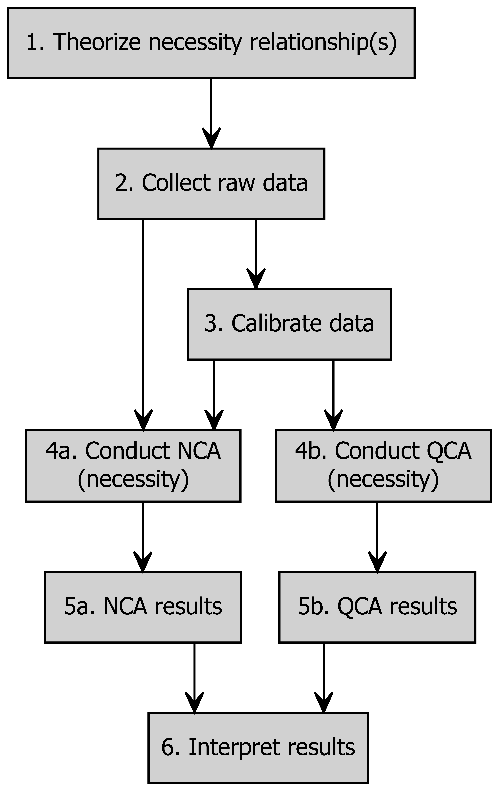
Figure 11.8: Flowchart for conducting a method-triangulation multimethod study with NCA and QCA’s necessity analysis.
The study starts with theorizing the necessity relationship(s). In NCA this means the formulation of a formal necessity hypothesis (Chapter 7) in which not only \(X\) and \(Y\) are selected, but also the causal relationship is theoretically justified. In QCA the relationship between the conditions and outcome is usually not discussed extensively before the analysis is done and usually no necessity hypothesis is formulated. This reflects that QCA is a more inductive approach.
The next step is collecting (raw) data. In QCA the data need to be calibrated to transform the data into meaningful set membership scores. Qualitative data may be calibrated based on case knowledge of the user and expert judgment (the direct method), and quantitative data can be calibrated by mechanistically applying a transformation function (the indirect method). NCA accepts both calibrated data and raw data (when the raw data are valid and reliable), but QCA accepts only calibrated data. Therefore, two types of NCA-QCA method-triangulation for analyzing necessity can be done:
NCA with raw data and QCA with calibrated data.
NCA and QCA both with calibrated data.
After the NCA and QCA analyses are conducted, in the last step the results are interpreted in combination.
11.6.2 Example NCA-QCA method-triangulation multimethod study
This section presents an example of integrating NCA in QCA according to a method-triangulation multimethod necessity study. The example is based on a study by Lipset (1959), discussed in Ragin (2009). The outcome variable is SURV: survival of democracy during the inter-war period. Assuming that a theoretical rationale for necessity exists, five conditions were analyzed for necessity using both QCA and NCA:
DEV: Level of development: expressed as GDP per capita (USD) in the raw data.
URB Level of urbanization: percent of the population in towns with 20,000 or more inhabitants in the raw data.
LIT Level of literacy: percent of the literate population (raw data).
IND Level of industrialization: percent of the industrial labor force (raw data).
STB Government stability: “political-institutional (in)stability” expressed in the raw data by the number of cabinets which governed in the period under study.
The raw data were calibrated into fuzzy set membership scores (the calibration process is not discussed here). The analyses can be done as follows:
library(QCA)
library(NCA)
# Data
conditions <- c("DEV", "URB", "LIT", "IND", "STB") #names of the conditions"
outcome <- "SURV" #name of the outcome
data(LR) #Lipset raw data
data(LF) #Lipset calibrated data
#QCA-calibrated (fuzzy)
pofind(LF, outcome = "SURV") #single necessary conditions##
## inclN RoN covN
## ------------------------------
## 1 ~DEV 0.285 0.587 0.274
## 2 DEV 0.831 0.811 0.775
## 3 ~URB 0.568 0.452 0.402
## 4 URB 0.539 0.899 0.771
## 5 ~LIT 0.096 0.764 0.168
## 6 LIT 0.991 0.509 0.643
## 7 ~IND 0.417 0.576 0.367
## 8 IND 0.669 0.786 0.684
## 9 ~STB 0.218 0.687 0.269
## 10 STB 0.920 0.680 0.707
## ------------------------------#NCA-calibrated (fuzzy)
set.seed(123) # for reproducible results
model_calibrated<- nca_analysis(LF,
1:5,6,
ceilings = "ce_fdh",
test.rep = 10000)## Setting up parallelization, this might take a few seconds... Do test for : ce_fdh - DEVDone test for: ce_fdh - DEV
## Do test for : ce_fdh - URBDone test for: ce_fdh - URB
## Do test for : ce_fdh - LITDone test for: ce_fdh - LIT
## Do test for : ce_fdh - INDDone test for: ce_fdh - IND
## Do test for : ce_fdh - STBDone test for: ce_fdh - STBmodel_calibrated##
## ---------------------------------------------------------------------------## Effect size(s):## ce_fdh p
## DEV 0.37 0.000
## URB 0.01 0.365
## LIT 0.82 0.003
## IND 0.02 0.372
## STB 0.46 0.004
## ---------------------------------------------------------------------------# NCA-raw data
set.seed(123) # for reproducible results
model_raw <- nca_analysis(LR,
1:5,6,
ceilings = "ce_fdh",
corner = c(1,1,1,1,2),
test.rep = 10000)## Setting up parallelization, this might take a few seconds... Do test for : ce_fdh - DEVDone test for: ce_fdh - DEV
## Do test for : ce_fdh - URBDone test for: ce_fdh - URB
## Do test for : ce_fdh - LITDone test for: ce_fdh - LIT
## Do test for : ce_fdh - INDDone test for: ce_fdh - IND
## Do test for : ce_fdh - STBDone test for: ce_fdh - STBmodel_raw##
## ---------------------------------------------------------------------------## Effect size(s):## ce_fdh p
## DEV 0.27 0.000
## URB 0.09 0.341
## LIT 0.74 0.001
## IND 0.11 0.097
## STB 0.53 0.009
## ---------------------------------------------------------------------------Table 11.7 shows the results. Using the common necessity consistency threshold of 0.9 two necessary conditions are identified by QCA: LIT and STB. NCA’s necessity analysis with the raw and with calibrated data show similar results. Also, NCA shows that LIT and STB are necessary conditions. However, NCA identifies a third necessary condition: DEV.
| QCA Consistency (calibrated) | Necessity effect size (calibrated) | p-value, (calibrated) | Necessity effect size (raw) | p-value, (raw) | |
|---|---|---|---|---|---|
| \(DEV\) | 0.831 | 0.37 | < 0.001 | 0.27 | < 0.001 |
| \(URB\) | 0.539 | 0.01 | 0.358 | 0.09 | 0.340 |
| \(LIT\) | 0.991 | 0.82 | 0.004 | 0.74 | 0.002 |
| \(IND\) | 0.669 | 0.02 | 0.376 | 0.11 | 0.099 |
| \(STB\) | 0.920 | 0.46 | 0.004 | 0.53 | 0.010 |
Generally, NCA identifies more necessary conditions than fsQCA. This particularly happens when raw data, rather than (mechanistically) calibrated data, are used as input to NCA. For example, Torres & Godinho (2022) conducted a method-triangulation NCA-QCA necessity study. They examined which elements of digital entrepreneurial ecosystems are necessary to produce outcomes. In their study the authors used only calibrated data and concluded that “[…] fsQCA should be complemented with NCA to better understand the necessary conditions. The results show that the former identifies considerably less necessary conditions in data sets than NCA[…]” (Torres & Godinho, 2022, p. 41).
11.6.3 Steps for conducting NCA with QCA’s sufficiency analysis
Another type of NCA-QCA multimethod study is the causal-pluralism multimethod study in which NCA’s necessity causal perspective is combined with QCA’s configurational sufficiency causal perspective. For a causal-pluralism study, it is necessary that the two methods use the same data. Hence, NCA must be applied with set membership scores, otherwise comparing and combining necessity results with sufficiency results becomes problematic.114
Figure 11.9 shows a flowchart for conducting a necessity analysis of NCA with a sufficiency analysis of QCA in a causal-pluralism multimethod study.
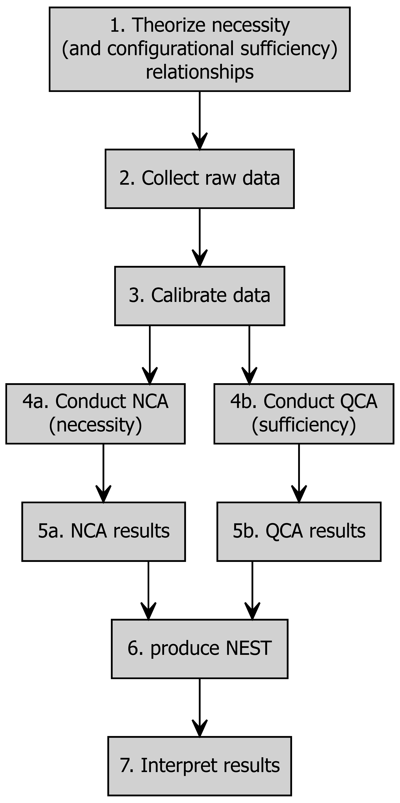
Figure 11.9: Flowchart for conducting a causal-pluralism multimethod study with NCA and QCA’s sufficiency analysis.
The study starts with theorizing the necessity relationships for NCA: the formulation of a formal necessity hypothesis (Chapter 7). For the QCA sufficiency analysis the conditions that are part of the necessity hypothesis, and possibly other non-necessary contributing conditions are selected. Often, QCA is used inductively and does not formulate sufficiency hypotheses (claims about configurations that can produce the outcome) although this is also possible as, for example, suggested by Mello (2021). Next, the raw data are collected and subsequently calibrated. The set membership scores are input to both NCA and QCA. Then NCA and QCA are conducted according to their own standards.
After the two analyses are done, the integration of the results may be challenging. As indicated in the above quote by Ragin, a necessary condition must become a part of the sufficient configuration, otherwise the configuration will not produce the outcome. Ragin’s views on how to realize that goal has changed over the years, and new views have been added. Currently, at least five different views exist in the QCA community on how to integrate the identified necessary conditions (with QCA) with the identified sufficient configurations. These views may also apply to integrating a necessary condition identified with NCA.
In the first view, only sufficient configurations that include the necessary conditions are considered. This ensures that all selected configurations have the necessary condition. In the second view, the truth table analysis to find the sufficient configurations is done without the necessary conditions, and afterwards the necessary conditions are added to the configuration. This also ensures that all configurations have the necessary conditions. In the third view, configurations that do not include the necessary condition are excluded from the truth table before this table is further analyzed to find the sufficient configurations. This ‘ESA’ approach (Schneider & Wagemann, 2012) also ensures that all configurations have the necessary conditions. In the fourth view, sufficient configurations are analyzed without worrying about necessary conditions. Afterwards, the necessary conditions are discussed separately. In the fifth view, a separate necessity analysis is not done, or necessity is ignored.
All views have been employed in QCA; no consensus exists yet. An additional complexity of integrating NCA’s necessity with QCA’s sufficient configurations is that NCA produces necessary conditions in degree, rather than QCA’s necessary conditions in kind. In QCA’s solution table, the conditions that are part of the sufficient configurations can only be absent or present.
One way to proceed with integrating NCA ’s necessity approach with QCA’s sufficiency approach is to combine the last part of the second view (adding necessary conditions afterwards), with the fourth view (discussing necessary conditions separately):
After NCA has identified necessity-in-kind in step 4a and QCA has identified the solution table in step 4b, NCA’s bottleneck analysis for necessity-in-degree is conducted in step 5a, NCA’s necessity-in-degree analysis with the bottleneck table is conducted as follows. Since in QCA’s solution table an outcome is considered to be in the set if the set membership score is \(Y\) > 0.5, NCA’s necessity-in-degree analysis consists of identifying the required level of the condition membership score \(X\) that is necessary for an outcome membership score \(Y\) of at least 0.5. In other words, the target outcome in the bottleneck table is \(Y\) = 0.5 membership score.
Next, the resulting required membership score of the condition according to NCA is added to all QCA’s sufficient configurations in the solution table, if this condition is not already part of the configuration. Specifically, the NCA-Extended Solution Table (NEST) is produced. This extension specifies the required level of the necessary condition identified by NCA, such that the configuration can produce the outcome (for an example see below).
Finally, the result of the NEST and the full results of NCA’s necessity analysis and QCA’s sufficiency analysis are interpreted in combination. In particular, it could be discussed that specific levels of necessary membership scores found by NCA must be present in each sufficient configuration found by QCA. If that membership in degree is not in place, the configuration will not produce the outcome.
11.6.4 Example NCA-QCA causal-pluralism multimethod study
This section presents an example of integrating NCA in QCA according to a causal-pluralism multimethod necessity-sufficiency study. The example is based on a study by Emmenegger (2011) about job security regulation (JSR) in Western European countries. In particular, the effect of six conditions is investigated. These six conditions are: S = state-society relationships, C = non-market coordination, L = strength labor movement, R = denomination, P = strength religious parties and V = veto points, The study conducts a necessity analysis and a sufficiency analysis, both with fsQCA. The study can be replicated as follows:
library(QCA)
# Data
data("d.Emm")
conditions <- c("S","C","L","R","P","V") #names of the conditions"
outcome <- "JSR" #name of the outcome
##### QCA #####
pofind(d.Emm, outcome = "JSR") #single necessary conditions##
## inclN RoN covN
## ----------------------------
## 1 ~S 0.438 0.639 0.453
## 2 S 0.667 0.783 0.714
## 3 ~C 0.543 0.615 0.509
## 4 C 0.620 0.833 0.743
## 5 ~L 0.571 0.677 0.571
## 6 L 0.714 0.843 0.793
## 7 ~R 0.388 0.661 0.431
## 8 R 0.791 0.812 0.791
## 9 ~P 0.528 0.612 0.498
## 10 P 0.672 0.863 0.800
## 11 ~V 0.648 0.692 0.627
## 12 V 0.500 0.738 0.577
## ----------------------------#published solution: no necessary conditions with consistency > 0.9
ttEmm <- truthTable(d.Emm, condition = conditions,
outcome = outcome,
incl.cut = 0.90,
show.cases = TRUE)
# conservative/complex solution
minimize(ttEmm) ##
## M1: S*~C*L*R*P + S*C*R*P*V + S*~C*~L*R*~P*~V + ~S*C*L*~R*P*~V -> JSR#M1: S*~C*L*R*P + S*C*R*P*V + S*~C*~L*R*~P*~V + ~S*C*L*~R*P*~V -> JSR
# parsimonious solution
minimize(ttEmm, include = "?") ##
## M1: S*R + (L*P) -> JSR
## M2: S*R + (P*~V) -> JSR#M1: S*R + (L*P) -> JSR
#M2: S*R + (P*~V) -> JSR
# intermediate solution
minimize(ttEmm, include = "?", dir.exp = c(1,1,1,1,1,0), details=T)##
## From C1P1, C1P2:
##
## M1: S*R*~V + S*C*R*P + S*L*R*P + C*L*P*~V -> JSR
##
## inclS PRI covS covU cases
## ---------------------------------------------------
## 1 S*R*~V 0.990 0.983 0.402 0.152 FR,PT; IT
## 2 S*C*R*P 0.965 0.921 0.277 0.041 BE,DE; AT
## 3 S*L*R*P 1.000 1.000 0.354 0.027 IT; ES; AT
## 4 C*L*P*~V 0.964 0.872 0.297 0.138 NO
## ---------------------------------------------------
## M1 0.965 0.941 0.685#M1: S*R*~V + S*C*R*P + S*L*R*P + C*L*P*~V -> JSR
#published solution:
#M1: S*R*~V + S*C*R*P + S*L*R*P + C*L*P*~V -> JSR
The necessity analysis of fsQCA shows that none of the six conditions were necessary for job security regulation (necessity consistency of each condition is < 0.9). The following four sufficient configurations for the outcome JSR were identified:
S1. S*R*\(\neg\)V (presence of S AND presence of R AND absence of V)
S2. S*C*R*P (presence of S AND presence of C AND presence of R AND presence of P)
S3. S*L*R*P (presence of S AND presence of L AND presence of R AND presence of P)
S4. C*L*P*\(\neg\)V (presence of C AND presence of L AND presence of P AND absence of V: \(\neg\)V)
This combination of solutions can be expressed by the following logical expression:
S*R*\(\neg\)V + S*C*R*P + S*L*R*P + C*L*P*\(\neg\)V → JSR
For demonstration purposes, an NCA necessity analysis is added to this study. For the sake of this illustration, it is assumed that a formal necessity hypothesis exists for each condition (Chapter 7). Producing the \(XY\)-plots can be done as follows:
library(NCA)
model <- nca_analysis(d.Emm,
conditions,
outcome,
corner = c(1,1,1,1,1,2),
ceilings = "ce_fdh")
nca_output(model, summaries = FALSE)Figure 11.10 shows the \(XY\)-plots for the six conditions using the CE-FDH ceiling line.
![Example of a necessity analysis with NCA for a clausal-pluralism multimethod study with fsQCA. [Data from @emmenegger2011job].](plot.S-JSR.png)
![Example of a necessity analysis with NCA for a clausal-pluralism multimethod study with fsQCA. [Data from @emmenegger2011job].](plot.C-JSR.png)
![Example of a necessity analysis with NCA for a clausal-pluralism multimethod study with fsQCA. [Data from @emmenegger2011job].](plot.L-JSR.png)
![Example of a necessity analysis with NCA for a clausal-pluralism multimethod study with fsQCA. [Data from @emmenegger2011job].](plot.R-JSR.png)
![Example of a necessity analysis with NCA for a clausal-pluralism multimethod study with fsQCA. [Data from @emmenegger2011job].](plot.P-JSR.png)
![Example of a necessity analysis with NCA for a clausal-pluralism multimethod study with fsQCA. [Data from @emmenegger2011job].](plot.V-JSR.png)
Figure 11.10: Example of a necessity analysis with NCA for a clausal-pluralism multimethod study with fsQCA. (Data from Emmenegger, 2011).
NCA’s necessity-in-kind analysis is conducted as follows:
## Setting up parallelization, this might take a few seconds... Do test for : ce_fdh - SDone test for: ce_fdh - S
## Do test for : ce_fdh - CDone test for: ce_fdh - C
## Do test for : ce_fdh - LDone test for: ce_fdh - L
## Do test for : ce_fdh - RDone test for: ce_fdh - R
## Do test for : ce_fdh - PDone test for: ce_fdh - P
## Do test for : ce_fdh - VDone test for: ce_fdh - V##
## ---------------------------------------------------------------------------## ce_fdh p
## S 0.14 0.132
## C 0.00 1.000
## L 0.29 0.003
## R 0.31 0.001
## P 0.17 0.008
## V 0.05 0.530
## ---------------------------------------------------------------------------library(NCA)
set.seed(123) # for reproducible results
model <- nca_analysis(d.Emm,
conditions,
outcome, corner = c(1,1,1,1,1,2),
test.rep = 10000, #This may take a while
ceilings = "ce_fdh"
)
# necessity-in-kind
print(model)##
## ---------------------------------------------------------------------------## ce_fdh p
## S 0.14 0.132
## C 0.00 1.000
## L 0.29 0.003
## R 0.31 0.001
## P 0.17 0.008
## V 0.05 0.530
## ---------------------------------------------------------------------------
The results indicate that three out of six conditions are necessary for Job security regulations (JSR) given the effect size and \(p\)-value thresholds of 0.10 and 0.05, respectively. The necessary conditions are: L = strength of labor movement, R = denomination, P = and strength of religious parties.
NCA’s analysis of necessity-in-degree for these three conditions, adapted to an outcome of Y = .5, can be conducted as follows:
library(NCA)
model_bottl <- nca_analysis(d.Emm,
conditions,
outcome,
corner = c(1,1,1,1,1,2),
ceilings = "ce_fdh",
bottleneck.x = 'actual',
bottleneck.y = 'actual',
steps = seq(from = 0, to = 1, by = 0.1) #include 0.5
)
# necessity-in-degree (reduced bottleneck table)
nca_output(model_bottl, summaries = FALSE, plots= FALSE,
bottlenecks = TRUE,
selection = c("L", "R", "P")
)##
## ---------------------------------------------------------------------------## ---------------------------------------------------------------------------
## Y 1 2 3
## 0.0 NN NN NN
## 0.1 0.140 NN NN
## 0.2 0.140 0.200 0.200
## 0.3 0.290 0.200 0.200
## 0.4 0.290 0.200 0.200
## 0.5 0.290 0.200 0.200
## 0.6 0.290 0.200 0.200
## 0.7 0.290 0.200 0.200
## 0.8 0.430 0.400 0.200
## 0.9 0.430 1.000 0.200
## 1.0 0.430 1.000 0.200
From the bottleneck table it can be observed that the following conditions are necessary for JSR > 0.5:
L > 0.29 is necessary for JSR > 0.5 (presence of JSR)
R > 0.20 is necessary for JSR > 0.5 (presence of JSR)
P > 0.20 is necessary for JSR > 0.5 (presence of JSR)
Although in QCA’s binary logic these small necessary membership scores of L, R, P (all < 0.5) would be framed as ‘absence’ of the condition, in NCA these membership scores are considered small, yet must be present for having the outcome. Thus, according to NCA the low level of membership scores must be present, otherwise the sufficient configurations identified by QCA will not produce the outcome.
The presence of a condition and the outcome means that the membership score is > 0.5. The absence of a condition means that the membership score is < 0.5. A common way to summarize the results is the QCA solution table. The Fiss-style solution table (Fiss, 2011) is shown in Table 11.8.
| S1 | S2 | S3 | S4 | |
|---|---|---|---|---|
| S | ⚫ | ⚫ | ⚫ | |
| C | ● | ● | ||
| L | ⚫ | ⚫ | ||
| R | ⚫ | ⚫ | ⚫ | |
| P | ● | ⚫ | ⚫ | |
| V | ⊗ | ⊗ | ||
| Consistency | 0.990 | 0.965 | 1.000 | 0.964 |
| Raw coverage | 0.402 | 0.277 | 0.354 | 0.297 |
| Unique coverage | 0.152 | 0.041 | 0.027 | 0.138 |
| Solution consistency: 0.965 | ||||
| Solution coverage: 0.685 | ||||
| Note: | ||||
| S1, … = Sufficient configurations | ||||
| ⚫/● = Presence of core/contributory condition | ||||
| ⊗/⊗ = Absence of core/contributory condition |
The NCA necessity results can be combined with the QCA sufficiency results using the NEST tool. The NEST tool is the NCA-Extended Solution Table. It combines QCA results with NCA’s necessity-in-degree results by adding a column and new symbols to the conventional QCA solution table (Table 11.9).
| S1 | S2 | S3 | S4 | NiD | |
|---|---|---|---|---|---|
| S | ⚫ | ⚫ | ⚫ | ||
| C | ● | ● | |||
| L | ◢ | ◢ | ⚫ | ⚫ | ≥ 0.29 |
| R | ⚫ | ⚫ | ⚫ | ◢ | ≥ 0.20 |
| P | ◢ | ● | ⚫ | ⚫ | ≥ 0.20 |
| V | ⊗ | ⊗ | |||
| Consistency | 0.990 | 0.965 | 1.000 | 0.964 | |
| Raw coverage | 0.402 | 0.277 | 0.354 | 0.297 | |
| Unique coverage | 0.152 | 0.041 | 0.027 | 0.138 | |
| Solution consistency: 0.965 | |||||
| Solution coverage: 0.685 | |||||
| S1, … = Sufficient configurations | |||||
| N = Minimum required membership score according to NCA | |||||
| ⚫/● = Presence of core/contributory condition | |||||
| ⊗/⊗= Absence of core/contributory condition | |||||
| ◢/◿ = ‘Don’t care’ according to QCA; necessary according to NCA |
The extra column NiD shows the required membership score of a condition such that the condition allows 0.5 membership score of the outcome. If this level of the condition is not achieved, the outcome will not occur. This required membership score of a necessary condition applies to each configuration. The minimum required level of the condition is shown as (\(\ge\)) when the hypothesized necessity relationship is high-high (presence/high level if \(X\) is necessary for presence/high level of \(Y\)). In this situation NCA analyzes corner 1 of the \(XY\)-plot, which is the upper-left corner that is expected to be empty. Similarly, the maximum allowable level (\(\le\)) is shown when the hypothesized necessity relationship is low-high and corner 2 (upper-right) is the expected empty corner.115
In the conventional QCA solution table, blank cells in a configuration indicate that the condition has the ‘don’t care’ status. It is considered a non-essential part of the configuration to produce the outcome. However, it may be that according to NCA’s necessity-in-degree result such a condition may be necessary with a certain level of membership score. When the condition is necessary according to NCA and ‘don’t care’ according to QCA, the blank cell in the conventional QCA solution table is filled with a triangle symbol ◢ or ◿. This ensures that the minimum or maximum required necessity membership score (according to NCA) is fulfilled. Only when this level is achieved, the solution can produce the outcome.116
The NCA results that the presence of L \(\ge\) 0.29 is necessary for JSR > 0.5 is already achieved in the QCA sufficient configurations S3 and S4, but not in configurations S1 and S2. According to QCA, in these latter configurations L is a ‘don’t care’ condition. However, the necessity requirement of L \(\ge\) 0.29 still applies. Therefore, the symbol (◢) is added to the configuration indicating that a ‘don’t care’ condition is necessary as well. Similarly, R \(\ge\) 0.20 is added to configuration 4, and P \(\ge\) 0.20 is added to configuration 1. Without adding these requirements to the configurations, they cannot produce the outcome. Only configuration 3 includes all three necessary conditions according to NCA, without a need for adding them. If the NCA results would be ignored, configurations 1, 2, and 4 may not produce the outcome. Additionally, the NCA results can show what levels of the condition would be necessary for a higher level of the outcome than a membership score > 0.5. This can be observed in Figure 11.10. For example, for a membership score of JSR of 0.9, it is necessary to have membership scores of L > 0.45, R = 1, P > 0.2.
In summary, the following suggestion can be made for an NCA-QCA causal-pluralism multimethod study:
Use membership scores for both analyses;
Conduct these analyses separately;
Integrate NCA’s necessity-in-degree results into QCA’s sufficiency solution using the NEST tool as in Table 11.9;
Additionally, discuss the full results of NCA for deeper understanding of both necessity and configurational sufficiency.
11.6.5 Recommendations for combining NCA and QCA
In publications where NCA is applied in combination with QCA, QCA is usually the main analysis with the focus on sufficiency. NCA could replace QCA’s necessity analysis. The two main advantages of NCA are that NCA can detect necessity-in-degree (which QCA cannot do) and that NCA can detect necessary conditions that QCA might miss. When NCA is combined with QCA, several guidelines for applying NCA are often violated. This applies, for example, to the following recommendations with ‘must-have’ priority level (see the SCoRe checklist in Section 10.3):
Checklist item 4: […] When NCA is compared with QCA’s necessity analysis, use the term necessity analysis of QCA for the latter (and not NCA) and explain the differences between the necessity analysis of QCA (only necessity-in-kind) and that of NCA (also necessity-in-degree).
See this book: Sections 2.3, 2.4. Suggested articles: Dul (2024a); Dul (2016a); Vis & Dul (2018); Dul (2022).
When NCA is combined with QCA the following misinterpretations have occurred: The necessity analysis of QCA is confused with the necessity analysis of NCA. This has happened, for example, in QCA studies that do not use NCA. Some studies call QCA’s necessity analysis an ‘NCA’. However, the two types of necessity analyses are different. An INUS condition of a configuration is confused with the necessary condition for the outcome. An INUS condition is an Insufficient but Necessary part of an Unnecessary but Sufficient configuration. INUS conditions are the necessary elements of a configuration to make that configuration sufficient. NCA captures necessary conditions for the outcome, not the INUS conditions for the configuration, see also Dul, Vis, et al. (2021). Although an identified necessary condition for the outcome must be part of each sufficient configuration to be able to produce the outcome, the opposite is not true: a factor that is observed to be part of a particular sufficient configuration (INUS condition) is not automatically a global necessary condition for the outcome. An INUS condition that is present in all observed sufficient configurations is not automatically a necessary condition for the outcome. A separate necessity analysis is always needed to investigates if such an INUS condition is indeed necessary for the outcome.Checklist item 7: Formulate the necessity relationship explicitly as a necessary condition hypothesis: \(X\) is necessary for \(Y\). For a deductive study, this is done before data analysis; for an explorative study this is done after data analysis when indications for a necessity relationship are found.
See this book: Section 7.5.
In studies that combine NCA with QCA, often no formal necessity hypothesis is formulated. NCA is primarily a deductive approach, and having a theoretical justification for necessity is one of the fundamental requirements to identify necessity. QCA is often an inductive approach and in small-n QCA case knowledge, and in large-n QCA general expert knowledge possibly illustrated with cases is often used to justify necessity. This case and general expert knowledge could be used for formulating a formal necessity hypothesis according to NCA before (deductive study) or after (inductive study) data collection.Checklist item 9: Explain why \(X\) is necessary for \(Y\) using a causal explanation (narrative) by answering three questions: (1) Why does \(X\) enable \(Y\) (\(X\) is an enabler). The existing literature may be a source of information; (2) Why does the absence of \(X\) lead to the absence of \(Y\) (\(X\) is a constraint); (3) Why is the absence of \(X\) not compensable (no substitution for \(X\)). Making the narrative complete is a creative process, supported by literature and experiences of scholars and practitioners.
See this book: Chapter 7 in particular Section 7.5.3.
As part of the formal necessity hypothesis it should also be explained why it is expected that \(X\) is necessary for \(Y\).Checklist item 19: Explain whether and how the data were transformed, and whether the transformation aligns with NCA. Affine transformation (including linear transformation) produces valid results. NCA’s data analysis does not require data transformation and non-transformed data are often more meaningful and better interpretable (e.g., levels of a Likert scale) than transformed data. This particularly applies to necessity-in-degree and interpretations of specific levels of \(X\) being necessary for specific levels of \(Y\). Refrain from conducting non-linear data transformation (e.g., log-transformation, logistic transformation) unless the transformed data represent \(X\) and \(Y\) as defined in the necessity hypothesis (e.g., log-transformed GDP). […].
See this book: Sections 8.5.2, Appendix D.
In QCA applications that transform raw variable scores into set membership scores, often calibration is done mechanistically without using case or expert knowledge, though this is not preferred. The most commonly used transformation is the logistic transformation (S-curve). Such a non-linear transformation changes the distribution of the data such that points near NCA’s ceiling line change. Unless there is theoretical motivation for it, non-linear transformation violates NCA’s requirement of affine transformations (D). With logistic transformation necessity often diminishes or even disappears due to the calibration. The effect of calibration on NCA’s necessity should then be discussed.Checklist item 38: When NCA is used in a causal-pluralism study by combining it with another method (e.g., […] QCA), report how the results of NCA and the other method complement each other using […] NEST […] when applicable.
See this book: Chapter 11.
In many NCA-QCA multimethod studies, QCA results and NCA results are presented separately without discussing the insights obtained from combining the two different methods. The discussion could focus on the consequences of the combined results for theory and practice. The use of NEST (see Table 11.9) could be helpful for this.
The quality of studies that combine NCA with QCA could be enhanced by ensuring that these and other ‘must-have’ recommendations are fulfilled. Once the must-have requirements are met, further improvements can be achieved by addressing the ‘should-have’ and ‘nice-to-have’ suggestions in the checklist (Section 10.3). As the number of combined NCA and QCA studies grows, reviewers may raise the standard for the appropriate application of NCA. Section 10.3 includes recommendations and references to meet the requirements.
12 NCA in practice
12.1 Summary of this chapter
This chapter may be of interest to practitioners and scholars who are engaged in the practical application of NCA. First, in Section 12.2, the value of NCA for practice is explained by distinguishing between must-have factors for desired outcomes (e.g., performance), and stop factors for undesired outcomes (e.g., risks, disorders) on which practitioners can act through intervention. It discusses the added value and challenges of shifting attention from the common average effect thinking to necessity thinking. This section also mentions application areas by referring to academic work that suggests such an application. The next section (Section 12.3) discusses NCA’s contribution to change and innovation in more detail. In an NCA-based intervention, levels of actionable factors are changed to make a specific practical outcome possible. This starts with the formulation of an intervention strategy, in which goals, barriers/drivers, and target groups are specified, culminating in necessity hypotheses. After that, the intervention is designed, based on collected data that are analyzed using NCA. The next two sections (Sections 12.4 and 12.5) discuss how interventions can make a desired outcome possible, and can prevent undesired outcomes, respectively. Concepts like intervention effectiveness, efficiency and waste are introduced. Section 12.6 discusses interventions with multiple necessary conditions. In the final section (Section 12.7), the application of an NCA-based intervention is illustrated with an example.
12.2 The practical value of necessity logic
Practice refers to the real-world context in which practitioners operate and implement interventions. For example:
Teachers, school leaders, and others create effective learning environments in education.
Employees, managers, and entrepreneurs create, produce, and deliver products and services in business and civil services.
Physicians, nurses, and related professionals diagnose and treat health problems in health care.
Ecologists, policymakers, and consumers prevent environmental degradation through collaborative actions in environmental management.
In any domain, interventions can benefit from knowledge about necessary conditions. By acting on these conditions, interventions can either make a desired outcome possible (e.g., student learning, business success) or make an undesired outcome impossible (e.g., disease, environmental harm). Ignoring necessary conditions can make interventions ineffective or inefficient.
Applying necessity logic often tells a previously undiscovered story for many practitioners. NCA offers a straightforward and practical way to analyze complex problems that may initially seem “too simple to be true.” It identifies must-have factors that are non-compensable requirements for a desired outcome, and stop factors that can block an undesired outcome. Achieving a desired outcome requires all must-have factors to be present, while the absence of a single factor guarantees failure. Preventing an undesired outcome is possible by removing just a single stop factor.
Figure 12.1-left shows what happens if necessity applies.
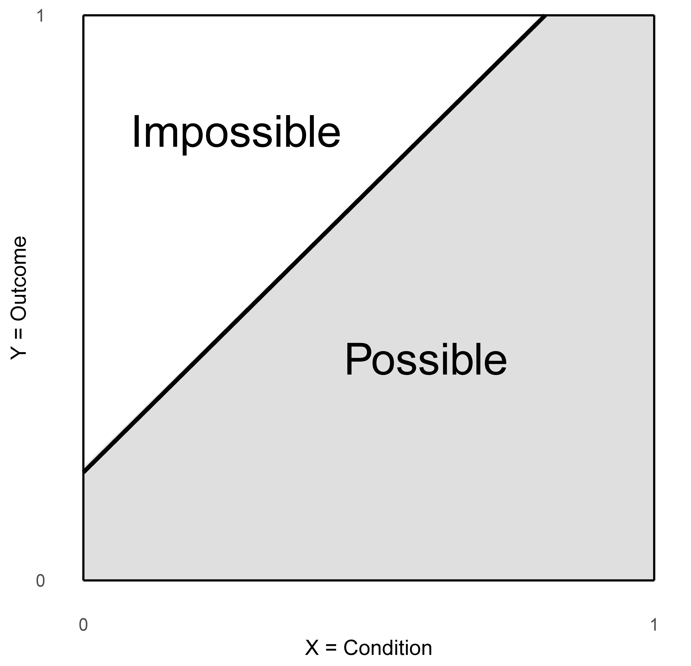
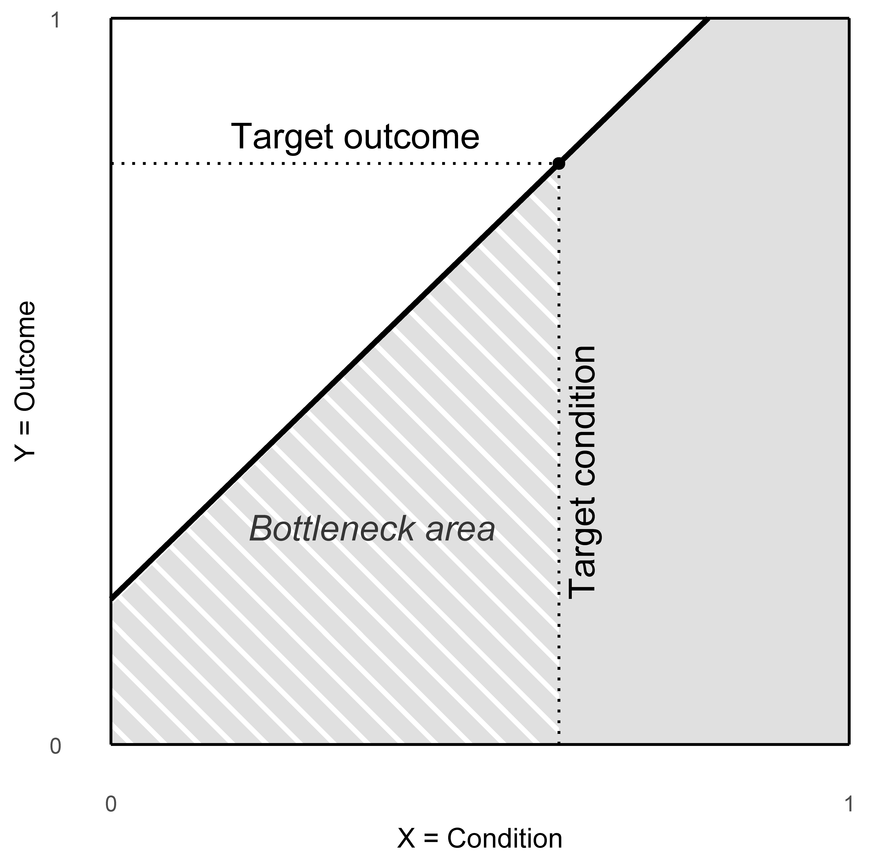
Figure 12.1: \(XY\)-plot with the ceiling line dividing the area where cases are impossible from the area where cases are possible (Left). The target condition is the threshold level of \(X\) that is necessary for the target outcome: a desired or undesired level of \(Y\). Cases that stay in the bottleneck area cannot reach the target outcome (Right).
12.2.1 Must-have factors for desired outcomes
Necessary conditions for a desired outcome (e.g., performance) are must-have factors: without them, the desired level of the outcome cannot be reached. In the \(XY\)-plot in Figure 12.1-left, the ceiling marks a boundary that cases cannot cross. A certain desired target level of the outcome (Figure 12.1-right) is only possible if the condition value is above the target condition level. The target condition level acts as a binding constraint for the target outcome. It does not determine the outcome by itself, but it sets a minimum requirement that must be satisfied before the target becomes attainable. For a case to have any chance of attaining the target outcome, it must fall within the feasible area on the right side of the target condition.
Cases with condition values below the target condition are bottleneck cases. They lie in the bottleneck area, which is the region with \(X\)-values below the threshold needed for the target outcome. No matter how strongly other contributing conditions are improved, these cases cannot reach the desired outcome level as long as their condition level remains too low.
An intervention can therefore create opportunity by removing this constraint. Increasing the condition level to at least the threshold moves a case out of the bottleneck area and into the non-bottleneck area to the right of it. Therefore, \(X\) functions as a must-have factor for \(Y\): it is the entry ticket to the set of cases for which the target is achievable. From this perspective, the goal of an intervention is to raise \(X\) for bottleneck cases so that they meet or exceed the threshold and can, in principle, attain the desired outcome.
12.2.2 Stop factors for undesired outcomes
Necessary conditions also matter when the target outcome is undesirable (e.g., risk, disease). In that setting, the same threshold logic flips interpretation: rather than asking what is required to enable a good outcome, the question is what is required for a bad outcome to be possible. A condition that is necessary for an undesired outcome becomes a stop factor: keeping it below its threshold blocks the undesired outcome from occurring.
In the \(XY\)-plot, cases in the bottleneck area (with \(X\) below the threshold condition level) cannot reach the undesired target level. In that sense, they are protected: the necessary condition is missing or not high enough, so the harmful outcome is not attainable. By contrast, cases with \(X\) at or above the threshold lie in the feasible region for the undesired outcome; they are the cases “at risk,” because the necessary condition is present and the bad outcome is, at least in principle, possible.
Intervening in this context therefore has a different aim. Instead of lifting cases over a threshold, the goal is to move at-risk cases below it. Reducing \(X\) to a value under the threshold removes the necessary condition for the undesired outcome, closing off the possibility of reaching that harmful target. Thus, when the outcome is undesirable, effective prevention focuses on maintaining the condition level below its critical threshold: if the stop factor is kept low enough, the undesired outcome is blocked by necessity. In other words, a single condition can block an undesired outcome if the value of that condition is below the threshold.
12.2.3 Shifting attention from average to individual interventions
NCA’s necessity logic is inherently threshold-based. It shifts attention away from interventions based on average effects for a group of cases (Figure 12.2) to interventions based on constraints for individual cases.
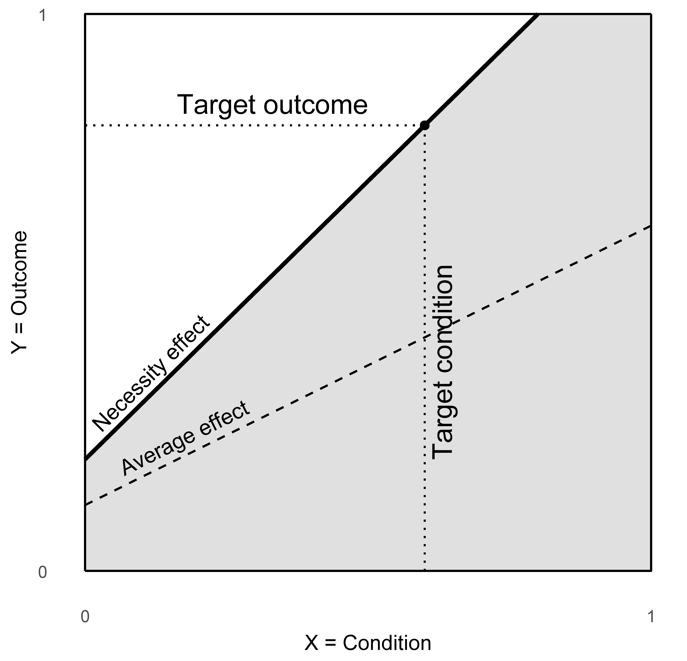
Figure 12.2: Shifting intervention perspective from average effect logic to necessity logic.
Regression-based approaches estimate how much a factor contributes on average to an outcome (nearly always assuming compensatory effects among predictors). Under an average-effect intervention logic, to achieve a desired outcome, the goal generally is to increase contributing factors as much as possible, and for an undesired outcome, the goal generally is to decrease them. In contrast, necessity logic identifies which factors are indispensable: those that must be present for a desired or undesired outcome to be possible at all. Necessity-based intervention logic focuses on ensuring that a condition reaches at least the target condition \(X\) (for a desired outcome) or remains below it (for an undesired outcome), which applies to every single case. NCA’s necessity logic provides a such a framework for designing interventions that are effective, efficient, and targeted. It can focus on the relevant cases where the intervention will work: cases that must exit or enter the bottleneck area. This approach complements, and in some situations challenges, the dominant average-effect paradigm that underpins most evidence-based practices (e.g., Dul, 2025). In this way, NCA does not replace but rather enriches causal reasoning in evidence-based practice: it highlights what must (not) exist rather than what merely increases (decreases) an outcome on average.
However, just as it can be difficult to shift the perception from the first woman that is noticed in the picture in Figure 2.5 to the second woman hidden in it, shifting from an average-effect mindset to a necessity-logic mindset is equally challenging (and maybe even more!). Research in the psychology of causality (e.g., Mandel & Lehman, 1998) shows that people naturally overestimate sufficiency (“this condition produces the outcome”) and underestimate necessity (“this condition must be present, otherwise the effect cannot occur”). Sufficiency-based causal reasoning is also dominant in learning and working environments. Statistical education is dominated by probabilistic sufficiency models, and many scientific methods are designed to detect average effects. As a result, large parts of society operate on the assumption that optimizing averages for the whole group or for subgroups is the only way to understand and improve systems.
The dominance of average-effect logic is visible, for example, in governmental policies that allocate support based on mean income of (sub) groups, in medical protocols built around average treatment effects from clinical trials, and in organizational performance programs aimed at improving average satisfaction scores. Because actions based on overall averages often fail to address the needs of individual cases, systems frequently try to compensate by creating increasingly fine-grained subgroups and then acting on the average within each subgroup. This approach adds complexity without solving the underlying problem: decisions remain driven by averages, not by the specific conditions that determine what is possible for each individual case.
Recognizing necessity logic requires a deliberate shift from asking “What may help?” to asking “What is indispensable?” This change in perspective is subtle but difficult when the standard is average-effect thinking. With a necessity perspective, it becomes possible to act on the specific cases that require attention, rather than designing interventions for broad groups based on averages.
12.2.4 Examples of application areas
Scholars have applied NCA in areas that are relevant for practice. Their studies show that necessity exists and provide relevant information beyond what is currently known. The overview of Table 12.1 shows that NCA can be applied in virtually any area of practice where success must be realized, or risks must be prevented. Most studies have found important necessary conditions on which the practitioner could act. It illustrates that in any specific practical setting necessary conditions can be identified for action.
| X = condition | Y = outcome | Focal unit | Reference | |
|---|---|---|---|---|
| Economics | ||||
| 1 | National adoption of support policies and low-intensity agricultural practices | National environmental sustainability performance in the agricultural sector | Agricultural firm | Lankoski & Lankoski (2023) |
| 2 | Human capital, institutional business facilities, and market opportunities | Open innovation | Country | Galindo-Martin et al. (2025) |
| Education | ||||
| 3 | Individual characteristics and study-related behaviors (e.g., conscientiousness, attendance, study time) | Academic success (grades/GPA) | Student | Tynan et al. (2020) |
| 4 | SAT mathematic scores | GPA in mathematics major | Student | J. Li et al. (2024) |
| Entrepreneurship | ||||
| 5 | Entrepreneurial role stress | Burnout | Self-employed individual | Manchiraju et al. (2023) |
| 6 | Entrepreneurial ecosystem domains (e.g., political environment, financing) | Deep-tech entrepreneurship | Country | Dionisio et al. (2023) |
| Environmental Sciences | ||||
| 7 | Access to and experience of urban nature | Well-being | Urban resident | Allard-Poesi & Massu (2023) |
| 8 | Planning, goal setting, and R&D capabilities | Eco-innovation | Agricultural firm | Chaparro-Banegas et al. (2024) |
| Human Resource Management | ||||
| 9 | High performance work practices | Job satisfaction & managerial effectiveness | Organization | Garg et al. (2019) |
| 10 | Technostress related to workplace social media use | Work performance | Organization | Wang & Zhao (2025) |
| International Business/Management | ||||
| 11 | Organizational context (e.g., top management support, technical competencies.) | Stage of adoption of artificial intelligence | Organization | Solaimani & Swaak (2023) |
| 12 | Environmental, social, and governance performance scores | R&D expenditure (innovation) | Multinational life sciences firm | Subramanian et al. (2024) |
| Marketing | ||||
| 13 | Personality traits | Impulsive buying behavior | Consumer | Shahjehan et al. (2019) |
| Medicine and Health | ||||
| 14 | Metacognition | Motivation | Individual with schizophrenia spectrum disorder | Luther et al. (2017) |
| 15 | Baseline depressive symptoms, self-criticism, rumination and stressful events | Major depressive episodes across two years | Adolescent | Colpizzi et al. (2025) |
| Operations and Supply Chain management | ||||
| 16 | Critical success factors for lean (e.g., leadership, employee involvement, continuous improvement) | Implementation of lean practices in manufacturing SMEs | Manufacturing firm | Knol et al. (2018) |
| 17 | Formal contracts and interpersonal trust in buyer–supplier relationships | Innovation in buyer–supplier relationships | Buyer-supplier relationship | Van der Valk et al. (2016) |
| Psychology/Organizational Behavior | ||||
| 18 | Satisfaction of basic psychological needs for autonomy, competence and relatedness | Work engagement | Employee | Ding & Kuvaas (2023) |
| 19 | Levels of fear of missing out and social networking addiction | Psychological well‑being of young adults | Young adult | Sirisety et al. (2025) |
| Public Administration | ||||
| 20 | Delay of first response, political decentralization, elderly populations, and urbanization | Early COVID-19 Mortality | Country | Yan et al. (2023) |
| 21 | Institutional trust and individualism | COVID-19 first-response stringency | Country | Y. Li et al. (in press) |
| Strategy | ||||
| 22 | Managers’ strategic myopia | Firm performance | Manager | Czakon et al. (2023) |
| 23 | Market PL-driven orientation | Market-driving orientation | Company | Vu & Tolstoy (2025) |
| Technology | ||||
| 24 | Cable features (void fraction and critical current) | Change in current sharing temperature | Twisted Cable-in-Conduct Conductor | Kwon (2022) |
| 25 | Evolutionary conservation | Dynamic cooperativity | Amino acid (protein system) | Chong & Ham (2023) |
| Tourism and Hospitality | ||||
| 26 | Positive affect and carefreeness | Eudaimonic experience | Tourist | Lee & Jeong (2020) |
| 27 | Organizational capabilities (e.g., transparency, flexibility) | Resilience | Hotel | Ofori (2024) |
| Transportation | ||||
| 28 | Favorable meteorological conditions (temperature, precipitation, humidity, wind) | Bike rental demand in Washington, DC | Hours across a two-year period | Kumar (2021) |
12.3 NCA’s contribution to change and innovation
Using NCA in practice means that an action must be taken on identified necessary conditions. NCA does not have its own change or innovation approach, but can add to existing ones. It provides a new perspective by focusing on necessity logic and by selecting and prioritizing (non-)bottlenecks cases to be acted on. In this way NCA can add new value to any existing change process be it a classical Plan-Do-Check-Act for continuous improvement, more recent methods for agile product development and management like Scrum, or any other approach that is used in a specific practice.
Each phase of the change process from planning, execution and evaluation can benefit from NCA. NCA can help to decide about the strategic direction of the intervention (focus on must-have and stop factors, and not on nice-to-have factors and average effects). NCA’s analytic tools can help to operationalize these strategies into concrete effective and efficient interventions by identifying which conditions and cases must be acted on. Specifically, NCA clarifies what potential must-have factors must be in place, and what potential stop factors must be removed or reduced, for interventions to succeed.
The development of an NCA-based intervention consists of two main parts. The first part is the intervention strategy, which establishes the team of stakeholders involved in the intervention, sets the goal and target group for the intervention, suggests the drivers and barriers to achieve that goal, and formulates the necessary condition hypotheses for prioritized drivers and barriers to be analyzed further. In this phase, NCA’s strengths as a broader methodological/theoretical approach based on necessity logic are leveraged.
The second part is the intervention design based on a study of a group of cases that represent the target group. For this group, existing or new data are collected for the outcome \(Y\) and the selected the barriers and drivers (\(X\)’s) expressed in the hypotheses. These data are analyzed using the standard procedures described in Chapter 9. Based on the results, an effective and efficient intervention can be designed that focuses on bottleneck conditions and bottleneck cases.
The following sections 12.3.1 and 12.3.2 outline the details of these two parts.
12.3.1 Part 1: Intervention strategy
12.3.1.1 Establishing the team
After a decision has been made to include NCA in the change process, the NCA-based intervention approach can be integrated as follows. It is assumed that a broad team consisting of stakeholders that affect or are affected by the intervention, is established to allow a successful change project. Having a broad team is not only a common advice for successful change, it is also particularly important for an NCA-based intervention as different stakeholders may have different views on the goals, target outcome and target group of the intervention. Having a diversity of stakeholders helps to avoid that important drivers and barriers (potential necessary conditions) are overlooked (see below). In a business environment, for example, a diverse team could consist of representatives from strategy, marketing, operations, customer services and business analytics, etc., who all could have a different stake in the intervention project and have different views about important necessary conditions.
It can be helpful to assign one team member to focus specifically the necessity perspective, ideally as a rotating role so everyone develops this skill. During change processes and team discussions, it is easy to lose sight of necessity logic or to slip back into probabilistic sufficiency thinking. A designated team member helps keep the group attentive to necessity-oriented reasoning and supports the collective learning process.
12.3.1.2 Establishing the goal and target group
The intervention goal must be clearly defined and preferably shared among all those involved in the design and implementation of the intervention. The goal specifies the intended result of the intervention, and specifies the desired or undesired outcome. Whenever possible, a specific target outcome is to be expressed quantitatively. This could be a specific level of the outcome that should be achieved (desired outcome) or prevented (undesired outcome). It is also possible to express this level in terms of the percentage of cases that should be able to achieve the outcome or be prevented from having the outcome. Such a quantification of the goal helps to guide the second part of intervention development: the intervention design. The target group is the broader collection of cases for which the intervention goal is set. It may be that for reasons of effectiveness and efficiency, only part of the cases from the target group (the intervention group) will actually receive the intervention (see below).
12.3.1.3 Establishing drivers/barriers
Based on the team’s knowledge, a list of potential drivers and barriers to achieve the goal is developed through a creative process, for example brainstorming. The goal is to have a long list of potential drivers and barriers for the outcome. If there are multiple outcomes, each outcome has its own list of drivers and barriers. Drivers and barriers are identified based on the team members’ expert knowledge and experience, and possibly academic knowledge (see Section 7.4). The reason for this important step is that, in contrast to interventions based on for example big-data or AI-based approaches, an NCA-based intervention is selective and transparent regarding the conditions and cases to be acted on. It only focuses on crucial conditions and relevant cases in order to be effective, efficient, and avoid waste of resources.
12.3.1.4 Formulating necessity hypotheses
The goal of this phase is to reduce the number of drivers and barriers to the essential ones: the potential necessary conditions. Often the number of drivers and barriers that are developed in the previous phase is large. However, many drivers and barriers are “just” important from the perspective of probability and average effects, but not from the perspective of necessity. Through a careful evaluation of the drivers/barriers, it is possible to identify the potential necessary conditions. This evaluation requires a team discussion, and results in a selection of drivers and barriers, that the team considers necessary conditions for achieving the goal. If the set of necessary conditions is still large, prioritization may be needed, in particular when an NCA-based intervention is new to the team.
The intervention development continues with the selected necessary conditions. For each necessary condition a preliminary necessity hypothesis is formulated and further developed toward a formal necessity hypothesis, as outlined in Chapter 7. For example, this phase specifies variables \(X\) (measurable drivers/barrier) and \(Y\) (measurable goal), or the selection of group of cases where the hypothesis is expected to apply (entire target group, selection of target group, or beyond the target group). This information is important for data collection (in Part 2 of the intervention) and the design of an effective intervention. The team should critically evaluate whether the potential necessary condition is causal: if the single condition is removed, will the target outcome not be possible? An intervention only works if the condition is causal (see Chapter 2). Since causality cannot be observed, the hypothesis should make causality plausible. If not, the necessary condition, is not a candidate for an intervention based on necessity causal logic.117
The result of the strategic phase is one or more causal necessary condition hypotheses formulated as \(X\) is necessary for \(Y\) where \(X\) is the set of expected necessary drivers or barriers, and \(Y\) is the desired or undesired target outcome (possibly with quantification of the level of the target outcome).
12.3.2 Part 2: Intervention design
An evidence-based intervention is based on an established relationship supported by empirical data. For an NCA-based intervention this means that the team’s formulated formal necessary conditions hypotheses is tested with archival or new data obtained about \(X\) and \(Y\) from the target group, or from a group that is representative for the target group. The aim of this analysis is to find the condition thresholds that are assumed to apply to the entire target group. This is the basis for the intervention in the target group.
Specifically, each hypothesis that is selected in the previous phase is tested to evaluate if the hypothesis is supported and the condition is indeed necessary. If necessity holds, an \(XY\)-plot similar to Figure 12.1-right is generated to observe where the ceiling exists and which cases are inside or outside of the bottleneck area. Once the target conditions for the target outcome are estimated, the intervention focuses on removing cases from the bottleneck area (if the outcome is desirable) by increasing the value of the necessary conditions, or moving cases into the bottleneck area (if the outcome is undesirable) by decreasing the value of the necessary condition. Different intervention designs are possible depending on whether it focuses on all or a selection of cases, and on all or a selection of necessary conditions.
It may be concluded that only a specific group of cases from the target group should receive the intervention to benefit from it (intervention group). An effective and efficient intervention focuses only on cases in the target group that have condition levels below the threshold (if the target outcome is desired) or have condition levels above the threshold (if the target outcome is undesired).
12.3.2.1 Data collection
A sample of the target group or another group of cases that is representative for the target group is selected for testing the hypothesis. For each case in the sample, scores for \(X_j\) (\(j\) is the specific index of a necessary barrier/driver) and \(Y\) must be available. For proper results, the data must be reliable (same score for repeated measurements under the same circumstances) and valid (scores must correspond to the meaning of the variables in the hypothesis) (see Chapter 8).
12.3.2.2 Data analysis
After data collection the data are analyzed according to NCA’s standards (Chapter 9). Each hypothesis is rejected or supported (= not rejected). If supported, the condition is considered for the NCA-based intervention. If rejected, the condition is “just” a contributing factor but not essential.
12.3.2.3 Displaying crucial results
For each supported hypothesis, the cases are shown in an \(XY\)-plot. In the example of Figure 12.3-left, five cases (A-E) are shown.
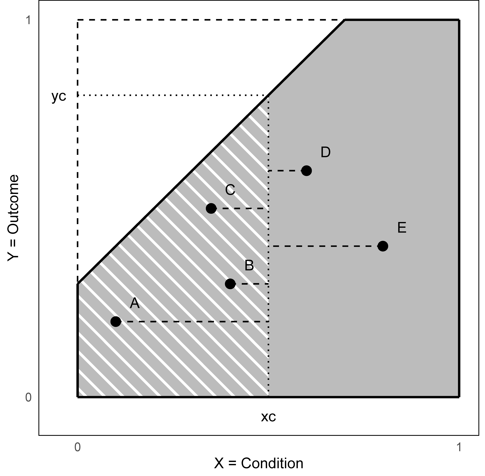
Figure 12.3: \(XY\)-plot with ceiling line, target outcome \(y_c\), target condition \(x_c\), and five cases. Left: dashed lines are the bottleneck distances; Right: A generic intervention on all cases.
In this plot, the condition \(X\) is displayed on the horizontal axis, the outcome \(Y\) on the vertical axis, and the five cases with specific \(X\)- and \(Y\)-values are displayed as dots. The plot also shows the estimated ceiling line, separating the white ceiling zone (empty space) where cases are impossible from the gray feasible area below the ceiling line where cases are possible. In the plot, the target level \(Y\) = \(y_c\) and the corresponding target condition level \(x_c\) are displayed as well. These points indicate that level \(x_c\) of \(X\) is necessary for target outcome \(y_c\) of \(Y\). The threshold value \(x_c\) defines the bottleneck area. Cases in this area are the bottleneck cases that cannot reach the target outcome \(y_c\) unless their condition \(X\) is increased to \(x \geq x_c\).
In Figure 12.3-left, cases A, B, and C are bottleneck cases (\(x \leq x_c\)) and cases D and E are non-bottleneck cases. For the latter, \(y = y_c\) is achievable from the perspective of this \(X\). The bottleneck distance is the horizontal distance from a case to the target value \(x_c\), indicated by a dashed line. If the outcome is desirable, cases A, B and C cannot achieve the desired outcome \(y_c\). These cases must overcome the bottleneck distance to make \(y_c\) possible. For case A more intervention effort is needed to overcome the bottleneck distance (larger bottleneck distance) than for cases B and C.
12.4 Interventions for making desired outcomes possible
When the outcome is desirable, cases inside the bottleneck area (bottleneck cases) should be removed from it by increasing the condition value. For example, when it was found that students’ study time \(X\) is necessary for exam grade \(Y\), and a certain target pass grade \(y_c\) can only be achieved with at least \(x_c\) study time, the intervention consists of motivating students with study time \(x < x_c\) to increase their study time to at least \(x \geq x_c\).
Figure 12.3-right shows an example of in intervention to make a desired target outcome possible. The intervention consists of a generic condition increase of 0.15 (15% of the range of 1.00) and is applied to all five cases.
12.4.1 Intervention effort
An intervention effort is an externally applied change of the value of the necessary condition. The effort is applied to a case from the target group. A case to which the intervention is applied is called an intervention case. For practical or strategic reasons, it may be that not all cases from the target group are intervention cases. The total intervention effort is the sum of efforts applied to the intervention cases. The example of Figure 12.3-right shows that the generic intervention is applied to all five cases, such that all these cases are intervention cases. The total intervention effort is 5 × 0.15 = 0.75.
An effective case is an intervention case that was in the bottleneck area before the intervention and left that area due to the intervention effort. An ineffective case is an intervention case that was in the bottleneck area before the intervention, but did not leave the area despite the intervention effort (the effort was too small). An irrelevant case is an intervention case that was not in the bottleneck area before and also not after the intervention. An ignored case is a bottleneck case to which an intervention is not applied.
So, an effective case is a bottleneck case that becomes a non-bottleneck case after intervention. An ineffective or ignored case stays a bottleneck area, and an irrelevant case stays in the non-bottleneck area.
Figure 12.3-right shows that bottleneck cases B and C are effective cases as they left the bottleneck area. Case A is an ineffective case and cases D and E are irrelevant cases.
12.4.2 Intervention effectiveness, waste, and efficiency
The goal of an NCA-based intervention is to move the bottleneck cases out of the bottleneck area by raising their condition value to at least the target condition level. Intervention effectiveness is the share of treated bottleneck cases (that received the intervention) that leave the bottleneck area after the intervention (effective cases). These are cases that, after intervention, have a condition value at or above the target condition level and are therefore no longer constrained by that condition in achieving the target outcome. Cases that were already outside the bottleneck before the intervention are irrelevant cases with respect to this goal.
\tag{12.1} \[\begin{equation} \text{Intervention effectiveness}=\frac{\text{Number of effective cases}}{\text{Number of treated bottleneck cases}}\times 100\% \end{equation}\]
In Figure 12.3, all five cases received the intervention. Two of the three bottleneck cases leave the bottleneck area; moving case A out of the bottleneck area is not successful. The effectiveness is therefore (2/3) × 100% = 66.7%. After the intervention, four cases are non-bottleneck cases and are able, in principle, to achieve the desired outcome.
Intervention waste is the amount of intervention effort that does not contribute to moving cases out of the bottleneck area. It has three components: (1) undershoot, effort on bottleneck cases that remain bottlenecks; (2) overshoot, effort on effective cases beyond the minimum required effort to reach the target condition; and (3) irrelevant effort on cases that were not bottlenecks before the intervention. In Figure 12.3-right, case A is ineffective because its bottleneck distance (\(x_c - x\)) exceeds the intervention effort, producing 0.15 waste due to undershoot. Case B is an effective case but shows 0.05 waste due to overshoot. Cases D and E are irrelevant cases, producing 0.30 waste. Total waste is therefore 0.50. Case C is the only effective case without waste.
Intervention efficiency is the share of total intervention effort that is effective (i.e. not wasted) in removing cases from the bottleneck area. It is the complement of waste and is expressed in percentages:
\[\begin{equation} \text{Intervention efficiency}=\frac{\text{Total intervention effort}-\text{Total waste}}{\text{Total intervention effort}}\times 100\% \tag{12.2} \end{equation}\]
In Figure 12.3-right, total intervention effort is 0.75 and total waste is 0.50, so intervention efficiency is (0.75 - 0.50) / 0.75 × 100% = 33.3%
Evidence-based action following NCA focuses on reducing bottleneck distances by increasing cases’ condition values to the target condition level or above (\(x \geq x_c\)), thereby removing the bottleneck and enabling attainment of the target outcome \(y_c\).
12.4.3 Ideal intervention
It is clear that with an effectiveness of 66.7% and an efficiency of 33.3% the intervention is not ideal. The reason is twofold:
The intervention is applied to all cases, rather than to the cases in the bottleneck area only.
The intervention effort is the same for all cases.
An ideal NCA-based intervention strives for 100% effectiveness and 100% efficiency (and 0% waste) so that the intervention goals can be achieved with minimum effort. This can be achieved with a selective intervention that only focuses on cases in the bottleneck area and provides case-specific intervention efforts corresponding to the distance of the case to the condition threshold required for the target outcome.
For the example of Figure 12.3-right, this can be achieved by an intervention design with the following efforts:
Case A: 0.40
Case B: 0.10
Case C: 0.15
Case D: 0
Case E: 0
An ideal intervention targets bottleneck cases that is just enough to be 100% effective and 100% efficient. Some overshoot might be desirable as “safety margin”. Although effectiveness would remain 100%, efficiency would slightly decrease as the price for more resilience.
The practical advice for an NCA-based intervention is:
Apply the intervention only to cases in the bottleneck area: the cases that are constrained by the specific condition: Act only where something is blocking improvement, and do not intervene where no real bottleneck exists.
Match the intervention effort to the case’s need. Each case in the bottleneck area has a bottleneck distance indicating how far it is from its target. Rather than a one-size-fits-all approach, the tailored approach overcomes the case’s bottleneck distance: how far it is from its target. The intervention effort reflects that distance: the larger the distance the stronger the effort.
For quick results start with the easiest cases first: those that are closest to the target condition.
The potential of an NCA-based intervention compared to a average effect-based intervention can be illustrated as follows. Suppose an organization with 500 employees sets new performance goals (target \(Y\)). To achieve that goal employees must have a higher skill level (target \(X\)). An average effect analysis finds that higher skills increases performance on average, and an NCA analysis finds that skill is necessary for performance. Based on the average effect results the whole group of employees receives an intervention consisting of a skill training. The training results in each person’s skill increase of 0.15 units. This situation corresponds to Figure 12.3-right where each point stands for a group of 100 employees with the starting same skill level. Suppose further that the training costs 1,000$ per unit skill increase (intervention effort). Consequently, a person’s 0.15 skill increase costs 0.15 × 1,000 = 150$. The total intervention effort is therefore 500 × 0.15 = 75, such that the total intervention costs is 75 x 1000 = 75 × 1000$ (or 500 persons × 150$ = 75,000$).
After the intervention, 400 employees have the required skills to make the target outcome possible (employees of groups B, C, D, E). For group A the intervention effort was not strong enough to become non-bottleneck cases. Groups D and E were already non-bottleneck cases before the intervention. Thus, 200 from the 300 employees that were in the bottleneck area and received the intervention left that bottleneck area. Therefore, the effectiveness of the intervention is 200/300 × 100% = 66.7%.
Part of the total intervention effort of 75 is wasted. All effort for group A is wasted due to undershoot (100 × 0.15 = 15 waste). A part of the effort for group B is wasted due to overshoot (100 × 0.05 = 5 waste), and the entire effort for groups D and E is irrelevant and is thus wasted (200 × 0.15 = 30 waste). The efficiency of the intervention is therefore (75 – 50) / 75 × 100% = 33.3%).
Suppose now that the intervention is based on the NCA study. The NCA-based intervention focuses only on bottleneck cases and takes bottleneck distances into account. Suppose further that a person’s skill improvement is maximized to 0.15 (or maximum training cost per person of 150$). Therefore, the NCA-based intervention does not select group A for intervention because this group is too far from minimum required skill level for achieving the target outcome, given the maximum budget per person. This intervention also does not select groups D and E as these groups have already enough skills.
The NCA-based intervention gives an intervention effort of 0.10 to group B and 0.15 to group C. This means that the total intervention effort is (100 × 0.10) + (100 × 0.15) = 25. The total intervention costs = 25 × 1000 = 25,000$. While after intervention the same number of employees (400) have the required skills for making the new target outcome possible, the intervention costs are considerably lower. The intervention effectiveness and efficiency are both 100% because all 200 cases in the bottleneck area that received the intervention were effective (100% effectiveness) and the intervention does not produce waste (100% efficiency).
The results are summarized in 12.2.
| Average effect intervention | NCA-based intervention | |
|---|---|---|
| Intervention costs | 75,000$ | 25,000$ |
| Intervention effectiveness | 66.7% | 100% |
| Intervention efficiency | 33.3% | 100% |
12.5 Interventions for preventing undesired outcomes
In the previous section it is assumed that the outcome is desirable. If the outcome is undesirable, the target outcome is the maximum allowable level of undesired outcome. When the outcome is undesirable, cases outside the bottleneck area (non-bottleneck cases) should enter the bottleneck area by decreasing the condition value. For example, it was found that adolescent rumination (overthinking) is necessary for depression (Marchetti et al., 2025). Adolescents are not at risk for a clinically relevant depression level \(y_{c}\) when the rumination level is below \(x_{c}\). Here, the intervention consists of decreasing adolescents’ rumination to below \(x_c\) so that their level of depression \(y_c\) does not occur.
Figure 12.4-right shows an example of a generic intervention to reduce the condition value by 0.15.
Figure 12.4: \(XY\)-plot with ceiling line with undesired target outcome \(y_c\), threshold condition \(x_c\), and five cases. Left: dashed lines are the bottleneck distances; Right: A generic intervention on all cases.
Cases A, B, and C are in the bottleneck area. This means that they are protected against level \(y_c\) of the undesired outcome and their intervention efforts are a waste. However, cases D and E are at risk. To protect these cases against the undesired level \(y_c\), an intervention effort is needed to reduce their \(x\)-levels toward a safe level of \(x < x_c\). To achieve this goal, more effort is needed for case E compared to case D. However, the generic effort on case D produces some waste, whereas the intervention effort for case E is not enough to bring this case to the bottleneck area.
An ideal NCA-based intervention (100% effective and 100% efficient) for preventing the undesired target outcome is possible when providing the following intervention efforts:
Case A: 0
Case B: 0
Case C: 0
Case D: -0.10
Case E: -0.30
Evidence-based action, based on the results of NCA, implies designing an intervention that moves cases into or out of the bottleneck area. The goal is to increase or decrease the condition value of cases in order to avoid or ensure that cases are in the bottleneck area, depending on whether the outcome is desirable or undesirable.
12.6 Interventions with multiple necessary conditions
The situation of multiple necessary conditions may be more complex. Each condition has its own bottleneck area and it may be that a case is present in more than one bottleneck area. For a desired outcome (having the possibility to achieve the target outcome), a case must leave all bottleneck areas. If the intervention is focused on a specific condition, but the case is also constrained by another condition that is not intervened on, it will not be effective. For a desired outcome, information must be available for all multiple necessary conditions and all conditions must be considered when designing an intervention.
For an ideal intervention (100% effective and 100% efficient) with multiple necessary conditions, two approaches can be used (Table 12.3): The case-focused intervention strategy focuses on all conditions in one case at the same time and then moves to the next case (parallel on conditions, sequential on cases). It addresses bottleneck conditions together. The intervention can start with the easiest cases. These are the cases with the lowest (weighted) total bottleneck distance for all conditions.118.
The condition-focused intervention strategy focuses on one condition at a time, across all cases (parallel on cases, sequential on conditions). The intervention begins with the condition that has the greatest impact. This is the condition with the largest number of single bottleneck cases. Then the intervention moves to the next condition in order of how many single-bottleneck cases it affects, etc. The BIPMA approach discussed in Section 11.4.1 is an example of a condition-focused intervention.
| Work on … | Prioritize … | |
|---|---|---|
| Case-focused | All conditions in one case, one case after another | Cases from low to high bottleneck distance |
| Condition-focused | One condition after another across all cases | Conditions from high to low number of single bottleneck cases |
For an undesired outcome (having no possibility to achieve the target outcome), a case must be in any bottleneck areas. If the intervention focuses on a specific condition, a case that enters the bottleneck area is effective, regardless of whether the case is outside the bottleneck area of another condition.
| Work on … | Prioritize … | |
|---|---|---|
| Case-focused | Selected condition in one case, one case after another | Cases from low to high bottleneck distance |
| Condition-focused | One condition across all cases | Preferred condition with lowest number of bottleneck cases |
In practice it may not be possible to act on all bottleneck cases, to apply case-specific intervention efforts, or to act on all bottleneck conditions. This will negatively affect the effectiveness and efficiency of the intervention.
When developing interventions based on bottlenecks, the following general advice can be given to practice:
Be selective: only act in bottleneck areas.
Be proportional: match effort to bottleneck distance.
Be strategic: choose the right sequencing of the intervention.
12.7 Illustrative example
The illustrative example describes a stylized and partly constructed situation (with existing data).119 A company wants to improve the frequency of use of a recently launched technological product for daily use. Data from 174 customers show that the product is not used as frequently as expected (Figure 12.5).
Figure 12.5: Example: Frequency of product use by 174 customers
The company wants to improve this product use with an NCA-based intervention approach. The target outcome is daily use of the product.
12.7.1 Example Part 1: Intervention strategy
In part 1, the intervention strategy is defined. The company establishes a team with representatives from marketing, new product development, operations and customer services. The team follows the change strategy that is common in the organization. One of the team members takes the role of the necessity-perspective-advocate and ensures that this perspective is applied and safeguarded during the process. This role is rotated among team members for learning purposes. The team establishes the goal of daily product use. Via brainstorming sessions the team identifies causal factors related to limited product use, in particular factors that the company can influence. The team identifies the following drivers and barriers that relate to the company’s communication with the customer:
- The use of benefit-focused messaging that emphasizes the daily value of using the product, both functionally and in terms of experience.
- Tips on how to use the product.
- The availability of quick and effective customer support, strengthening trust and satisfaction.
Furthermore, the team identifies drivers and barriers related to the product design:
- An acceptable level of physical and cognitive effort to operate the product.
- The compatibility of the product with users’ daily routines/devices.
- The extent to which displays are understandable and readable by a diversity of users.
By selecting and combining these drivers and barriers the team identifies four potential critical success factors for daily product use that can be influenced by marketing or re-design of the product. For each of them the hypotheses are formulated:
A high level of customer perceived usefulness (\(X_1\)) of the product is necessary for daily use of the product (\(Y\));
A high compatibility (\(X_2\)) of the product is necessary for daily use of the product (\(Y\)).
A high level of customer perceived ease of use (\(X_3\)) of the product is necessary for daily use of the product (\(Y\));
A high emotional value (\(X_4\)) of the product is necessary for daily use of the product (\(Y\));
12.7.2 Example Part 2: Intervention design
In part 2, the intervention is designed. First, data are collected for the four expected necessary conditions (\(X\)) and the frequency of product use (\(Y\)). The data are analyzed with NCA. The results indicate that the four conditions are necessary (see Appendix H.5). This means that the selected four conditions are relevant to be acted upon during the intervention. The \(XY\)-plots are displayed in Figure 12.6.


Figure 12.6: Example: bottleneck areas (gray) for the four necessary conditions.
Each plot has 174 dots (customers). The stepwise linear ceiling line separates the empty impossible area from the possible area with cases. The horizontal dotted line in each plot at product use level 6 corresponds to daily product use. This is the desired target outcome \(y_c\). The vertical dotted line is the corresponding threshold value of the condition (\(x_c\)). The black dots in each plot are cases in the bottleneck area: the area to the left of the threshold condition and below the ceiling line. Black dots are customers that have not achieved the level of the condition that is necessary for the desired target outcome. These customers will not use the product daily because Perceived usefulness is too low (30 = 17% of the customers), Compatibility is too low (10 = 11%), Perceived ease of use is too low (5 = 3%), and/or Emotional value is too low (19 = 6%).
The number and percentage of cases between brackets are obtained from the bottleneck distances table of Table ?? in Appendix I. This table shows all 38 bottleneck cases (22%), their distances to the threshold conditions, the number of conditions where they are constrained, and their total bottleneck distance to be overcome by the intervention. This means that 22% of the customers have too low values of one or more conditions. The other 78% are able to achieve the target outcome from the perspective of their values of the four necessary conditions. They may or may not have achieved the target outcome as this depends on other factors that are not measured (the necessary condition is not sufficient). The company’s intervention should focus only on the 22% cases that are in the bottleneck area. Acting on other cases that already meet the threshold condition is ineffective in an NCA-based intervention. These cases already have the possibility to achieve the outcome. If the company acts only on bottleneck cases, the intervention effort should correspond to the bottleneck distance to avoid ineffectiveness and inefficiency. For 100% effectiveness and 100% efficiency, all cases’ bottlenecks must be handled that way.
The example illustrates how NCA can identify multiple necessary conditions for a practical goal (daily product use) and determine their threshold levels; how bottleneck areas and bottleneck cases (22% of customers) can be made visible for each necessary condition; how an intervention can be focused only on those customers in the bottleneck area, rather than on the entire target group; how this selective, threshold-based focus supports more effective and efficient interventions than approaches guided by average effects alone.
Summary and personal reflection
Summary of the book
This book has introduced Necessary Condition Analysis (NCA) as a methodological approach that adds a distinct necessity perspective to the toolbox of empirical research and practical decision-making. NCA starts from a simple idea: some factors are not just helpful contributors to an outcome, they are indispensable. If a necessary condition is not present (at a required level), a desired outcome cannot occur, and no other factor can compensate for this absence. Conversely, for undesirable outcomes, certain stop factors can be kept below a threshold to make the outcome impossible.
Part I of the book set out the principles of NCA. It began in Chapter 2 with causality, clarifying how necessity logic (if not \(X\), then not \(Y\)) differs from sufficiency logic (if \(X\), then \(Y\)) and from configurational, probabilistic, or typicality-based perspectives. NCA extends classical binary necessity to a continuous view in which different levels of a condition enable different levels of an outcome, while still maintaining a clear zone in which cases are impossible, above a ceiling line in the \(XY\)-plot. The theory chapter (Chapter 3) then showed how necessity relationships can be formulated as parsimonious necessity theories, discussed directions of necessity, double necessity, and clarified what “necessary but not sufficient” means in a causal framework.
The mathematical foundations of NCA (Chapter 4) characterize necessity in geometric terms: bounded variables, ceiling lines, degrees of freedom, effect size, and several model fit measures such as ceiling accuracy, sharpness, and spread. Together, these measures describe how well the ceiling line separates the “impossible” empty corner from the feasible area, and how sharply the necessity pattern appears in the data.
The statistics chapter (Chapter 5) then explained how NCA uses permutation tests, simulations, and power analyses to test whether an observed necessity effect could have arisen by chance. It also showed how regression-based concepts such as mediation, moderation, omitted variable bias, and confounding are different or do not apply from the perspective of necessity logic and NCA.
The credibility chapter (Chapter 6) synthesized these foundations into a set of criteria for deciding whether a necessary condition claim is believable: theoretical support (a well-developed necessity hypothesis), practical relevance (a substantively meaningful effect size), statistical significance, robustness checks, and model fit. Together they provide a structured way to evaluate whether an observed ceiling pattern truly supports a necessity claim rather than reflecting a statistical artefact or a trivial result.
Part II translated these principles into concrete steps for conducting NCA studies. First, the hypothesis chapter (Chapter 7) described how to develop formal necessity hypotheses by drawing on explicit and tacit knowledge, building a preliminary necessity theory, performing thought experiments, and adding a causal explanation.
The data chapter (Chapter 8) discussed study designs (observational, longitudinal, case-based, experimental), sampling, case selection, and measurement for quantitative, qualitative, and set-membership data, as well as the use of archival data and data transformations.
The data analysis chapter (Chapter 9) presented NCA’s core analytic approach, which involves specifying the model bounding box and the ceiling line, visually inspecting the \(XY\)-plot, estimating the ceiling line, computing effect size and \(p\)-values, identifying and handling outliers, and assessing model fit. It then distinguished between necessity in kind (whether a condition is necessary at all) and necessity in degree (how much of a condition is required for a specific target outcome), operationalized via bottleneck tables. These bottleneck tables show which levels of conditions constrain particular target levels of the outcome, thus directly connect NCA results to potential action. Robustness checks (varying ceiling functions, scopes, thresholds, outlier decisions, and target outcomes) help to assess the stability of necessity claims.
The reporting chapter (Chapter 10) explained how to write up NCA studies for different purposes (empirical, theoretical, methodological introduction, and practical publications) and introduced the SCoRe checklist for high-quality reporting, covering theory, methods, data, analysis, results, and discussion.
The multimethod chapter (Chapter 11) positioned NCA within a broader landscape of methods and explained how NCA can be combined with regression-based approaches (MLR, SEM, PLS) and with QCA. Rather than treating methods as competing, the book advocates a causal-pluralist view where necessity, sufficiency, and probabilistic perspectives complement one another: they are first analyzed separately and then interpreted collectively using tools like NERT, NEST and BIPMA. Each method answers a different causal question and combining them allows a richer understanding of the same phenomenon.
The final chapter (Chapter 12) translated NCA into practice. Here, necessary conditions become levers for change. NCA helps to identify must-have factors for desirable outcomes and stop factors for preventing risks. Its threshold logic and bottleneck areas make it possible to design interventions that target those cases that cannot reach a target outcome unless a specific condition is improved, or that will remain protected from an undesired outcome as long as a risk factor stays below its threshold. The chapter introduced concepts such as intervention effort, effectiveness, waste and efficiency, and illustrated how NCA-based interventions can be more targeted and cost-effective than interventions guided by average-effect logic.
Taken together, the book shows that NCA is not a replacement for existing methods, but a complementary approach that adds a missing causal lens: necessity. It invites analysts to move beyond the question “What works on average?” and to also ask “What is indispensable?” For researchers, NCA encourages the development of necessity theories and provides tools to test them rigorously. For practitioners, NCA offers a way to detect and remove bottlenecks in real systems, whether in education, business, healthcare, public policy, or any other field. With its conceptual framework, analytic tools, reporting standards, software support, and practical guidance, the book aims to enable thoughtful, high-quality use of NCA in both academic and applied work, and to stimulate further development of necessity-based thinking in the years to come.
Reflections on a decade of NCA
The publication of this book coincides with the tenth anniversary of Necessary Condition Analysis. The first formal exposition of NCA appeared in the journal Organizational Research Methods in 2016, but the idea itself required another decade of thinking, experimenting, and refining before it was ready to enter the scientific world. My own path toward NCA was far from linear. Trained first in mechanical engineering, then in biomedical engineering, I worked in applied research and consultancy in the field of human factors and ergonomics, and then moved into academia in business and management in the social sciences. I did not begin my career in the fields where NCA would ultimately take root.
I held managerial and administrative positions. These experiences gave me a deep appreciation for practical decision-making: understanding constraints, identifying what is truly essential, and distinguishing what merely helps from what must be present. With my strong connections to engineering and medical sciences, I was accustomed to environments where replication, empirical validation, and evidence-based practice were indispensable. Predictions had to be precise and actionable.
Entering the social science field late and as an outsider was, in some ways, a disadvantage. I lacked the traditional background and networks. But it was also an advantage: I came without disciplinary blinders, free to be curious, to ask naive questions, and to challenge established assumptions. When I moved into the social sciences, I found a landscape overwhelmed by theories and concepts, often complex, difficult to interpret, and hard to translate into action. I saw a surprising tolerance for drawing strong conclusions from single-shot studies. The lack of replication, limited availability of high-quality data, and the growing complexity of models left me wondering how decisions could be made with confidence.
At the same time, it became clear to me that this situation was not due to negligence. The social sciences are young compared to engineering and medicine, and the scale of funding available for research is simply not comparable. Despite these constraints, the social sciences have achieved great advancements. Real-life problems involve people, decisions, organizations, and institutions, and the problems cannot be understood and solved without the insights of the social sciences. Addressing real-world challenges requires the combined strengths of sciences working together.
In this context, I sensed that something essential (literally, something necessary) was missing. The deterministic logic of necessity, which can perfectly predict the absence of an outcome and is foundational in how real systems function, offered a way out. Although the idea emerged during my encounter with the social sciences, it applies equally in engineering and medicine. Indeed, it is now taking hold in those fields as well. I often wondered how it was possible that the necessity perspective of NCA had not been developed earlier.
Before 2016, I also took time to think carefully about dissemination. I reflected on how new ideas spread and where resistance may lie: among gatekeepers, reviewers, editors, and entrenched methodological traditions. I knew that for NCA to have a chance, it should not be perceived as a competitor to established methods but as a complementary lens that adds something genuinely new. I also knew that it would need openness, transparency, and accessibility. From the start, my principle was that NCA should be freely available: free software, free materials, free support, and freely shared ideas. Dissemination meant planting seeds among doctoral students, researchers, and practitioners, and letting those seeds grow where they found fertile ground.
The years following the first publication were a period of extremes. On one side were strong negative reactions, sometimes surprisingly intense. There were science trolls (yes, they exist) who attacked not only the method but also its intentions. There were editors who feared that using NCA was “naive”, reviewers who issued strong opinions without knowing the method, and peers who advised others not to engage with the method. Some speculated that “if applied in medicine, people will die.” Others insisted that NCA should first prove itself in the top-tier econometrics journal before it could be taken seriously. And there were cynical remarks about miraculous empty spaces or trivial data transformations. These moments were not easy, but in areas where NCA has been accepted, they are largely behind us now. As Schopenhauer observed, new ideas first encounter ridicule, then opposition, and finally acceptance as self-evident.
Yet there were equally strong and uplifting experiences. Brave editors such as James LeBreton were willing to give the method a fair chance. Scholars like Herman Aguinis immediately saw the potential of necessity thinking, and many colleagues contributed enthusiastically (as recognized in the Acknowledgements). Even some early critics who once dismissed the method later became among the strongest supporters once they understood what NCA actually offers. A few even speculated wildly that the invention merited a Nobel Prize or could be a panacea for all methodological challenges (it is not!).
Alongside these positive developments, I also encountered weaker applications: rushed implementations, superficial readings, and a kind of “science populism” when people present NCA with great certainty while missing its underlying logic, sometimes even giving incorrect answers. Others tried to monetize the method, which only strengthened my commitment to keep NCA free and openly available.
Even with this turbulence, the growth of NCA has been remarkable. More scholars have used the method than I ever imagined, and many have helped push it forward. I am proud of what has been achieved: the development of concepts, terminology, mathematical foundations, statistical procedures, and tools that previously did not exist. Much had to be invented from scratch like names for ceiling lines, new concepts like the bottleneck table, or new measures of fit, and many other components that now form the method’s core.
Why has NCA not yet been more widely adopted in practice, despite its potential? One reason is academic incentives: researchers are encouraged to move quickly to the next publication, leaving limited time for sustained engagement with practical application. Many who use NCA strive for both academic rigor and practical relevance, but the system rarely rewards that combination. Nevertheless, I remain optimistic. With growing experience, more applications in practice, and continued methodological development, NCA is becoming increasingly mature, and its practical value is gradually being recognized.
Looking forward, I see three important directions:
• Broader uptake in academia, including in fields such as the medical sciences, where NCA can help prevent undesired outcomes by identifying and eliminating indispensable single conditions, as well as in disciplines that still focus primarily on explaining why outcomes occur on average.
• Further deepening of the method. Once a method is established and accepted, the following decades allow for refinement, extension, and specialization.
• More real-world applications demonstrating how NCA can guide action, decision-making, and practical interventions. Practitioners who currently rely solely on average-effect logic can benefit from necessity logic as well.
At the same time, there are no shortcuts in NCA. Applying NCA requires methodological competence, respecting the fundamentals of NCA: understanding its deterministic necessity logic (with possible exceptions), its mathematical and statistical characteristics, and its assumptions, without slipping into probabilistic or conventional statistical thinking. Founders and early methodologists of other methodological approaches such as SEM, QCA, and grounded theory have warned in their own traditions that users should refrain from mechanical application, neglected assumptions, and overclaiming results. I have no illusion that NCA is immune to these tendencies, or that this book can fully prevent them. NCA, too, will be (and from the very beginning already has been) misinterpreted, routinized, overclaimed, and at times misused.
I therefore call upon NCA users to respect its principles: build strong theoretical support with explicit necessity hypotheses; avoid tweaking analyses to “find” necessity (since non-necessity can be equally informative); and report approaches, results and conclusions transparently. These principles are operationalized in the SCoRe checklist for analysts, authors, readers, peers, editors, reviewers and others to assess and enhance the quality of NCA applications.
Finally, on a personal note, with thankfulness, many people have joined me along the way, contributing to the development and growth of NCA. But only one person has witnessed every effort, doubt, frustration, and joy, and has supported me unconditionally throughout the entire journey. For that, Renata, I am deeply grateful.
A Nomenclature and glossary
A.1 Nomenclature
| Symbol | Meaning |
|---|---|
| \(\alpha\) | Threshold value for statistical significance |
| \(a\) | Slope of a linear function |
| \(b\) | Intercept of a linear function |
| \(C\) | Size of the ceiling zone; a point on the ceiling line \((x_c, y_c)\) |
| \(ca\) | Model fit metric ceiling accuracy |
| \(cp\) | Model fit metric complexity |
| \(d\) | Effect size |
| \(df\) | Degrees of freedom of a necessity model |
| \(ex\) | Model fit metric exceptions |
| \(f\) | General symbol for a mathematical function |
| \(F\) | Feasible area |
| \(ft\) | Model fit metric fit |
| \(h\) | Horizontal segment of a ceiling line |
| \(H\) | Hypothesis |
| \(i\) | Index for an observation or of a segment of a ceiling line |
| \(j\) | Index for a variable |
| \(J\) | Number of necessary conditions |
| \(k\) | Number of outliers in a set of outliers |
| \(lowP\) | Number of cases in the lowP-zone |
| \(lowS\) | Number of cases in the lowS-zone |
| \(max\) | Maximum value of a given range |
| \(medP\) | Number of cases in the medP-zone |
| \(medS\) | Number of cases in the medS-zone |
| \(min\) | Minimum value of a given range |
| \(n\) | Sample size |
| \(N\) | Necessary condition (in NEST) |
| \(nc\) | Necessary condition; necessary cause (near arrow in causal graph) |
| \(ns\) | Model fit metric noise |
| \(p\) | \(p\)-value for a statistical significance test |
| \(P\) | Number of peers that define the ceiling line |
| \(S\) | Scope: the size of the bounding box |
| \(sd\) | Standard deviation |
| \(sh\) | Model fit metric sharpness |
| \(sp\) | Model fit metric spread |
| \(su\) | Model fit metric support |
| \(T\) | Time indicator |
| \(v\) | Vertical segment of a ceiling line |
| \(X, Y, Z\) | Variable names (capitals) |
| \(x, y, z\) | Variable values (lower case) |
A.2 Glossary
This glossary defines important terms used throughout this book. Defined terms are printed in bold. When a definition contains another defined term, it is printed in italic. When a defined term appears more than once within a single definition, only its first occurrence is highlighted.
# above. An NCA parameter indicating the number of cases above the ceiling line.
Absence/low value of condition/outcome. A value of a condition or outcome that is close to its minimum. Also see Presence/high value of condition/outcome, Direction (of a necessary condition).
Absolute inefficiency. The area of the bounding box where the necessary condition does not constrain the outcome and the outcome is not constrained by the necessary condition. Also see Relative inefficiency, Condition inefficiency, Outcome inefficiency.
Academia. The world of higher education and research, like universities, focusing on theory, discovery, and teaching. Also see Practice.
Accuracy. See Ceiling accuracy, \(p\)-value accuracy.
Adjacent corner. A corner in the bounding box next to the corner of interest. Also see Opposite corner, Expected empty corner.
Alternative hypothesis. A statistical concept describing a competing claim to the null hypothesis. Also see Formal necessity hypothesis.
Analyst. A scholar or practitioner who uses NCA or other methodological approaches.
Approximate permutation test. See Permutation test.
Binary logic. Two-valued logic where statements can only be true or false. Also see Conditional logic, Causal logic, Necessity logic, Sufficiency logic.
BIPMA. Bottleneck Importance Performance Map Analysis. An NCA tool for a giving practical advice based on SEM results and NCA results that uses single bottleneck cases as the bottleneck dimension. Also see NERT, IPMA, cIPMA.
Bivariate analysis. An analysis of two variables. Also see Multiple bivariate analyses, \(XY\)-plot, \(XY\)-table, Multivariate analysis.
Boolean logic. See Binary logic.
Bottleneck case. A case without the necessary level(s) of the condition(s), such that it is unable to achieve the target outcome. Also see Non-bottleneck case, Ignored case, Irrelevant case, Single bottleneck case, Multiple bottleneck case.
Bottleneck distance. The gap between a case’s condition value (\(x\)) and target condition value (\(x_c\)).
Bottleneck table. A tabular representation of the ceiling line showing which values of the condition(s) is/are necessary for a particular value of the outcome.
Bounding box. The rectangle defined by observed or theoretical limits of the condition and the outcome. Also see Scope, Empirical scope, Theoretical scope, Tight bounding box.
c-accuracy. See Ceiling accuracy.
C-LP. Ceiling - Linear Programming. A linear ceiling line based on minimization of heights of the CE-FDH peers by linear programming. Also see CE-FDH, CR-FDH, CR-VRS, QR.
Case. An instance of a focal unit.
Case selection. The selection of one or a small number of cases from a set of cases for inclusion in a small-n study. Also see Sampling.
Case study. A study design in which one or a small number of cases is selected for a small-n study. Also see Observational study, Longitudinal study, Experimental study.
Causal explanation. A story that connects causes to effects.
Causal interpretation. The causal explanation of a relationship judged as credible based on extra-data considerations such as domain knowledge, simplicity, stability, and the plausibility of underlying assumptions. Often data allow multiple interpretations.
Causal logic. The logic in which statements are causal relationships. Also see Binary logic, Conditional logic, Necessity logic, Sufficiency logic.
Causal narrative. See Causal explanation.
Causal perspective. The perspective selected by the analyst to theorize or infer causality from data. Also see Necessity perspective, Typicality perspective, Sufficiency perspective, Probabilistic sufficiency perspective.
Causal-pluralism study. A multimethod study that uses multiple causal perspectives and corresponding different methods with the same data. Also see Method-triangulation study, Separate studies, Theory-method fit.
Causal relationship. A relationship between two variable characteristics \(X\) and \(Y\) of a focal unit in which a value of \(X\) (or its change) permits, or results in a value of \(Y\) (or in its change).
Causal underdetermination. The idea that data are compatible with multiple distinct causal perspectives and explanations, so the causal structure cannot be uniquely identified from the data alone.
Cause. A variable characteristic \(X\) of a focal unit of which the value (or its change) permits, or results in a value (or its change) of another variable characteristic \(Y\). Also see Necessity cause, Sufficiency cause.
CB-SEM. Covariance-Based SEM. A SEM approach that estimates model parameters based on the covariance matrix. Also see PLS-SEM.
CE-FDH. Ceiling Envelopment - Free Disposal Hull. A stepwise linear ceiling line based on the free disposal hull. Also see Ceiling line, CR-FDH, CE-VRS.
CE-VRS. Ceiling Envelopment - Variable Returns to Scale. A piecewise linear ceiling line consisting of oblique line segments such that envelope is concave when the ceiling zone is in corner 1. Also see Ceiling line, CE-FDH, CR-FDH, CR-VRS.
Ceiling accuracy. A model fit metric expressing the extent to which cases are on or below the ceiling line.
Ceiling Envelopment - Free Disposal Hull. See CE-FDH.
Ceiling Envelopment - Variable Returns to Scale. See CE-VRS.
Ceiling line. The borderline within the bounding box between the area where cases are impossible (ceiling zone) and the area where cases are possible (feasible area), such that a point \((x, y)\) is on the ceiling if and only if, for any other point \((x', y')\) in the bounding box, it holds that if \(x' < x\) and \(y' > y\), then \((x', y')\) is in the ceiling zone and if \(x' \ge x\) and \(y' \le y\), then \((x', y')\) is in the feasible area. Also see CE-FDH, CR-FDH, C-LP, CE-VRS, CR-VRS, QR.
Ceiling outlier. An outlier in the ceiling zone. Also see Scope outlier.
Ceiling points. Points on or near the ceiling line. Also see MedP-zone, MedS-zone.
Ceiling Regression - Free Disposal Hull. See CR-FDH.
Ceiling zone. The area in a corner of the bounding box where points cannot exist, except for exceptions and noise. Also see Feasible area.
Chain (of) necessity. See Necessity chain.
Chain necessity effect. The necessity effect of the first element in a necessity chain on the final outcome (the extent to which the initial condition constrains the maximum attainable level of the chain’s endpoint through the intermediate necessary links).
Chained necessity. See Chain necessity effect.
cIPMA. Combined Importance Performance Map Analysis. An extended version of IPMA that includes NCA results by considering a condition’s number of bottleneck cases. Also see BIPMA.
Combined Importance Performance Map Analysis. See cIPMA.
Complete hypothesis. A necessity hypothesis with a plausible causal explanation about why the condition is necessary for the outcome. Also see Formal necessity hypothesis, Trivial hypothesis, Testable hypothesis, Plausible hypothesis.
Completeness. See Complete hypothesis.
Complexity. A model fit metric expressing the number of parameters that are needed for describing the necessity model (degrees of freedom - 4). Also see Model specification.
Concept. The varying characteristic of a focal unit of a theory. Also see Condition, Outcome.
Conceptual model. A visual representation of a hypothesis of a necessity theory in which the condition and outcome are presented by rectangles and the relationship between them by an arrow. The arrow originates in the condition and points to the outcome and represents the causal direction with the letters nc near it to express the direction of the necessary condition. Also see Formal necessity hypothesis.
Condition. A varying characteristic \(X\) of a focal unit of which the value (or its change) permits, or results in a value (or its change) of another varying characteristic \(Y\) (which is called the outcome). Also see Necessary condition, Sufficient condition, Outcome, Predictor (variable).
Condition inefficiency. The area of the bounding box where the condition does not constrain the outcome. Also see Absolute inefficiency, Relative inefficiency, Outcome inefficiency.
Conditional logic. If-then statements that can only be true or false. Also see Binary logic, Causal logic, Necessity logic, Sufficiency logic.
Confounder. A term used in regression-based analysis indicating the theoretical role of a concept as a common cause of two other concepts and that may account for part of the observed relationship between them. Also see Mediator, Moderator.
Contingency table. See \(XY\)-table.
Continuous necessity. A necessity relationship in which the condition and the outcome can have infinite numbers of levels (values). Also see Dichotomous necessity, Discrete necessity.
Contrast test. A permutation test in NCA in which for each case the labels \(X_1\) and \(X_2\) are switched with 50/50 probability. Also see Null test, Independent test, Paired test.
Control variable. A variable that is added in a regression-based data analyses for improving the prediction of the outcome and avoiding biased estimation of regression coefficients. Also see Predictor (variable), Predicted variable.
Convenience sample. A sample in which the instances are selected for convenience of the analyst. Also see Random sample, Purposive case selection.
Corner 1. Upper-left corner of the \(XY\)-plot or bounding box.
Corner 2. Upper-right corner of the \(XY\)-plot or bounding box.
Corner 3. Lower-left corner of the \(XY\)-plot or bounding box.
Corner 4. Lower-right corner of the \(XY\)-plot or bounding box.
Corner of interest. The corner of the bounding box implied by the necessity hypothesis. Also see Formal necessity hypothesis, Corner 1, Corner 2, Corner 3, Corner 4.
Counterexample. A case that is inconsistent with the necessity hypothesis. Also see Exception, Outlier, Noise.
Covariance-Based SEM. See CB-SEM
CR-FDH. Ceiling Regression Free Disposal Hull. A linear ceiling line based on a trend line through the CE-FDH peers. Also see C-LP, QR, CR-VRS.
Credibility. The trustworthiness of conclusions about necessity identified from data. Also see Statistical credibility, Empirical credibility.
Crisp-set Qualitative Comparative Analysis (csQCA). See csQCA.
CR-VRS. Ceiling Regression Variable Returns on Scale. A linear ceiling line based on a trend line through the CE-VRS peers. Also see CR-FDH, C-LP, QR.
csQCA. Crisp-set Qualitative Comparative Analysis. A variant of QCA in which all conditions and outcomes are expressed as binary (0/1) set membership scores, indicating full non-membership (0) or full membership (1) in a set. Also see fsQCA.
\(\mathbf{d}\). See Effect size.
Data. Recordings of evidence generated in the process of data collection. Also see Measurement, Qualitative data, Quantitative data, Longitudinal data.
Data analysis. The interpretation of scores obtained in a study in order to generate the result of the study. Also see Qualitative data analysis, Quantitative data analysis.
Data collection. The process of identifying and selecting one or more objects of measurement, extracting evidence of the value of the relevant variable properties or characteristics from these objects, and recording this evidence. Also see Data, Measurement, Score, Dataset.
Data Generation Process. See DGP.
Dataset. A collection of scores obtained from data collection.
Degrees of freedom. The minimum number of parameters that are needed for describing a necessity model. See also Model specification, Complexity.
Deterministic necessity. Necessity from the deterministic perspective. Also see Typicality necessity.
Deterministic perspective. A causal perspective taken by the analyst that a cause always influences an effect without exceptions. Also see Probabilistic perspective, Typicality perspective.
DGP. Data Generation Process. The hypothetical mechanism that produces the data that are observed.
Dichotomous necessity. A necessity relationship in which the condition or the outcome has only two levels (values). Also see Discrete necessity, Continuous necessity.
Direct effect. A term used in regression-based analyses indicating the effect of \(X\) on \(Y\) without going through an intermediate variable (mediator). Also see Indirect effect, Total effect, Moderator.
Direction (of a necessary condition). An indication whether the condition and outcome in the necessity hypothesis are absent or present. Also see nc, Formal necessity hypothesis.
Discrete necessity. A necessity relationship in which the condition or the outcome has a finite number of levels (values). Also see Dichotomous necessity, Continuous necessity.
Domain. See Theoretical domain.
Effect size. The magnitude of the constraint that a necessary condition poses on the outcome expressed as the size of the ceiling zone relative to the size of the bounding box (scope). Also see \(p\)-value.
Effect size threshold. The value of the effect size selected by the analyst for evaluating the necessity hypothesis. Also see Formal necessity hypothesis, Statistical significance threshold.
Effective case. An intervention case that is in the bottleneck area (bottleneck case) before the intervention and removed from it after the intervention. Also see Ineffective case, Irrelevant case, Ignored case.
Embedded necessity theory. A necessity theory with one or more necessity relationships and on or more other relationships. Also see Pure necessity theory.
Emerging theory. A theory that is not (yet) broadly accepted in academia or practice. Also see Established theory.
Empirical credibility. The trustworthiness of the necessity hypothesis, the study design, the data, and the data analysis used to draw conclusions about necessity. Also see Formal necessity hypothesis, Statistical credibility, Effect size, \(p\)-value, Robustness, Model fit.
Empirical data. Data from the real world. Also see Simulation data
Empirical scope. The bounding box (or its area) defined by empirically observed minimum and maximum values of the condition and the outcome. Also see Theoretical scope, Scope.
Empty area. See Ceiling zone.
Empty corner. See Ceiling zone.
Empty space. See Ceiling zone.
Established theory. A theory that is broadly accepted in academia or practice. Also see Emerging theory.
Evidence-based intervention. An intervention that is based on empirical data.
Exception. A case in the lowP-zone of the ceiling zone that is not the result of error and is accepted by the analyst as a rare counterexample of necessity. Also see Outlier, Noise, Typicality perspective.
Exceptions. A model fit metric expressing the number of cases in the lowP-zone of the ceiling zone that the analyst considers an exception.
Expected empty corner. The area in the bounding box that is predicted to be empty according to the necessity hypothesis. Also see Formal necessity hypothesis, Ceiling zone.
Experimental study. A study design in which the condition is manipulated and the outcome is observed. Also see Observational study, Longitudinal study, Case study.
Expert knowledge. Tacit knowledge of a scholar or practitioner. Also see Explicit knowledge.
Explicit knowledge. Documented knowledge in the literature from academia and practice to be used for formulating a formal necessity hypothesis. Also see Tacit knowledge, Expert knowledge.
Extension. A horizontal or vertical line segment added to the endpoints of a polyline that connects peers to envelop the feasible area.
Falsification. The view that theories and hypotheses cannot be proven true, but can only be proven false.
Feasible area. The area within the bounding box below the ceiling line for corner 1 or corner 2, or above the ceiling line (“floor line”) for corner 3 or corner 4. Also see Ceiling zone.
Fiss chart. A solution table of QCA with specific notation for presence or absence of a condition, and for core or peripheral conditions. Also see Solution table, NEST.
Fit. A model fit metric expressing the effect size of a selected ceiling line as percentage of the effect size of the CE-FDH ceiling line.
Floor line. A ceiling line in corner 3 or 4.
Focal unit. The unit of a theory or hypothesis. Examples are ‘employee’, ‘team’, ‘company’, ‘country’. Also see Theory, Theoretical domain.
Formal necessity hypothesis. A necessity relationship that is theory-grounded, testable, non-trivial, plausible and complete. Also see Preliminary necessity hypothesis.
Formal necessity theory. A necessity theory in which the necessity hypotheses are formal necessity hypotheses. Also see Preliminary necessity theory.
Fragility. The absence of robustness.
fsQCA. Fuzzy-set Qualitative Comparative Analysis. A variant of QCA in which conditions and outcomes are expressed as fuzzy set membership scores ranging from 0 to 1. Also see csQCA.
Fuzzy-set Qualitative Comparative Analysis. See fsQCA.
High-high necessity. A necessity relationship where the presence/high value of the condition is necessary for the presence/high value of the outcome (‘+ nc +’). Also see nc, Low-high necessity, High-low necessity, Low-low necessity, direction.
High-low necessity. A necessity relationship where the presence/high value of the condition is necessary for the absence/low value of the outcome (‘+ nc -’). Also see nc, High-high necessity, Low-high necessity, Low-low necessity, direction.
Hypothesis. A statement about the relationship between concepts or variables. Also see Hypothesis testing, Necessity hypothesis, Formal necessity hypothesis.
Hypothesis testing. The procedure of making a decision about the credibility of a hypothesis. Also see Statistical credibility, Empirical credibility, Null hypothesis test, Thought experiment.
Ignored case. An non-intervention case that is in the bottleneck area (bottleneck case) before and after the intervention. Also see Irrelevant case, Effective case, Ineffective case.
Importance Performance Map Analysis. See IPMA.
Independent test. A permutation test in which from a pool of two groups cases are randomly reassigned to two groups of the same sizes. Also see Null test, Contrast test, Paired test.
Indirect effect. A term used in regression-based analyses indicating the effect of \(X\) on \(Y\) through a mediator. Also see Direct effect, Total effect, Moderator.
Ineffective case. An intervention case that is in the bottleneck area (bottleneck case) before and after the intervention. Also see Effective case, Irrelevant case, Ignored case.
Inefficiency. A set of NCA parameters related to the extend to which the necessary condition covers the range of the condition and the outcome. Also see Absolute inefficiency, Relative inefficiency, Condition inefficiency, Outcome inefficiency.
Infeasible area. See Ceiling zone.
Influential case. A case that has a large influence on the necessity effect size when removed. Also see Outlier.
Informant. A person who is the object of measurement for a variable and who is knowledgeable about that variable and informs the analyst about it. Also see Subject.
Instance of a focal unit. A single case.
Intervention. An external action applied to a case in order to increase or decrease the condition value with the intention to remove the case from the bottleneck area (for a desired target outcome) or move it into the bottleneck area (for an undesired target outcome).
Intervention case. A case to which an intervention is applied. Also see Non-intervention case, Effective case, Ineffective case, Irrelevant case.
Intervention design. The approach to collect and analyze data and displaying crucial results using the bottleneck area.
Intervention effectiveness. The number of treated bottleneck cases that have left the bottleneck area (effective cases) as a percentage of intervention cases.
Intervention efficiency. The amount of intervention effort on intervention cases that was effective in removing cases from the bottleneck area. It is the complement of intervention waste and is expressed in percentages.
Intervention effort. The magnitude of change in the condition value produced by the intervention.
Intervention goal. The intended result of an intervention specified as desired or undesired outcome and possibly by a specific target outcome.
Intervention group. A group consisting of intervention cases.
Intervention strategy. The approach to establish the team for the intervention, set the goals and the target groups, evaluate drivers and barriers, and formulate hypotheses. See also Intervention design.
Intervention waste. The amount of intervention effort that does not contribute to moving cases out of or into the bottleneck area. Also see Undershoot waste, Overshoot waste.
Irrelevant case. An intervention case that is not in the bottleneck area (non-bottleneck case) before (and after) the intervention. Also see Ignored case, Effective case, Ineffective case.
IPMA Importance Performance Map Analysis. A tool for giving practical advice based on SEM results. Also see cIPMA, BIPMA.
Iso-purity line. See Iso-P line.
Iso-P line. A line representing points with the same purity value. Also see Iso-S line, Model fit, NCA ribbon.
Iso-solidity line. See Iso-S line.
Iso-S line. A line representing points with the same solidity value. Also see Iso-P line, Model fit, NCA ribbon.
Large-n study. A study with a large number of cases. n stands for the number of cases. Also see Small-n study.
Likert scale. A rating scale in the format of a limited number of points (e.g., 5 or 7) that can represent a person’s response. Also see Informant, Subject.
Logic. See Binary logic, Causal logic, Conditional logic, Necessity logic, Sufficiency logic.
Longitudinal data. Scores of condition and outcome that are measured at multiple time points. Also see Quantitative data, Qualitative data, Set membership data.
Longitudinal study. A study design with data collection at multiple time points. Also see Observational study, Case study, Experimental study.
Low-high necessity. A necessity relationship where the absence/low value of the condition is necessary for the presence/high value of the outcome (‘- nc +’). Also see nc, High-high necessity, High-low necessity, Low-low necessity, direction.
Low-low necessity. A necessity relationship where the absence/low value of the condition is necessary for the absence/low value of the outcome (‘- nc -’). Also see nc, High-high necessity, Low-high necessity, High-low necessity, direction.
Low-purity zone. See lowP-zone.
Low-solidity zone. See lowS-zone.
lowP-zone. The area of the ceiling zone far from the ceiling line. Also see lowS-zone, medP-zone.
lowS-zone. The part of the feasible area far from the ceiling line. Also see lowP-zone, medS-zone.
Measurement. The process in which scores are generated for data analysis. Also see Data, Measurement validity, Measurement reliability.
Measurement reliability. The degree of precision of a score when the measurement is repeated. Also see Measurement, Measurement validity.
Measurement validity. The extent to which procedures of data collection and of scoring can be considered to meaningfully capture the ideas contained in the concept of which the value is measured. Also see Measurement, Measurement reliability.
Mediator. A term used in regression-based analyses indicating the theoretical intermediate role of a concept between two other concepts. Also see Moderator, Confounder, Necessity chain.
Medium-purity zone. See medP-zone.
Medium-solidity zone. See medS-zone.
medP-zone. The area of the ceiling zone close to the ceiling line. Also see lowP-zone, Iso-P line.
medS-zone. The part of the feasible area close to the ceiling line. Also see lowS-zone, Iso-S line.
Membership score. See Set membership data.
Method-triangulation study. A multimethod study that uses a single causal perspective and corresponding different methods with the same or different data. Also see Causal-pluralism study, Separate-studies, Theory-method fit.
Min-max normalization. A linear transformation that maps values from an original range [min,max] to a chosen range (e.g., 0-1, or 0-100). Also see Standardization.
Model fit. The extent to which a model captures the pattern in the data. Also see Complexity, Fit, Ceiling accuracy, Noise, Exceptions, Support, Spread, Sharpness, Purity, Solidity.
Model specification. The process of selecting the functional form of the ceiling line and the bounding box for chosen condition(s) and outcome.
Moderator. A term used in regression-based analyses indicating the theoretical role of a concept as qualifier of the relationship between two other concepts. Also see Mediator, Confounder, Subgroup ceiling line.
Monte Carlo simulation. A computational method that uses repeated random sampling to approximate the behavior of a system or the value of a quantity. Also see Power.
Multimethod study. A hypothesis-testing study that uses different methods for testing one or more hypotheses with the same or a different causal perspective and with the same or different data. Also see Method-triangulation study, Causal-pluralism study, Separate studies, Theory-method fit.
Multiple bivariate analyses. A series of bivariate analyses. Also see \(XY\)-plot, \(XY\)-table, Multivariate analysis.
Multiple bottleneck case. A case that is a bottleneck case for multiple conditions.
Multiple NCA. The application of NCA with the same outcome and different conditions, where each condition-outcome pair is analyzed with NCA.
Multivariate analysis. An analysis that involves multiple variables simultaneously. Also see bivariate analysis, Multiple bivariate analyses.
Natural distribution. The distribution describing how a system behaves under its unaltered, observable conditions, without forced manipulation.
nc. An abbreviation of ‘necessary condition’ or ‘necessity cause’ placed near the arrow in a conceptual model and preceded and followed by ‘+’ or ‘-’ to indicate the direction of the necessary condition. Also see high-high necessity, low-high necessity, high-low necessity, low-low necessity.
NCA. Necessary Condition Analysis. A methodological approach developed by Jan Dul that uses a necessity causal logic (methodology) for identifying necessary conditions from data (method). Also see NESS, QCA, SSC.
NCA approach. See NCA.
NCA method. The part of NCA concerned with data analysis and empirical testing. Also see NCA methodology.
NCA methodology. The part of NCA concerned with causal logic and theory. Also see NCA method.
NCA parameter. A quantity to evaluate a necessary condition. Also see Ceiling zone, Effect size, # above, Model fit, Inefficiency.
NCA Ribbon. The zone in the bounding box consisting of the medP-zone and medS-zone. Also see Purity, Solidity.
NCA statistical test. One of NCA’s permutation tests to estimate the \(p\)-value. Also see Null test, Contrast test, Independent test, Paired test.
NCA-Extended Solution Table. See NEST.
Necessary condition. A cause that must exist in order for the outcome to exist. Also see Sufficient condition.
Necessary Condition Analysis. See NCA.
Necessary condition hypothesis. See Necessity hypothesis, Formal necessity hypothesis.
Necessary condition in degree. See NiD.
Necessary condition in kind. See NiK.
Necessary Element of a Sufficient Set. See NESS.
Necessity cause. See Necessary condition.
Necessity chain. A sequence of linked necessary conditions where each condition is required for the next outcome in the sequence to be possible. Also see Chain necessity effect.
Necessity corner. See Expected empty corner.
Necessity hypothesis. A hypothesis about a necessity relationship. Also see Preliminary necessity hypothesis, Formal necessity hypothesis.
Necessity-in-degree. See NiD.
Necessity-in-kind. See NiK.
Necessity logic. A causal logic describing a necessity relationship. Also see Binary logic, Conditional logic, Sufficiency logic.
Necessity model. The ceiling line and the bounding box representing necessity-in-degree. Also see Model specification.
Necessity perspective. The causal perspective on necessity selected by the analyst. In NCA the Deterministic perspective or the Typicality perspective can be selected. Also see Sufficiency perspective, Probabilistic sufficiency perspective.
Necessity relationship. A causal relationship in which the cause always, probably or typically enables or constrains the outcome. Also see Necessity hypothesis, Formal necessity hypothesis, Deterministic necessity, Typicality necessity.
Necessity theory. A theory consisting of at least one necessity hypothesis, with specified focal unit, condition(s) and outcome(s), and a defined theoretical domain. Also see Preliminary necessity theory, Formal necessity theory.
NESS. Necessary Element of a Sufficient Set. A tool developed by Richard W. Wright that argues that an event is a legal cause of an outcome if and only if the event was a necessary element of a set of conditions that together were sufficient for the outcome to occur. Also see NCA, QCA, SCC.
NEST. NCA-Extended Solution Table. A solution table to with an extra column representing the condition’s minimum required necessity level according to NCA. Also see Fiss chart.
NHST. Null Hypothesis Statistical Test. A procedure for deciding whether sample data provide enough evidence to reject a null hypothesis. Also see Null test, Contrast test, Independent test, Paired test, Alternative hypothesis, Formal necessity hypothesis.
NiD. Necessity-in-degree. A necessary condition that is quantitatively formulated as level \(x\) of \(X\) is necessary for level \(y\) of \(Y\). Also see NiK.
NiK. Necessity-in-kind. A necessary condition that is qualitatively formulated as \(X\) is necessary for \(Y\). Also see NiD.
Noise. A model fit metric expressing the number of cases in the medP-zone of the ceiling zone as a percentage of all cases in the bounding box. Also see, Counterexample, Exception, Outlier.
Non-bottleneck case. A case with satisfied target condition level. Also see Bottleneck case, Necessity-in-degree, Bottleneck table.
Non-intervention case. A case to which an intervention is not applied. Also see Intervention case, Ignored case.
Non-trivial hypothesis. A hypothesis where both the absence of the condition and the presence of the outcome are possible; otherwise it is trivial. Also see Formal necessity hypothesis.
Normal distribution. A continuous probability distribution in which values cluster around a mean in a symmetric, bell-shaped pattern, defined by its mean and standard deviation. Also see Uniform distribution, Truncated normal distribution, Skewed distribution.
Normalization. See Min-max normalization.
Null hypothesis. The statistical concept describing the claim of no (nil) effect or relationship in the population. Also see Null test, Contrast test, Independent test, Paired test, Alternative hypothesis.
Null hypothesis test. See NHST.
Null test. A permutation test in which \(Y\) is randomly shuffled across cases while keeping \(X\) fixed. Also see Contrast test, Independent test, Paired test.
Observational study. A study design in which variables are observed in the real life context without manipulation by the analyst. Also see Longitudinal study, Case study, Experimental study.
Omitted variable bias. The estimation error that is made in a regression-based analysis when a variable is omitted from the regression model specification.
Opposite corner. A corner in the bounding box diagonally across the corner of interest. Also see Adjacent corner.
Outcome. The varying characteristic \(Y\) of a focal unit of which the value (or its change) is the result of, or is permitted by a value (or its change) of another varying characteristic \(X\) (which is called the condition). Also see Predicted variable.
Outcome inefficiency. The area of the bounding box where the outcome is not constrained by the condition. Also see Absolute inefficiency, Relative inefficiency, Condition inefficiency.
Outlier. A point (case) in the bounding box that is considered to be ‘far away’ from the other points (cases) and has a large influence on the effect size if removed. Also see Ceiling outlier, Scope outlier, Counterexample, Exception, Noise, LowP-zone, MedP-zone.
Overall ceiling line. A ceiling line that applies to the total group of cases. Also see Subgroup ceiling line.
Overshoot waste. Intervention waste caused by too much intervention effort beyond what is required for reaching the target condition. Also see Undershoot waste.
\(\mathbf{p}\)-value. The probability of obtaining a result that is greater than or equal to the observed result when the null hypothesis is true. Also see Permutation test, NCA statistical test.
\(\mathbf{p}\)-value accuracy. The estimated difference between the exact \(p\)-value and the estimated \(p\)-value Also see Permutation test, NCA statistical test
\(\mathbf{p}\)-value threshold. See Statistical significance threshold.
Paired test. A permutation test in which for each case it is randomly decided whether to switch the labels. Also see Null test, Contrast test, Independent test.
Partial Least Squares SEM. See PLS-SEM.
Peer. A point in the \(XY\)-plane that is used to define a ceiling line. Also see CE-FDH, CE-VRS, CR-FDH, CR-VRS, C-LP.
Permutation test. A statistical test that builds an empirical null distribution by repeatedly randomly permuting the observed \(X\)-\(Y\) data to break any systematic relationship, recomputing NCA’s effect size each time, and then comparing the original effect size to this distribution to obtain the \(p\)-value. Also see Null test, Contrast test, Independent test, Paired test.
Plausible hypothesis. A hypothesis for which virtually no cases are reasonably expected in the ceiling zone. Also see Formal necessity hypothesis, Trivial hypothesis, Testable hypothesis, Complete hypothesis.
Plausibility. See Plausible hypothesis.
PLS-SEM. Partial Least Squares SEM. A component-based SEM approach that estimates model parameters to maximize explained variance in the predicted variables. Also see CB-SEM.
Population. The set of instances of a focal unit defined by one or a small number of criteria and that is defined in the theoretical domain. Also see Sample.
Potential necessary condition. A condition that is suggested to be necessary based existing knowledge and is a candidate for formulating a necessity hypothesis. Also see Preliminary necessity hypothesis, Formal necessity hypothesis, Expert knowledge, Tacit knowledge, Explicit knowledge.
Potential outlier. A case that has a large influence on the effect size if removed. Also see Outlier.
Power. The probability that a statistical test correctly rejects the null hypothesis when a specific alternative hypothesis is true. Also see \(p\)-value, Statistical credibility.
Practice. The real-world application of knowledge, like business, policy, or services, focusing on action, outcomes, and impact. Also see Academia, Practitioner.
Practitioner. An investigator, a data analyst, a data scientist, etc. active in practice. Also see Analyst, Scholar.
Predicted variable. Name used for outcome in the context of a regression-based analysis. Also see Predictor (variable).
Predictor (variable). Name used for a condition in the context of a regression analysis. Also see Predicted variable.
Preliminary necessity hypothesis. A “best guess” necessity hypothesis based on existing sources of knowledge about potential necessary conditions and to be developed toward a formal necessity hypothesis.
Preliminary necessity theory. A necessity theory in which the necessity hypotheses are not yet formal necessity hypotheses. Also see Formal necessity theory.
Presence/high value of condition/outcome. A value of a condition or outcome that is close to its maximum. Also see Absence/low value of condition/outcome, Direction (of a necessary condition).
Probabilistic sufficiency perspective. The probabilistic perspective selected by the analyst that a cause probably produces an effect. Also see Necessity perspective Deterministic perspective, Typicality perspective, Sufficiency perspective.
Proposition. A statement about the relationship between concepts of a theory. Also see Hypothesis.
Pure necessity theory. A necessity theory with only necessity relationships. Also see Embedded necessity theory.
Purity. A measure of closeness of a point in the ceiling zone to the ceiling. Also see Solidity, Model fit, NCA ribbon.
Purposive case selection. A selection of cases from the theoretical domain in which instances are selected purposefully (e.g., instances with a certain value of the outcome). Also see Convenience sample, Random sample.
Qualitative Comparative Analysis. See QCA.
QCA. A comparative method developed by Charles Ragin that analyzes combinations of conditions (configurations) that are sufficient for the outcome using set theory. Also see fsQCA, csQCA, NCA, NESS, SCC.
QR. Quantile Regression. A linear (pseudo) ceiling line obtained through a regression method that estimates the relationship between \(X\) and a chosen conditional high quantile of \(Y\). Also see Ceiling line, **CR-FDH, CR-VRS, C-LP*.
Qualitative data. Scores expressing in words or letters the extent to which a case has a property or characteristic. Also see Quantitative data, Longitudinal data, Set membership data.
Qualitative data analysis. Identifying and evaluating a pattern in qualitative data.
Quantitative data. Scores expressing in numbers the extent to which a case has a property or characteristic. Also see Qualitative data, Longitudinal data, Set membership data.
Quantitative data analysis. Generating and evaluating a pattern in quantitative data. Also see Qualitative data analysis.
R. A programming language and environment for statistical computing and graphics, used to import, manage, analyze, and visualize data.
Random sample. A sample in which instances have the same probability of being selected from the population into the sample. Also see Convenience sample, Purposive case selection.
Rating scale. A method in which a person assigns a value to an object. Also see Informant, Subject.
Relative inefficiency. The total area of the bounding box where the necessary condition does not constrain the outcome and the outcome is not constrained by the necessary condition, expressed as percentage of the scope. Also see Absolute inefficiency, Condition inefficiency, Outcome inefficiency.
Replication. Conducting a test of a hypothesis in another instance, or in another group or population of instances of the focal unit.
Ribbon. See NCA ribbon.
Robustness. The extent to which the conclusions of a study remain essentially unchanged when the analyst makes other plausible choices (e.g., model specification, evaluation criteria). Also see Fragility.
Robustness check. An analysis where the original analysis is re-run using other plausible choices by the analyst to conclude if the results are robust or fragile.
Sample. A set of instances selected from a population of the theoretical domain. Also see Convenience sample, Random sample, Purposive case selection.
Sampling. The process of drawing a sample. Also see Sampling frame.
Sampling frame. A list of all instances of a population. Also see Random sample.
SatP. Saturated purity zone. The feasible area including the ceiling line where Purity = 1.
SatS. Saturated solidity zone. The feasible area including the ceiling line where Solidity = 1.
Saturated purity zone. See SatP.
Saturated solidity zone. See SatS.
Scatter plot. See \(XY\)-plot
SCC. Sufficient-Component Cause model. A conceptual framework in epidemiology (also called causal pie) developed by Kenneth J. Rothman, that explains how an outcome occurs when a complete set of component causes collectively forms a sufficient cause. Also see NCA, NESS, QCA.
Scholar. A researcher active in academia. Also see Practitioner, Analyst.
Scope. The area of the bounding box. Also see Empirical scope, Theoretical scope.
Scope outlier. An outlier on the bounds of the bounding box.
Score. A value assigned to a condition or outcome based on data or expert knowledge. Also see Quantitative data, Longitudinal data. Set membership data.
SCoRe checklist. The Strengthening (theoretical rigor), Conducting (data & analysis quality), and Reporting (transparency) checklist. A tool for authors, editors and reviewers to evaluate the quality of an NCA study and its reporting.
SEM. Structural Equation Modeling. A model consisting of a measurement model specifying how indicators relate to the underlying constructs (“latent variables”) and a structural model specifying the (average) relationships among the constructs. (latent variables). Also see PLS-SEM, CB-SEM.
Sensitivity. See TPR.
Separate studies. Studies that use multiple causal perspectives and corresponding different methods with different data. Also see Method-triangulation study, Causal-pluralism study, Theory-method fit.
Set membership data. Scores expressing the extent to which a case belongs to a set. Also see Qualitative data, Quantitative data, Longitudinal data
Sharpness. A model fit metric expressing the difference in density of cases in the lowS-zone and cases in the lowP-zone.
Significance. See Statistical significance, Substantive significance.
Simulated data. Data that are fabricated, for example, for a Monte Carlo simulation. Also see Empirical data.
Single bottleneck case. A bottleneck case for only one condition. Also see BIPMA.
Skewed distribution. A distribution with a longer tail on one side (right-skewed or left-skewed). Also see Truncated normal distribution, Uniform distribution, Normal distribution.
Small-n study. A study with one or a small number of cases. The letter n stands for the number of cases. Also see Large-n study.
Solidity. A measure of closeness of a point in the feasible area to the ceiling. Also see Purity, Model fit, NCA ribbon.
Solution table. A table presenting the results of a QCA sufficiency analysis as the configurations (combinations of conditions) that consistently led to the outcome (pass the frequency and consistency thresholds set by the analyst) together with their consistency and coverage information. Also see QCA, Fiss chart.
Specificity. See TNR.
Spread. A model fit metric expressing the evenness of the \(X\) positions of the cases in the medS-zone and on the ceiling line.
Spurious relationship. An observed relationship that seems causal but is more plausibly explained by another model.
Standardization. A linear transformation that centers and scales values using the sample mean \(\mu\) and standard deviation \(\sigma\), producing values in standard deviation units. Also see Normalization.
Statistic. A number computed from a sample that summarizes the evidence against the null hypothesis. Also see Effect size.
Statistical credibility. The trustworthiness of conclusions about necessity identified from data when necessity is absent or present in the population. Also see Empirical credibility, TPR, TNR.
Statistical generalization. The statement that the study results that are obtained in a sample of a population also apply to the population from which the sample is drawn.
Statistical significance. The meaningfulness of the effect size from a statistical perspective. Also see \(p\)-value, Substantive significance.
Statistical significance threshold. The \(p\)-value (\(\alpha\)) selected by the analyst for evaluating the formal necessity hypothesis. Also see Effect size threshold.
Structural Equation Modeling. See SEM.
Study. An academic research activity or a project in practice.
Study design. A category of procedures for selecting or generating one or more instances of a focal unit as well as for analyzing the data that are observed or generated in the selected or generated instance or instances. Also see Observational study, Longitudinal study, Experimental study, Case study.
Subgroup ceiling line. A ceiling line that applies to a subgroup of the total group of cases. Also see Overall ceiling line.
Subject. A person who is the object of measurement and an instance of the focal unit of the theory. Also see Informant.
Substantive significance. The meaningfulness of the effect size from a practical perspective. Also see Statistical significance.
Sufficiency cause. See Sufficient condition.
Sufficiency logic. A causal logic describing a sufficiency relationship. Also see Sufficiency relationship, Necessity logic.
Sufficiency perspective. The causal perspective on sufficiency selected by the analyst. Also see Necessity perspective, Probabilistic perspective sufficiency.
Sufficient condition. A cause that always results in an outcome. Also see Necessary condition.
Sufficient-Component Cause model. See SCC.
Support. A model fit metric expressing the number of cases in the medS-zone of the feasible area including the cases on the ceiling line as a percentage of all cases in the bounding box.
Tacit knowledge. Undocumented knowledge in academia and practice to be used for formulating a formal necessity hypothesis. Also see Explicit knowledge, Expert knowledge.
Target condition. The level of a condition that is necessary for the target outcome. Also see Necessity-in-degree.
Target group. The group of cases for which an intervention goal is set.
Target outcome. A desired or undesired level of the outcome set by the analyst that is to be achieved or to be avoided. Also see Target condition, Necessity-in-degree.
Test. Determining whether a hypothesis is rejected or not rejected (supported) in an instance or in a group or population of instances selected from the theoretical domain.
Test statistic. See Statistic.
Testable hypothesis. A hypothesis with measurable variables (variables that can have scores). Also see Formal necessity hypothesis, Trivial hypothesis, Testable hypothesis, Plausible hypothesis, Complete hypothesis.
Testability. See Testable hypothesis.
Theoretical domain. The universe of instances of a focal unit of a theory or hypothesis where the theory or hypothesis is supposed to hold. Also see Necessity theory, Formal necessity hypothesis.
Theoretical justification. The availability of a formal necessity hypothesis when evaluating a necessity relationship.
Theoretical scope. The bounding box (or its area) defined by specified minimum and maximum values of the condition and the outcome. Also see Empirical scope, Scope.
Theorizing. Development of a formal (necessity) hypothesis.
Theory. A (set of) hypotheses (propositions) regarding the relationships between the varying characteristics (concepts) of a focal unit, and the description why the relations exist (causal explanation) in a theoretical domain. Also see Formal necessity hypothesis.
Theory-grounded hypothesis: A hypothesis that is embedded in a necessity theory. Also see Formal necessity hypothesis.
Theory-in-use. A more or less consistent set of beliefs in practice about the world. Also see Theory, Formal necessity hypothesis.
Theory-method fit. The situation that the causal perspective is aligned with the data analysis method.
Thought experiment. The mental evaluation to check the validity of the necessity theory and its hypothesis. Also see Hypothesis testing, Formal necessity hypothesis.
Tight bounding box. The pair of bounding box and ceiling line when the ceiling zone holds the single corner of interest.
TNR. True Negative Rate (specificity). The ability of an approach to correctly identify that necessity does not exist in the population. Also see TPR, Credibility, Statistical credibility, Empirical credibility, Formal hypothesis. Effect size, \(p\)-value, Robustness, Model fit.
Total effect. A term used in regression-based analyses indicating the combined effect of the direct effect and the indirect effect of \(X\) on \(Y\). Also see Direct effect, Indirect effect.
Total intervention effort. The sum of intervention efforts applied to the intervention cases.
TPR. True Positive Rate (sensitivity). The ability of an approach to correctly identify that necessity exists in the population. Also see TNR, Credibility, Statistical credibility, Empirical credibility, Formal hypothesis. Effect size, \(p\)-value, Robustness, Model fit.
Treated bottleneck cases. Bottleneck cases that received the intervention.
Trivial hypothesis. A hypothesis in which the absence of the condition or the presence of the outcome are not possible. Also see Formal necessity hypothesis, Testable hypothesis, Plausible hypothesis, Complete hypothesis.
Triviality. See Trivial hypothesis.
True Negative Rate. See TNR.
True Positive Rate. See TPR.
Truncated normal distribution. A normal distribution that is restricted to a range. Also see Uniform distribution, Skewed distribution
Typicality necessity. Necessity from the typicality perspective. Also see Deterministic necessity.
Typicality perspective. A lens taken by the analyst that a cause always influences an effect, but that there can be a rare exceptions. Also see Necessity perspective, Sufficiency perspective, Probabilistic sufficiency perspective.
Undershoot waste. Intervention waste caused by insufficient intervention effort such that cases do not move from or into the bottleneck area. Also see Overshoot waste.
Uniform distribution. A distribution in which all values within a specified range are equally likely. Also see Truncated normal distribution, Normal distribution, Skewed distribution.
Unit square. A special case of a bounding box in which the condition and the outcome are both limited to the interval [0,1]. Also see Min-max normalization.
Variable. The operationalized concept (varying characteristic of a focal unit of a hypothesis).
Visual inspection. The procedure by which patterns are discovered or compared by looking at the scores or a graphical representation of the scores.
\(\mathbf{XY}\)-plot. A graphical representation of the relationship between condition and outcome in a coordinate system with cases shown as points. Also see \(XY\)-table.
\(\mathbf{XY}\)-table. A matrix representation of the relationship between condition and outcome with the number of cases shown in the cells. Also see \(XY\)-plot.
D Affine transformations
This appendix shows that affine transformations preserve the NCA effect size \(d\).
The following definitions are used:
Let \(\Omega \subseteq \mathbb{R}^2\) be the data in the \(XY\)-plane.
Let \(S\) be the scope defined by:
\[ S = [X_{\min}, X_{\max}] \times [Y_{\min}, Y_{\max}] \]
Let \(C \subseteq S\) be the ceiling zone or empty area (above the ceiling line).
The effect size in NCA is defined as:
\[ d = \frac{\text{Area}(C)}{\text{Area}(S)} \]
Let \(f: \mathbb{R}^2 \to \mathbb{R}^2\) be a general differentiable and invertible transformation:
\[ f(x, y) = (u, v) = (f_1(x), f_2(y)) \]
The Jacobian determinant \(J_f(x, y)\) indicates how an infinitesimal area around point \((x, y)\) is transformed:
\[ J_f(x, y) = \begin{vmatrix} \frac{df_1}{dx} & 0 \\ 0 & \frac{df_2}{dy} \end{vmatrix} = f_1'(x) \cdot f_2'(y) \]
The area of a transformed region \(R\) becomes:
\[ \text{Area}(f(R)) = \iint_R |J_f(x, y)| \, dx\,dy \]
So the transformed effect size becomes:
\[ d' = \frac{\iint_{{C}} |J_f(x, y)| \, dx\,dy}{\iint_{{S}} |J_f(x, y)| \, dx\,dy} \]
For the affine case:
If \(f_1(x) = ax + b\) and \(f_2(y) = cy + e\), then:
\[ f_1'(x) = a, \quad f_2'(y) = c \quad \Rightarrow \quad J_f(x, y) = ac = \text{constant} \]
So: \[ d' = \frac{ac \cdot \text{Area}({C})}{ac \cdot \text{Area}({S})} = d \]
Thus, affine transformations preserves the effect size.
E Simulations for TPR and TNR
This appendix provides additional simulation results for the True Positive Rate (TPR; sensitivity) and the True Negative Rate (TNR; specificity), as discussed in Section 6.3.
E.1 True Positive Rate (TPR)
With the same simulation settings as in Figure 6.3, Figure E.1 shows the simulation results for an effect size \(d = 0.20\) instead of \(d = 0.10\). All TPR curves shift to the left. Consequently, with a larger true effect size, the required sample size is smaller to achieve the same TPR.
Figure E.1: True Positive Rate (TPR, sensitivity) of the NCA approach for identifying necessity in the population. True necessity effect size in corner 1 = 0.20. Slopes of ceiling/floor lines are 1 (corners 1 and 4) or -1 (corners 2 and 3). Top-Right: other empty corner = 2. Bottom-Left: other empty corner = 3. Bottom-Right: other empty corner = 4.
With the same simulation settings as in Figure 6.3, Figures E.2 and E.3 show the simulation results for ceiling slopes of 0.60 and 1.67, respectively, instead of 1. This comparison allows evaluation of the (non)-evenness of the TPR curves for scenarios B and C as a function of the slope of the ceiling line. Only the slope of the ceiling line in the necessity corner of interest is changed. Because the slopes of the lines in the other empty corners remain the same (-1), this slope change introduces asymmetry. Due to the intersection of the lines within the bounding box (Figure 6.2), only an effect size of 0.12 could be evaluated. The results indicate that the slope change has little or no effect on the TPR curves.
Figure E.2: True Positive Rate (TPR, sensitivity) of the NCA approach for identifying necessity in the population. True necessity effect size in corner 1 = 0.12. Slope of necessity ceiling line (corner 1) = 0.60. Slopes of ceiling/floor lines of other empty corners are 1 (4) or -1 (corners 2 and 3). Top-Right: other empty corner = 2. Bottom-Left: other empty corner = 3. Bottom-Right: other empty corner = 4.
Figure E.3: True Positive Rate (TPR, sensitivity) of the NCA approach for identifying necessity in the population. True necessity effect size in corner 1 = 0.12. Slope of necessity ceiling line (corner 1) = 1.67. Slopes of ceiling/floor lines of other empty corners are 1 (4) or -1 (corners 2 and 3). Top-Right: other empty corner = 2. Bottom-Left: other empty corner = 3. Bottom-Right: other empty corner = 4.
The results show that the evenness of the curves for scenarios B and C remains. This may not be the case if the sizes of empty corners 2 and 3 differ, or if the \(X\) and \(Y\) distributions in the feasible area differ.
E.2 True Negative Rate (TNR)
With the same simulation settings as in Figure 6.4, Figure E.4 shows TNR (\(p\)- and \(d\)-based) when the distribution in the feasible space is based on a normal distribution instead of a uniform distribution.
Figure E.4: True Negative Rate (TNR, specificity) of the NCA approach for identifying necessity in the population with the \(p\) and \(d\)-value criterion, with normal distribution of cases in the feasible space. True necessity effect size in corner 1 = 0 for different sizes of other empty corners. Top-Right: other empty corner = 2. Bottom-Left: other empty corner = 3. Bottom-Right: other empty corner = 4.
The high TNR for empty corners 2 and 3 remains, whereas the curves for corner 4 shift to the right. This means that with a normal-based distribution under the ceiling, a larger sample size is required compared to a uniform distribution to obtain the same TNR.
G Correlation by necessity
A correlation is a commonly used measure to express the linear relationship between two continuous variables. It offers a simple, standardized, and intuitive indication of how variables move together in the data. The correlation coefficient \(r\) captures both the direction and strength of a linear relationship in a single, unit-free number ranging from −1 to +1. Its popularity stems in part from its computational simplicity and its status as a widely taught first step in data analysis.
The Pearson correlation coefficient is closely related to the regression coefficient \(b\) from a simple linear regression equation: \(y = a + bx + \epsilon\):
\[\begin{equation} \tag{G.1} r = b \cdot \frac{sd_x}{sd_y} \end{equation}\]
where \(sd_x\) and \(sd_y\) are the standard deviations of \(x\) and \(y\), respectively.
Like the regression coefficient, the observed correlation coefficient is often interpreted as evidence of a probabilistic sufficiency relationship, especially when testing hypotheses of that nature. However, this section shows that an observed non-zero correlation can also be produced by any relationship between \(X\) and \(Y\), including a necessity relationship.
This implies that, without knowing the true underlying relationship in the population, an observed correlation coefficient could be interpreted both as an indication for a probabilistic sufficiency, or as a necessity relationship, or as something else. In other words, causality cannot be found from data, but data can be analyzed with different causal perspectives in mind (Section 2.7).
Figure G.1 Left shows an \(XY\)-plot in which the solid line represents a true linear probabilistic sufficiency relationship in the population. The population data were generated with a fixed \(X\) with values between 0 and 1, and normally distributed random variables \(Y\) and \(\epsilon\) with zero averages and standard deviations of 1. A random sample of 100 cases was drawn from this population, and the relationship was estimated using ordinary least squares (OLS) regression (dashed line in the center). This shows that the estimated and the true average relationship are very close, as expected. The sample correlation coefficient is 0.25. The estimated ceiling line (dashed line at the top) illustrates that NCA does not capture the underlying probabilistic sufficiency relationship in the population. The empty space is only an artifact of finite sampling: the points could be there according to the normal distributions of \(X\) and \(Y\), but were not observed.


Figure G.1: Correlation by probabilistic sufficiency (Left) and by necessity (Right). Random samples (n = 100) from a population with probabilistic sufficiency (solid line, Left) and necessity (solid line, Right). The dashed lines are estimated lines by OLS regression (center lines) and by NCA (ceiling lines).
Figure G.1 Right shows a similar \(XY\)-plot in which the solid line now represents a true linear necessity relationship in the population. The population data were generated with bounded variables \(X\) and \(Y\) with values between 0 and 1 and a uniform distribution below the ceiling (see Section 5.4). A sample of 100 cases was randomly drawn from this population and the relationship was estimated with the NCA’s C-LP ceiling line (solid line at the top). This shows that the estimated and the true necessity relationship are very close. The sample correlation coefficient is 0.19. The estimated OLS regression line in the center of the data (dotted line) illustrates that regression analysis does not capture the underlying necessity relationship in the population. The correlation is only an artifact of the necessity relationship due to the selected distribution of data below the ceiling.
The examples show that both types of relationships can produce a correlation coefficient. Since in these examples the data generation process is known, namely induced probabilistic sufficiency and necessity, respectively, it is easy to conclude in which situation the regression line and in which situation the ceiling line best represents the causal relationship in the population whereas the observed correlation is not informative for this. Unfortunately, in empirical studies the true causal relationship in the population is unknown, and an observed correlation does not tell what the underlying relationship was: probabilistic sufficiency, necessity or something else. Usually the analyst decides (e.g., based on theory) whether the underlying causality is probabilistic sufficiency, necessity (or both), and selects the appropriate estimation technique(s) accordingly. It is incorrect to assume a probabilistic relationship and apply NCA, just as it is inappropriate to assume a necessity relationship and apply regression analysis. Both represent a mismatch between theory and method, leading to a theory-method misfit (see Section 11.2). The often implicit assumption that the correlation coefficient indicates the presence of a probabilistic sufficiency relationship is incorrect if the underlying causality is necessity, but there is no way to evaluate this. The use of an (implicit) automatism to select probabilistic sufficiency as the underlying causality may have two reasons. First, this causal perspective is currently the main paradigm of causality. Second, the correlation coefficient \(r\) and the regression coefficient \(b\) are closely related and can be expressed by a simple mathematical equation (see Equation (G.1)).
A similar simple mathematical equation for the relationship between the regression coefficient and the correlation coefficient as in Equation (G.1) is not available for the relationship between necessity effect size and correlation coefficient. However, with certain assumptions, such a relationship can be derived. The general equation for the correlation coefficient can be written as:
\[\begin{aligned} \rho_{XY} & = \frac{{{E}}(XY) - {{E}}(X) {{E}}(Y)}{\sqrt{{{E}}(X^2) - {{E}}(X)^2} \sqrt{{{E}}(Y^2) - {{E}}(Y)^2}} \\\end{aligned}\]
where \(\rho_{XY}\) is the Pearson correlation coefficient, and \(E\) is the expected value.
For a linear ceiling line \(f(x) = a + bx\) and a uniform distribution under the ceiling and within the bounding box (unit box), the correlation coefficient can be derived analytically, as shown below.120
Situation
Consider a linear case with a tight bounding box (unit box): \(0 < a <1 < a+b\) (Figure G.2).
Figure G.2: Parameters: \(0 < a < 1 < a+b\).
Define \(L(x) = \min\{1,a+bx\}\). \[\begin{align} F_{a,b} & \equiv \int_0^1 L(x) \,dx = \text{surface area below thick line} \\ & = 1 - \text{surface area above thick line} \\ & = 1 - \tfrac{1}{2} (1-a) x_0 = 1 - \frac{(1-a)^2}{2b} \end{align}\] Uniform distribution \((X,Y)\) below the ceiling line: \[\begin{align} X & \propto \frac{1}{F_{a,b}} L(x) \,dx \\ Y|X & \propto \frac{I_{[0,L(x)]}(y)}{L(x)} \,dy \end{align}\] where \(X\) is a random variable, \(Y|X\) is a random variable \(Y\) conditioned on \(X\) and \(\propto\) means `distributed with a density function given as’. Further, \(I_{[0,L(x)]}\) is the indicator function for the interval \([0,L(x)]\). Note that \[ (X,Y) \propto \frac{1}{F_{a,b}} I_{[0,L(x)]}(y) \,dx \, \,dy = \frac{1}{F_{a,b}} I_{ y \leq a + bx}(x,y) \,dx \, \,dy \] is indeed the (normalized) uniform distribution below the line .
The text below uses four values, \(a\), \(b\), \(x_0\), and \(F_{a,b}\) to formulate expressions. Two are all that are needed. Indeed, for example, \[\begin{align*} \frac{1-F_{a,b}}{x_0} & = \frac{\frac{(1-a)^2}{2b}}{(1-a)/b} = \tfrac{1}{2} (1-a) \end{align*}\] and so \[ a = 1- 2 \frac{1-F_{a,b}}{x_0} \quad \text{or} \quad x_0 = 2 \frac{1-F_{a,b}}{1-a} \quad \text{or} \quad F_{a,b} = 1 - x_0 (1-a)/2 . \] Likewise \[ b = (1-a)/x_0 = \left( \frac{1- 2 \frac{1-F_{a,b}}{x_0}}{x_0} \right) .\]
Symmetry transformation
Consider the `double flip + transposition’ transformation: \[ (x,y) \mapsto (\alpha,\beta) \equiv (1-y,1-x) . \] In \(\alpha\beta\) coordinates, Figure G.2 presents itself as Figure G.3.
Figure G.3: Parameters: \(\hat{a}=1-a\) with \(0 < \hat{a} < 1\) and \(0 < x_0 < 1\).
The ceiling function in \(\alpha \beta\) coordinates is \(\hat{L}(\alpha) = \min(1, (1-x_0) + (1/b) \beta\). Now \[ E{Y} = E(1-\alpha) = 1 - E(\alpha) \] where, by symmetry, \[ E(\alpha) = E(X) \quad [\text{where $x_0 \leftrightarrow \hat{a}$}] . \] Note that under the symmetry \(x_0 \leftrightarrow \hat{a}\) the value of \(F_{a,b} = 1 - \tfrac{1}{2} x_0 \hat{a}\) is evidently invariant.
Correlation
\[ \rho_{XY} = \frac{E(XY) - E(X) E(Y)}{\sigma_X \sigma_Y} . \] Five integrals:
- Expectation of \(X\).
\[\begin{align*} E(X) &= \frac{1}{F_{a,b}} \int_0^1 x L(x)\,dx \\ &= \frac{1}{F_{a,b}} \int_0^1 x \min\{1,a+bx\}\,dx\\ &= \frac{1}{F_{a,b}} \left( \int_0^{(1-a)/b} (ax + bx^2)\,dx + \int_{(1-a)/b}^1 x\,dx \right) \\ &= \frac{1}{F_{a,b}} \left( \left.(\tfrac{1}{2}ax^2 + \tfrac{1}{3}bx^3)\right|_{0}^{(1-a)/b} + \left.\tfrac{1}{2}x^2\right|_{(1-a)/b}^{1} \right) \\ &= \frac{1}{F_{a,b}} \left( \tfrac{1}{2}a \left(\frac{1-a}{b}\right)^2 + \tfrac{1}{3}b\left(\frac{1-a}{b}\right)^3 + \tfrac{1}{2} - \tfrac{1}{2} \left(\frac{1-a}{b}\right)^2 \right)\\ &= \frac{1}{2F_{a,b}} \left( 1 + (a + \tfrac{2}{3}(1-a) + 1)\left(\frac{1-a}{b}\right)^2 \right) \\ &= \frac{1}{2F_{a,b}} \left( 1 - \tfrac{1}{3}(1-a)\left(\frac{1-a}{b}\right)^2 \right) \\ &= \frac{1}{2F_{a,b}} \left( \tfrac{2}{3}\frac{(1-a)}{b} - \tfrac{2}{3}\frac{(1-a)}{b}\frac{(1-a)^2}{2b} + 1 - \tfrac{2}{3}\frac{(1-a)}{b} \right) \\ &= \frac{1}{2F_{a,b}} \left( \tfrac{2}{3}\frac{(1-a)}{b}F_{a,b} + 1 - \tfrac{2}{3}\frac{(1-a)}{b} \right) \\ &= \tfrac{1}{2} \left( \tfrac{2}{3}\frac{(1-a)}{b} + \left(1 - \tfrac{2}{3}\frac{(1-a)}{b}\right)\frac{1}{F_{a,b}} \right) \\ &= \tfrac{1}{2} \left( \tfrac{2}{3}x_0 + \left(1 - \tfrac{2}{3}x_0\right)\frac{1}{F_{a,b}} \right)\\ &= \frac{1}{2F_{a,b}} \left( 1 - \tfrac{2}{3}x_0 + \tfrac{2}{3}x_0 F_{a,b} \right). \end{align*}\]
Note. As \(\frac{1}{F_{a,b}} \geq 1\) we have
\[ E(X) = \tfrac{1}{2} \left( \tfrac{2}{3} x_0 + \left( 1 - \tfrac{2}{3} x_0 \right) \frac{1}{F_{a,b}} \right) \geq \tfrac{1}{2} \left( \tfrac{2}{3} x_0 + 1 - \tfrac{2}{3} x_0 \right) = \tfrac{1}{2} \]
as is evident from Figure G.2. Reworking \(E(X)\) (into \(\hat{a}\) and \(x_0\)) we obtain
\[\begin{align*} E(X) &= \frac{1}{2F_{a,b}} \left( 1 - \tfrac{2}{3} x_0 + \tfrac{2}{3} x_0 F_{a,b} \right) \\ &= \frac{1}{2F_{a,b}} \left( 1 - \tfrac{2}{3} x_0 + \tfrac{2}{3} x_0 (1-\tfrac{1}{2} \hat{a} x_0) \right) \\ &= \frac{1}{2F_{a,b}} \left( 1 - \tfrac{1}{3} \hat{a}\,x_0^2 \right). \end{align*}\]
- Expectation of \(Y\). Note that \(E(Y) = E(E(Y \mid X))\).
Step 1.
\[ E(Y \mid X=x) = \int_0^{L(x)} y \frac{I_{[0,L(x)]}(y)}{L(x)}\,dy = \left.\tfrac{1}{2}\frac{y^2}{L(x)}\right|_{0}^{L(x)} = \tfrac{1}{2}L(x). \]
Step 2.
\[\begin{align*} E(Y) &= \int_0^{1} \tfrac{1}{2} L(x)\frac{L(x)}{F_{a,b}}\,dx \\ &= \frac{1}{2F_{a,b}} \left( \int_0^{(1-a)/b} (a+bx)^2\,dx + \int_{(1-a)/b}^1\,dx \right) \\ &= \frac{1}{2F_{a,b}} \left( \int_0^{(1-a)/b} (a^2 + 2abx + b^2x^2)\,dx + \int_{(1-a)/b}^1\,dx \right) \\ &= \frac{1}{2F_{a,b}} \left( \left.(a^2x + abx^2 + \tfrac{1}{3}b^2x^3)\right|_{0}^{(1-a)/b} + \left.x\right|_{(1-a)/b}^{1} \right) \\ &= \frac{1}{2F_{a,b}} \left( a^2 \frac{1-a}{b} + ab\left(\frac{1-a}{b}\right)^2 + \tfrac{1}{3} b^2\left(\frac{1-a}{b}\right)^3 + 1 - \frac{1-a}{b} \right) \\ &= \frac{1}{2F_{a,b}} \left( a^2 x_0 + 2a \frac{(1-a)^2}{2b} + \tfrac{2}{3}(1-a)\frac{(1-a)^2}{2b} + 1 - x_0 \right) \\ &= \frac{1}{2F_{a,b}} \left( a^2 x_0 + (2a + \tfrac{2}{3}(1-a))(1 - F_{a,b}) + 1 - x_0 \right) \\ &= \frac{1}{2F_{a,b}} \left( 1 - x_0 + a^2 x_0 + \tfrac{2}{3}(2a + 1)(1 - F_{a,b}) \right) \\ &= \frac{1}{2F_{a,b}} \left( 1 + (a-1)(a+1)x_0 + \tfrac{2}{3}(2a + 1)(1 - F_{a,b}) \right) \\ &= \frac{1}{2F_{a,b}} \left( 1 - 2(a+1)(1-F_{a,b}) + \tfrac{2}{3}(2a + 1)(1 - F_{a,b}) \right) \\ &= \frac{1}{2F_{a,b}} \left( 1 - \tfrac{2}{3}(a+2)(1-F_{a,b}) \right) \\ &= \frac{1}{2F_{a,b}} \left( 1 - \tfrac{2}{3}(a+2) + \tfrac{2}{3}(a+2)F_{a,b} \right). \end{align*}\]
Set \(\theta(a) = \tfrac{1}{3}(a+2) \leq \tfrac{1}{3}(1+2) = 1\). Also, evidently \(\theta(a) \geq \tfrac{2}{3}\). Now
\[\begin{align*} E(Y) &= \frac{1}{2F_{a,b}} ( 1 - 2\theta(a) + 2\theta(a) F_{a,b} ) \\ &= \frac{1}{2F_{a,b}} \left( 1 - 2\theta(a)(1 - F_{a,b}) \right) \\ &\leq \frac{1}{2F_{a,b}} \left( 1 - \tfrac{4}{3}(1 - F_{a,b}) \right) \\ &= \frac{1}{2F_{a,b}} \left( - \tfrac{1}{3} + \tfrac{4}{3} F_{a,b} \right) \\ &= \frac{1}{2} \left( - \tfrac{1}{3}\frac{1}{F_{a,b}} + \tfrac{1}{3} + 1 \right) \leq \frac{1}{2}. \end{align*}\]
Note that the final inequality is strict for \(F_{a,b} < 1\). The inequality \(E(Y) \leq \tfrac{1}{2}\) is evident from Figure G.2.
Alternative calculation.
\[\begin{align*} E(Y) &= \int_0^{1} \tfrac{1}{2} L(x)\frac{L(x)}{F_{a,b}}\,dx \\ &= \frac{1}{2F_{a,b}} \left( \int_0^{(1-a)/b} (a+bx)^2\,dx + \int_{(1-a)/b}^1\,dx \right) \\ &= \frac{1}{2F_{a,b}} \left( \frac{1}{b} \int_a^{1} z^2\,dz + \left.x\right|_{(1-a)/b}^{1} \right) \\ &= \frac{1}{2F_{a,b}} \left( \frac{1}{3b} \left.z^3\right|_{a}^{1} + \left.x\right|_{(1-a)/b}^{1} \right) \\ &= \frac{1}{2F_{a,b}} \left( \frac{1}{3b}(1-a^3) + 1 - \frac{1-a}{b} \right). \end{align*}\]
Note that
\[\begin{align*} a^2 (1-a) + a(1-a)^2 + \tfrac{1}{3} (1-a)^3 &= a^2-a^3 + a(1-2a+a^2) + \tfrac{1}{3} (1-a)(1-2a+a^2) \\ &= a - a^2 + \tfrac{1}{3} (1-2a+a^2-a+2a^2-a^3) \\ &= a - a^2 + \tfrac{1}{3}(1-a^3) - a + a^2 = \tfrac{1}{3}(1-a^3). \end{align*}\]
Also note
\[ (1-a^3) = (1-a) (3a + (1-a)^2) = (1-a) (3a + 1-2a + a^2) = (1-a) (1 + a + a^2). \]
Reworking \(E(Y)\) (into \(\hat{a}\) and \(x_0\)) using the symmetry
\[\begin{align*} E(Y) &= \frac{1}{2F_{a,b}} \left( 1 - \tfrac{2}{3}(a+2) + \tfrac{2}{3}(a+2) F_{a,b} \right) \\ &= \frac{1}{2F_{a,b}} \left( 1 - \tfrac{2}{3}(1-\hat{a}+2) + \tfrac{2}{3}(1-\hat{a}+2)(1-\tfrac{1}{2} x_0 \hat{a}) \right) \\ &= \frac{1}{2F_{a,b}} \left( 1 - \tfrac{1}{3}(3-\hat{a}) x_0 \hat{a} \right) \\ &= 1 - \frac{1}{2F_{a,b}} \left( -1 + 2 F_{a,b} + \tfrac{1}{3}(3-\hat{a}) x_0 \hat{a} \right) \\ &= 1 - \frac{1}{2F_{a,b}} \left( -1 + 2 - x_0 \hat{a} + \tfrac{1}{3}(3-\hat{a}) x_0 \hat{a} \right) \\ &= 1 - \frac{1}{2F_{a,b}} \left( 1 - \tfrac{1}{3} x_0 \hat{a}^2 \right) = 1 - E(X)\,[\text{where $x_0 \leftrightarrow \hat{a}$}]. \end{align*}\]
- Second moment of \(X\).
\[\begin{align*} E(X^2) &= \frac{1}{F_{a,b}} \int_0^1 x^2 L(x)\,dx \\ &= \frac{1}{F_{a,b}} \int_0^1 x^2 \min\{1,a+bx\}\,dx\\ &= \frac{1}{F_{a,b}} \left( \int_0^{(1-a)/b} (ax^2 + bx^3)\,dx + \int_{(1-a)/b}^1 x^2\,dx \right) \\ &= \frac{1}{F_{a,b}} \left( \left.(\tfrac{1}{3}ax^3 + \tfrac{1}{4}bx^4)\right|_{0}^{(1-a)/b} + \left.\tfrac{1}{3}x^3\right|_{(1-a)/b}^{1} \right) \\ &= \frac{1}{F_{a,b}} \left( \tfrac{1}{3}a \left(\frac{1-a}{b}\right)^3 + \tfrac{1}{4}b\left(\frac{1-a}{b}\right)^4 + \tfrac{1}{3} - \tfrac{1}{3} \left(\frac{1-a}{b}\right)^3 \right)\\ &= \frac{1}{F_{a,b}} \left( \tfrac{1}{3} - \tfrac{8}{3}(1-a)\left(\frac{1-a}{2b}\right)^3 + 2(1-a)\left(\frac{1-a}{2b}\right)^3 \right)\\ &= \frac{1}{F_{a,b}} \left( \tfrac{1}{3} - \tfrac{8}{3}\left(\frac{(1-a)}{2b}\right)^2 \left(\frac{(1-a)^2}{2b}\right) + 2\left(\frac{(1-a)}{2b}\right)^2 \left(\frac{(1-a)^2}{2b}\right) \right)\\ &= \frac{1}{F_{a,b}} \left( \tfrac{1}{3} - \tfrac{2}{3} x_0^2 (1-F_{a,b}) + \tfrac{1}{2} x_0^2 (1-F_{a,b}) \right) \\ &= \frac{1}{F_{a,b}} \left( \tfrac{1}{3} - \tfrac{1}{6} x_0^2 (1-F_{a,b}) \right) \\ &= \frac{1}{3F_{a,b}} \left( (1 - \tfrac{1}{2} x_0^2) + \tfrac{1}{2} x_0^2 F_{a,b} \right). \end{align*}\]
- Second moment of \(Y\). Note \(E(Y^2) = E(E(Y^2 \mid X))\).
Step 1.
\[ E(Y^2 \mid X=x) = \int_0^{L(x)} y^2 \frac{I_{[0,L(x)]}(y)}{L(x)}\,dy = \left.\tfrac{1}{3}\frac{y^3}{L(x)}\right|_{0}^{L(x)} = \tfrac{1}{3}(L(x))^2. \]
Step 2.
\[\begin{align*} E(Y^2) &= \int_0^{1} \tfrac{1}{3}(L(x))^2 \frac{L(x)}{F_{a,b}}\,dx \\ &= \frac{1}{3F_{a,b}} \left( \int_0^{(1-a)/b} (a+bx)^3\,dx + \int_{(1-a)/b}^1\,dx \right) \\ &= \frac{1}{3F_{a,b}} \left( \int_a^{1} z^3 \frac{1}{b}\,dz + \left.x\right|_{(1-a)/b}^{1} \right) \\ &= \frac{1}{3F_{a,b}} \left( \frac{1}{b} \left.\tfrac{1}{4}z^4\right|_{a}^{1} + 1 - \frac{1-a}{b} \right) \\ &= \frac{1}{3F_{a,b}} \left( \frac{1}{4b} (1-a^4) + 1 - \frac{1-a}{b} \right). \end{align*}\]
Note that \(1-a^4 = (1-a)(1+a+a^2+a^3) = (1-a^3) + (1-a)a^3\). Also, \(1-a^4 = (1-a^2)(1+a^2) = (1-a)(1+a)(1+a^2)\). We continue:
\[\begin{align*} E(Y^2) &= \frac{1}{3F_{a,b}} \left( \frac{1}{4b} (1-a)(1+a)(1+a^2) + 1 - \frac{1-a}{b} \right). \end{align*}\]
Alternative:
\[\begin{align*} E(Y^2) &= \int_0^{1} \tfrac{1}{3}(L(x))^2 \frac{L(x)}{F_{a,b}}\,dx \\ &= \frac{1}{3F_{a,b}} \left( \int_0^{(1-a)/b} (a+bx)^3\,dx + \int_{(1-a)/b}^1\,dx \right) \\ &= \frac{1}{3F_{a,b}} \left( \int_0^{(1-a)/b} (a^3 + 3a^2bx + 3ab^2x^2 + b^3x^3)\,dx + \left.x\right|_{(1-a)/b}^{1} \right) \\ &= \frac{1}{3F_{a,b}} \left( \left.a^3x + \tfrac{1}{2} 3a^2bx^2 + ab^2x^3 + \tfrac{1}{4}b^3x^4\right|_{0}^{(1-a)/b} + 1 - \frac{1-a}{b} \right) \\ &= \frac{1}{3F_{a,b}} \left( a^3\frac{1-a}{b} + \tfrac{3}{2} a^2b\left(\frac{1-a}{b}\right)^2 + ab^2\left(\frac{1-a}{b}\right)^3 + \tfrac{1}{4}b^3\left(\frac{1-a}{b}\right)^4 + 1 - \frac{1-a}{b} \right) \\ &= \frac{1}{3F_{a,b}} \left( a^3 x_0 + 3 a^2 (1-F_{a,b}) + 2a(1-a) (1-F_{a,b}) + \tfrac{1}{2} (1-a)^2 (1-F_{a,b}) + 1 - x_0 \right) \\ &= \frac{1}{3F_{a,b}} \left(1 - (1 - a^3) x_0 + \left(3 a^2 + 2a(1-a) + \tfrac{1}{2} (1-a)^2 \right) (1-F_{a,b}) \right) \\ &= \frac{1}{3F_{a,b}} \left(1 - (1 - a^3) x_0 + \left(3a^2 + 2a - 2a^2 + \tfrac{1}{2} - a + \tfrac{1}{2} a^2 \right) (1-F_{a,b}) \right). \end{align*}\]
Continuing:
\[\begin{align*} E(Y^2) &= \frac{1}{3F_{a,b}} \left(1 - (1 - a^3) x_0 + \left(\tfrac{1}{2} + a + \tfrac{3}{2} a^2 \right) (1-F_{a,b}) \right) \\ &= \frac{1}{3F_{a,b}} \left(1 - (1 - a)(1+a+a^2) \frac{1-a}{b} + \left(\tfrac{1}{2} + a + \tfrac{3}{2} a^2 \right) (1-F_{a,b}) \right) \\ &= \frac{1}{3F_{a,b}} \left(1 - 2(1+a+a^2) (1-F_{a,b}) + \left(\tfrac{1}{2} + a + \tfrac{3}{2} a^2 \right) (1-F_{a,b}) \right) \\ &= \frac{1}{3F_{a,b}} \left(1 - \tfrac{1}{2} (3 + 2a + a^2) (1-F_{a,b}) \right) \\ &= \frac{1}{3F_{a,b}} \left(- \tfrac{1}{2} - a - \tfrac{1}{2}a^2 + \tfrac{1}{2} (3 + 2a + a^2) F_{a,b} \right) \\ &= \frac{1}{3F_{a,b}} \left( -\tfrac{1}{2} (1+a)^2 + (1 + \tfrac{1}{2} (1+a)^2) F_{a,b} \right) \\ &= \frac{1}{3F_{a,b}} \left( -\tfrac{1}{2} (2-\hat{a})^2 + (1 + \tfrac{1}{2} (2-\hat{a})^2) F_{a,b} \right). \end{align*}\]
Verification via symmetry:
\[\begin{align*} E(Y^2) &= E((1-\alpha)^2) = 1 - 2E(\alpha) + E(\alpha^2) \\ &= 1 - 2E(X)[\text{where $x_0 \leftrightarrow \hat{a}$}] + E(X^2)[\text{where $x_0 \leftrightarrow \hat{a}$}] \\ &= 1 - \frac{1}{F_{a,b}} (1 - \tfrac{1}{3} x_0 \hat{a}^2) + \frac{1}{3F_{a,b}} (1 - \tfrac{1}{2}\hat{a}^2 + \frac{1}{2}\hat{a}^2 F_{a,b}) \\ &= \frac{1}{3F_{a,b}} \left( 3F - 3(1 - \tfrac{1}{3} x_0 \hat{a}^2) + 1 - \tfrac{1}{2}\hat{a}^2 + \frac{1}{2}\hat{a}^2 F_{a,b} \right) \\ &= \frac{1}{3F_{a,b}} \left( -2 - \tfrac{1}{2}\hat{a}^2 + x_0 \hat{a}^2 + (3 + \tfrac{1}{2}\hat{a}^2) F_{a,b} \right) \\ &= \frac{1}{3F_{a,b}} \left( -2 - \tfrac{1}{2}\hat{a}^2 + 2\hat{a} (1-F_{a,b}) + (3 + \tfrac{1}{2}\hat{a}^2) F_{a,b} \right) \\ &= \frac{1}{3F_{a,b}} \left( -2 + 2\hat{a} - \tfrac{1}{2}\hat{a}^2 + (1 + 2 - 2\hat{a} + \tfrac{1}{2}\hat{a}^2) F_{a,b} \right) \\ &= \frac{1}{3F_{a,b}} \left( - \tfrac{1}{2} (2-\hat{a})^2 + (1 + \tfrac{1}{2} (2-\hat{a})^2) F_{a,b} \right). \end{align*}\]
- Inner product \(E(XY)\). We have \(E(XY) = E(E(XY \mid X=x))\).
Step 1.
\[\begin{align*} E(XY \mid X=x) &= x \int_0^{L(x)} y \frac{I_{[0,L(x)]}}{L(x)}(y)\,dy \\ &= \frac{x}{L(x)} \left.\tfrac{1}{2} y^2\right|_{0}^{L(x)} \\ &= \tfrac{1}{2} x L(x). \end{align*}\]
Step 2.
\[\begin{align*} E(XY) &= \frac{1}{F_{a,b}} \int_0^1 \tfrac{1}{2} x (L(x))^2\,dx \\ &= \frac{1}{2F_{a,b}} \left( \int_0^{(1-a)/b} x(a+bx)^2\,dx + \int_{(1-a)/b}^1 x\,dx \right) \\ &= \frac{1}{2F_{a,b}} \left( \int_0^{(1-a)/b} (a^2x + 2abx^2 + b^2x^3)\,dx + \tfrac{1}{2} \left.x^2\right|_{(1-a)/b}^{1} \right) \\ &= \frac{1}{2F_{a,b}} \left( \left.(\tfrac{1}{2}a^2x^2 + \tfrac{2}{3}abx^3 + \tfrac{1}{4}b^2x^4)\right|_{0}^{(1-a)/b} + \tfrac{1}{2} \left( 1 - \left(\frac{1-a}{b}\right)^2 \right) \right) \\ &= \frac{1}{4F_{a,b}} \left( 1 - \left(\frac{1-a}{b}\right)^2 + a^2\left(\frac{1-a}{b}\right)^2 + \tfrac{4}{3}ab\left(\frac{1-a}{b}\right)^3 + \tfrac{1}{2}b^2\left(\frac{1-a}{b}\right)^4 \right)\\ &= \frac{1}{4F_{a,b}} \left( 1 - (1+a) \frac{(1-a)^3}{b^2} + \tfrac{4}{3}a(1-a)/b \frac{(1-a)^2}{b} + \tfrac{1}{2}(1-a)^2/b \frac{(1-a)^2}{b} \right)\\ &= \frac{1}{4F_{a,b}} \left( 1 + \left(-2(1+a)x_0 + \tfrac{8}{3}ax_0 + (1-a)x_0 \right) (1-F_{a,b}) \right)\\ &= \frac{1}{4F_{a,b}} \left( 1 + \left( -x_0 - \tfrac{1}{3}ax_0 \right) (1-F_{a,b}) \right) \\ &= \frac{1}{4F_{a,b}} \left( 1 - x_0 - \tfrac{1}{3}ax_0 + (x_0 + \tfrac{1}{3}ax_0) F_{a,b} \right). \end{align*}\]
Note that
\[ x_0 + \tfrac{1}{3}ax_0 = x_0 + \tfrac{1}{3}(1-\hat{a})x_0 = \tfrac{2}{3}(2x_0 - 1 + F_{a,b}). \]
and so
\[\begin{align*} E(XY) &= \frac{1}{4F_{a,b}} \left( 1 + \tfrac{2}{3} (1 - 2x_0 - F_{a,b}) - \tfrac{2}{3} (1 - 2x_0 - F_{a,b}) F_{a,b} \right) \\ &= \frac{1}{4F_{a,b}} \left( 1 - \tfrac{2}{3} (2x_0 + F_{a,b}) + \tfrac{2}{3} (2x_0 + F_{a,b}) F_{a,b} \right) \\ &= \frac{1}{4F_{a,b}} \left( 1 - \tfrac{2}{3} (2x_0 + F_{a,b}) (1 - F_{a,b}) \right). \end{align*}\]
Therefore the correlation is:
\[ \begin{aligned} \rho_{XY} & = \frac{{{E}}(XY) - {{E}}(X) {{E}}(Y)} {\sqrt{{{E}}(X^2) - {{E}}(X)^2} \sqrt{{{E} }(Y^2) - {{E}}(Y)^2}} = \\\end{aligned} \]
\[\begin{aligned} \frac{ \frac{1}{4F_{a,b}} \left( 1 - x_0 - \tfrac{1}{3}ax_0 + (x_0 + \tfrac{1}{3}ax_0)F_{a,b} \right) - \frac{1}{2F_{a,b}} \left( 1 - \tfrac{2}{3}x_0 + \tfrac{2}{3}x_0F_{a,b} \right) \frac{1}{2F_{a,b}} \left( 1 - \tfrac{2}{3}(a+2) + \tfrac{2}{3}(a+2)F_{a,b} \right) }{ \sqrt{ \frac{1}{3F_{a,b}} \left( 1 - \tfrac{1}{2}x_0^2 + \tfrac{1}{2}x_0^2F_{a,b} \right) - \left( \frac{1}{2F_{a,b}} \left( 1 - \tfrac{2}{3}x_0 + \tfrac{2}{3}x_0F_{a,b} \right) \right)^2 } \sqrt{ \frac{1}{3F_{a,b}} \left( -\tfrac{1}{2}(1+a)^2 + \left( 1 + \tfrac{1}{2}(1+a)^2 \right)F_{a,b} \right) - \left( \frac{1}{2F_{a,b}} \left( 1 - \tfrac{2}{3}(a+2) + \tfrac{2}{3}(a+2)F_{a,b} \right) \right)^2 } }. \end{aligned}\]H Demonstration NCA with PLS-SEM
This section demonstrates the steps for combining NCA with SEM (Section 11.4) using an example. This example has been used in four published studies where NCA is combined with PLS-SEM (Hauff et al., 2024; Richter et al., 2020; Richter, Hauff, Ringle, et al., 2023; Sarstedt et al., 2024). The goal of the demonstration is threefold:
Show how the combined analysis can be done following the flowchart presented in this book.
Show how the proposed BIPMA plot for prioritizing evidence-based action in practice can be produced and how it differs from IPMA and cIPMA.
Show how robustness checks for NCA can be conducted in the context of SEM.
Show how to conduct a combined NCA-SEM analysis with
R.
This demonstration is a replication of the four above studies by using a different software package than the SmartPLS package. The NCA package for R includes all NCA functions and is free. The SmartPLS software may be more user-friendly for users who are not familiar with R, but it is not free and does not include all NCA functions.
The selected example evaluates an extended version of the Technology Acceptance Model (TAM) (Richter et al., 2020). Figure H.1 shows the model consisting of six variables (rectangles) and 9 relationships (arrows).
Figure H.1: The extended Technology Acceptance Model (TAM) according to Richter et al. (2020).
For the demonstration, the flowchart of Figure 11.4 is followed. The R packages SEMinR for conducting PLS-SEM, NCA for conducting NCA, and the general purpose R packages ggplot2 and ggrepel for graphics need to be installed. Additional R code for conducting the analysis can be found in Section ??.
H.1 Step 1: Theorize necessity and probabilistic relationships
It is assumed that the relationships shown in Figure H.1 are theoretically justified from both the perspective of probabilistic sufficiency as well as from the perspective of necessity (Richter et al., 2020). For enhancing the necessity theorizing see Section 7.5.3.
H.2 Step 2: Collect data
The dataset is provided by (Schubring & Richter, 2023) on Mendeley Data, and explained in Richter, Hauff, Kolev, et al. (2023). The dataset needs to be downloaded in the working directory.
The helper function get_indicator_data_TAM imports the dataset, selects relevant columns, and changes the column names for use in SEMinR. The helper function can be downloaded from the book-page: https://jandul.github.io/NCA.
# Get indicator data
source("get_indicator_data_TAM.R")
df <- get_indicator_data_TAM()
head(df, 3)## PU1 PU2 PU3 CO1 CO2 CO3 EOU1 EOU2 EOU3 EMV1 EMV2 EMV3 AD1 AD2 AD3 USE
## 1 4 3 3 3 3 3 5 5 4 4 3 3 2 2 2 2
## 2 3 1 4 3 3 4 4 4 2 4 4 3 5 4 4 3
## 3 4 4 4 3 3 4 4 4 4 4 4 4 4 4 4 3The original data consists of 174 rows (cases = individuals using e-readers) and 20 columns. The first 16 columns represent the raw indicators of the 6 variables of the TAM model. The last four columns are not considered in this demonstration and are removed from the dataset. After running the helper function, the resulting dataset df is used as input for the PLS-SEM model. The raw indicator scores are measured with 5-point Likert scales, except for the score for Technology use, which is measured with a 7-point Likert scale. The variable names are PU = Perceived usefulness, CO = Compatibility, EOU = Perceived ease of use, EMV = Emotional value, AD = Adoption intention, and USE = Technology use.
H.3 Step 3: Conduct SEM
Following the four original studies, the PLS-SEM approach is selected to estimate the SEM model using the SEMinR package. This package standardizes the raw scores and produces latent construct scores (mean = 0, sd = 1), path coefficients and other output. The helper function estimate_sem_model_TAM conducts the PLS-SEM model estimation. This R function can be downloaded from the book-page: https://jandul.github.io/NCA.
The summary of the results shows the standardized path coefficients and some metrics about model fit:
# Estimate SEM model
# install.packages("seminr") # install the package if needed
source("estimate_sem_model_TAM.R")
TAM_pls <- estimate_sem_model_TAM(df)
summary(TAM_pls)##
## Results from package seminr (2.4.2)
##
## Path Coefficients:
## Adoption intention Technology use
## R^2 0.539 0.420
## AdjR^2 0.528 0.403
## Perceived usefulness 0.227 0.050
## Compatibility 0.045 0.107
## Perceived ease of use 0.088 0.010
## Emotional value 0.515 0.137
## Adoption intention . 0.437
##
## Reliability:
## alpha rhoA rhoC AVE
## Perceived usefulness 0.723 0.753 0.842 0.642
## Compatibility 0.858 0.859 0.914 0.779
## Perceived ease of use 0.783 0.783 0.873 0.697
## Emotional value 0.914 0.917 0.946 0.853
## Adoption intention 0.938 0.939 0.960 0.889
## Technology use 1.000 1.000 1.000 1.000
##
## Alpha, rhoA, and rhoC should exceed 0.7 while AVE should exceed 0.5The results correspond to those reported in the four original publications using the SmartPLS software.
In addition, the 95% confidence interval of the path coefficients can be obtained using bootstrapping. A path is significant if its 95% bootstrap confidence interval does not include zero. The helper function get_significance_sem.R can be used to find significant direct effects, indirect effects, and total effects as follows. This R function can be downloaded from the book-page: https://jandul.github.io/NCA.
# Estimate significance SEM effects
source("get_significance_sem.R")
# Limit computation time
nboot <- 5000 # set lower for less computation time;
# for final analysis select 5000
set.seed(123) # for reproducible results
TAM_sig <- get_significance_sem (sem = TAM_pls,
nboot = nboot)
print(TAM_sig)## Path Direct Indirect Total
## 8 Perceived usefulness -> Adoption intention 0.227 0.000 0.227
## 9 Perceived usefulness -> Technology use 0.050 0.099 0.149
## 2 Compatibility -> Adoption intention 0.045 0.000 0.045
## 3 Compatibility -> Technology use 0.107 0.020 0.127
## 6 Perceived ease of use -> Adoption intention 0.088 0.000 0.088
## 7 Perceived ease of use -> Technology use 0.010 0.038 0.049
## 4 Emotional value -> Adoption intention 0.515 0.000 0.515
## 5 Emotional value -> Technology use 0.137 0.225 0.362
## 1 Adoption intention -> Technology use 0.437 0.000 0.437
## Sig_Direct Sig_Indirect Sig_Total pval_direct pval_total Predicted
## 8 TRUE FALSE TRUE 0.030 0.030 Adoption intention
## 9 FALSE FALSE FALSE 0.602 0.180 Technology use
## 2 FALSE FALSE FALSE 0.690 0.690 Adoption intention
## 3 FALSE FALSE FALSE 0.383 0.294 Technology use
## 6 FALSE FALSE FALSE 0.268 0.268 Adoption intention
## 7 FALSE FALSE FALSE 0.886 0.501 Technology use
## 4 TRUE FALSE TRUE 0.000 0.000 Adoption intention
## 5 FALSE TRUE TRUE 0.121 0.000 Technology use
## 1 TRUE FALSE TRUE 0.000 0.000 Technology useFor the direct paths, three out of nine path coefficients are significant:
Perceived usefulness \(\rightarrow\) Adoption intention (direct effect: 0.227),
Emotional value \(\rightarrow\) Adoption intention (direct effect: 0.515)
and Adoption intention \(\rightarrow\) Technology use (direct effect: 0.437)
For the indirect paths, two out of four paths are significant:
Perceived usefulness \(\rightarrow\) Adoption intention \(\rightarrow\) Technology use (indirect effect: 0.099)
Emotional value \(\rightarrow\) Adoption intention \(\rightarrow\) Technology use (indirect effect: 0.225)
From the four combined direct and indirect paths (total effect) only one is significant: Emotional value \(\rightarrow\) Adoption intentions \(\rightarrow\) Technology (total effect = 0.362).
These results suggest that for increasing Technology use on average, only Emotional value and Adoption intention are effective. Perceived usefulness, Compatibility and Perceived ease of use are not candidates for intervention based on the SEM results as they do not have a significant total effect on Technology use.
H.4 Step 4: Extract latent variable scores
By default, PLS-SEM model estimation produces standardized latent variable scores, and this is the only option in SEMinR version 2.4.2 that was used for the analysis. However, unstandardized scores are preferred as input for NCA, and normalized unstandardized scores are needed for IPMA, cIPMA and BIPMA. The helper function unstandardize calculates the unstandardized latent variable scores from the standardized latent variable scores using procedures described in (Ringle & Sarstedt, 2016), such that the scale of the latent variable scores match the scale of the original indicator scores. This R function can be downloaded from the book-page: https://jandul.github.io/NCA.
# Unstandardize data
source("unstandardize.R")
dataset <- unstandardize(TAM_pls)
head(dataset, 3)## Perceived usefulness Compatibility Perceived ease of use Emotional value
## 1 3.276582 3.000000 4.676176 3.322971
## 2 2.668901 3.336436 3.352351 3.663039
## 3 4.000000 3.336436 4.000000 4.000000
## Adoption intention Technology use
## 1 2.000000 2
## 2 4.329378 3
## 3 4.000000 3data.frame (Mean = colMeans(dataset),
Min = apply(dataset, 2, min),
Max = apply(dataset, 2, max)
)## Mean Min Max
## Perceived usefulness 3.569914 1.000000 5
## Compatibility 3.462276 1.000000 5
## Perceived ease of use 4.025616 1.674851 5
## Emotional value 3.806854 1.000000 5
## Adoption intention 3.881627 1.000000 5
## Technology use 3.982759 1.000000 7The resulting dataset with unstandardized latent variable scores is called dataset. The variables are now interpretable according to the Likert scales that were used to measure its raw indicators. The results show that minimum and maximum latent variable scores correspond to the minimum and maximum values of the Likert scale values. There is one exception: the minimum observed latent variable score for Perceived ease of use is 1.67 whereas the minimum value of the scale is 1. Apparently, none of the 174 cases (individuals) scored a value 1 on all three indicators of this latent variable.
The unstandardized latent variable scores can be min-max normalized to obtain normalized unstandardized latent variable scores. Min-max normalization is essential if the predictor variables do not have the same scale values (e.g., one predictor variable is measured with a 1-5-Likert scale while another predictor variable is measured with a 1-7-Likert scale). If the same scale is used for all predictor variables, it is preferred not to normalize the scales and to keep the unstandardized latent variables scores, such that the results are interpretable according to the Likert scale values.
Data can be normalized using the helper function nca_util_normalize of the NCA package in R. The input arguments for this function are the data and the range (theoretical minimum and maximum) of the scale (the observed minimum or maximum values might be different). The range of the scale (e.g., 0-1 or 0-100). For example, (c)IPMA commonly uses a 0-100 normalization of the unstandardized latent variable scores:
# Min-max normalize data
data <- dataset
scale = c(0, 100) #new percentages scale
library(NCA) # use normalize utility of NCA
min_max <- c(rep(c(1,5), 5), c(1,7)) # min and max values of original scale
dataset1 <- nca_util_normalize(data = data, scale = scale, min_max = min_max)
head(dataset1, 3)## Perceived usefulness Compatibility Perceived ease of use Emotional value
## 1 56.91456 50.00000 91.90439 58.07427
## 2 41.72252 58.41091 58.80878 66.57599
## 3 75.00000 58.41091 75.00000 75.00000
## Adoption intention Technology use
## 1 25.00000 16.66667
## 2 83.23446 33.33333
## 3 75.00000 33.33333The resulting dataset with 0-100 normalized unstandardized latent variable scores is called dataset1. The variable scores can be interpreted as percentages of the range of the scale. For example, the midpoint 3 of a non-normalized unstandardized 1-5-Likert scale becomes 50 after 0-100 normalization. Note that for the illustrative example normalization is not essential for conducting IPMA, cIPMA or BIPMA because the five predictor variables have the same scale values (1-5-Likert scales).
Since the results of NCA are insensitive to linear transformations (Appendix D), the results are the same for standardized, unstandardized, normalized or non-normalized scores. Unstandardized (normalized or non-normalized) latent variable scores are the preferred input for NCA because of interpretability. The reason is that, in contrast to SEM where a relationship is described in terms of a change of \(X\) producing a change of \(Y\) (e.g., more \(X\) produces more \(Y\)), NCA describes a relationship in terms of the necessity of a level of \(X\) for a level of \(Y\) (level \(x\) of \(X\) is necessary for level \(y\) of \(Y\)). By using interpretable levels linked to the original (unstandardized) scales, NCA results become more insightful.
H.5 Step 5: Conduct NCA
To estimate the necessity of the 9 relationships in the TAM model, 9 necessity analyses are done to obtain necessity effect sizes and \(p\)-values. These analyses are grouped into two multiple NCA’s: one for the outcome Adoption intention (with four conditions: Perceived usefulness, Compatibility, Perceived ease of use, Emotional value), and one for the outcome Technology use (with five conditions: Perceived usefulness, Compatibility, Perceived ease of use, Emotional value, Adoption intention). The remainder of this demonstration focuses on the outcome Technology use, thus only five necessity relationships are analyzed.
In the original four studies that use the example, the analysts make following choices for the NCA analysis:
Ceiling line = CE-FDH.
Effect size threshold level = 0.10.
\(p\)-value threshold level = 0.05.
Scope: empirical scope.
Outlier removal: none.
Target outcome = 85% (only in Hauff et al., 2024; Sarstedt et al., 2024).
For this demonstration, the same choices for the primary NCA analysis are made (and different choices for the robustness checks).
The original studies use standardized scores (Richter et al., 2020), non-normalized unstandardized scores (Richter, Hauff, Ringle, et al., 2023), or 0-100 normalized unstandardized scores (Hauff et al., 2024; Sarstedt et al., 2024) as input for NCA. For this demonstration, the preferred scores from an NCA perspective are used as input data: unstandardized latent variable scores without normalization (because all indicator scales of the conditions use the same Likert scales). NCA can be conducted as follows with the NCA software in R.
library(NCA)
# Limit computation time
test.rep <- 10000 # set lower for less computation time;
# for final analysis select 10000
# Conduct NCA - Technology use
set.seed(123) # for reproducible results
model1.technology <- nca_analysis(dataset, 1:5, 6,
ceilings = "ce_fdh",
test.rep = test.rep)
print(model1.technology)##
## ---------------------------------------------------------------------------## Effect size(s):## ce_fdh p
## Perceived usefulness 0.24 0.001
## Compatibility 0.21 0.000
## Perceived ease of use 0.24 0.016
## Emotional value 0.33 0.000
## Adoption intention 0.29 0.000
## ---------------------------------------------------------------------------# Conduct NCA - Adoption intention
set.seed(123) # for reproducible results
model1.adoption <- nca_analysis(dataset, 1:4, 5,
ceilings = "ce_fdh",
test.rep = test.rep)
print(model1.adoption)##
## ---------------------------------------------------------------------------## ce_fdh p
## Perceived usefulness 0.12 0.003
## Compatibility 0.08 0.011
## Perceived ease of use 0.15 0.007
## Emotional value 0.21 0.000
## ---------------------------------------------------------------------------The results show NCA’s effect size and \(p\)-value of the five conditions for Technology use. The results correspond to those reported in the four original studies using the SmartPLS software. It can be concluded that the five conditions are necessary conditions for Technology use because the three criteria for identifying necessity-in-kind are met:
A necessity hypothesis is formulated and theoretically justified (for the purpose of this demonstration this requirement is assumed to be met).
The effect size is relatively large (\(d \geq\) 0.10).
The \(p\)-value is relatively small (\(p\) < 0.05).
This means that the analysis can continue with an analysis of necessity-in-degree with a bottleneck table that includes all five necessary conditions. This analysis gives information about the minimum level of a condition that is necessary for the target level of the outcome. It also informs if in individual cases a selected target outcome level is achievable, given the observed levels of the conditions. If a case has a value of any condition below the minimum required level for that condition, this case is a ‘bottleneck case’ for that condition. If the case has a condition value above the minimum required level, the case is not a bottleneck case for the condition, but could be a bottleneck case for another conditions. Only when all condition values exceed their respective threshold levels, the case is not a bottleneck case, making the target outcome level achievable.
The use of non-normalized unstandardized latent variable scores and of ‘actual values’ in the bottleneck table ensures a direct link between the values in the bottleneck table and the values of the Likert scales that were used to measure the indicator scores. This means that in NCA’s nca_analysis function, the values of conditions in the bottleneck table must be must specified as ‘actual’ using the argument bottleneck.x = 'actual'. Since the outcome variable Technology use has 7 distinct levels, the steps in the bottleneck table preferably correspond to these levels of the outcome. This can be done with the argument steps.
# Bottleneck table Technology use: actual-actual
library(NCA)
bottleneck.y = "actual"
bottleneck.x = "actual"
steps = c(1,2,3,4,5,6,7)
model2.technology <- nca_analysis(dataset,# unstandardized (non-normalized)
1:5, # five conditions
6, # outcome
ceilings = "ce_fdh",
bottleneck.x = bottleneck.x,
bottleneck.y = bottleneck.y,
steps = steps)
nca_output (model2.technology, summaries = FALSE, plots = FALSE,
bottlenecks = TRUE)##
## ---------------------------------------------------------------------------## ---------------------------------------------------------------------------
## Y 1 2 3 4 5
## 1 NN NN NN NN NN
## 2 NN NN 2.015 NN NN
## 3 NN NN 2.015 NN NN
## 4 1.628 2.021 2.339 2.986 2.353
## 5 1.628 2.348 2.339 2.986 2.353
## 6 2.925 2.348 2.355 2.986 2.353
## 7 3.648 2.348 3.676 2.986 4.000The outcome variable Technology use is the perceived frequency of utilizing an e-book. The 7 anchor points are 1 = never, 2 = seldom; 3 = several times a month; 4 = once a week; 5 = several times a week; 6 = daily; 7 = several times daily. The condition variables are measured on a 5 point disagree-agree Likert scale where the anchor points range from 1 = strongly disagree to 5 = agree fully. In the original studies (and here) it is assumed that these Likert scales are interval scales, meaning the distances between anchor points are treated as being equal. This assumption facilitates quantitative analysis of the data, although it is often, like here, a strong assumption.
The bottleneck table can be evaluated row-wise. It shows that for a given target outcome level of Technology use (first column), the conditions must meet a certain minimum level (next columns). For example, for a level of 3 of Technology use (‘several times a month’), it is only necessary to have level 2.015 of Perceived ease of use; the other predictors cannot be a bottleneck (NN = Not Necessary). However, for a target level of 4 of Technology use (‘once a week’), it is necessary to have level 1.628 of Perceived usefulness, level 2.021 of Compatibility, level 2.339 of Perceived ease of use, level 2.986 of Emotional value, and level 2.353 of Adoption intention.
The bottleneck tables that are used by Hauff et al. (2024) and Sarstedt et al. (2024) have a large number of steps as they used 0-100 normalized unstandardized scores of the latent variable with bottleneck steps of 5% for the outcome (0% = original level 1, 100% = original level 7). For the purpose of cIPMA, ‘actual’ values for the outcome are selected (because the input data are already percentage of range) for the outcome and ‘percentile’ values for the conditions. Their analysis is replicated as follows:
# Bottleneck table Technology use: actual - percentile
library(NCA)
bottleneck.y = "actual"
bottleneck.x = "percentile"
steps=seq(0, 100, 5)
model3.technology <- nca_analysis(dataset1, 1:5, 6,
ceilings = "ce_fdh",
bottleneck.x = bottleneck.x,
bottleneck.y = bottleneck.y,
steps = steps)
nca_output (model3.technology, summaries = FALSE, plots = FALSE,
bottlenecks = TRUE)##
## ---------------------------------------------------------------------------## ---------------------------------------------------------------------------
## Y 1 2 3 4 5
## 0 NN (0) NN (0) NN (0) NN (0) NN (0)
## 5 NN (0) NN (0) 0.6 (1) NN (0) NN (0)
## 10 NN (0) NN (0) 0.6 (1) NN (0) NN (0)
## 15 NN (0) NN (0) 0.6 (1) NN (0) NN (0)
## 20 NN (0) NN (0) 0.6 (1) NN (0) NN (0)
## 25 NN (0) NN (0) 0.6 (1) NN (0) NN (0)
## 30 NN (0) NN (0) 0.6 (1) NN (0) NN (0)
## 35 1.7 (3) 5.7 (10) 1.1 (2) 5.7 (10) 4.6 (8)
## 40 1.7 (3) 5.7 (10) 1.1 (2) 5.7 (10) 4.6 (8)
## 45 1.7 (3) 5.7 (10) 1.1 (2) 5.7 (10) 4.6 (8)
## 50 1.7 (3) 5.7 (10) 1.1 (2) 5.7 (10) 4.6 (8)
## 55 1.7 (3) 8.6 (15) 1.1 (2) 5.7 (10) 4.6 (8)
## 60 1.7 (3) 8.6 (15) 1.1 (2) 5.7 (10) 4.6 (8)
## 65 1.7 (3) 8.6 (15) 1.1 (2) 5.7 (10) 4.6 (8)
## 70 17.2 (30) 8.6 (15) 2.9 (5) 5.7 (10) 4.6 (8)
## 75 17.2 (30) 8.6 (15) 2.9 (5) 5.7 (10) 4.6 (8)
## 80 17.2 (30) 8.6 (15) 2.9 (5) 5.7 (10) 4.6 (8)
## 85 47.1 (82) 8.6 (15) 28.7 (50) 5.7 (10) 39.1 (68)
## 90 47.1 (82) 8.6 (15) 28.7 (50) 5.7 (10) 39.1 (68)
## 95 47.1 (82) 8.6 (15) 28.7 (50) 5.7 (10) 39.1 (68)
## 100 47.1 (82) 8.6 (15) 28.7 (50) 5.7 (10) 39.1 (68)In this version of the bottleneck table, the outcome is expressed as ‘actual values’, which are the values used as input to NCA (here the 0-100% normalized values). The conditions are expressed as percentiles. The percentile value corresponds to the percentage of cases that are unable to achieve the level of the outcome (value in the first column of the row). The number between brackets refers to the number of cases that were unable to meet the required level of the condition for the given target level of the outcome. For example, for the target outcome level of Technology use of 85%, 47.1% of cases (82 cases) were unable to achieve the required level of Perceived usefulness. This means that these cases will not have a level of 85% Technology use. A case that is not able to achieve a target outcome because the required level of the necessary condition is not met is a bottleneck case.
The level of 85% outcome on a 0-100 normalized scale corresponds to level 6.1 on the original 1-7-Likert scale. A value of 6 on the Likert scale (daily use of the e-reader) corresponds to 83.33% on the 0-100 normalized scale. It shows that although 0-100 normalization is common in the context of IPMA, the link with the original scales may be obscured.
The percentage of bottleneck cases for a given condition and target outcome can be extracted from the bottleneck table if percentiles were used as values for the conditions by using the helper function get_bottleneck_cases. This R function can be downloaded from the https://jandul.github.io/NCA
# Bottleneck cases - Technology use
source("get_bottleneck_cases.R")
data <- dataset1
predicted <- "Technology use"
predictors <- c("Perceived usefulness",
"Compatibility",
"Perceived ease of use",
"Emotional value",
"Adoption intention")
corner = 1 # default; expected empty space for all conditions
target_outcome <- 85
ceiling <- "ce_fdh"
bottlenecks_technology <- get_bottleneck_cases(data = data,
conditions = predictors,
outcome = predicted,
corner = corner,
target_outcome = target_outcome,
ceiling = ceiling)
bottlenecks_technology## $bottleneck_cases_per
## Bottlenecks (Y = 85)
## Perceived usefulness 47.126437
## Compatibility 8.620690
## Perceived ease of use 28.735632
## Emotional value 5.747126
## Adoption intention 39.080460
##
## $bottleneck_cases_num
## Bottlenecks (Y = 85)
## Perceived usefulness 82
## Compatibility 15
## Perceived ease of use 50
## Emotional value 10
## Adoption intention 68
##
## $threshold
## Perceived usefulness Compatibility Perceived ease of use
## 66.21236 33.69644 66.90439
## Emotional value Adoption intention
## 49.65026 75.00000These numbers correspond the number in row Y = 85 of the bottleneck table where the values of the conditions are expressed in percentiles. The percentage of bottleneck cases is used as input to the cIPMA.
H.6 Step 6: Produce NERT
The NCA Extended Regression Tables (NERTs) for SEM are shown in Tables H.1 and H.2 for the outcome Adoption intention and Technology use, respectively. The regression results are expressed as direct and total path coefficients with their \(p\)-values.
#NERT - Adoption intention
library(kableExtra)
library(knitr)
# variable names
vars <- c("Perceived usefulness",
"Compatibility",
"Perceived ease of use",
"Emotional value")
n_vars <- length(vars)
# regression coefficients, p-values, model fit (character vectors)
reg <- c("0.227", "0.045", "0.088", "0.515")
reg_p <- c("0.026", "0.686", "0.253", "< 0.001")
r2 <- 0.539
r2_adj <- 0.528 # NULL if not available
# necessity effect sizes and p-values
nec <- c("0.12", "0.08", "0.15","0.21")
nec_p <- c("0.002", "0.010", "0.007", "<0.001")
# Caption and footnote
caption = "Summary of the SEM and NCA results for outcome Adoption intention."
note_text <- "n = 174. NCA ceiling line: CE-FDH."
# build rows conditionally
row_labels <- c(vars, sprintf("R<sup>2</sup> = %.2f", r2))
if (!is.null(r2_adj) && !is.na(r2_adj)) {
row_labels <- c(row_labels, sprintf("R<sup>2</sup>(adj.) = %.2f", r2_adj))
}
# build NERT
nert <- data.frame(
Row = row_labels,
`Regression coefficient` = c(reg, rep("", length(row_labels) - length(reg))),
reg_p_value = c(reg_p, rep("", length(row_labels) - length(reg_p))),
`Necessity effect size` = c(nec, rep("", length(row_labels) - length(nec))),
nec_p_value = c(nec_p, rep("", length(row_labels) - length(nec_p))),
check.names = FALSE
)
kbl(
nert,
format = "html",
escape = FALSE,
booktabs = TRUE,
linesep = "",
longtable = FALSE,
caption = caption,
col.names = c(
"",
"Regression coefficient",
"<em>p</em>-value",
"Necessity<br>effect size",
"<em>p</em>-value"
),
align = c("l", "c", "c", "c", "c")
) %>%
kable_styling(full_width = FALSE,
latex_options = c("HOLD_position", "scale_down")) %>%
column_spec(1, width = "12em", extra_css = "white-space: nowrap;") %>%
column_spec(2, width = "8em") %>%
column_spec(3, width = "8em") %>%
column_spec(4, width = "8em", border_left = TRUE) %>%
column_spec(5, width = "8em") %>%
pack_rows("Variables/Conditions", 1,n_vars) %>%
pack_rows("Model fit (regression)", n_vars + 1, nrow(nert),
hline_before = TRUE) %>%
footnote(general = note_text)%>%
scroll_box(width = "100%")| Regression coefficient | p-value |
Necessity effect size |
p-value | |
|---|---|---|---|---|
| Variables/Conditions | ||||
| Perceived usefulness | 0.227 | 0.026 | 0.12 | 0.002 |
| Compatibility | 0.045 | 0.686 | 0.08 | 0.010 |
| Perceived ease of use | 0.088 | 0.253 | 0.15 | 0.007 |
| Emotional value | 0.515 | < 0.001 | 0.21 | <0.001 |
| Model fit (regression) | ||||
| R2 = 0.54 | ||||
| R2(adj.) = 0.53 | ||||
| Note: | ||||
| n = 174. NCA ceiling line: CE-FDH. | ||||
Table H.1 for Adoption intention indicates that Perceived usefulness and Emotional value both have a probabilistic sufficiency effect on Adoption attention (path coefficients are significant) and are also necessary conditions for Adoption intention (effect sizes are large enough and significant). Compatibility has no average effect nor a necessity effect on Adoption intention (although its necessity effect size is statistically significant, it is too small \(p\)-< 0.10). Perceived ease of use has also no average effect on Adoption intention, but it has a necessity effect.
#NERT - Technology use
library(kableExtra)
library(knitr)
# variable names
vars <- c("Perceived usefulness",
"Compatibility",
"Perceived ease of use",
"Emotional value",
"Adoption intention")
n_vars <- length(vars)
# regression coefficients, p-values, model fit (character vectors)
direct_coef <- c("0.050", "0.107", "0.010", "0.137", "0.437")
direct_p <- c("0.608", "0.393", "0.911", "0.139", "< 0.001")
total_coef <- c("0.149", "0.127", "0.049", "0.362", "0.437")
total_p <- c("0.166", "0.304", "0.520", "< 0.001", "< 0.001")
nec_es <- c("0.24", "0.21", "0.24", "0.33", "0.29")
nec_p <- c("0.001", "< 0.001", "0.015", "< 0.001", "< 0.001")
r2 <- 0.539
r2_adj <- 0.528
# Caption and footnote
caption <- "Summary of the SEM and NCA results for outcome Technology use."
note_text <- "n = 174. NCA ceiling line: CE-FDH."
# build rows conditionally
if (knitr::is_latex_output()) {
r2_label <- sprintf("$R^2$ = %.2f", r2)
r2a_label <- sprintf("$R^2$(adj.) = %.2f", r2_adj)
col_p <- "\\emph{p}-value"
col_nec <- linebreak("Necessity\neffect size", align = "c")
} else {
r2_label <- sprintf("R<sup>2</sup> = %.2f", r2)
r2a_label <- sprintf("R<sup>2</sup>(adj.) = %.2f", r2_adj)
col_p <- "<em>p</em>-value"
col_nec <- "Necessity<br>effect size"
}
row_labels <- c(vars, r2_label)
if (!is.null(r2_adj) && !is.na(r2_adj)) {
row_labels <- c(row_labels, r2a_label)
}
pad_to <- function(x, n) c(x, rep("", max(0, n - length(x))))
n_rows <- length(row_labels)
# build NERT
nert <- data.frame(
Row = row_labels,
direct_coef = pad_to(direct_coef, n_rows),
direct_p = pad_to(direct_p, n_rows),
total_coef = pad_to(total_coef, n_rows),
total_p = pad_to(total_p, n_rows),
nec_es = pad_to(nec_es, n_rows),
nec_p = pad_to(nec_p, n_rows),
check.names = FALSE
)
kbl(
nert,
format = if (knitr::is_latex_output()) "latex" else "html",
escape = FALSE,
booktabs = TRUE,
linesep = "",
longtable = FALSE,
caption = caption,
col.names = c(" ",
"Direct path coefficient",
col_p,
"Total path coefficient",
col_p,
col_nec,
col_p),
align = c("l", "c", "c", "c", "c", "c", "c")
) %>%
kable_styling(
full_width = FALSE,
latex_options = if (knitr::is_latex_output()) c("HOLD_position", "scale_down") else NULL
) %>%
column_spec(1, width = "12em", extra_css = "white-space: nowrap;") %>%
column_spec(2, width = "5em") %>%
column_spec(3, width = "4em", extra_css = "white-space: nowrap;") %>%
column_spec(4, width = "5em") %>%
column_spec(5, width = "4em", extra_css = "white-space: nowrap;") %>%
column_spec(6, width = "4em", border_left = TRUE) %>%
column_spec(7, width = "4em", extra_css = "white-space: nowrap;") %>%
pack_rows("Variables/Conditions", 1, n_vars) %>%
pack_rows("Model fit (SEM)", n_vars + 1, nrow(nert), hline_before = TRUE) %>%
footnote(general = note_text, escape = FALSE)%>%
scroll_box(width = "100%")| Direct path coefficient | p-value | Total path coefficient | p-value |
Necessity effect size |
p-value | |
|---|---|---|---|---|---|---|
| Variables/Conditions | ||||||
| Perceived usefulness | 0.050 | 0.608 | 0.149 | 0.166 | 0.24 | 0.001 |
| Compatibility | 0.107 | 0.393 | 0.127 | 0.304 | 0.21 | < 0.001 |
| Perceived ease of use | 0.010 | 0.911 | 0.049 | 0.520 | 0.24 | 0.015 |
| Emotional value | 0.137 | 0.139 | 0.362 | < 0.001 | 0.33 | < 0.001 |
| Adoption intention | 0.437 | < 0.001 | 0.437 | < 0.001 | 0.29 | < 0.001 |
| Model fit (SEM) | ||||||
| R2 = 0.54 | ||||||
| R2(adj.) = 0.53 | ||||||
| Note: | ||||||
| n = 174. NCA ceiling line: CE-FDH. | ||||||
Table H.2 for Technology use shows that none of the predictors except Adoption intention has a direct average effect on Technology use. The results of the total average effects show that only Emotional value and adoption intention have a probabilistic sufficiency effect on Technology use. However, all predictors are necessary conditions for Technology use.
H.7 Step 7: Produce BIPMA
Before producing BIPMA (Section 11.4.1.7), this demonstration first produces IPMA and cIPMA for comparison. To produce classic IPMA, Importance and Performance scores are extracted from the SEM results. The Importance score of each predictor variable corresponds to the total effect (path coefficient) on the predicted variable (Step 3). The Performance score of each predictor variable is the mean of the 0-100 normalized unstandardized variable score (Step 4). The helper function get_ipma_df can be used for extracting these values from the SEM results. This R function can be downloaded from the book-page: https://jandul.github.io/NCA.
# IPMA - dataset
source("get_ipma_df.R")
data <- dataset1 # 0-100 normalized unstandardized
sem <- TAM_pls
predicted <- "Technology use"
predictors <- c("Perceived usefulness",
"Compatibility",
"Perceived ease of use",
"Emotional value",
"Adoption intention")
IPMA_df_technology <- get_ipma_df(data = data,
sem = sem,
predictors = predictors,
predicted = predicted)
IPMA_df_technology## predictor Importance Performance
## 1 Perceived usefulness 0.14921041 64.24785
## 2 Compatibility 0.12699788 61.55690
## 3 Perceived ease of use 0.04863022 75.64040
## 4 Emotional value 0.36169649 70.17135
## 5 Adoption intention 0.43705233 72.04067The IPMA is produced by mapping the predictor variables on a 2×2 plot with the horizontal axis representing Importance and the vertical axis Performance. This can be done with the helper function get_ipma_plot. This R function can be downloaded from the book-page: https://jandul.github.io/NCA.
# IPMA - plot
# install.packages("ggplot2") # install the package if needed
# install.packages("ggrepel") # install the package if needed
source("get_ipma_plot.R")
ipma_df <- IPMA_df_technology
x_range <- c(0,0.6) # range of the Importance axis
y_range <- c(0,100) # range of the Performance axis
IPMA_plot_technology <- get_ipma_plot(ipma_df = ipma_df,
x_range = x_range,
y_range = y_range) The results for Technology use are shown in Figure H.2. Although the SEM results show that Compatibility and Perceived ease of use have no significant effect on Technology use, the conventional IPMA plot includes the points for all predictors because this choice was made in the publications that previously used this example. The dashed lines represent mean values of the Importance and Performance scores of the predictors.
According to IPMA, priority of action should be given to a predictor with high Importance and low Performance scores. From the two predictors with the highest Importance (Emotional value and Adoption intention), Emotional value has a slightly lower Performance score and could be selected to prioritize action. This action (assuming other predictors constant) should result in an increase of its current Performance score (mean score of the latent variable), which is somewhat below 75%, to a higher score.
Figure H.2: Classic Importance Performance Map Analysis (IPMA) for the outcome Technology use.
cIPMA adds the bottleneck dimension to IPMA. In selecting the priority predictor, cIPMA not only considers the Importance and Performance scores of the predictor, but also the percentage of bottleneck cases of the predictor: the percentage of cases that are unable to achieve a particular target outcome level. As shown above, the percentage of bottleneck cases per predictor can be obtained with the helper function get_bottleneck_cases. To produce cIPMA, the IPMA dataset with Importance and Performance scores is extended with the percentage of bottleneck cases. The function get_cipma_df is used for this. Note that the output includes the column ‘Necessity’ that indicates whether the predictor is necessary given the selected threshold values for the effect size \(d\) and the \(p\)-value. These predictors should not show up in the bottleneck table and therefore should not be part of cIPMA’s bottleneck dimension. Therefore, in the get_cipma_df helper function a standard point size as in IPMA is given to such predictors. This R function can be downloaded from the book-page: https://jandul.github.io/NCA.
# cIPMA - dataset
source("get_cipma_df.R")
d_threshold <- 0.1
p_threshold <- 0.05
model <- model1.technology
# Extract parameters
effect_size <- sapply(predictors, nca_extract, model = model, ceiling = "ce_fdh",
param = "Effect size")
p_value <- sapply(predictors, nca_extract, model = model, ceiling = "ce_fdh",
param = "p-value")
necessity <- ifelse(effect_size >= d_threshold & p_value <= p_threshold,
"yes", "no")
ipma_df <- IPMA_df_technology
bottlenecks <- bottlenecks_technology
CIPMA_df_technology <- get_cipma_df(ipma_df = ipma_df,
bottlenecks = bottlenecks,
necessity = necessity)
CIPMA_df_technology## predictor Importance Performance Bottleneck_cases_per
## 1 Perceived usefulness 0.14921041 64.24785 47.126437
## 2 Compatibility 0.12699788 61.55690 8.620690
## 3 Perceived ease of use 0.04863022 75.64040 28.735632
## 4 Emotional value 0.36169649 70.17135 5.747126
## 5 Adoption intention 0.43705233 72.04067 39.080460
## Bottleneck_cases_num Necessity Predictor_with_cases
## 1 82 yes Perceived usefulness (47%, n=82)
## 2 15 yes Compatibility (9%, n=15)
## 3 50 yes Perceived ease of use (29%, n=50)
## 4 10 yes Emotional value (6%, n=10)
## 5 68 yes Adoption intention (39%, n=68)The plot can then be produced with the helper function get_cipma_plot. This R function can be downloaded from the book-page: https://jandul.github.io/NCA.
# cIPMA - plot
source("get_cipma_plot.R")
cipma_df <- CIPMA_df_technology
x_range <- c(0,0.6)
y_range <- c(0,100)
size_limits = c(0,100)
size_range <- c(0.5,50) # the size of the bulbs
name_plot <- "Original"
cIPMA_plot_technology <- get_cipma_plot(cipma_df = cipma_df,
x_range = x_range,
y_range = y_range,
size_limits = size_limits,
size_range = size_range)Figure H.3: Combined Importance Performance Map Analysis (cIPMA) for the outcome Technology use. The size of the dots is an indication of the number of cases that cannot achieve the target outcome of 85% of maximum outcome.
The results are shown in Figure H.3, which corresponds to the plots in Hauff et al. (2024) and Sarstedt et al. (2024). The IPMA plot is extended with points sizes that depend on the number or percentage of bottleneck cases. Since all predictors are necessary, each point’s size is relevant. The percentage and number of bottleneck cases are included here between brackets. The NCA results show large differences in percentage and number of bottleneck cases between the five conditions. The order from high to low percentages is: Perceived usefulness, Adoption intention, Perceived ease of use, Compatibility and Emotional value. Perceived usefulness has 47% bottleneck cases, whereas Emotional value has only 6%. This means that from the perspective of NCA, Perceived usefulness is a more relevant than emotional value for a single predictor action. Successful interventions on a single condition (with the goal of bringing all bottleneck cases to at least the threshold level such that the target outcome is possible) will reduce more bottleneck cases when the intervention focuses on Perceived usefulness, rather than on emotional value. Note that such an intervention to eliminate bottlenecks does not guarantee that the target outcome level (85%) will be achieved: a necessary condition for an outcome is not a sufficient condition for it. Additionally, cases may be bottlenecks in multiple conditions. Note also the relevance of a necessary condition in terms of effect size may differ from the relevance of a necessary condition in terms of number of bottleneck cases. The first refers to the magnitude of the constraining role of the condition for the outcome in general, whereas the second refers to the size of the group of cases that cannot achieve a certain target level of the outcome. For emotional value the effect size is largest (0.33), but the percentage of bottleneck cases is lowest (6%).
The BIPMA extends the cIPMA by considering only single bottleneck cases per predictor as explained in Section 11.4.1.7. The number of single bottleneck cases can be extracted with the helper function get_single_bottleneck_cases. This R function can be downloaded from the book-page: https://jandul.github.io/NCA.
# Single bottleneck cases - Target outcome 85
source("get_single_bottleneck_cases.R")
data <- dataset1
ceilings = "ce_fdh"
target_outcome <- 85
predicted <- "Technology use"
predictors <- c("Perceived usefulness",
"Compatibility",
"Perceived ease of use",
"Emotional value",
"Adoption intention")
corner = 1 # default expected empty space for all conditions
single_bottlenecks_technology <- get_single_bottleneck_cases(
data,
conditions = predictors,
outcome = predicted,
corner = corner,
target_outcome=target_outcome,
ceiling = ceilings)
single_bottlenecks_technology## $single_bottleneck_cases_per
## Bottlenecks (Y = 85)
## Perceived usefulness 14.9425287
## Compatibility 0.5747126
## Perceived ease of use 4.0229885
## Emotional value 0.0000000
## Adoption intention 8.0459770
##
## $single_bottleneck_cases_num
## Bottlenecks (Y = 85)
## Perceived usefulness 26
## Compatibility 1
## Perceived ease of use 7
## Emotional value 0
## Adoption intention 14
##
## $threshold
## Perceived usefulness Compatibility Perceived ease of use
## 66.21236 33.69644 66.90439
## Emotional value Adoption intention
## 49.65026 75.00000
##
## $single_bottleneck_case_names
## $single_bottleneck_case_names$`Perceived usefulness`
## [1] "15" "26" "32" "44" "49" "51" "62" "68" "71" "73" "78" "91"
## [13] "92" "94" "101" "102" "113" "115" "118" "126" "138" "152" "162" "163"
## [25] "164" "166"
##
## $single_bottleneck_case_names$Compatibility
## [1] "109"
##
## $single_bottleneck_case_names$`Perceived ease of use`
## [1] "7" "24" "40" "45" "65" "79" "105"
##
## $single_bottleneck_case_names$`Emotional value`
## character(0)
##
## $single_bottleneck_case_names$`Adoption intention`
## [1] "11" "23" "25" "27" "38" "39" "74" "85" "89" "106" "110" "136"
## [13] "140" "157"
##
##
## $any_bottleneck_case_names
## [1] "1" "2" "6" "7" "8" "9" "11" "14" "15" "19" "20" "22"
## [13] "23" "24" "25" "26" "27" "28" "29" "31" "32" "36" "38" "39"
## [25] "40" "42" "43" "44" "45" "47" "48" "49" "50" "51" "52" "54"
## [37] "56" "58" "61" "62" "64" "65" "68" "70" "71" "73" "74" "78"
## [49] "79" "83" "85" "86" "88" "89" "90" "91" "92" "94" "95" "96"
## [61] "97" "101" "102" "103" "105" "106" "108" "109" "110" "111" "113" "114"
## [73] "115" "116" "117" "118" "119" "120" "121" "122" "123" "124" "125" "126"
## [85] "132" "134" "135" "136" "138" "140" "141" "142" "143" "146" "148" "150"
## [97] "151" "152" "153" "157" "158" "160" "162" "163" "164" "166" "168" "169"
## [109] "171" "172" "173" "174"Next, the significant predictor variables for the predicted variable must be identified:
# Significant total effects (SEM)
sem_sig <- TAM_sig
for_select_predicted <- sem_sig[sem_sig$Predicted == predicted, ]
sufficiency <- ifelse(for_select_predicted$Sig_Total, "yes", "no")
names(sufficiency) <- predictorsThe BIPMA dataset with Bottlenecks (single bottlenecks), Importance and Performance scores can be obtained with the helper function get_bipma_df. This R function can be downloaded from the book-page: https://jandul.github.io/NCA.
# BIPMA - dataset
source("get_bipma_df.R")
ipma_df <- IPMA_df_technology
single_bottlenecks <- single_bottlenecks_technology
BIPMA_df_technology <- get_bipma_df(ipma_df = ipma_df,
single_bottlenecks=single_bottlenecks,
necessity = necessity,
sufficiency = sufficiency)
BIPMA_df_technology## predictor Importance Performance Single_bottleneck_cases_per
## 1 Perceived usefulness 0.14921041 64.24785 14.9425287
## 2 Compatibility 0.12699788 61.55690 0.5747126
## 3 Perceived ease of use 0.04863022 75.64040 4.0229885
## 4 Emotional value 0.36169649 70.17135 0.0000000
## 5 Adoption intention 0.43705233 72.04067 8.0459770
## Single_bottleneck_cases_num Necessity Corner Target_outcome Sufficiency
## 1 26 yes 1 85 no
## 2 1 yes 1 85 no
## 3 7 yes 1 85 no
## 4 0 yes 1 85 yes
## 5 14 yes 1 85 yes
## Predictor_with_single_cases
## 1 Perceived usefulness (15%, n=26)
## 2 Compatibility (1%, n=1)
## 3 Perceived ease of use (4%, n=7)
## 4 Emotional value (0%, n=0)
## 5 Adoption intention (8%, n=14)The BIPMA can be created with the helper function get_bipma_plot. This R function can be downloaded from the book-page: https://jandul.github.io/NCA.
# Bipma - plot
source("get_bipma_plot.R")
bipma_df <- BIPMA_df_technology
x_range <- c(0,0.6)
y_range <- c(0,100)
size_limits = c(0,100)
size_range <- c(0.5,50) # the size of the bulbs
BIPMA_plot_technology <- get_bipma_plot(bipma_df = bipma_df,
x_range = x_range,
y_range = y_range,
size_limits = size_limits,
size_range = size_range)
![Bottleneck Importance Performance Map Analysis (BIPMA) for the outcome Technology use. The size of the dots is an indication of the number of *single* bottleneck cases that cannot achieve the target outcome of 85% of maximum outcome. White dots: Significant average effect and significant necessity effects. Gray dots: Non-significant average effect and significant necessity effects. The horizontal and vertical thin dashed lines corresponds to mean Performance and the mean Importance of the predictors with a significant total average effect, respectively.](bipma4.png)
Figure H.4: Bottleneck Importance Performance Map Analysis (BIPMA) for the outcome Technology use. The size of the dots is an indication of the number of single bottleneck cases that cannot achieve the target outcome of 85% of maximum outcome. White dots: Significant average effect and significant necessity effects. Gray dots: Non-significant average effect and significant necessity effects. The horizontal and vertical thin dashed lines corresponds to mean Performance and the mean Importance of the predictors with a significant total average effect, respectively.
The results are shown in Figure H.4. For each condition the percentage and number of single bottleneck cases is given between brackets. The results again show large differences in the percentage and number of single bottleneck cases between the five conditions. In this case, the order from high to low percentages is the same as for cIPMA as shown in Figure H.3. However, the number and percentage of bottleneck cases are in BIPMA considerably lower than in CIPMA. Perceived usefulness has most single bottleneck cases (15%, n=26), whereas Emotional value has none. This means that, in contrast to the conclusion from cIPMA, emotional value is not a relevant predictor for an action based on NCA if only one condition can be changed. Successful group interventions on a single predictor (with the goal to bring all bottleneck cases above the threshold level) could focus on Perceived usefulness, which has almost twice an many single bottlenecks as Adoption intention. Perceived usefulness, Compatibility and Perceived ease of use have non-significant average effects on Technology use according to SEM. Predictors that are necessary from the perspective of NCA, but are non-significant predictors from the perspective of SEM, are placed on the Importance axis at Importance = 0 and the corresponding points are shown in gray. Predictors that are significant from the perspective of SEM but non-significant from the perspective of NCA are shown as small black points, but none of the conditions in this analysis were non-significant from the perspective of NCA. Note, that it is possible that a condition without bottleneck cases is also displayed this way (Emotional value), but such a condition is irrelevant for an NCA-based intervention. Predictors that are non-significant from the perspective of both SEM and NCA are separately mentioned in the BIPMA plot in a text box (Figure 11.5) to indicate that actions on such predictors are not effective. However, in the TAM example non-significant predictors from the necessity perspective were not identified.
For selecting a proper group intervention strategy based on the BIPMA results, see Section 11.4.1.7. For a selecting a case-specific interventions strategy based only on the NCA results, see Chapter 12.
H.8 Step 8: Interpret results
The results of the SEM study suggest that for increasing the Technology use on average, only Emotional value and Adoption intention are effective. At the same time, the NCA study shows that a high level of Technology use is only achievable when all predictors meet a certain minimum level. To evaluate the robustness of these NCA results several checks can be done (Section 9.12). Robustness checks for SEM are not discussed here. For this demonstration eight checks are selected (Table H.3). In each check, one choice is changed and the new results are compared with the original results, and it is evaluated if the conclusion regarding necessity is changed.
The type of changes in several analyst’s choices regarding necessity is shown in Table H.3.
| Robustness check | Original | Ceiling change | d-threshold change | p-threshold change | Scope change | Single outlier removal | Multiple outlier removal | Target lower | Target higher |
|---|---|---|---|---|---|---|---|---|---|
| Ceiling line | CE-FDH | CR-FDH | CE-FDH | CE-FDH | CE-FDH | CE-FDH | CE-FDH | CE-FDH | CE-FDH |
| Threshold effect size | 0.10 | 0.10 | 0.20 | 0.10 | 0.10 | 0.10 | 0.10 | 0.10 | 0.10 |
| Threshold p-value | 0.05 | 0.05 | 0.05 | 0.01 | 0.05 | 0.05 | 0.05 | 0.05 | 0.05 |
| Scope | empirical | empirical | empirical | empirical | theoretical | empirical | empirical | empirical | empirical |
| Outliers | no | no | no | no | no | yes, single | yes, multiple | no | no |
| Target outcome | 85 | 85 | 85 | 85 | 85 | 85 | 85 | 80 | 90 |
The results of these robustness checks for each individual predictor variable are shown in Table H.4.
| Robustness check | Effect size | p-value | Necessity | Single bottlenecks(%) | Single bottlenecks(n) | Priority |
|---|---|---|---|---|---|---|
| Perceived usefulness | ||||||
| Original | 0.24 | 0.001 | yes | 14.9 | 26 | 1/5 |
| Ceiling change | 0.19 | 0.001 | yes | 5.2 | 9 | 2/5 |
| d-value change | 0.24 | 0.001 | yes | 14.9 | 26 | 1/5 |
| p-value change | 0.24 | 0.001 | yes | 14.9 | 26 | 1/5 |
| Scope change | 0.24 | 0.001 | yes | 14.9 | 26 | 1/5 |
| Single outlier removal | 0.30 | 0.000 | yes | 6.5 | 11 | 1/5 |
| Multiple outlier removal | 0.29 | 0.000 | yes | 6.6 | 11 | 1/5 |
| Target lower | 0.24 | 0.001 | yes | 10.3 | 18 | 1/5 |
| Target higher | 0.24 | 0.001 | yes | 14.9 | 26 | 1/5 |
| Compatibility | ||||||
| Original | 0.21 | 0.000 | yes | 0.6 | 1 | 4/5 |
| Ceiling change | 0.15 | 0.000 | yes | 2.3 | 4 | 3/5 |
| d-value change | 0.21 | 0.000 | yes | 0.6 | 1 | 4/5 |
| p-value change | 0.21 | 0.000 | yes | 0.6 | 1 | 4/5 |
| Scope change | 0.21 | 0.000 | yes | 0.6 | 1 | 4/5 |
| Single outlier removal | 0.28 | 0.000 | yes | 1.2 | 2 | 5/5 |
| Multiple outlier removal | 0.29 | 0.000 | yes | 1.2 | 2 | 5/5 |
| Target lower | 0.21 | 0.000 | yes | 1.1 | 2 | 3/5 |
| Target higher | 0.21 | 0.000 | yes | 0.6 | 1 | 4/5 |
| Perceived ease of use | ||||||
| Original | 0.24 | 0.015 | yes | 4 | 7 | 3/5 |
| Ceiling change | 0.20 | 0.013 | yes | 1.7 | 3 | 4/5 |
| d-value change | 0.24 | 0.015 | yes | 4 | 7 | 3/5 |
| p-value change | 0.24 | 0.015 | no | 4 | 7 | 3/5 |
| Scope change | 0.36 | 0.015 | yes | 4 | 7 | 3/5 |
| Single outlier removal | 0.18 | 0.047 | yes | 3 | 5 | 3/5 |
| Multiple outlier removal | 0.13 | 0.051 | no | 3 | 5 | 3/5 |
| Target lower | 0.24 | 0.015 | yes | 0.6 | 1 | 5/5 |
| Target higher | 0.24 | 0.015 | yes | 4 | 7 | 3/5 |
| Emotional value | ||||||
| Original | 0.33 | 0.000 | yes | 0 | 0 | 5/5 |
| Ceiling change | 0.17 | 0.020 | yes | 0 | 0 | 5/5 |
| d-value change | 0.33 | 0.000 | yes | 0 | 0 | 5/5 |
| p-value change | 0.33 | 0.000 | yes | 0 | 0 | 5/5 |
| Scope change | 0.33 | 0.000 | yes | 0 | 0 | 5/5 |
| Single outlier removal | 0.44 | 0.000 | yes | 2.4 | 4 | 4/5 |
| Multiple outlier removal | 0.44 | 0.000 | yes | 2.4 | 4 | 4/5 |
| Target lower | 0.33 | 0.000 | yes | 1.1 | 2 | 3/5 |
| Target higher | 0.33 | 0.000 | yes | 0 | 0 | 5/5 |
| Adoption intention | ||||||
| Original | 0.29 | 0.000 | yes | 8 | 14 | 2/5 |
| Ceiling change | 0.20 | 0.001 | yes | 5.7 | 10 | 1/5 |
| d-value change | 0.29 | 0.000 | yes | 8 | 14 | 2/5 |
| p-value change | 0.29 | 0.000 | yes | 8 | 14 | 2/5 |
| Scope change | 0.29 | 0.000 | yes | 8 | 14 | 2/5 |
| Single outlier removal | 0.38 | 0.000 | yes | 5.3 | 9 | 2/5 |
| Multiple outlier removal | 0.42 | 0.000 | yes | 5.4 | 9 | 2/5 |
| Target lower | 0.29 | 0.000 | yes | 1.7 | 3 | 2/5 |
| Target higher | 0.29 | 0.000 | yes | 8 | 14 | 2/5 |
Without discussing details, the general results of the NCA robustness tables are as follows. The results for the necessity of Perceived usefulness are robust with respect to the conclusion about necessity-in-kind. For necessity-in-degree only a change of ceiling line from CE-FDH to CR-FDH resulted in a different priority level (from first to second). Most single bottleneck cases exist for this predictor. Generally, the original results for this predictor can be considered as robust. The same conclusion applies to Compatibility. The original conclusion about necessity-in-kind is stable and for all checks the priority level for action remains low. However, the results of Perceived ease of use are more variable. For example, the statistical significance of the original finding and therefore the conclusion of necessity is somewhat fragile. Also the number of bottleneck cases changes from 7 to 1 and is sensitive to small changes of the selected target level. The results for Emotional value and Adoption intention are relatively robust.
Note that the NCA robustness table is a tool for better understanding and communicating the credibility of the original results. The findings from the checks largely depend on the selected parameters for the checks. No hard rules exist to decide about the robustness or fragility of the results, as this is a judgement by the analyst and others.
Bibliography
The complete bibliography will be made available soon.
This book uses specific terminology, such as condition and outcome, that is explained in the glossary of Appendix A.↩︎
In this book the general term for a user of NCA or other methodological approaches is analyst. The analyst can be an academic scholar or a practitioner. The general term for an academic research activity or a project in practice is study.↩︎
In previous publications I have inconsistently used the terms ‘approach’, ‘methodology’ and ‘method’ in the context of NCA. In this book, I follow the common distinction between methodology, referring to the philosophical and theoretical framework, and method referring to the specific techniques, tools, or procedures used to collect and analyze data. The combination of the two parts is called approach or methodological approach.↩︎
The NCA methodology and method can be used in any type of investigation that aims to describe causal relationships. Although usually quantitative data (numbers) are used in NCA, NCA can also be used with qualitative data (words, symbols, see Chapter 8) as long as scores (values, levels) for the condition and the outcome are available.↩︎
The dissemination of NCA’s core paper (Dul, 2016b) has been welcomed by Bergh et al. (2022): “The significant expansion of an unknown method along with its usability (including an illustration, user-friendly recommendations, and a software tool) makes the article a gold standard for a contribution via transfer” (p. 1840).↩︎
Journals ranked in Clarivate’s Journal Citation Reports.↩︎
Most misconceptions relate to a lack of awareness about the principles of NCA. Example misconceptions are: “NCA should specify the full data generation process (DGP)” (given its purpose, NCA specifies only a part of the DGP), “NCA is just a statistical method” (NCA is a broad methodological approach that combines theory, mathematics (geometry) and uses statistical tools), “NCA’s statistical test is a test of H1” (NCA’s statistical tests are null hypothesis tests, testing H0), “NCA is the necessity analysis of QCA” (the necessity analysis of NCA and that of fuzzy-set QCA are fundamentally different), “Necessary conditions according to NCA are the same as INUS conditions” (INUS conditions are local necessary parts of a sufficient configuration that produces the outcome; NCA considers overall necessary conditions for the outcome), “NCA cannot test sufficiency” (NCA can test the absence of \(X\) being necessary for absence of \(Y\), which is equivalent to \(X\) is sufficient for \(Y\)), etc. Several misconceptions are addressed in specific publications (Dul et al., 2019; Dul, Vis, et al., 2021; Dul, 2022).↩︎
A positive or negative conclusion about necessity depends on the analyst’s judgement of many elements, summarized in NCA’s SCoRe checklist for conducting and reporting an NCA study (Chapter 10).↩︎
In this book, it is assumed that hypothesis formulation is done before data collection. The reasons are discussed in Chapter 7.↩︎
If \(X\), then \(Y\) means: if we see \(X\), we also see \(Y\), and if we add \(X\), we get \(Y\).↩︎
If not \(X\), then not \(Y\) means: if we do not see \(X\), we also do not see \(Y\), and if we remove \(X\), we do not see \(Y\) anymore.↩︎
Causality itself cannot be observed, see Section 2.7 and Chapter 7.↩︎
See, for example, QCA’s use of the consistency score < 1 to allow imperfect sufficiency.↩︎
Note the difference between Exception and Noise as discussed in Section 4.5.4.↩︎
Necessity-in-kind (NiK) refers to the qualitative statement that \(X\) is necessary for \(Y\) without specifying the level of \(X\) and \(Y\) other than presence/absence or low/high. This contrasts NCA’s necessity-in-degree (NiD) where specific levels of \(X\) and \(Y\) are specified.↩︎
Formally, PN is defined as: \(PN = P(Y_{X=0} = 0 \mid X = 1, Y = 1)\).↩︎
Until recently, I was not aware of the existence of the typicality perspective on causality. What I previously called a ‘probabilistic view’ on necessity causality (Dul, 2020) refers to what I now (Dul, 2024a) call the ‘typicality perspective’ of necessity causality (based on cardinality). The current description ‘probabilistic perspective’ of causality refers to the use of probabilities to describe causality, but this is not part of NCA.↩︎
Also in fuzzy set QCA (fsQCA) the necessary condition in the sufficiency solution is binary, see Section 11.5.↩︎
An important element of parsimony is that theories should be simple: “… frustra fit per plura, quod potest fieri per pauciora” (it is pointless to do with more what can be done with fewer) (Ockham, 1323).↩︎
“Causas rerum naturalium non plures admitti debere, quam quae & vera sint & earum phaenomenis explicandis sufficiunt” (the causes of natural things should not be multiplied beyond what is true and sufficient to explain their appearances) (Newton, 1687).↩︎
“It can scarcely be denied that the supreme goal of all theory is to make the irreducible basic elements as simple and as few as possible without having to surrender the adequate representation of a single datum of experience.” (Einstein, 1934)↩︎
“We do not seek highly probable theories, but explanations; and the best explanations are often simple explanations” (K. Popper, 1959).↩︎
“Simplicity is not an optional accessory in human thought and action; it is a necessity” (Simon, 1957).↩︎
See also Section 3.5 for various possible directions of necessity and probabilistic sufficiency relationships and their notation. It is possible that \(X\) is necessary for \(Y\) with or without being also probabilistically sufficient for \(Y\). NCA only considers the necessity role of the concept. Assuming a double role of a concept is commonplace in theories that are analyzed both by NCA and a regression-based model (see Section 11.3).↩︎
In this framework it is also assumed that the three necessary conditions are jointly sufficient. Referring to the origins of the AMO model, it has recently been analyzed as a pure necessity theory (Hauff et al., 2021; Tuuli & Rhee, 2021; Van Rhee & Dul, 2017) although AMO studies until then (re)formulated the original necessity relationships as probabilistic sufficiency relationships and used regression analyses for testing them (e.g., Siemsen et al., 2008).↩︎
In another example, Eccarius & Chen (2024) added Trust to the TPB model as a necessary antecedent of the drivers of Intention.↩︎
These are examples of ‘causal pluralism’ studies where both perspectives are studied at the same time, see Chapter 11.↩︎
Also, NCA’s null hypothesis tests for estimation of the \(p\)-value do not make assumptions about distributions (non-parametric tests, see Section 5.3). However, when statistical simulations are done with NCA such as in Monte Carlo simulations for conducting NCA’s power analysis, the analyst must assume variable distributions including the shape. Any bounded distribution could be selected, for example uniform or truncated normal (Chapters 5 and 6).↩︎
A theoretical scope may apply, for example, when points are obtained from scales with meaningful minimum and maximum values, such as percentage scales, or Likert scales.↩︎
A proof of the acceptability of an affine transformation including linear transformation is presented in Appendix D.↩︎
Although in mathematics the term line is usually reserved for a straight line and curve for a non-straight one, line is used here in the broader, graphical sense to refer to both. Specific shapes of ceiling lines are distinguished with adjectives, such as linear, stepwise linear, or concave piecewise linear.↩︎
For a low-high hypothesis (the absence/low value of \(X\) is necessary for the presence/high value of \(Y\)) the expected empty corner is the upper-right corner (corner 2), etc.↩︎
When a ceiling line has increasing and decreasing parts as for a parabolic ceiling, multiple analyses can be done for each increasing and decreasing part separately. For the increasing part, the empty area is in the upper-left corner, whereas it is in the upper-right corner for the decreasing part. With a parabola-shaped ceiling, an optimum (rather than just low or high) level of \(X\) is necessary for a high level of \(Y\) (Section 3.7).↩︎
A hypograph is the set of all points that lie on or below the graph of a function.↩︎
For better visibility, the plot can be produced by the
NCAsoftware inRas follows:library(NCA); set.seed(123); data <- nca_random (50, 0.3, 1); model <- nca_analysis(data, "X", "Y", ceilings = c("ce_fdh", "cr_fdh", "c_lp", "ce_vrs", "cr_vrs", "QR")); nca_output(model, summaries = FALSE, pdf = TRUE).↩︎It is also possible as an option in the
NCAsoftware that the analyst selects a custom line using a theoretical intercept and the slope.↩︎Early NCA work proposed quantile regression and stochastic frontier analysis as statistical ceiling estimators (Dul, 2016b; Goertz et al., 2013). Since these approaches lower the ceiling line when more cases appear below the ceiling they are no longer recommended. Stochastic frontier analysis has not been adopted in practice of NCA and is deprecated in the
NCAsoftware. Quantile regression remains available, but is rarely used in NCA (for an exception see, Chen, 2026).↩︎A low fit value (e.g., < 80%) suggests that the selected ceiling line does not closely follow the boundary.↩︎
A ceiling line can be selected theoretically or estimated from the data. A theoretically selected ceiling line means that the parameters of the ceiling equation are selected a priori, for example, based on previous studies (e.g., in replication studies). It may be that the ceiling line is too low when applied to a new dataset. This would result in having points in the ceiling zone. An estimated ceiling line means that the parameters of the ceiling equation are estimated from the current data. For example, when the CR-FDH technique (Section 4.4) is used, normally some points will be in the ceiling zone.↩︎
For the dichotomous situation Ragin (1987) suggested at least 80% of points should be in the feasible area for support of necessity. In a prototype version of NCA, Dul et al. (2010) suggested at least 95% should be in the feasible area. A lower ceiling accuracy score than for example 95% classifies several cases as not being compatible with strict necessity, which requires further investigation of these cases or a reconsideration of the selection of the ceiling line.↩︎
The conic segment arises from calculations with areas.↩︎
For example, not more than 5% of points may be tolerable Noise for a medium-purity zone corresponding to 0.9 iso-purity (in this zone the points have a purity of 0.9 \(\leq\) purity < 1).↩︎
Exceptions should be rare (e.g., ~ 0 in the ceiling zone corresponding to purity < 0.9) to justify a typicality causal perspective. No strict rules exist for what number should be considered as “rare”. What matters is that, unlike noise, an exception-case represents a different causal process not captured by necessity, which may be studied separately.↩︎
Various other distance measures such as horizontal, vertical, or perpendicular distance to the ceiling line could be used as a proximity measure, but each has limitations. When using horizontal or vertical distance of point \(P\) to the ceiling, the variation in the other direction is ignored, which is problematic when the ceiling line is non-linear. Perpendicular distance could solve this but this distance measure loses its orthogonality under affine transformations (e.g., normalization) of the scope. To address these issues, a proximity measure based on the area between the point’s horizontal and vertical distances and the ceiling line is used. Assuming that the ceiling line is non-decreasing, this area-based measure has several desirable properties: continuity meaning that it varies smoothly with the point’s location, monotonicity meaning that the value increases as the point moves farther from the ceiling line, and invariance meaning that it remains invariant under affine transformations of the scope.↩︎
For example, at least 5% of points could be considered acceptable support with a medium-solidity zone corresponding to 0.8 iso-solidity (in this zone the points have a solidity of 0.8 \(\leq\) solidity \(\leq\) 1.).The proposed suggestion for iso-solidity is less strict than that for iso-purity. The reason is that purity < 1 violates strict necessity. However, solidity < 1 does not violate necessity. Solidity < 1 implies that the single necessary condition is only less informative for sufficiency. If solidity = 1 all points are on or above the ceiling, which makes the necessary conditions also sufficient. However, assessing the sufficiency of a single condition is not a goal of NCA, which focuses on single factors being necessary. Low solidity may affect sharpness, see Section 4.5.6.↩︎
For good model fit the sharpness should be for example at least 0.8 such that from all points in the ribbon 80% is on the ‘correct’ side.↩︎
The specification of the bounding box is tacitly assumed for simplification.↩︎
Data are from the Maungawhau volcano in Auckland, New Zealand and were obtained from the package .↩︎
When subsamples are drawn it is possible that the ceiling for the subgroup is lower than the ceiling of the total group, but the ceiling can never be higher. This subgroup ceiling may represent a different necessity theory with a different theoretical domain, see Section 11.3.3 and Chapter 7.↩︎
In qualitative (small-n) applications of NCA, such as case studies, purposive case selection can be used without conducting statistical tests, see Section 8.2.3.↩︎
In the context of statistical testing, this book may use the term “support” of a hypothesis in the meaning of “non-rejection”↩︎
NCA’s statistical model differs from a regression model. The regression model is discussed in Section 11.3.1, see Equation (11.1).↩︎
The
nca_randomfunction in theNCAsoftware can be used to generate data from a population with a specified linear ceiling line (intercept and slope) for two types of distributions (uniform-based and truncated normal-based).↩︎Additional simulations have been done with different distributions (Massu et al., 2020) but these results are similar and are not reported here.↩︎
A pre-study power analysis for the Null test can be done with the
nca_powerfunction in theNCAsoftware.↩︎To keep computation time reasonable, the number of permutations to estimate NCA’s \(p\)-value for a given sample is limited to 200, and the number of resamples is set to 500; more accurate power estimations are possible with more permutations and more resamples.↩︎
The uncertainty about the temporal order between \(X\) and \(Y\) could be a reason for doing time-lagged study or a necessity experiment. See Section 8.2.↩︎
This is also an attractive feature when interpreting observational data causally.↩︎
Regression models describe the conditional expectation \(E[Y\mid X]\), i.e., the central trend of \(Y\) given \(X\). In a two-dimensional \(XY\)-plot, a fitted line shows the unadjusted bivariate association between \(X\) and \(Y\). When potential confounders are included in a multiple regression model, the conditional (adjusted) trend may differ from the unadjusted line, often with different intercepts and slopes. The unadjusted relationship is sometimes referred to as total (bivariate) effect (including the influence of confounders), whereas the adjusted relationship corresponds to the net effect, isolating the association between \(X\) and \(Y\) after accounting for confounding. The difference between adjusted and unadjusted association can be used as a diagnostic tool for potentially spurious relationships.↩︎
Credibility in NCA is conceptually unrelated to the same term as used in Bayesian statistics, where it denotes probabilistic confidence in parameter estimates.↩︎
This requirement does not apply in a small-n study with purposeful rather than random selection of cases.↩︎
The results remain the same if the simulations are done with a different expected empty corner and corresponding other corners.↩︎
All simulations show again that when scenario A applies in Figures 6.4 and E.4 with the curves for other corner size = 0 and in Table ??-top-left, and when the \(p\)-value is dominant, NCA’s statistical test is valid (Dul, Van der Laan, et al., 2020).↩︎
Factors that are not important on average may still be necessary (Table 11.5).↩︎
Elements of such a reasoning can be found in Tynan et al. (2020). In this study the necessity-in-kind analysis showed that class attendance is necessary for high grades (\(d\) = 0.28, \(p\) < 0.001), and the subsequent necessity-in-degree analysis found that students needed to attend at least 50% of classes to achieve a grade of 90% or higher.↩︎
In the context of formulating a formal hypothesis for testing, the term ‘hypothesis’ instead of ‘proposition’ (Chapter 3) is used to describe the relationship between the theory’s concepts.↩︎
Narrowing the condition \(X\) weakens the theory because it applies to fewer cases from reality. Broadening the outcome \(Y\) and broadening the theoretical domain adds new counterexamples.↩︎
It is, of course, possible that during empirical testing, counterexamples emerge that were not anticipated during the thought experiment. In the NCA method, counterexamples are empirically defined as uncommon cases in the expected empty space, far from the ceiling, see Section 4.5.4. Such findings result in an empirical rejection of deterministic necessity. After reporting this result, the analyst may then reflect on whether the original deterministic interpretation of necessity was overly strict. However, adopting the typicality perspective after the results are known, and suggesting that this causal perspective was adopted before the results were known, should be avoided (HARKING, see Hollenbeck & Wright, 2017).↩︎
However, the mere presence of the Internet connection does not guarantee that the meeting will be attended. Other conditions must also be met, such as the participant’s willingness to join, availability, and the scheduling of the meeting itself. Thus, the Internet connection enables the possibility of the outcome (a public online meeting), but it does not ensure its occurrence. Ensuring the outcome would mean that corner 4 is also empty. However, the hypothesis is only about necessity, and does not make a statement whether or not the condition is also sufficient. For the hypothesized necessity, corner 4 is not relevant.↩︎
The NCA analysis is done with the C-LP ceiling line (Section 4.4), which is a linear ceiling line that has no observations above it. The effect sizes for the pooled data with the two ceiling techniques are 0.10 (p < 0.001) and 0.14 (p < 0.001), respectively.↩︎
There is also a well-known positive average relationship (imaginary line through the middle of the data), but this average trend is not considered here. Furthermore, the lower-right corner is empty as well. This suggests that a low level of Economic prosperity is necessary for a low level of Life expectancy. However, this low-low necessity relationship was not claimed in the hypothesis that is tested here. The necessity of low \(X\) for low \(Y\) can be evaluated with the
corner = 4argument in thenca_analysisfunction of theNCAsoftware (Appendix B)↩︎The time trend expectation can be included in the causal explanation of the hypothesis, see Section 7.5.3.↩︎
Only the C-LP ceiling technique is used. For making the NCA results comparable per year, the theoretical scope for each year is the scope of the pooled data (based on the absolute minima and maxima of empirically observed Economic prosperity and Life expectancy in the data).↩︎
Convention in this book for corner numbers: 1 = upper-left; 2 = upper-right; 3 = lower-left; 4 = lower-right.↩︎
Note that an odds ratio (OR) is often used to estimate the average effect when \(X\) and \(Y\) are dichotomous. The odds ratio summarizes how much more likely (in terms of odds) the outcome is to be absent in the treatment group (where \(X\) is removed) compared to the control group (where \(X\) is retained). The mathematical formula for the odds ratio in \(OR = \frac{c3 / c1}{c4 / c2} = \frac{c3 \cdot c2}{c1 \cdot c4}\) where \(c1\), \(c2\), \(c3\), and \(c4\) refer to the number of cases in corner 1, corner 2, corner 3, and corner 4, respectively. After the treatment, \(c2\) is the number of cases in the control group with outcome success, \(c4\) is the number of cases in the control group with outcome failure (spontaneous decay), \(c1\) is the number of cases in the treatment group with outcome success (success remains after removing \(X\)), and \(c3\) is the number of cases in the treatment group with outcome failure. With an observed data pattern of an empty space in corner 1, the odds ratio is infinite, regardless of the distribution of the cases in the control group: \((50/0)/(10/40) = \infty\). This situation is called “perfect separation” and is considered a problem for average effect statistical analysis. A common advice is to remove the \(X\) from further analysis. However, \(X\) is a very important predictor of the outcome: the perfect predictor ensures absence of the outcome when \(X\) is absent: a necessary condition.↩︎
For example typical cases that represent a wider population of cases, deviant cases that are unusual, or maximum variation cases to ensure maximum variation of a certain characteristic.↩︎
They identified these five potential necessary conditions not by using existing knowledge (Section 7.2) but by first conducting an inductive case study. The authors selected two cases where the outcome was present (school shooting) and observed common factors. The two cases were different from the cases used for testing the hypothesis. Identifying “important” factors in this way has a long tradition in explorative and theory-building case study designs. For example, Znaniecki (1934) introduced ‘analytic induction’ for finding causal relationships. This method identifies common characteristics in cases where the outcome is present, thus identifies potential necessary conditions (Katz, 2001; W. S. Robinson, 1951).↩︎
The scope is the area of the bounding box.↩︎
Note that in fsQCA the ‘ceiling line’ is always predefined as the diagonal of the bounding box \([0,1]×[0,1]\), with ceiling intercept = 0 and ceiling slope = 1. In NCA it is also possible to pre-define the ceiling line. This option is integrated in NCA’s software package for
Rfrom version 5.0.0.↩︎For small-n case studies with purposive selection of cases rather than random sampling (Section 8.3.2), the \(p\)-value is not informative, and the selection is only based on effect size and theoretical support.↩︎
Note that just formulating a necessity hypothesis without challenging it with thought experiments, without specifying the theoretical domain, or without providing a causal explanation for necessity does not qualify as a formal necessity hypothesis.↩︎
Appendix B for a description and demonstration of the
NCAsoftware forR.↩︎It may be that the ceiling line was not yet selected during the model specification (Section 9.3). Then the two default ceiling lines or another line may be displayed (by using the
ceilingsargument in thenca_analysisfunction of theNCAsoftware) to select the ‘best’ ceiling line after visual inspection.↩︎The annotations are not produced by the
NCAsoftware but added manually for illustration.↩︎Note that cases near the ceiling line can be considered as best cases or innovators (assuming that the outcome is desirable, and the condition is an effort). For a given level of the condition they have the maximum possible outcome compared to other cases.↩︎
Note that a rejection of a necessity hypothesis (if robust) can be an important result: the condition may be important, but is not necessary, and thus compensable if absent or low.↩︎
Note that for brevity potential outliers are called outliers in printed and plotted output. The analyst judges if a potential outlier is a true outlier or not.↩︎
For \(k\) > 1 the number of combinations of potential outlier cases can be large. The selection of combinations of two potential outliers is as follows. First, all potential single-case outliers (ceiling and scope outliers) in the original dataset are identified (List1). Next, all cases from List1 are removed from the dataset and new single-case outliers are identified in the remaining dataset (List2). Then both lists are combined into one set of outliers. The effect size changes of all combinations of two outliers are evaluated by comparing the effect size without the pair with the effect size with the pair (the original dataset).↩︎
Note that for \(k > 1\) the
plotly\(XY\)-plot only shows the single potential outliers as for \(k = 1\).↩︎Note that the typicality perspective can only be used when rare exceptions exist. Having many points far above the ceiling or having points that are not isolated from the rest of the points, do not qualify for adopting the typicality perspective. The typicality perspective is only meant for a very limited number of isolated points that represent another (unknown) explanation than necessity. Typicality is about “rare exceptions” (Goldstein, 2012) and applied to NCA’s deterministic causal logic (Chapter 2), deterministic necessity becomes “deterministic with exceptions” (Dul, 2024a), not probabilistic necessity. Also see Section 7.5.2.3 on how to deal with exceptions during the development of a formal necessity hypothesis.↩︎
The target condition for a given target outcome can be computed from the inverse of the ceiling line. For a linear ceiling line like the C-LP, the inverse can be computed from the intercept and slope of the ceiling line according to Equation (4.16). The bottleneck table presented in Section 9.11.2 shows how to obtain the value of the target condition for a target outcome value expressed in percentiles.↩︎
Note that the
stepsargument in thenca_analysisfunction interprets a single number as the number of steps to be displayed in the bottleneck table, and multiple numbers as specific \(Y\)-values to be displayed. For displaying a specific \(y\)-value, it must be accompanied by another (e.g., arbitrary) \(y\)-value.↩︎For example, in regression analysis the regression coefficient and its \(p\)-value are the main estimates that can be sensitive for the selection of the functional form of the regression equation (e.g., linear or non-linear), or the inclusion or exclusion of control variables in the regression model (Lu & White, 2014). Another example of an analyst’s choice is the threshold \(p\)-value (e.g., 0.05 or 0.01).↩︎
The ideas presented here are in line with typical approaches for presenting theoretical ideas using the 5 C’s of theory development: Constructs, Connections, Contingencies, Causal mechanisms, and Contributions (Lange & Pfarrer, 2017). However, this is only one way of structuring an academic argument about NCA. Academic writing is, after all, a matter of preference/style.↩︎
An interactive version, and an AI-assisted version of the SCoRe checklist can be accessed via the book-page https://jandul.github.io/NCA/.↩︎
good controls rather than bad controls, see Cinelli et al. (2024).↩︎
Omitted variable bias does not occur in NCA (see the “projection method” discussed in Section 4.6).↩︎
Also simple regression with one predictor and the error term is an additive model.↩︎
Information about the ceiling is contained in the upper points (peers), not in the entire distribution below it (Section 4.3.2).↩︎
This is one of the main reasons why, in a regression context, experiments are often considered the gold standard research design for causal inference. By using randomized experiments, the undesired effects of confounders are mitigated.↩︎
Confounding is not a reason for doing an experiment in NCA. A reason could be that the analyst is unsure about the causal direction, and wants to exclude the possibility of reverse causality (Section 8.2.4).↩︎
Whenever the difference between CB-SEM, PLS-SEM and PLSc is not relevant, the general term SEM is used.↩︎
Note that it is also possible to hypothesize and test the necessity of an indicator of the latent construct.↩︎
Chapter 12 discusses the importance of knowing bottleneck cases for practical action.↩︎
Note that NCA not only rejects a necessity hypothesis if the \(p\)-value is large but also if the effect size is small. SEM usually rejects a probabilistic sufficiency hypothesis if the \(p\)-value is large (or similarly a zero effect is part of the confidence interval).↩︎
The argument is: “While a non-significant effect provides evidence that a total effect is zero in the population, analysts should retain the corresponding construct in the IPMA since this outcome may also represent a valuable finding (e.g., a company invests into the performance of a construct that has no effect), which also can change with different data, for instance, in alternative contexts of the analysis” (Ringle & Sarstedt, 2016, p. 1872). The suggestion to include non-significant SEM results in cIPMA is adopted in Hauff et al. (2024) and Sarstedt et al. (2024).↩︎
Harmonizing the approaches by allowing also non-significant NCA results introduces a risk of false positives and ineffective action.↩︎
A non-significant total average effect is statistically compatible with the null hypothesis of no total effect. In reality the true effect could be positive, negative or absent. In this situation only the size of the point (necessity) is informative.↩︎
In QCA both potential single necessary condition and potential substitutable necessary condition (OR combinations of conditions) can be identified, although it is often difficult to theoretically justify an OR-combination, see Section 11.5.2.↩︎
Ragin (2000, p. 254): “If several conditions pass the test of necessity, they are all inserted into the causal expressions that are subsequently tested for sufficiency.” Ragin (2009, p. 110): “It is often useful to check for necessary conditions before conducting the fuzzy truth table procedure. Any condition that passes the test and that ‘makes sense’ as a necessary condition can be dropped from the truth table procedure, which, after all, is essentially an analysis of sufficiency” Mendel & Korjani (2010, p. 83) quote Ragin’s view on this approach as follows: “That being said (ignore necessity), there is still a lot of interest in necessary conditions in the social sciences” (emphasis added).↩︎
It is also possible to predefine a ceiling line, see Section 9.3.2.↩︎
According to the definitions proposed in Section 11.2 a QCA standard study that combines QCA’s necessity analysis with QCA’s sufficiency analysis is a causal-pluralism multimethod study. However, most QCA studies focus on the sufficiency analysis, and often largely ignore the necessity analysis, possibly because necessity is often not identified by QCA.↩︎
For high-low and low-low relationship, NCA analyzes corners 3 and 4, respectively, and the NEST tool shows the corresponding inequality-signs: (\(\ge\)) and (\(\le\)).↩︎
The symbol ◢ for necessity-in-degree differs from the square symbol \(\blacksquare\) proposed by Greckhamer (2016), and the diamond symbol \(\blacklozenge\) used by Holtrop et al. (2024). Both symbols indicate the presence of a necessary condition in kind according to QCA’s necessity analysis. The NEST table uses black dot symbols to indicate presence of the condition as originally and commonly used (e.g., Fiss, 2011; Rubinson, 2019). To indicate absence of a condition, often a circle, a circled minus, or a crossed circle are in the QCA solution table. In the NEST table crossed circles ⊗/⊗ are selected as such symbols are originally proposed by Fiss (2011) and often used (e.g., Mello, 2021). Note that the symbols may slightly differ in publications depending on selected fonts. Rubinson (2025) provides dedicated, interactive software for producing publication-quality “Fiss configuration charts”, including NEST tables that incorporate the ◢ symbol. A template for producing the NEST in
Ris available via the book-page https://jandul.github.io/NCA/.↩︎The requirement of causality also applies to average effect interventions.↩︎
Assuming min-max normalized condition scales such that bottleneck distances and effort are comparable between conditions↩︎
The derivation was done by Roelof Kuik.↩︎